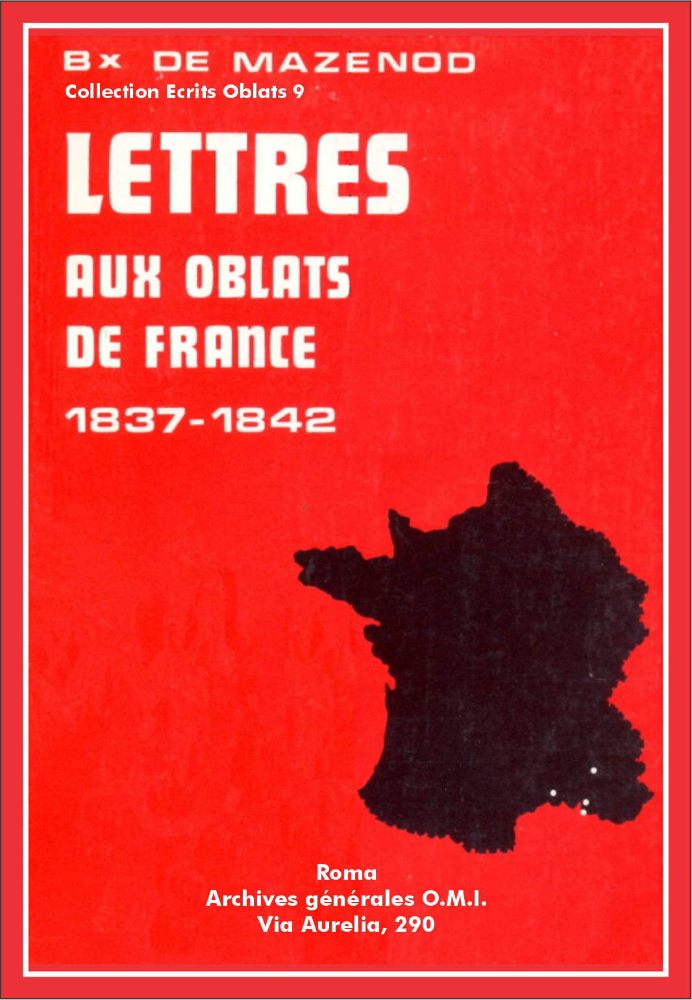

Éscrits Oblats: - 01 - 02 - 03 - 04 - 05 - 06 - 07 - 08 - 09 - 10 - 11 - 12 - 13 - 14 - 15 - 16 - 17 - 18 - 19 - 20 - 21 - 22

Vol.: IX - Lettres aux Oblats de France
Maladie du Fondateur. Le p. Dassy est reparti pour N.-D. de l'Osier. Nombreuses missions prévues pour l'année 1837. On ne doit pas faire appel au clergé diocésain pour compléter nos équipes de missionnaires. Renvoyer aussitôt que possible le p. Gignoux à N.-D. du Laus.
L.J.C. et M.I.
Marseille, le 2 j[anvie]r 1837.
Je n'ai pas pu profiter, mon cher Guigue[s], du départ du p. Dassy [2] pour t'écrire deux mots, je le fais aujourd'hui; je puis te rassurer sur l'état de ma santé qui paraît se raffermir de jour en jour [3]. Il ne reste plus qu'un peu de douleur dans la poitrine, et de la faiblesse dans l'organe de la voix, mais je ne sors pas encore, et voilà deux mois que je suis pris; heureux d'en être quitte à ce prix. Tu vois que je t'ai tenu parole en te renvoyant le p. Dassy [4] comme je l'avais promis, tu sens que je ne suis pas homme à plaisanter lorsqu'il s'agit d'intérêts sérieux, mais je désire que l'on n'entrave pas mes opérations devenues très difficiles à combiner à raison des localités et surtout des personnes éminentes qu'il faut ménager. Tu peux en juger par les grimaces qui ont été faites à l'occasion de l'absence momentanée du p. Dassy.
Nous ferons cette année des tours de force. Il a fallu faire acte de présence partout, pour cela nous avons mis en réquisition le ban et l'arrière-ban [5]. Deux prêtres novices marcheront à tour de rôle [6]; pour compléter l'œuvre il nous a même fallu avoir recours à un prêtre de nos amis [7] qui marchera avec une des bandes. Cette association n'a pas le même inconvénient que celle que vous avez consentie avec un prêtre du diocèse de Grenoble. Au nom de Dieu ne faites plus cela. Si des prêtres zélés veulent faire des missions qu'ils en fassent tant qu'ils voudront mais point d'amalgame, je vous en prie. C'est bien le moins qu'en recueillant le fruit de nos sueurs, on ne nous centriste pas par des vexations de ce genre. Nous n'avons pas la même liberté, la même aisance, quand des étrangers viennent se mêler de nos affaires. Cela nuit à l'unité, à l'abnégation, à l'ordre. Je m'oppose absolument à cette manière de faire. Vous n'auriez pas dû y consentir sans me consulter. C'est une faute qui peut avoir des conséquences. Si vous n'êtes pas assez nombreux pour aller dans des pays trop populeux, bornez-vous aux plus petits villages, mais soyez seuls; c'est ainsi que cela se pratique dans toutes les corporations. Je suis à mille lieues de vouloir faire exception à une règle si sage. Celui que j'ai adjoint à nos Pères dans ces contrées est comme l'un d'entre eux, il a été même appelé à notre vocation, ce n'est pas un étranger, je n'ai qu'à te le nommer, c'est Meyer [8]; que tout soit dit sur cet article.
Je réitère la pressante demande que le p. Gignoux [9] se rende au Laus dès qu'il aura fini la mission qu'il a entreprise. Le p. Marcellin [10] n'attend que lui pour partir, et la mission dont il doit faire partie à Fontvieille sera déjà commencée quand il arrivera, ce qui est un inconvénient, mais au moins ne faut-il pas qu'elle soit avancée. Cette mission commencera le 8 de ce mois; ainsi tu vois qu'il faut se presser.
Je te quitte car je ne puis plus faire marcher ma plume, c'est un reste de souffrance. Adieu.
+ Ch. Jos. Eug., évêque d'Icosie.
Vol.: IX - Lettres aux Oblats de France
Réflexions sur les religieux infidèles à leur vocation. Motifs qu'ils invoquent pour partir et gravité de leur décision.
[Marseille, le] 9 janvier 1837.
Au milieu des consolations que me procure la vue du bien fait par notre petit nombre, j'ai la douleur de voir que le démon nous crible, et qu'il se trouve parmi le grain agité par le van des graines assez mal nourries, assez desséchées pour passer et être enlevées de l'aire du Père de famille [12]. Que d'illusions funestes à ce sujet! Je protesterai devant tous les hommes et devant Dieu contre ces apostasies, jusqu'à mon dernier soupir et au-delà, car c'est au tribunal de Dieu que je cite tous ceux qui s'en sont rendus coupables. Il faudrait entendre saint [13] Liguori sur cette matière; j'ai ses Mémoires sous les yeux pour me consoler et me fortifier. Ce qu'il y a de plus triste, c'est de voir que Dieu est offensé et grandement offensé, et que néanmoins on est aveuglé à un tel point qu'on demeure tranquille et sans aucun remords dans un état habituel d'opposition à ses devoirs essentiels.
Au sujet des pensées contraires à la vocation, si on se donnait la peine de consulter la théologie on connaîtrait dans quelle illusion on se berce quand on s'imagine pouvoir vivre sans péché en s'entretenant volontairement en des pensées et des projets contraires à l'état auquel on s'est engagé par vœu. Il n'est pas plus permis de s'arrêter volontairement à des pensées et des désirs contraires aux vœux que l'on a faits, qu'il ne l'est à l'égard des pensées et des désirs contre l'amour de Dieu et contre le 6me commandement.
Persuadons-nous, dit le bienheureux Liguori, que la tentation contre la vocation est la plus dangereuse que nous puisse présenter le démon, à cause des conséquences qui s'en suivent; c'est pourquoi que chacun demande chaque jour la persévérance dans la vocation pendant la visite au Saint-Sacrement et à la Sainte Vierge.
On se trompe grossièrement si l'on s'excuse à ses yeux de ces sortes de pensées, sous le prétexte de la dispense qui peut être donnée. Que l'on sache bien que ces sortes de dispenses ne peuvent délier le sujet en conscience que dans le cas que de graves raisons qui n'existaient point lors de la profession, et que le sujet ne prévoyait pas, sont tout à coup survenues et qu'elles le mettent dans l'impossibilité de remplir ses engagements. Et encore le sujet ne doit-il, dans ce cas, recevoir la dispense qu'à regret et avec le désir sincère de voir tomber l'obstacle qui l'empêche de rester dans la Congrégation à laquelle il s'était engagé, obstacle qui est toujours supposé indépendant de sa volonté.
Lorsque le Souverain Pontife délie un religieux de ses vœux, il suppose que de semblables raisons existent, et il laisse à la conscience de l'individu de peser jusqu'à quel point elles sont valables. Dans ces sortes de dispenses, Rome songe avant tout à délivrer les Sociétés des membres qui ne leur appartiennent déjà plus par le cœur; quant au reste, elle les abandonne à leur conscience. Mais si le religieux s'est mis par sa faute dans le cas d'être congédié, il n'en demeure pas moins responsable devant Dieu de la violation des obligations dont sa conduite coupable a provoqué la dispense.
...Le pouvoir de dispenser des vœux est un glaive à deux tranchants qui tue ordinairement l'individu pour sauver la famille. Tous les membres de notre Congrégation qui ont été dispensés jusqu'à ce jour sont, en un sens très vrai, de véritables apostats, parce qu'il n'en est pas un seul qui ait eu des raisons valables à présenter, et qu'ils n'ont été séparés de la Congrégation qu'en se mettant dans le cas d'être expulsés; faute énorme, dont ils seront responsables tant qu'ils n'auront pas pris le moyen efficace de la réparer [14]...
La Règle pèse, dit-on. Mais la Règle d'aujourd'hui est celle que le religieux a connue pendant son noviciat, et qu'il s'est engagé d'observer. Vraiment, est-ce une raison à donner. Que le religieux voit s'il oserait présenter cette raison au tribunal du Souverain Juge. Les simples fidèles pourraient en dire autant pour les commandements de l'Église et même pour les préceptes du décalogue. Mais tel a toujours été le prétexte de tous les religieux lâches, de tous les apostats. Que ce religieux soit plus fidèle, et alors il éprouvera la vérité de cette parole du Sauveur: Jugum meum suave est et onus meum leve! [15]
Certains religieux osent dire qu'ils n'ont fait leur oblation que dans la pensée de sortir un jour de la Congrégation. Quelle horreur! Qu'ils étudient la théologie. Ils verront qu'il n'est point permis de mettre aucune condition, aucune restriction mentale à l'émission des vœux, et que la formule de profession que la bouche exprime doit être faite sincèrement et du fond du cœur. Sans quoi ce n'est plus qu'un mensonge, qu'une hypocrisie, que la profanation d'un acte saint et religieux.
Serait-il permis de se jouer ainsi de Dieu et des hommes, de regarder comme une cérémonie vaine et dérisoire un acte solennel contracté en présence de Jésus-Christ en face des saints autels? Qu'y a-t-il de sacré sur la terre, si les vœux, les serments prononcés devant Jésus-Christ, acceptés en son nom par l'Église, n'expriment pas ce qu'ils signifient? Je m'y perds...
Je ferais plus de bien ailleurs, dit-on. C'est sous ce prétexte qu'on déguise ce qu'il y a de criminel dans de semblables projets. Mais jusqu'à quand aura-t-on des yeux pour ne pas voir? Les prêtres qui sont libres cherchent des communautés religieuses, parce qu'ils voient que tous les efforts du zèle, lorsqu'on est seul et isolé, n'aboutissent à rien; et ceux qui ont le bonheur de vivre en Congrégation voudraient en sortir pour faire plus de bien? Nous voyons arriver à nous des prêtres qui abandonnent le monde dans le dessein de se sanctifier eux-mêmes en travaillant au salut des autres; ils renoncent à cette liberté que d'autres estiment tant, et que tous les saints regardaient cependant comme si dangereuse, et ceux qui ont l'inestimable bonheur d'être agrégés à une Société, qui met à couvert leur faiblesse, nourriraient la coupable pensée de reprendre des liens déjà rompus? Voilà ce que je ne saurais comprendre. Mais la cause de tous ces désirs criminels et de cette inquiétude ne peut être si bien dissimulée qu'on ne puisse l'entrevoir. C'est parce que l'on se croit quelque chose, qu'on s'imagine avoir des moyens de réussir; c'est parce qu'on s'est laissé prendre à l'appas d'éloges exagérés, que l'on compte sur soi, et qu'on désire être plus libre pour agir à sa manière, pour faire valoir ses talents, toujours sous le fallacieux prétexte de la gloire de Dieu. On ne voit pas que c'est un piège de l'amour propre qui, se trouvant gêné, contrarié par l'obéissance, fait tout ce qu'il peut pour trouver une position où il puisse se développer. Alors on ne s'en tient plus à la décision des supérieurs, on n'écoute plus leurs conseils, on veut consulter des étrangers, et toujours on veut consulter jusqu'à ce qu'on ait trouvé quelqu'un qui entre dans les mêmes vues, et c'est celui-là qui a raison; c'est jusque-là que pousse l'amour propre et la passion de faire sa volonté.
Vol.: IX - Lettres aux Oblats de France
Douleur en apprenant la mort accidentelle du p. Richaud en Corse. Soumission à la volonté de Dieu.
[Marseille, le] 11 janvier 1837.
Je viens d'offrir le saint Sacrifice pour ce bon Père dont votre dernière lettre m'annonce la mort [17]. Je le pleurerai toute ma vie comme ceux qui l'ont précédé dans l'éternité, de la perte desquels je suis inconsolable. Comment ne pas regretter un si bon prêtre, qui a été élevé dans mon sein depuis sa plus tendre enfance, qui venait tout récemment de donner à la famille une si belle preuve de dévouement en se proposant pour aller avec vous et vos compagnons travailler à la régénération de la Corse, qui était doué d'un caractère si doux, si complaisant, avec lequel il était si agréable de vivre! Mais à quoi bon nourrir notre douleur quand, pour la réprimer, il faudrait n'arrêter sa pensée que sur la récompense que le Seigneur aura accordée à sa fidélité et à tout le bien qu'il avait le désir de faire. Mon Dieu! il faudrait être beaucoup plus parfait que je ne suis pour ne pas déplorer notre perte en considérant le bonheur qui doit être son partage, puisqu'il a été enlevé en marchant dans la voie de la sainte vocation qui conduit infailliblement au ciel, selon la promesse de la Vérité incarnée. Cette assurance est pour moi un article de foi. J'ai la confiance que le saint sacrifice que j'ai offert à la réception de votre lettre aura complété l'acquittement des dettes de notre cher défunt.
Je partage toute votre douleur... Il était si bien à sa place! Il vous convenait tant! C'était un soulagement pour mon esprit de le sentir là avec vous! Je comptais sur sa sagesse, sur son cœur, sur son bon sens, sur son esprit d'ordre, sur son dévouement. Quelle affreuse perte!
J'avoue ma faiblesse et mon infirmité; un coup pareil m'atterre; mon âme est abîmée de douleur. Je suis tenté de me plaindre à Dieu de ce qu'il accorde trop tôt une récompense dont on a le temps de jouir pendant toute l'éternité, tandis qu'il nous enlève les moyens de faire ici-bas ce qu'il nous commande. Je désavoue ce qu'il y a d'humain dans cette pensée; c'est un cri involontaire de la souffrance. Que la volonté de Dieu et sa seule volonté soit faite! Résignons-nous sans murmurer à tout ce qu'il lui plaira de disposer de nous, des nôtres, des œuvres qu'il nous a confiées, de notre Congrégation même.
Adieu. Je vous presse tous contre mon cœur, je vous embrasse, je vous bénis, je suis avec vous par la pensée, par le cœur, par tous les sentiments de mon âme.
+ Ch. Jos. [E.1 de Mazenod, év. d'Icosie.
Vol.: IX - Lettres aux Oblats de France
La santé de Mgr de Mazenod va mieux. Pouvoirs que les Évoques avaient l'habitude d'accorder aux Pères en mission. Bonnes nouvelles des cinq missions que les Oblats prêchent en même temps. Mgr Dupont invite les Oblats à s'établir au plus tôt à N.-D. de Lumières.
L.J.C. et M.I.
Marseille, le 20 j[anvie]r 1837 [19].
J'ai été fort sensible, mon cher p. Courtes, à l'intérêt qu'a bien voulu vous témoigner pour ma santé Mr Jaquemet [20]; je vous prie, à la première occasion, de l'en remercier de ma part. Je vais beaucoup mieux quoique je ne sois pas encore entièrement remis.
Vous me demandez une note des pouvoirs et des permissions qui nous étaient accordés en mission. Nos Seigneurs les Archevêques comme tous les autres Évêques dans les diocèses desquels on exerçait ce s[ain]t ministère nous ont toujours accordé les pouvoirs les plus étendus.
D'abord tous les missionnaires avaient la faculté d'absoudre de tous les cas réservés même les cas spécialement réservés, le pouvoir de commuer les vœux, celui de restituer jus petendi [21], de bénir les croix, médailles et tableaux.
Le supérieur de chaque mission était spécialement délégué pour réhabiliter les mariages par lui ou par le mission[nai]re qu'il autoriserait pour cela, pour dispenser de la publication des bans, non seulement pour les cas de réhabilitation, mais pour ceux contractés devant l'officier civil, et en cas d'urgence, par exemple s'il s'agissait de faire cesser promptement quelque scandale, concubinage, etc., même pour les autres.
Le supérieur a toujours eu une grande latitude pour toutes les cérémonies extérieures.
Nos usages sont de donner la bénédiction chaque jour le matin et le soir après l'exercice, d'exposer solennellement le St Sacrement pendant la cérémonie du renouvellement des promesses du baptême, et le matin du jour fixé pour la bénédiction des enfants, pendant l'office qui précède la procession du St Sacrement.
On fait plusieurs processions pendant la mission.
1. Le jour de l'arrivée des mission[nai]res.
2. Le jour de l'expiation.
3. Le jour fixé pour la consécration des filles à la Ste Vierge.
4. Le jour de la commémoration des morts, au cimetière.
5. Le jour de la solennité du St Sacrement avec le St Sacrement.
6. Le jour de la plantation de la croix.
Les lettres que je reçois de nos diverses missions, on en fait cinq en même temps en divers diocèses [22], sont on ne peut pas plus consolantes. Ce sont des prodiges partout. Un de Mrs les Vicaires Gén[érau]x d'Avignon [23] n'a pas pu se défendre de m'en écrire pour s'en féliciter avec moi. Je vais vous transcrire un passage de sa lettre qui vous fera certainement plaisir.
"La mission d'Entraigues produit les plus heureux résultats. Elle nous présage tout ce que gagnera le diocèse d'Avignon à l'établissement de vos missionnaires à Lumières. Mgr l'Archevêque [24] appelle de tous ses vœux le moment où cet établissement sera formé; tous les bons prêtres partagent ses sentiments en sorte que vous devez regarder comme une terre amie celle où vous enverrez vos enfants. Inutile de vous assurer ici, Monseig[neu]r, que le plus dévoué de vos serviteurs sera le plus sincère ami de vos disciples, et que mon affection et mes petits services leur sont acquis d'avance."
Je n'attendais rien moins du zèle et de la bienveillance de Mgr l'Archevêque d'Avignon et des aimables vertus de son Vicaire Général qui est un des hommes les plus estimables que je connaisse; mais c'est une consolation d'en recevoir l'assurance avec des expressions si touchantes.
Le bon Dieu accorde toujours quelque compensation aux chagrins qu'il nous envoie pour éprouver notre fidélité, ou qu'il permet à la malice des hommes de nous procurer. Remercions-le de tout: gratias tibi ago, quod ut validius me traheres ad te aliquot mihi corporales aegritudines, angustias animi, et adversitates immisisti; ac mirabili vicissitudine consolationum, et desolationum erudiens me, ne in prosperis extollar, aut in adversis deficiam. [25]
Adieu je vous embrasse et vous bénis.
+ Ch. Jos. Eug., évêque d'Icosie.
Vol.: IX - Lettres aux Oblats de France
Écrire plus souvent en suivant l'exemple du p. Honorât. Tenir l'Archevêque d'Aix au courant de la marche de la mission. Conseils de régularité, de discrétion et d'édification pour le temps des missions.
L.J.C. et M.I.
Marseille, le 20 j[anvie]r 1837 [27].
Je suis, mon cher p. Mille, encore abasourdi du coup qui vient de nous écraser de nouveau. Je m'abstiens d'entamer ce grand sujet de douleur sur lequel je ne finirais pas [28]. J'en viens tout de suite à toi pour remercier le Seigneur des consolations qu'il vous donne dans votre s[aint]e mission. J'attends avec impatience de nouveaux détails. Sans reproches, mon cher fils, le p. Honorât [29] en est à sa troisième lettre et je n'en ai encore reçu qu'une de toi. C'est une preuve, me suis-je dit pour me consoler, que tu es fort occupé, mais le p. Honorât ne l'est pas moins puisque Meyer s'est mis au lit presqu'en arrivant. Du reste sa mission va on ne peut pas mieux, et il ne tarit pas sur le bien qu'il me dit de son curé qui est dans des transports continuels de bonheur en voyant tout ce que le bon Dieu opère sous ses yeux.
Je t'ai fait dire que je trouvais à propos que tu donnasses quelques détails des bénédictions que le Seigneur répand sur votre mission à Mgr l'Archevêque [30]. Je ne doute pas que tu ne l'aies fait en bons termes, c['est-]à-d[ire], avec modestie, n'attribuant qu'à Dieu, comme de raison, tout le bien qui se fait. Il est naturel de supposer qu'un premier Pasteur doit tenir beaucoup à connaître ce qui s'opère par ceux qu'il a envoyés, à qui il a donné mission spéciale pour ramener à la connaissance de la religion, à la pratique de la vertu, une portion de son troupeau.
Je ne suis point surpris du témoignage que tu rends à notre p. Cuynat [31], mais c'a été pour moi une consolation de savoir mes prévisions réalisées. J'attends quelques mots sur le p. Marcellin. Je te recommande de tenir la main à ce que l'on vive avec régularité. L'oraison, l'examen, etc. Que vous ne soyez pas des hommes tout adonnés aux œuvres extérieures qu'on ne soupçonne pas avoir seulement l'habitude des pratiques les plus usuelles pour tout bon prêtre. Cette dissipation fait un tort infini. La conférence du samedi est aussi de rigueur. La mortification ne doit pas être non plus une vertu tellement cachée qu'on puisse croire qu'elle vous est inconnue. Elle doit au contraire être très sensible dans les repas, où il n'est pas opportun de se jeter sur tous les mets qu'on vous présente. J'ai su dans certaines missions renvoyer des plats sans vouloir non seulement y toucher mais sans vouloir qu'ils figurassent sur table. Ainsi à Brignoles, à Signes et autres lieux [32]; il y avait en cela double profit, celui de la mortification pour nous, celui de l'édification pour les autres. Ne perdez pas de vue que vous êtes miss[ionnai]res de profession, par conséquent ayant une règle à observer en mission et propre en ce temps-là, prévue d'avance, déjà pratiquée, familière en un mot pour chacun de vous. Cela s'étend à la tenue qui doit être grave et réservée. On a trop ri ailleurs, je n'ai jamais toléré cette grosse joie de mon temps. Elle ne va pas avec l'importance et le genre de ministère que l'on exerce au nom de Dieu et investis de toute sa puissance, voire même du don des miracles, car tout ce qui s'opère en mission est prodigieux. Ne compromettez jamais le secret de la confession, même indirectement, en rapportant des faits particuliers arrivés en d'autres missions. Il y a bien assez de quoi édifier par le seul récit des choses extérieures. Faites en sorte, en un mot, non seulement de faire beaucoup de bien, mais de laisser après vous une vraie odeur de sainteté. Autrement on dirait de vous que vous faites votre métier. Il faut être absolument des hommes de Dieu, agir uniquement pour Dieu, marcher sans cesse en sa présence, édifier du matin au soir tous ceux qui ont affaire à vous ou qui vous entourent.
Adieu, très cher p. Mille, je vous embrasse bien affectueusement et vous bénis.
+ Ch. Jos. Eug., évêque d'Icosie.
Vol.: IX - Lettres aux Oblats de France
Reproches au p. Mille qui ne donne pas de nouvelles de sa mission. Personnel des prochaines missions.
L.J.C. et M.I.
Marseille, le 27 janvier 1837.
Mon cher p. Mille, je n'ai encore reçu qu'une lettre de vous et vous avez dépassé la moitié de votre mission. Dans cet intervalle j'ai reçu quatre lettres du p. Honorât qui est tout aussi occupé que vous à Entraigues, mais il tient à nos anciens usages. Comme vous ne pouvez pas les ignorer, je ne sais à quoi attribuer ce silence prolongé. J'en suis très en peine et ne puis me l'expliquer qu'en vous supposant malade, mais si vous êtes indisposé pourquoi ne chargez-vous pas un de vos confrères de s'acquitter de votre charge?
Je ne vous écris que pour vous faire connaître la peine où je suis, qui est partagée par nos Pères. En me répondant dites-moi si vous n'avez pas reçu la circulaire qui vous notifiait la perte que nous avons faite de notre cher p. Richaud. Il est extraordinaire qu'elle ne soit parvenue nulle part, en serait-il ainsi de vos lettres, alors vous seriez exempt de reproches. Ecrivez-moi, même dans ce cas, d'autant plus que je n'aurai pas l'occasion de vous voir à votre retour. Vous vous dirigerez directement sur Aix, où vous irez présenter vos hommages à Mgr l'Archevêque et lui rendre compte de vive voix des bénédictions répandues sur votre mission par le Seigneur. Vous vous rendrez promptement de là à Notre-Dame du Laus où vous irez avec le p. Pélissier [34]. (Gardez cette particularité pour vous, je ne me soucie pas que le p. Marcellin le lui écrive). Vous réglerez vos affaires au Laus en attendant que vous commenciez la mission de Mane que vous donnerez avec le p. Gignoux et le p. Chauvet. Le p. Marcellin attendra à Aix que le p. Honorât le prenne pour le mener avec lui et le p. Hermitte à la mission de Maussanne [35].
Je vous salue ainsi que vos deux frères et je dis aussi un petit bonjour à notre ancien novice auquel je souhaite quelques regrets de n'être pas devenu votre frère [36].
+ Ch. Jos. Eug., évêque d'Icosie.
Vol.: IX - Lettres aux Oblats de France
Il faut pardonner à quelques jeunes gens coupables d'espièglerie à la mission de Theys. Les missionnaires sont envoyés vers les pécheurs pour être les ministres de la miséricorde.
L.J.C. et M.I.
Marseille, le 8 février 1837.
Je ne savais où vous trouver, mon cher p. Guigue[s], pour vous écrire. Cependant voilà bien longtemps que vous n'aurez reçu de mes lettres.
Le 20 février.
Je reçois à l'instant votre lettre du 15 et je laisse tout pour y répondre. Dieu vous préserve, mon cher ami, de refuser la communion à ceux qui, après s'être rendus coupables de l'espièglerie dont vous me parlez, sont venus à résipiscence. Vous avouez vous-même qu'il n'y avait chez eux que de l'entraînement et point du tout dessein hostile. Oh! vous êtes envoyés de Dieu pour pardonner de plus grands péchés que le leur et même de plus grands scandales que celui qu'ils ont pu donner par leur étourderie. Et dès lors que vous les aurez réconciliés il est de votre devoir de les admettre à la sainte Table pour leur faire accomplir tout à la fois et le devoir pascal et l'obligation qui les pressait sans doute d'ailleurs pour la communion qu'ils ont négligé de faire. Je crains que la préoccupation où je vous vois ne vous ait porté à ne pas faire à ces jeunes gens un accueil assez touchant. Un système contraire eut gagné leur cœur et les aurait poussé [s] à entraîner vers vous ceux qui étaient plus coupables qu'eux. Et si ceux-là finissent par se rendre, nul doute que vous ne dev[r]iez également les faire communier à la fin de la mission. Rappelez-vous que vous êtes envoyés vers les pécheurs, et même vers les pécheurs endurcis. Il faut bien s'attendre à une résistance de la part du démon; il ne lâche pas sa proie volontiers. Tantôt cette résistance se manifeste d'une manière tantôt de l'autre. Jésus-Christ demeure vainqueur, Christus vincit. Il commande les sacrifices, Christus imperat. Il établit son règne dans les âmes, Christus régnât. C'est tout ce que nous souhaitons, c'est le fruit et la récompense de nos travaux. Nous sommes les ministres de sa miséricorde, ayons toujours et envers tous des entrailles de père; oublions aussi facilement les outrages qui sont faits quelquefois à nos personnes dans l'exercice de notre ministère que le bon Dieu veut bien oublier les offenses qu'on n'a cessé de lui faire. Le père de l'enfant prodigue ne se contenta pas de le revêtir de la robe, et de lui mettre l'anneau au doigt, mais il fit tuer le veau gras. Ainsi nous, nous [ne] devons pas seulement réconcilier les pécheurs, mais à raison de tout ce qui leur est accordé de grâces pendant la mission et des garanties que présentent leur fidélité à y correspondre et les efforts qu'ils ont dû faire pour cela, nous les admettons au banquet sacré, nous leur donnons le pain de vie pour qu'ils puissent marcher dans la nouvelle voie qu'ils doivent suivre, et qu'ils accomplissent en même temps un devoir impérieux qui les presse.
Je ne sais rien de l'affaire des cantiques; je voudrais bien être consulté de part et d'autre en pareille matière. On éviterait par là des mécomptes et les choses seraient plus en règle [38].
Je voudrais avoir encore un peu de temps pour vous recommander de vous entendre avec Dupuy pour n'être pas exposé[s] à ne pas dire la même chose à M. l'[Évêque] [39]. Il me semble qu'on manque un peu de confiance envers celui à qui pourtant nous devons trop pour lui montrer de la défiance. N'oubliez pas qu'il est très entendu dans les affaires et qu'il veut bien sincèrement la prospérité de la maison. Il paraît qu'il n'approuve pas la manière dont on a disposé la boutique. Il peut avoir tort comme raison, mais il faut faire juger alors le différend.
Quatre personnes m'attendent dans ma chambre et parlent tout haut. Je vous laisse en vous embrassant sans oublier de vous bénir.
+ Ch. Jos. Eug., évêque d'Icosie.
P.S. Nous avons depuis avant-hier un prêtre de plus dans la personne du p. Rolleri. C'est un adjoint nécessaire au p. Semeria dont la famille s'accroît journellement [40]. J'ai d'excellentes nouvelles à vous donner de toutes nos missions.
Vol.: IX - Lettres aux Oblats de France
Reproches au p. Honorât qui prêche en provençal et en français pour condescendre au désir de "cinq ou six bourgeois."
[Marseille,] le 28 [42] février 1837.
Je me mets peu en souci de cet infiniment petit nombre de bourgeois qui n'ont pas encore donné des signes de bonne volonté. Le plus grand nombre, sinon tous, se rendront comme les autres. Du reste, leurs âmes ne valent ni plus ni moins que celles des derniers manants, si on les considère du côté du prix que le Sauveur a bien voulu en donner; et considérées sous d'autres rapports, il est probable qu'elles sont beaucoup moins estimables. Ainsi, c'est folie de s'inquiéter plus de ces messieurs que des autres bons habitants d'un pays, et c'est mal, c'est peut-être péché, que de sacrifier l'avantage commun à leur caprice ou à leur vanité. Vous avez donc fait un acte de faiblesse en cédant à leurs instances pour donner des instructions en français [43]. Vous savez par expérience que cette concession n'est pas opportune. Croyez-vous que dans toutes les missions que j'ai faites en Provence, je ne rencontrais pas partout ce noyau de bourgeois qui me faisaient la demande de prêcher en français? Partout et toujours je m'y suis refusé, par conscience, excepté deux fois, pour des raisons très graves. À Brignoles seulement et, immédiatement après, à Lorgues je donnai une instruction par jour en français. Je le fis parce que Brignoles est une des principales villes du Var, où il y a beaucoup d'hommes instruits qui ne savent pas le provençal et qu'ainsi c'était un devoir de procurer cet aliment à leur intelligence. Je ne m'y décidai d'ailleurs qu'autant que le reste de la population n'en éprouverait aucun détriment. La mission alla comme de coutume pour tout le monde, et je fis une instruction de plus sur le dogme pour les magistrats et la nombreuse bourgeoisie. Et cette instruction de surérogation avait lieu précisément à l'heure où le peuple est occupé à son travail. Je fis de même à Lorgues par raison et par convenance, je dirai presque par justice; car il convenait de faire pour Lorgues ce que nous avions fait à Brignoles. La bourgeoisie de Lorgues n'aurait pas souffert d'être traitée avec moins de distinction que les Brignolais. Mais j'eus la peine de donner une instruction de plus par jour. Quand ces instructions n'auraient eu pour résultat que la conversion de ce fameux impie, Mr de Taradeau, commendataire, qui avait prêché toute sa vie l'athéisme avec un fanatisme digne de Voltaire, dont il était le disciple, et que la grâce attendait là, je n'aurais pas de regret de ma peine. Voilà les deux seules fois que nous ayons, je ne dis pas modifié nos usages, mais fait quelque chose par-dessus et en dehors de nos usages.
Vol.: IX - Lettres aux Oblats de France
Encouragements dans les difficultés. Le p. Courtes est un des fondements de la Congrégation.
L.J.C. et M.I.
Marseille, le 5 mars 1837.
Oh! que tu as été bien inspiré, mon cher ami, de m'écrire ta petite lettre d'hier; elle m'a soulagé d'un grand poids, car rien ne me désole comme de te sentir dans la peine, surtout quand il n'est pas en mon pouvoir d'y apporter remède, du moins aussitôt que je le voudrais. Je jugeais de la vivacité de ton mal par la circonstance où tu sais que je me trouve, car me disais-je, il faut bien qu'il le sente pour m'en faire part dans le moment. Je me désespérais intérieurement, jusque-là, que dans le désir d'adoucir le chagrin que tu m'exprimais comme tu sais faire quand tu es fortement préoccupé, je me disais: ah si je n'étais pas évêque, je laisserais tout pour aller reprendre un poste que j'ai occupé plusieurs années avec des consolations et des peines, car quel est le coin de la terre où ce mélange ne se rencontre pas. Mais comme je me voyais dans l'impuissance d'effectuer ce vœu de mon cœur, je demeurai dans ma douleur et j'y serais encore si tu n'avais pas eu la pensée de mettre le baume sur la plaie par ta lettre d'hier soir.
Cher ami, persuade-toi bien que je voudrais te procurer tout ce que tu peux désirer au prix de mon propre repos; que je sens tes peines comme les miennes, que le jour où tu seras content je m'en réjouirai avec transport, mais mon cher fils, pourquoi te considères-tu comme un simple membre de la Congrég[atio]n? il me semble que tu en es un des pivots, que tu fais partie des fondements de l'édifice, que tu es uni identiquement avec le chef, que tu dois donc t'attendre à éprouver toutes les phases, à résister à toutes les secousses, à combattre offensivement ou défensivement selon le besoin du corps, c'est une sorte de solidarité que tu partages avec moi et avec un infiniment petit nombre d'autres. Je n'ai pas le temps de t'en dire davantage. C'est un jour de grand office, je rentre pour ressortir tout de suite, mais je n'aurais pas voulu laisser passer le jour sans te dire quelques mots pour t'expliquer les choses telles que je les entends. Adieu je t'embrasse.
+ Ch. Jos. Eug., évêque d'Icosie.
Vol.: IX - Lettres aux Oblats de France
Préoccupation du Fondateur: le p. Bermond tarde à revenir de Suisse. Les meilleurs sujets de la Congrégation meurent jeunes.
L.J.C. et M.I.
Marseille, le 14 mars 1837.
Il n'y a donc plus de plumes ni de l'encre à Aix, mon cher Courtes; j'ai patienté jusqu'à aujourd'hui mais à une inquiétude vient s'en joindre une autre. Mon cousin est arrivé hier de Fribourg. [46] Il a fait route de Payerne à Genève avec le p. Bermond qui n'eut de place que sur l'impériale. Ils se sont séparés à Genève mais Bermond, ayant pris la route de Lyon, aurait dû être arrivé depuis au moins trois jours à Aix [47], mon cousin étant venu à petites journées de Valence à Avignon. La pensée que Bermond a pu souffrir de froid sur son impériale me préoccupe. Serait-il arrêté à Lyon par une fluxion de poitrine ou quelqu'autre maladie? C'est ce que me fait craindre le retard de son arrivée et votre silence. Tire-moi vite de peine. J'en suis au point de redouter, à la moindre menace, la mort qui a ravagé nos rangs si cruellement cette année [48]. Plus un sujet est bon, et Bermond l'est assurément, plus je suis inquiet, parce qu'elle choisit ses victimes dans l'élite. Sans doute que c'est par un effet de la miséricorde de Dieu, qui veut leur donner le temps de faire pénitence, que les apostats sont épargnés. Jusqu'à présent il n'est pas mort un seul de ces scandaleux sujets, car le pauvre Vincent [49] n'est pas de cette catégorie [50].
Le p. Pierre [51] n'a écrit à personne. Il convenait qu'il me fît savoir son arrivée en bon port. J'en suis encore à la grippe du p. Mouchel. Tu étais délivré de la tienne ainsi que le p. Magnan, mais il y a un siècle de cela.
Je vous salue tous très affectueusement. On vient m'appeler pour confirmer un malade. Adieu.
+ Ch. Jos. Eug., évêq[ue] d'Ic[osie].
Vol.: IX - Lettres aux Oblats de France
Reproches au p. Guigues qui, contrairement aux coutumes de la Congrégation, commence une mission au début de la semaine sainte. Conseils pour une édition du recueil de cantiques pour le temps des missions.
[Marseille, le] 14 mars 1837.
Je vous écris à la hâte pour que ma lettre provoque au plus tôt votre réponse, supposé que vous attendissiez de mes nouvelles pour m'écrire de nouveau; mais je vous avoue que je n'aurais pas cru devoir aller vous chercher en mission pendant la semaine sainte. Si vous m'aviez consulté je vous aurais détourné d'entreprendre une mission au commencement de cette semaine. Ce sera la première fois que cela nous sera arrivé, et arrangez-vous pour que ce soit la dernière. D'abord, parce qu'il est d'usage constant que nous célébrions la Pâque dans nos communautés, et que l'on doit rentrer de partout pour se trouver réunis pendant les jours de recueillement qui précèdent la grande solennité qui les couronne. Ensuite, parce que c'est un contresens de prêcher la pénitence et d'introduire dans la voie purgative, précisément le jour du grand Alléluia de la solennité des solennités. C'est un autre contresens de s'occuper du mystère de l'eucharistie, comme on doit le faire le jeudi-saint, durant les premiers jours d'une mission qui doivent être employés à traiter d'autres arguments. Bref, il faut combiner les choses de manière à ce que la Pâque termine la mission, quand vous donnez ces exercices en carême, ou bien ne les commencer qu'après.
Quoiqu'il soit nouveau chez nous d'isoler les intérêts qui doivent toujours être communs dans notre famille, je ne me refuserais pas à ce que l'on fît à Grenoble l'édition de cantiques dont on a besoin surtout si Mgr l'Évêque tient à ce qu'elle paraisse sous ses auspices. Toutefois, il est bien bon de s'occuper avec grand soin de ces choses-là. Ne faites rien sans vous être entendu avec le p. Mille. Je vous recommande de faire un bon choix de cantiques dans votre recueil. Donnez plus à la piété qu'au goût moderne.
Je ne pense pas que vous deviez vous en rapporter entièrement au p. Gignoux pour corriger les épreuves des cantiques. Il est tout à fait neuf en cette matière. Si le p. Dassy est trop occupé, vous ferez bien de vous charger de ce soin qui exige de la patience et de l'attention, mais tenez-vous-en à ce qui a été convenu, de concert avec le p. Mille. Ne retranchez ni n'ajoutez, autrement il n'y a pas moyen de s'entendre. Je suis fâché que des occupations plus essentielles m'aient empêché d'examiner moi-même le choix.
Faites imprimer dans ce recueil le Veni Creator, le Miserere, l'Ave Maris Stella, le De Profundis, le Libéra et le Te Deum Laudamus. Ces prières se chantent en divers temps dans toutes nos missions. Il faut aussi y mettre le règlement de vie chrétienne qu'on propose aux fidèles convertis de suivre.
II est aussi un oubli qui devrait être réparé, c'est qu'il faut imprimer quelques cantiques en langue provençale; cette omission présente un vide pour nos missions du Midi. Il faut donc qu'on laisse un certain nombre d'exemplaires en feuilles, pour qu'on puisse y ajouter quelques pages avant de les brocher. Toutefois ne concluez rien avant d'avoir entendu le p. Mille qui est en mission dans ce moment. Je suis persuadé que ce recueil, ainsi rédigé, sera utile à la Société.
Vol.: IX - Lettres aux Oblats de France
Laisser au p. Dassy le temps de préparer un petit ouvrage sur N.-D. de l'Osier. Décès du père de Calixte Kotterer. Il ne faut pas permettre à celui-ci de devenir curé pour aider sa mère.
[Marseille,] le 29 [54] mars 1837.
Il eût été à désirer que le p. Dassy ne fît pas la dernière instruction pour qu'il eût le temps de travailler au petit livre sur le sanctuaire qui ne devrait pas se faire attendre davantage...
Ta [55] dernière lettre m'a un peu consolé sans me tranquilliser pourtant tout à fait. Je lisais dernièrement une lettre du bx Liguori, de ce grand saint si pur, si innocent, qui n'avait jamais commis un péché mortel dans sa vie séculière; il s'exprime ainsi: "le démon est démon, avec l'occasion à portée et même sans suggestion, je craindrais moi-même de tomber". Ainsi, que celui dont tu me parles évite les occasions...
Kotterer m'apprend que son père est mort, et il me fait un long raisonnement pour me prouver que sa mère ne peut pas se passer de son secours. Est-ce pour m'exposer ses besoins et me demander d'y pourvoir? Non, c'est tout bonnement pour conclure qu'il n'y a pas d'autres moyens à prendre que de l'autoriser à solliciter une paroisse de Mgr l'Évêque de Grenoble, qu'il exploiterait tant que sa mère vivrait, et lorsque le bon Dieu aurait disposé d'elle, il rentrerait dans nos maisons. C'est-à-dire qu'après avoir été élevé, nourri, entretenu, etc., pendant dix ans aux frais de la Congrégation, aujourd'hui qu'il pourrait lui rendre quelques services en remplissant le ministère dont elle est chargée, il en sortirait pour passer sa jeunesse dans l'inaction d'une paroisse, se chauffant sous le tablier de sa mère qui peut vivre encore 25 ans. Après cela, lorsqu'il ne sera plus bon à rien, il fera l'honneur à la Congrégation de venir se faire soigner par elle pour mourir en paix dans son sein. C'est [56] au moment où il lui conste de tous nos embarras qu'il a le courage de me faire une pareille proposition qui décèle son peu de délicatesse, son ingratitude et l'absence totale de l'amour de son état. S'il m'avait exposé la position de sa mère, et la peine qu'il doit en éprouver, pour que j'avisasse au moyen de la soulager, j'aurais trouvé la chose toute simple, et sur-le-champ je lui eusse répondu que je consentais volontiers à venir au secours de sa mère en lui abandonnant les rétributions de ses messes et quelque chose en sus, s'il l'eût fallu. Par le fait, je ne puis pas consentir à autre chose. Je te prie, en conséquence, d'écrire sur-le-champ à Mgr l'Évêque de Grenoble pour lui exposer le fait. Tu lui feras sentir combien un pareil exemple serait dangereux, et le tort que ferait au service des missions dans son diocèse l'absence d'un sujet qui, pour n'être pas transcendant, peut remplir néanmoins sa tâche; que tu espères donc que Monseigneur ne consentira pas à lui donner un poste dans son diocèse, comme Kotterer s'en flatte; que la Congrégation fait plus qu'elle ne doit, en étant disposée à faire à ce jeune prêtre, qui lui doit toute son éducation cléricale et qui a par conséquent déjà tant dépensé pour lui, l'abandon en faveur de sa mère de toutes les rétributions de ses messes, auxquelles, s'il est vrai qu'elle n'ait point de pension de veuve de militaire, on pourrait ajouter de quoi compléter 400 francs de pension, etc., etc. Je vais répondre dans ce sens à Kotterer.
Tu feras observer que Kotterer ne demande pas à sortir de la Congrégation pour laquelle, dit-il, il professe un attachement filial, mais il voudrait être autorisé à vivre hors de la maison, et exercer un autre ministère pour en retirer tout le profit, sauf à revenir ensuite, etc. Le moyen que je propose sauve tous les principes et pourvoit suffisamment aux besoins. On ne peut pas en conscience suivre une autre voie.
P.S. Je reviens sur ce que je t'ai dit. Il ne faut pas parler de rétributions de messes. Cela présente des inconvénients, surtout dans votre diocèse [où il en manque beaucoup] [57]. Bornons-nous à offrir de trois à quatre cents francs, c'est-à-dire trois si la veuve du militaire doit jouir de la pension, qui est ordinairement la moitié de celle du mari, et quatre si elle est dépourvue de tout secours.
Vol.: IX - Lettres aux Oblats de France
Reproche au p. Mille qui prêche trop, sans se reposer. On s'écarte de nos traditions en mission. Recueil de cantiques et façon de chanter en mission.
[Marseille, le] 6 avril 1837.
Je ne puis m'empêcher de vous gronder de vouloir à toute force faire cette mission de Prébois à laquelle je vous avais dit de renoncer à cause des fatigues des missions précédentes [où j'ai su] [59] que vous avez craché le sang. C'est vouloir tenter Dieu et se tuer sans mérite; car le Seigneur ne rémunère pas le bien qui se fait en dehors de l'obéissance, moins encore celui que l'on prétend faire contre les prescriptions de l'obéissance. Je range parmi ces dernières le soin raisonnable de sa santé. A quoi bon s'épuiser de la sorte? C'est toujours mal; mais dans la position où nous sommes, je le regarde comme un crime. Soyez donc sage, au nom de Dieu! et sachez une bonne fois faire le sacrifice de vos idées aux remontrances d'un père.
Combien de choses j'aurais à dire sur les missions, telles qu'on les fait! Insensiblement, on s'écarte de nos traditions; chacun a la sotte prétention de faire mieux que ceux qui l'ont devancé et, pour l'ordinaire, il se trompe. Quand on veut changer quelque chose, il serait sage de me consulter. Je ne dis cela pas plus à vous qu'à d'autres; j'en fais la remarque en passant, pour qu'on sache ce qu'il convient de faire.
... Dans les missions, je vous recommande les cantiques à refrain... que le peuple puisse répéter. Je tiens à ce qu'il y ait des refrains que tout le peuple puisse chanter, rien de plus. Je ne trouve rien de plus fatigant que d'entendre quelques voix isolées qui vous ennuient de leurs accords sans qu'on puisse entendre un seul mot de ce qu'elles prononcent. C'est l'antipode de la dévotion. La musique, dans ce cas, loin de porter à Dieu, en détourne les âmes. On languit au lieu de prier dans un moment si précieux. On préfère prier avec ferveur sans être distrait par le chant. Aussi je voudrais supprimer, dans nos missions, toute adoration, tout cantique dont le refrain ne pourrait être répété par toute l'assistance. Je tiens donc aux cantiques à refrain, parce qu'il faut que tout le monde chante en mission. Qu'on éloigne aussi de nos recueils de cantiques ces expressions ridicules et déplacées d'amour; il faut des couplets très expressifs et inspirant la piété.
Vol.: IX - Lettres aux Oblats de France
Réflexions du Fondateur sur sa nomination à l'évêché de Marseille. C'est le p. Honorât qui accompagnera Mgr Bernet dans la visite pastorale du diocèse d'Aix.
Marseille, le 16 avril 1837.
Mon cher Courtes, c'est une consolation pour moi, dans mon désappointement, [61] de te voir content et satisfait du tour que mon Oncle vient de me jouer. [62] Mon plan était tout autre, il était plus conforme à mes goûts, à mon attrait, je veux croire qu'il offrait moins d'avantages à la Congrégation. Il n'y faut plus songer maintenant. Dieu semble s'être prononcé, mon devoir sera de faire de mon mieux dans la nouvelle position où sa providence me place. J'ai toujours redouté la responsabilité pastorale. Elle tombe sur moi de tout son poids. Le travail tant qu'il n'était qu'un fardeau je le portais volontiers, il n'en sera plus ainsi à l'avenir. Je te raconterai à notre première entrevue comment tout cela s'est passé. M. l'Archevêque d'Aix m'a écrit tout de suite une lettre fort amicale à laquelle je réponds aujourd'hui. D'Astros aussi, c'est un ami de cœur. [63] Il a été fort sensible à ton attention; je tâcherai de lui écrire par la même occasion. C'est celle du départ du p. Honorât que j'envoie à Aix pour prendre les ordres de M. l'Archevêque pour la visite pastorale qui doit commencer le 22. J'avais d'abord pensé au p. Mille pour cette mission, mais il est absolument impossible de l'éloigner de N.-D. du Laus aux approches de la Pentecôte. Personne n'est à même de le remplacer à cette époque de grand concours et décisive cette année pour l'achèvement de la construction du clocher. J'ai fait à Honorât toutes les recommandations possibles, tu y ajouteras les observations locales que personne n'est plus que toi à même de faire, nous livrerons le reste à la garde de Dieu et de nos bons Anges [64].
Rien n'est comparable au choix projeté de André, [65] j'en rirais encore si je pouvais tourner mon esprit vers la gaieté depuis qu'on m'a affublé d'un diocèse. Honorât se propose de reparaître ici avant le départ de la s[ain]te caravane, il me portera de tes nouvelles et il me fera connaître le bon effet attendu de ces sangsues qu'on t'a appliquées au cou.
Je salue affectueusement toute la communauté. Dis bien à Mme de Régusse que je n'ai écrit à personne; ces sortes de nouvelles c'est assez qu'on les apprenne par d'autres. Ce qu'il faut, c'est qu'on prie pour moi avec plus de ferveur que jamais. Adieu, je t'embrasse de tout mon cœur et vous bénis.
+ Ch. Jos. Eug., évêque d'Icosie.
Vol.: IX - Lettres aux Oblats de France
Difficulté de rejoindre le p. Mille qui devra accompagner l'Archevêque d'Aix dans sa visite pastorale.
[Marseille,] le 18 avril 1837.
Le p. Mille, auquel j'avais pensé pour lui confier [ce] travail, a eu la sotte idée d'entreprendre, malgré la répugnance que je lui en avais témoignée, une mission à lui seul. Je ne sais où le prendre, parce que j'ai tout lieu de croire qu'il aura été obligé de proroger d'une semaine sa mission qu'il comptait achever en trois semaines, ce qui me paraît difficile quand on est seul; [de plus je ne suis pas sûr qu'il n'ait] succombé à la tentation d'aller visiter les confrères qui donnent la mission en même temps [67].
Vol.: IX - Lettres aux Oblats de France
Conseils au p. Mille qui accompagnera Mgr Bemet dans la visite pastorale du diocèse d'Aix.
[Marseille, le 21] [69] avril 1837.
Ne revenons plus, mon cher p. Mille, sur ces deux dernières missions, et surtout sur celle de Prébois faite malgré moi. Y eût-on fait des miracles, je ne saurais m'en réjouir, parce que c'est contre l'ordre et que l'on ne doit jamais forcer la main au supérieur. C'est un principe qu'il importe d'établir, et ma réclamation demeure même après tout le bien que tu as pu faire. Le bienheureux Alphonse dit un jour avec vivacité: "Pourquoi avez-vous promis cette mission? Je préfère la vie d'un missionnaire à dix missions; qu'elle n'ait pas lieu. " Cependant on n'accusera pas ce saint de manquer de zèle pour le salut des âmes...
Maintenant, je voudrais te donner quelques instructions. D'abord, tu dois savoir que tu es appelé à être l'organe du premier pasteur dans sa visite pastorale. Il faut, par conséquent, que tu te pénètres de l'importance de la grandeur de ce ministère. Il faut que tu lises dans le pontifical ce qui a rapport à ces visites, pour prêcher précisément ce que l'Église entend que l'on apprenne aux peuples dans cette circonstance. Je n'ai pas besoin de te dire que tu dois relever la grandeur de la grâce et de toutes les bénédictions que le Seigneur répand sur le passage de-1'évêque visitant ses ouailles pour les instruire, les corriger, les consoler et donner le Saint-Esprit à ceux qui ne l'ont pas reçu encore; exciter le repentir dans l'âme de ceux qui l'ont perdu; rappeler à la connaissance et à la pratique de la sainte loi de Dieu et aux préceptes de l'Église; exalter la charité de cette bonne Mère pour ceux mêmes qui sont morts, l'évoque venant prier pour leurs âmes dans chaque lieu de sa juridiction. Enfin tu auras soin de relever, aux yeux des fidèles, l'autorité du premier pasteur par tous les arguments que te fournissent la foi et la connaissance de la divine hiérarchie établie par Notre Seigneur Jésus-Christ. Voilà ton thème. Sur le tout, tu prendras les ordres et tu recevras les inspirations de Mgr l'Archevêque dont tu tiendras la place en chaire.
Le matin, avant la cérémonie, je pense que tu seras chargé de faire une courte instruction sur le sacrement de confirmation que les enfants doivent recevoir. Prends garde de n'être pas trop long, et enferme beaucoup de choses dans peu de mots. Ne descends jamais de chaire sans avoir excité les cœurs à la contrition et à l'amour. Dans les villages, fais comprendre à Monseigneur l'utilité de parler la langue du pays.
Prépare-toi d'avance aux deux sermons que tu seras dans le cas de faire le jour de l'Ascension et le jour de la Pentecôte. Écris-les dans l'intervalle de tes courses. Il est essentiel qu'ils soient bien faits.
Je te félicite du choix que j'ai été dans le cas de faire de toi. C'est un très beau ministère que tu vas remplir, et je suis très reconnaissant à Mgr l'Archevêque d'avoir donné la préférence aux nôtres. Je n'ai pas besoin de te recommander d'être plein de soins, d'attentions et de respect pour le Prélat. Agis en tout dans un grand esprit de foi, avec simplicité, mais ne négligeant rien pour t'acquitter dignement de ta charge.
Adieu, mon bon fils, je te bénis avec joie pour cette belle mission pendant laquelle tu ne manqueras pas de t'acquitter, même au su de Mgr l'Archevêque, de toutes les pratiques prescrites par la Règle.
Vol.: IX - Lettres aux Oblats de France
Reproches au p. Kotterer qui insiste pour obtenir la dispense de ses vœux. Décisions du Fondateur à ce propos.
Marseille, le 23 avril 1837.
L'état de ma santé ne me permettrait pas de m'exposer à une seconde entrevue comme celle de l'autre jour où vous avez manqué tout à la fois à la politesse, à la soumission et au respect que vous me devez. Je vous ferai donc connaître mes intentions et vous rappellerai vos devoirs par écrit.
À la mort de votre père, la position de votre mère affectant votre cœur, vous deviez m'exposer avec simplicité l'état des choses et attendre avec confiance ma décision, au lieu de m'écrire une lettre très peu mesurée dans laquelle vous m'intimiez la vôtre.
Avant de vous rendre à Marseille vous deviez m'en demander la permission ou, pour mieux dire, vous ne deviez pas songer d'y venir, ayant reçu de moi une réponse qui devait fixer vos incertitudes en vous traçant la conduite que vous aviez à suivre.
Arrivé à Marseille, vous deviez vous présenter devant moi avec les sentiments de reconnaissance qu'aurait inspirés à tout autre la générosité de mes procédés envers vous, au lieu de prendre ce ton insolent qui m'obligea à vous imposer silence.
Nourrissant dans votre âme des pensées contraires aux plus saints de vos devoirs, méprisant l'autorité sacrée que j'ai sur vous, persistant dans des sentiments de désobéissance formelle, poussant la témérité de votre révolte jusqu'à vous arrêter au projet de partir sans ma permission et à être sur le point d'exécuter cet acte inouï d'insubordination, l'équivalent de l'apostasie, vous deviez vous abstenir de monter à l'autel aujourd'hui, parce que vous êtes en état de péché mortel, et plût à Dieu que vous n'y fussiez pas depuis longtemps par l'effet des infractions graves et réitérées que vous avez à vous reprocher contre les vertus de pauvreté et d'obéissance que vous avez vouées.
Maintenant voici mes intentions: Votre père étant mort, vous dites que votre mère a besoin de vous et vous prétendez exiger que, consentant à vous détourner de votre vocation, je vous permette de rester auprès d'elle, et que je vous autorise à accepter une place dans le diocèse de Grenoble pour fournir à ses besoins et aux vôtres.
Je réponds à cela que ma conscience me fait un devoir de vous maintenir dans les limites toutes tracées de votre vocation, que vous avez fait vœu (confirmé par serment) de stabilité dans la Congrégation qui vous a admis dans son sein et qui, à cette condition, a pourvu pendant dix ans à votre éducation, à votre nourriture et à votre entretien.
Je réponds qu'en qualité de votre supérieur, répondant de vous, et connaissant le peu de vertus surnaturelles dont vous êtes doué, je ne puis vous exposer à tous les dangers d'un isolement qui vous mettrait dans le cas d'oublier bientôt la pratique de vos devoirs, devoirs que vous observiez déjà si imparfaitement malgré le secours des bons exemples et de la régularité dans nos communautés.
Vous n'avez pas oublié, sans doute, mes anxiétés et mes peines chaque fois qu'il s'est agi de vous faire avancer dans les ordres. Ces craintes étaient partagées par tous les membres de mon conseil. Nous vous avons toujours reproché le défaut de vertu, indépendamment des vices de votre caractère vraiment détestable. Jamais je n'aurais consenti à surmonter la répugnance que j'avais à engager ma responsabilité et à vous ordonner, si je ne m'étais rassuré en vous sentant lié irrévocablement à une Congrégation dans le sein de laquelle vous deviez trouver des secours habituels pour soutenir votre faiblesse.
Voilà le premier motif de mon refus puisé dans la connaissance de mes devoirs, des vôtres, et des besoins de votre âme. Considération d'un ordre supérieur dont personne ne peut être [plus] juge que moi, parce que personne ne vous connaît comme moi, et parce que je réponds de vous par la nature des rapports qui sont établis entre nous par l'autorité de l'Église.
Le second motif découle du premier. Je dois rejeter cette prétention qui vous fait vouloir sortir de votre communauté pour aller demeurer avec votre mère: 1) parce qu'en vous engageant dans l'état religieux, vous avez renoncé au monde et vous avez consacré votre existence à l’Église dans la famille qui vous a adopté et aux ministères qu'elle embrasse; 2) parce que votre mère a d'autres enfants qui ne sauraient se refuser à lui donner les soins que son état exige; 3) parce que loin de me refuser à suppléer à ce que votre état de pauvreté religieuse vous empêcherait de faire pour contribuer à la charge de l'entretien de votre mère, je vous offre au contraire d'y pourvoir abondamment en vous abandonnant annuellement la somme de 400 frs. Ces 400 frs joints à la pension à laquelle votre mère a droit comme veuve de militaire et aux secours que vos deux frères et votre sœur sont tenus de lui fournir, et qu'ils ne l'obligeront certainement pas d'exiger par les voies de la justice, lui procureront une honnête aisance dont elle doit d'autant plus se contenter que son revenu sera ainsi plus considérable que n'étaient du vivant de son mari leurs ressources réunies.
J'ajoute pour m'accommoder à votre faiblesse que si votre mère veut venir s'établir à Notre-Dame de l'Osier ou à Vinay pour être plus près de vous, je ferai en sorte de vous laisser le plus longtemps qu'il me sera possible dans la communauté de l'Osier pour vous faciliter le moyen de la voir tous les jours s'il le faut. Remarquez bien qu'il vous sera beaucoup plus aisé de conserver la paix intérieure en vous tenant ainsi un peu à l'écart qu'en vivant sous le même toit avec votre mère dont le caractère n'est pas facile à passer.
Vous comprenez qu'ayant satisfait, et au-delà, à ce que la piété filiale pouvait exiger de vous, vous restez libre pour accomplir les devoirs de votre vocation, et que dès lors il n'y a plus de prétextes pour vous y soustraire. De mon côté, je suis tenu à vous en prescrire la fidèle observance. Ainsi, pour couper court aux funestes illusions qui vous ont préoccupé jusqu'à présent, je vous ordonne, en vertu de la sainte obéissance, de vous rendre dans l'espace de huit jours dans votre communauté de Notre-Dame de l'Osier, vous déclarant suspens ipso facto etiam a sacris si vous n'obtempérez pas à l'obéissance que je vous intime par la présente lettre, et ce tant que durera votre résistance. Je prie le Seigneur pour que sa grâce vous arrête sur le bord du précipice qui s'entr'ouvre sous vos pas et afin que, revenu à résipiscence, vous obteniez le pardon de vos fautes et donniez par votre bonne conduite à la Congrégation et à moi autant de consolation que vous nous avez donné de chagrin.
Vol.: IX - Lettres aux Oblats de France
Que le p. Guignes ne se préoccupe pas si l’Évêque de Grenoble fonde un établissement de missionnaires diocésains. Régularité.
[Marseille,] le 24 avril 1837.
Je vous recommande très expressément de ne pas vous inquiéter, soit pour éviter qu'on effectue ce projet, soit pour faire bonne contenance en présence de vos compétiteurs. Lors même que vous les verriez s'établir, je ne veux pas absolument que vous forciez votre travail personnel. Bien loin de là, faites moins que vous n'avez fait cette année, prenez votre temps de repos entre une mission et l'autre; faites vos missions pendant l'hiver; quand votre quartier d'hiver sera fini, rentrez en paix dans votre communauté pour vous y recueillir et y vivre conformément à votre Règle, ce qui ne veut pas dire comme des châtelains.
Je vous recommande de veiller beaucoup sur la régularité de votre maison et de donner vous-même l'exemple. Ne négligez pas le Frère pendant l'année de sa première oblation. Ses occupations ne doivent pas l'exempter de ses exercices réguliers et des instructions particulières dont il à besoin. La communauté, quelque peu nombreuse qu'elle soit, ne doit pas non plus être privée, le jour de la conférence, de l'instruction que le supérieur doit lui faire sur un point de la Règle et les devoirs religieux.
Vol.: IX - Lettres aux Oblats de France
Réflexions sur la gravité du péché d'infidélité aux vœux de religion.
Marseille, St-Joseph [73], le 10 mai 1837.
Mon cher enfant,
Je voudrais bien vous dire de vive voix ce que je me contente de vous écrire. Rendez-vous de plus en plus digne de votre vocation. Nous ne saurions trop faire pour reconnaître tout le bien que le bon Dieu nous procure d'opérer par un privilège spécial... Si nous sommes en petit nombre, sans doute il faut s'en prendre en partie aux malheurs des temps, à la lâcheté qui gagne tant de mercenaires qui ne veulent servir l’Église que pour le profit temporel qu'elle leur procure, mais aussi il faut reconnaître que nous y sommes réduits par l'infidélité et le peu de vertus d'un grand nombre de ceux qui avaient été appelés comme vous et qui ont mérité par leur secrète prévarication de tomber dans un état de dépravation véritable qui leur attirera infailliblement la malédiction de Dieu. Tous n'ont pas apostasie, en ce sens qu'ils n'ont pas franchi le seuil brusquement, mais ils ont tous prévariqués réellement en se mettant dans le cas d'être expulsés à leurs risques et périls. Je n'en excepte qu'un seul que le travers d'esprit rend excusable à mes yeux. C'est le p. Pachiaudi. Hors lui je regarde tous les autres comme étant en état de damnation. Leur infidélité et le scandale qu'ils donnent à l'Église sont permanents; ce n'est pas moi très certainement qui les absoudrai d'un si grand crime. Il faut bien qu'on le sache. On peut vouloir se faire illusion, mais on ne se moque pas impunément de Dieu, et les hommes même ne s'y laissent pas tromper. Quand je me suis servi plus haut du terme de dépravation, il est juste, parce que j'en entends la signification pour les uns à la dépravation des mœurs, pour les autres à la dépravation d'esprit à laquelle on est parvenu quand on fausse les principes, quand on dénature les devoirs, quand on méconnaît l'autorité, quand on se joue des engagements les plus sacrés qu'il y ait sur la terre, quand on foule aux pieds les serments. Horreur! monstruosité! scélératesse! Sous quelque manteau qu'on veuille le couvrir. J'en appelle à Dieu pour le jour de la justice puisque ma voix est impuissante sur la terre pour retenir dans le devoir. Je ne croyais pas vous écrire ces choses, mais Spiritus Dei ubi vult spirat. [74]
Vol.: IX - Lettres aux Oblats de France
Invitation à venir le voir au château St-Joseph pour parler d'affaires.
L.J.C. et M.I.
Marseille, le 10 mai 1837 [76].
Je serais bien aise, cher Tempier, de vous voir demain un peu à mon aise. J'ai beaucoup de choses à traiter avec vous, à tête reposée. Il ne faut pas se bercer de l'idée que nous sommes encore loin de l'époque où il faudra prendre son parti sur beaucoup de choses [77]. Outre que ce moment peut être plus près qu'on ne pense, il faut que tout soit préparé d'avance. D'ailleurs est-il bien décidé que nous n'avons point de voyages à faire, et s'il convenait d'en entreprendre quand s'occuperait-on de ce qui doit être prévu. Tout cela n'est point bagatelle. Tout le reste au contraire doit céder et n'a qu'une importance secondaire. J'ai aussi à vous donner connaissance d'une lettre parmi celles que je reçois journellement.
En venant demain portez-moi une paire de souliers à grosses semelles c['est-à-d[ire] que ce ne soit pas des escarpins. Il ne faut pas non plus porter ces énormes souliers de voyage qui ne peuvent pas me servir ici.
Adieu, cher ami, à demain.
Ch. Jos. Eug., évêq[ue] d'Icosie.
Vol.: IX - Lettres aux Oblats de France
Prière d'envoyer une voiture pour rentrer à Marseille.
Du château de St-Joseph [79]. Le 12 mai 1837.
Je ne voudrais pas que mon retour précipité ne fût nécessité par quelque affaire désagréable, c'est pourtant ce qui me détermine à me rendre à votre invitation, car je ne souffre pas de froid dans ma petite chambre. Envoyez-moi donc la voiture et faites-moi dire si je dois aller à St-Barnabé. En conscience je crois que je n'y suis pas tenu, néanmoins je ne fais point de difficulté d'y aller si l'on est prévenu.
Adieu, mon très cher, je n'irai que de ma personne, si le temps se mettait au beau je serais tenté de revenir passer q[ue]lques jours ici [80].
Vol.: IX - Lettres aux Oblats de France
Objets à apporter pour l'ordination du 20 au château St-Joseph, Ne pas se presser pour entrer dans les vues de M. Boue.
L.J.C. et M.I.
St-Joseph, 19 mai 1837.
Pierre va à Marseille, j'en profite pour vous dire qu'il serait à propos de faire avertir le p. Athanase [82] que l'ordination se fait à St-Joseph à 7 heures. Je vous recommande de ne pas perdre l'anneau en me le portant. Pour plus grande sûreté il serait mieux de prendre celui de Rome qui se trouve dans une petite boîte ronde placée dans un des petits tiroirs à droite dans mon bonheur-du-jour. Vous n'oublierez pas la crosse, nous avons la clef de l'étui ici. J'ai porté aussi les Missae Pontificales et un Pontifical, et tout le reste qu'il me faut.
S'il fallait vous parler d'affaires, je vous dirais qu'il n'y a pas besoin de se presser pour entrer dans les vues de M. Boue [83]. Il a bien assez emporté de ce diocèse pour son établissement qui ne nous intéresse nullement. Je vous attends au plus tard demain. Peut-être feriez-vous bien de profiter ce soir du retour du cabriolet qui ramènera M. Meistre [84]. Faites pourtant comme vous l'entendrez. S'il y avait un tonsuré nous aurions je crois de tous les ordres. C'était le cas d'y faire passer notre frère Lagier mais nous nous y sommes pris trop tard.
Adieu, je vous embrasse.
Ch. J. Eug., évêque.
[verso] Je m'aperçois que je n'ai pas répondu à la lettre.
Vol.: IX - Lettres aux Oblats de France
Comment aider les prêtres qui viennent en retraite à N.-D. du Laus.
[St-Joseph,] le 28 mai 1837.
Le p. Aubert n'étant plus au Laus [86], et vous vous en absentant quelquefois, les autres Pères devront avoir la faculté de confesser les prêtres qui viennent au sanctuaire. J'avais décidé que le p. Aubert se chargerait de ce difficile ministère, parce que, d'après mes avis, il avait adopté une bonne méthode pour faire faire une retraite profitable à ces prêtres, tandis que nos autres Pères se contentent de les confesser sans se mettre en peine d'autre chose. Je trouve cela déplorable, voilà pourquoi j'avais voulu y apporter remède en chargeant de ces prêtres le p. Aubert. Comme il n'est plus là, nos Pères ne peuvent pas se dispenser davantage de s'appliquer à perfectionner leur facile méthode.
Vol.: IX - Lettres aux Oblats de France
Que le p. Aubert s'occupe le mieux possible des novices. Prise de possession de N.-D. de Lumières. Description de l'église. Célébration de la fête du Sacré-Cœur avec les pères Tempier et Honorât.
Aeterni Luminis mater, ora pro nobis [88].
[N.-D. de Lumières [89],] le 3 juin 1837.
En attendant, mon cher fils, donne toute ton application au noviciat. Je sais que les instructions ne leur manquent pas, mais la direction a toujours été fautive soit pour une raison soit pour une autre, aussi les sujets en général ne changent pas, ils ne se refondent pas, ce qui est un grand inconvénient. Cela tient sans doute beaucoup au temps où nous vivons, mais aussi un peu au surcroît de tes occupations qui ont toujours partagé ton attention [90].
Nous sommes ici dans un paradis terrestre. Rien n'est beau comme l'église qui est bâtie sur le sanctuaire miraculeux de la sainte Vierge. C'est incomparablement ce que nous avons de mieux. L'église est d'une élévation majestueuse, elle a 114 pieds de long sur 63 de large. Deux rangs de chapelles vastes et profondes lui tiennent lieu de nefs latérales, il y en a quatre de chaque côté. Elles n'arrivent qu'au pied de l'escalier par lequel on monte des deux côtés du sanctuaire qui est élevé au-dessus du niveau de l'église de treize marches. Derrière l'autel se trouve un joli chœur découvert, terminé par treize stalles placées de front au fond. Sous le sanctuaire se trouve la chapelle de la vierge miraculeuse à laquelle on parvient par l'ouverture en forme de porte formée par le vide entre les deux escaliers; il faut descendre quatorze marches et l'on entre dans cette pieuse enceinte illustrée par tant de miracles. Cette chapelle qui est au niveau du terrain, quoiqu'elle soit si fort au-dessous du sanctuaire et beaucoup plus basse que l'église, est très régulière; il y a comme trois petites nefs; on peut même circuler derrière l'autel. Je n'ai pas besoin de te dire combien elle inspire la dévotion.
C'est une chose admirable que de nous voir chargés ainsi des sanctuaires les plus célèbres de la sainte Vierge. Il semble que le bon Dieu nous ménage le moyen d'accomplir les desseins de sa Providence et de nous acquitter du devoir qui nous a été imposé par le Chef de l'Église lorsqu'il institua notre Congrégation. Voilà le dixième établissement, en comptant celui de Nîmes que les circonstances nous ont forcés de suspendre. Je ne sache pas qu'il y ait aucune autre Société qui de notre temps ait été favorisée de la sorte et c'est avec une poignée d'hommes que ces choses s'opèrent dans un temps mauvais. Je ne me dissimule, du reste, aucune de nos douleurs, personne ne les sent plus vivement que moi, mais il m'est permis, lorsque je m'afflige avec tant de raisons de la sottise et de la malice des hommes qui devraient être les plus saints, de remarquer aussi avec reconnaissance les vues providentielles, la bienveillance, la grande miséricorde de notre bon Maître. Nous avons fait hier [91] ce qui a dépendu de nous pour lui rendre nos hommages et lui témoigner notre gratitude. Au même instant où il recevait à Marseille un culte solennel, nous trois dans notre grande église nous nous unissions à vous en sa sainte présence. Nous avions exposé le ciboire où il repose et nous fîmes notre oraison devant Notre Seigneur. Nous chantâmes le Veni Creator pour placer ce nouvel établissement sous la garde spéciale de Dieu, nous récitâmes les litanies du Sacré-Cœur, nous fîmes et la consécration et l'amende honorable tout comme vous, nous chantâmes le Pange Lingua tout entier. Je dis nous parce que je faisais comme mes deux assistants, enfin je donnai la bénédiction solennelle en l'étendant jusqu'à vous et à toute la Congrégation. Nous fûmes si satisfaits, si heureux de notre soirée que nous ne nous refusâmes même pas le grand Laudate Dominum omnes géntes et l'oraison d'action de grâces. Je vous assure que vous étiez bien présents à ma pensée dans tout ce pieux exercice. En avez-vous fait autant?
Je ne te parle pas de la maison qui est charmante, des jardins spacieux, des belles eaux, etc., etc., et de tout ce que je pourrais dire sur la situation de cette maison au centre de pays considérables qui auront grandement à profiter du séjour des missionnaires parmi eux... Dieu se chargera de la fournir de sujets.
Vol.: IX - Lettres aux Oblats de France
Refus d'accorder au p. Kotterer la dispense de ses vœux. S'il obtient directement de Rome cette dispense, il tombera alors sous la juridiction de l'Évêque de Marseille.
Notre-Dame de Lumières, le 4 juin 1837.
Je ne vous avais pas écrit parce que je me proposais de vous donner une décision de vive voix en passant à l'Osier; mon itinéraire étant changé et ne devant venir dans cette maison qu'à mon retour de Suisse, je ne diffère pas davantage pour vous dire que les raisons que vous alléguez pour me demander dispense ne sont pas valables à mon jugement. L'ensemble de votre conduite, pour ne pas spécifier vos propos, vos démarches, vos résolutions, l'ensemble de votre conduite, dis-je, vous a sans doute rendu passible d'une exclusion trop méritée, mais je ne veux plus qu'il soit dit qu'un mauvais sujet qui veut rompre ses liens n'a qu'à se mal conduire pour parvenir à ses fins avec une apparence de régularité. Libre à vous d'apostasier, si bon vous semble; une dispense accordée sans motifs suffisants, et surtout après la menace que vous avez eu le courage de me faire, serait l'équivalent [d'une coopération] [93] et il y aurait deux coupables au lieu d'un, car quoiqu'il y ait plus de raisons qu'il n'en faut pour vous chasser, il n'y en a point de valables pour vous dispenser régulièrement.
Je crois devoir vous prévenir que mon refus consciencieux étant motivé sur la juste appréciation de vos raisons et sur la connaissance des moyens que je vous ai fournis pour remplir vos devoirs vis-à-vis de votre mère sans manquer à votre vocation, je juge que vous ne pouvez pas en conscience vous adresser à Rome à moins que vous n'alléguiez mon refus et les motifs sur lesquels je l'appuie que je me charge de développer moi-même si vous en venez à cette extrémité.
Et comme avec une tête comme la vôtre il faut tout prévoir d'avance, il est bon que vous sachiez que vous ne vous jouerez pas tout à la fois et de vos supérieurs réguliers et de vos supérieurs ordinaires. Ainsi, je vous intime, par la présente lettre, l'ordre exprès de vous rendre à Marseille auprès de votre Évêque ou de MM. ses Vicaires Généraux dans la huitaine du jour où vous auriez reçu quelque décision de Rome qui déliât ou relaxât simplement les liens de votre oblation, et ce sous peine de suspense encourue ipso facto à l'expiration de la huitaine que je veux bien vous accorder.
Comme je suppose que c'est à dessein que dans votre dernière lettre vous ne m'avez pas donné le titre de père, ni pris la qualité de fils, je termine aussi ma lettre en ne vous exprimant que le regret d'avoir imposé les mains à un fils qui devait me donner tant de chagrins et tant scandaliser ses frères.
+ Ch. Jos. Eug., évêque d'Icosie.
Vol.: IX - Lettres aux Oblats de France
Reproches au p. Mille qui n'obéit pas promptement. Il aurait dû envoyer au plus tôt à N.-D. de Lumières les deux Pères qui y étaient attendus.
[N.-D. de Lumières, le] 4 juin 1837.
Quand finira, mon cher p. Mille, ce système désordonné qui neutralise à tout bout de champ mon administration et avec lequel il m'est impossible de compter sur rien et sur personne!
Voilà trois jours que j'attends à Lumières le p. Telmon et le Père qui devait venir avec lui du Laus. Je pars sans les avoir vu arriver, sans avoir pu par conséquent leur donner mes instructions qu'il était pourtant assez important qu'ils reçussent dans la formation de ce nouvel établissement. Je ne puis penser que le p. Telmon ait pris sur lui les conséquences de ce retard qui me contrarie à si juste titre. Il devait être le lundi à N.-D. du Laus et en partir le mardi. Il y a apparence que vous avez trouvé qu'il était à votre convenance de le retenir pour vous aider et par ce moyen ne pas vous priver du secours de celui qu'il devait emmener. Cela est très mal fait en tout temps, mais surtout dans la circonstance, du moment où vous savez que je suis à Lumières pour y former l'établissement et que c'est à cette fin que j'y appelais le p. Telmon et un autre de vos Pères. Vous avez d'autant plus de tort que je vous ai écrit en partant de Marseille, et que je vous priais en particulier d'user de votre influence pour décider le p. Hermitte à être le compagnon du p. Telmon de préférence au p. Gignoux qui sera moins utile dans ces contrées. Je tenais néanmoins à ce qu'il fussent séparés. Mais que ce fût l'un ou l'autre, il était essentiel que je m'abouchasse avec celui qui arriverait [95].
Rien ne marchera jamais avec cet esprit de localité qui vous anime. Vous voulez pourvoir au besoin que vous avez sous les yeux, et vous ne faites pas attention d'abord que vous usurpez un pouvoir que personne ne vous a donné, ensuite que vous portez un grand préjudice aux intérêts généraux de la Société.
Comment ne comprenez-vous pas que vous ne répondez pas de ce que vous ne pouvez pas faire. Au nom de Dieu, ne raisonnez jamais quand il s'agit d'obéissance. Le mieux sera toujours de faire simplement ce qui est prescrit.
Adieu, je vous bénis, mais cette bénédiction tient un peu de l'absolution!
Vol.: IX - Lettres aux Oblats de France
Mgr de Mazenod reproche au p. Casimir Aubert de n'être pas allé se reposer à Lumières. Le p. J. Lagier le remplacera comme supérieur du Calvaire et maître des novices.
L.J.C. et M.I.
Billens, le 4 juillet 1837.
Je serais bien contrarié, mon bon fils, que tu n'eusses pas profité de la permission que je te donnais d'aller à Notre-Dame de Lumières tout de suite après la sortie du sémin[ai]re. Pressés comme nous le sommes pour toutes nos opérations, tu aurais perdu un temps précieux pour attendre ma réponse qui par le fait t'arrivera bien tard. Il fallait partir et attendre ma réponse à Lumières, alors tu aurais pu jouir un peu du repos de la campagne, et en renvoyant de q[ue]lques jours l'oblation du p. Chauvet tu serais parvenu à passer trois semaines sans aucun souci et délivré de tout travail. Dans le plan que tu me proposes je ne vois plus qu'une fatigue dans la course de Lumières, et peu de profit dans ta station à Aix. Ce n'est pas que je n'approuve tes observations soit par rapport au noviciat soit par rapport au Calvaire, mais tu aurais obtenu la même fin en commençant par décamper. C'est là ce qu'il te fallait sur-le-champ. Tu sens bien que rien ne presse pour la cessation de tes fonctions de maître des novices et le reste. C'est le soulagement de tes fatigues excessives qui était urgent. Je crains toujours que tu n'en garde[s] trop. Du reste combine les choses avec le p. Lagier pour adoucir ce qu'il y a toujours de pénible dans les transitions. Si le p. Cuynat avait trop de peine de changer de direction vers la fin de son noviciat, il pourrait continuer de s'adresser à toi. Pour le p. Chauvet il n'y a pas de difficulté, il faut que tu le mènes jusqu'au bout, mais il convient que tu t'éclipses insensiblement pour tous les autres. Quant à l'église, mon intention a toujours été que même dans ta nouvelle position tu ne l'abandonnasses pas entièrement. Tu aurais pu y aller confesser alors même une fois la semaine; avant que tu entres en fonction tu peux, si tu le juges à propos, continuer comme tu faisais auparavant, et cela dans le cas aussi où tu préfères pour être plus libre prendre ton domicile dans la maison qui t'est destinée. Cependant, toute réflexion faite, je pense qu'il faut que tu restes au Calvaire jusqu'à mon retour, ton changement dirait ce que je me réserve d'annoncer. Il sera d'un bon exemple que le p. Lagier entre en possession de la supériorité toi étant présent. Il est à propos que l'on s'accoutume chez nous à voir les supérieurs descendre à la dernière place comme cela se pratique partout ailleurs.
Toute la difficulté maintenant est pour le temps et le lieu de ton repos. Si tu as attendu ma lettre à Marseille je serais presque tenté de te conseiller de n'aller à Lumières qu'après l'oblation du p. Chauvet. Tu y resterais jusqu'au départ du p. Honorât et tel autre que je pourrai appeler, [97] qui n'aura lieu que le 2 août et ce serait encore bien court. Rien n'empêche que tu fasses une apparition de quelques jours à Aix si cela doit t'amuser ou te faire plaisir. Seulement je n'entends pas que tu y ailles à pied.
Je voudrais que vous vous occupassiez à donner quelque chose à faire aux oblats, [98] après qu'ils se seront reposés quelques jours. Une cessation totale de travail leur serait sans doute fort à charge.
Dis bien à mon cher p. Semeria combien je suis édifié de sa conduite. Nul doute que le bon Dieu ne lui tienne compte de sa fidélité aux prescriptions de l'obéissance. C'est une compensation à offrir au Seigneur pour le crime de tel autre qui foule aux pieds ce sacré devoir. J'aurais certainement consenti à ce qu'il prolongeât son séjour à la Colla de quelques jours, mais je le loue de n'avoir pas pris sur lui de présumer de la permission.
Je me mets en route demain. On ne doit plus m'adresser des lettres qu'à Gap où je ferai l'ordination le 16. Je ne crois pas me rendre à M[arsei]lle avant le chapitre. J'y arriverai tout juste la veille du jour que j'indiquerai pour le jeudi 3 août. Il va sans dire qu'il ne faut pas que tout le monde sache toutes nos affaires, recommande donc qu'on ne s'entretienne pas de cela. Adieu, cher et bon fils je t'aime.
Ch. Jos. Eug., évêque d'Icosie.
Le p. Tempier me quittera à Gap pour descendre directement à M[arsei]lle où il sera cert[ai]nement rendu du 15 au 17 [99].
Vol.: IX - Lettres aux Oblats de France
Itinéraire de son voyage de Billens à Marseille. Projet de vente de la propriété oblate du Tholonet à Aix et de la maison de Billens.
L.J.C. et M.I.
Billens, le 6 juillet 1837.
Je vais monter en voiture, mon cher Courtes, pour rentrer par Lausanne, Genève et Chambéry. Je m'arrêterai à Gap pour y faire l'ordination; de là je me propose d'aller à St-Martin [101] et de retourner à Marseille par là pour y tenir le chapitre. Voilà ma marche projetée si Dieu n'en dispose autrement. J'ai eu beaucoup de peine à déchiffrer le modèle de procuration que tu m'as envoyé [102]. Je l'ai copié tel quel, mais il est un passage qui m'a paru un peu singulier, c'est là où il est dit vendre à telle personne, en tout cas vous expliquerez en disant que cela veut dire telle personne qu'il voudra. La maison de campagne plantée m'a paru aussi un peu singulier. N'importe, la voilà. Une chose m'étonne c'est que le domaine dont on donnait 8.000 frs quand on le croyait grevé d'un usufruit, n'ait valu que 500 frs de plus lorsqu'on a reconnu que l'usufruitière était morte.
Le cheval est attelé, il faut partir. Adieu.
Vol.: IX - Lettres aux Oblats de France
Le p. Kotterer se comporte de façon à devoir être expulsé de la Congrégation.
[Grenoble, le] 10 juillet 1837.
En l'état, rien de plus certain que les raisons qu'il m'allègue pour me demander dispense sont d'une futilité absolue. Je ne puis pas en conscience obtempérer à sa demande. Mais selon la doctrine du bx Liguori, le sujet qui demande en pareil cas se rend par cela même indigne de demeurer dans la Congrégation, et il ne se faisait pas une peine de les chasser alors. Ici le sujet est d'autant plus coupable qu'il connaissait la décision de son supérieur. Il y a trop à dire sur ce mauvais drôle pour m'arrêter à rappeler tous les titres qu'il a à l'expulsion. Je m'étais fait une loi de ne pas provoquer ces sortes de peines qui sont le coup de grâce pour un mauvais sujet et à peu près l'équivalent de leur réprobation, mais si d'autres que moi se croient obligés de provoquer cette expulsion alors je serai forcé de prononcer et je le ferai certes avec douleur mais sans scrupule. Ipse videbit.
Vol.: IX - Lettres aux Oblats de France
Le Fondateur n'agit plus par attrait mais par esprit de foi.
[N.-D. du Laus, le] 14 juillet 1837.
Vous avez peut-être cru, cher Tempier, que j'étais au bout de mes aventures lorsque vous m'avez déposé sous le manteau de notre bonne Mère. J'avais envie qu'il en fût ainsi, car je vous avoue que j'ai un besoin extrême de repos et que d'ailleurs, ne faisant plus rien par attrait dans ce monde, je ne puis plus agir qu'à force de grâce et de considérations surnaturelles qui n'influent peut-être pas autant sur le corps que sur l'âme, qui du moins font mouvoir l'un et l'autre par effort et malgré les résistances de la volonté et de la nature. Ce sont des victoires faciles en apparence mais dans la réalité très pénibles, qui peuvent sans doute être utiles à l'esprit tout en le contristant mais qui usent certainement le corps en le domptant. [105]
Vol.: IX - Lettres aux Oblats de France
Confirmation d'un condamné à mort dans la prison de Gap.
[N.-D. du Laus,] le 18 juillet 1837.
Ma cérémonie de dimanche a été à merveille. Je n'ai pas seulement donné la confirmation au pauvre condamné, mais pour sanctionner par mon exemple les principes que j'ai soutenus [107], je lui ai donné la communion à ma messe que j'ai célébrée dans la petite chapelle de la prison, en présence de tous les prisonniers qui pleuraient tous, ainsi que le patient et les autres assistants, aux deux discours que j'ai cru devoir faire, l'un avant la communion, l'autre avant la confirmation. L'abbé Lagier m'a promis qu'il marcherait sur mes traces, et que le jour de la mort il dirait la messe à la prison et communierait de nouveau le patient. Dieu soit béni! Quand je n'aurais procuré que ce bien dans mon voyage, je serais dédommagé de ma peine.
Vol.: IX - Lettres aux Oblats de France
Récit de son voyage de N.-D. du Laus à St-Martin-des-Pallières. Réponse à une lettre du p. Tempier sur diverses affaires concernant M. Delestrade, le p. Cas. Aubert et les habitants de la Balagne en Corse. Armand de Boisgelin consent volontiers à l'entrée de son fils aîné au noviciat des Pères Jésuites.
L.J.C. et M.I.
St-Martin, le 23 juillet 1837.
Je n'ai point de regret, mon cher Tempier, de n'avoir pas été dans le cas d'aller courir à Bourg. Je ne sais pas si j'en serais revenu sain et sauf. Une lettre amicale aura tenu lieu de ma personne et ils s'en contenteront. Je partis, comme je vous l'avais annoncé, du Laus vendredi de grand matin et nous avons été assez heureux pour occuper le coupé à nous seuls. Pour nous conformer à vos avis nous avions mis une omelette dans un pain, pris une bouteille de vin, un morceau de fromage et quelques oranges. Cette halte nous a servi de dîner après avoir dépassé Sisteron où nous avons évité de nous glacer à l'hôtel du Nord que vous nous aviez dénoncé; nous avions pris la précaution de déjeuner au séminaire avant de monter en voiture. Nous sommes ainsi arrivés très dispos à Peyrolles, où mon compagnon de voyage [109], qui dormait depuis notre petit repas, pris à deux lieues de Sisteron, sans autre distraction que le moment de boire un verre d'eau à Manosque, fut fort étonné de se trouver à son réveil. M. de Boisgelin était arrivé la veille c['est]-à-d[ire] q[ue]lques heures plus tôt car il n'était pas deux heures; Nous partîmes à 4 heures et nous [nous] sommes arrêtés à Grians pour la messe à 9 heures 1/2, nous nous sommes remis en route par l'affreux chemin qui conduit à St-Martin. Après avoir été secoué et moulu pendant deux heures dans le cabriolet de mon beau-frère, j'ai demandé grâce et quelle que fût l'ardeur du soleil à onze heures, je suis descendu et prenant mon courage à deux mains j'ai fait encore une grossissime lieue à pied pour arriver à midi presque et demi au château. Descendus de voiture nous avons reconnu que la grande courroie du cabriolet était cassée et que la caisse s'appuyait sur l'essieu. Bref, après un peu de repos, nous nous sommes mis à table et avons dîné de bon appétit car nous n'avions pris qu'un peu de café chez le curé de Rians. Voilà notre itinéraire exact. Maintenant je me hâte de répondre à la lettre que je viens de recevoir de vous. Je le ferai succinctement parce qu'on m'attend pour servir la soupe et que nous sommes entourés comme vous savez de gueules fraîches [110]. Je ne suis point surpris de la détermination de M. Delestrade [111], il l'avait fait pressentir. Elle ne peut pas demeurer impunie mais je ne pense pas qu'il soit très urgent de le faire. Renvoyons cet acte de justice un peu plus tard.
S'il faut que j'écrive au Ministre pour ma pension j'y serai à temps à mon retour. Mon Oncle aurait pu insinuer l'oubli dans sa lettre. Ne l'ayant pas fait, je réclamerai moi-même.
En bonne règle Aubert devrait voter à Lumières, s'il s'y trouve au moment du chapitre, mais il faut laisser couler, et comme sa nomination nouvelle n'est pas connue encore officiellement, il convient qu'il vote au Calvaire.
Ne négligez pas de répondre de la manière la plus favorable aux habitants de la Balagne en mesurant pourtant vos termes par la considération que votre lettre aura une grande publicité [112].
Mon beau-frère est étonnant, il a écrit à son fils la lettre la plus douée et la plus raisonnable. Il pousse si loin la débonnaireté qu'il me disait ce matin qu'il avait le regret de n'avoir pas connu les lettres avant de répondre, parce qu'il aurait consenti que Louis allât directement où il veut aller. C'est admirable, et ce dernier trait lui vaudra, j'espère, la grâce de devenir aussi bon pratiquant qu'il est bien pensant. On ne peut être mieux à l'église qu'il n'y est. Ce matin il a entendu ma messe, ce qui ne l'a pas empêché d'assister à celle du prône que le p. Mille nous a donné. Ce n'est pas certes que la résolution de l'enfant ne le contrarie, mais il la supporte avec un sang froid et une résignation que des hommes à prétention de dévotion n'approcheraient pas, témoin les Roux, et il ne s'agissait que d'une dixième fille tandis qu'ici c'est un fils aîné sur lequel un père pouvait compter avec tant de raison et dont toute; la famille s'enorgueillissait.
Remerciez Mr Flayol de la lettre qu'il m'a laissée à St-Martin. L'anecdote m'a rempli de consolation [113]. Dites-lui qu'il aurait bien fait de m'attendre, il avait tout le temps, puisque je suis arrivé le 22 et qu'il m'écrit qu'il ne doit être à M[arsei]lle que le 29.
Adieu, mon très cher, je ferme ma lettre à la hâte. Les effets ont marché avec moi jusqu'à Peyrolles, vous devez les avoir reçus le jour même. Ils consistaient en la crosse, la malle et la boîte de chapeau. Le conducteur à qui j'avais remis la clef de la malle m'a bien promis de vous faire tenir le tout le jour même. Adieu.
Tout le monde vous fait des compliments. Mes amitiés à tous de l'évêché.
Vol.: IX - Lettres aux Oblats de France
Le Fondateur brûle un papier dans lequel il y avait des réprimandes faites sans charité à un pénitent.
[St-Martin, le] 24 juillet 1837.
Je ne finirai pas ma lettre sans vous dire que le billet inséré dans la vôtre pour le pénitent en question n'était ni amical ni charitable. On ne s'attendait pas à des expressions si dures. Quand on connaît le cœur humain on ne doit pas se flatter de guérir des plaies avec un pareil remède. Connaissant la sensibilité de l'individu, je puis vous assurer qu'il en aurait été excessivement affecté. C'est pourquoi j'ai brûlé ce petit papier qui allait mal à son adresse.
Vol.: IX - Lettres aux Oblats de France
Cas de choléra à Marseille. Mgr de Mazenod ne craint pas de rentrer à Marseille.
[St-Martin,] le 26 juillet 1837.
Votre choléra et votre peste ne m'effrayent pas du tout. J'ai toujours regretté de n'être pas mort en 1814, lorsque je pris le typhus aux prisons. Je ne demanderais pas mieux que de succomber à une nouvelle atteinte surtout si [c'est] en remplissant un devoir de charité ou de justice.
Vol.: IX - Lettres aux Oblats de France
Divers détails au sujet de la vente du Tholonet et du retour des Pères de Billens. Le p. Mouchel est appelé au chapitre, etc.
L.J.C. et M.I.
St-Martin, le 29 juillet 1837.
Nous allons bientôt nous revoir, mon cher Courtes. Cette pensée me donne patience pour supporter la privation de tes lettres. Maintenant tu n'es plus à temps pour m'écrire ici. J'ai appris par M. Tempier que l'acquéreur de la pièce du Tholonet s'était retire et que tu n'en étais pas fâché. Je voudrais pourtant que nous vendissions ce bien avant l'hiver pour n'être pas exposé à perdre les oliviers. De toute manière il faudra savoir pourquoi le fermier nous cachait la mort de Mme l'Usufruitière. Cet homme ne m'inspire pas grande confiance, il sera nécessaire de le surveiller, et peut-être serait-il à propos de le renvoyer.
J'ai appris aussi que le p. Bermond avait pris la gale à l'hôpital. Il n'y a pas là de quoi encourager nos Pères pour ce service. Prenez garde de ne pas la prendre tous. Il n'y a pas de maladie qui se communique plus facilement. J'ai su que votre communauté a député le p. Magnan. Je suis bien aise d'appeler de mon côté le p. Mouchel. Je te charge de le lui dire. L'avis que je lui donne ici vaudra pour la lettre de convocation directe. Je suis bien aise de donner à ce bon Père cette marque de ma confiance. Il se rendra avec toi au séminaire le jour indiqué.
Je pense que le p. Bernard a dû t'arriver depuis quelques jours. Je lui avais permis de s'arrêter à Aix, mais je présume qu'il n'y prolongera pas son séjour longtemps. Son service est indiqué à Marseille. Tout ce que je sais du reste de la caravane, c'est qu'elle est partie de Billens le 15 et que le 19 elle n'était encore qu'à Nantua, ce qui serait inexplicable si elle ne s'était pas arrêtée q[ue]lque part le dimanche et encore je ne trouverais pas encore mon compte puisque je calculais sur dix lieues par jour. Du reste étant ici hors la main je ne sais rien que par ricochet; Tempier ne m'a pas encore accusé réception de la malle et de la crosse qui dut lui être remise à Marseille le jour même de mon arrivée ici, c[est]à-d[ire] samedi passé, précisément il y a huit jours. J'espère qu'il n'est pas malade, il n'a pas encore répondu non plus à aucune des lettres que je lui ai écrites d'ici. J'ai pourtant reçu de ses nouvelles, mais antérieures à la réception de mes lettres.
Je te prie de dire à ma mère de ne venir à M[arsei]lle que la seconde semaine d'août ou du moins pas plus tôt que le lundi. Si elle s'y rendait plus tôt comme j'ai cru le comprendre de ses lettres, elle ne pourrait pas me voir ni s'entretenir avec moi de l'affaire qui l'y amène, parce que je ne sortirai pas du sémin[ai]re avant la clôture du chapitre. Je lui ai dit un mot dans ma dernière lettre mais comme je ne lui ai pas expliqué pourquoi je lui recommandais de ne pas venir la p[remiè]re semaine, je crains qu'elle passe outre ne sachant pas qu'il lui serait impossible de me voir.
Adieu, mon cher fils, je t'embrasse tendrement.
+ Ch. Jos. Eug., évêque d'Icosie.
Vol.: IX - Lettres aux Oblats de France
Détails sur la date, les moyens et le parcours du voyage de retour de St-Martin à Marseille.
L.J.C. et M.I.
St-Martin, le 30 juillet 1837.
Je commençais, mon cher ami, à compter les jours. Depuis votre lettre du 24 je n'en avais plus reçu, et le cœur, qui s'alarme si facilement chez moi pour ceux que j'aime quand je suis loin d'eux, me fatiguait déjà par la crainte du choléra dont vous m'aviez parlé dans vos deux lettres. C'est au point que si je n'avais rien reçu aujourd'hui j'aurais été véritablement inquiet. Ne vous mettez pas en peine de chercher un remède à la petite rougeur de mon nez, quand je serai à Marseille nous verrons s'il vaut le souci de s'en occuper. Je pense que vous avez reçu exactement le jour même de mon arrivée ici, la crosse, la malle et la boîte et que c'est par oubli que vous ne m'en avez pas parlé. Le conducteur s'était chargé de vous porter ces objets le samedi encore, je lui avais remis la clef de la malle pour qu'il pût offrir de l'ouvrir aux Messieurs de l'octroi.
Mon beau-frère a écrit à un voiturier de St-Maximin. Toute réflexion faite, j'ai préféré que la voiture vînt ici le mardi soir pour que nous partissions le mercredi matin de bonne heure. J'éviterai par là le séjour à St-Maximin où l'on est dévoré par les punaises. Je ne suis pas pressé d'arriver à M[arsei]lle, ainsi, en prenant de nouveaux chevaux à St-Maximin, j'aurai tout le temps qu'il me faut. Je me propose de m'arrêter à Roquevaire, et de n'en partir qu'au point convenable pour arriver bien de nuit à Marseille. Je suis fâché de n'avoir pas 24 heures devant moi avant le chapitre, mais il eût été impossible de garder l'incognito. Je voudrais que vous cherchassiez parmi mes papiers le catalogue de tous les nôtres. Il doit se trouver ou dans le tiroir de la table dont je me servais cet hiver dans ma chambre, ou dans mon bonheur-du-jour. Vous le placeriez dans la chambre que je dois occuper au séminaire.
Je finis à la hâte. Voilà le facteur qui vient prendre ma lettre Adieu.
Vol.: IX - Lettres aux Oblats de France
Choléra à Marseille. Dévouement des Pères.
[Marseille,] le 25 août 1837.
Tu es au courant de notre cruel fléau, je ne t'en parlerai pas, je te rappelle seulement de faire prier spécialement pour nos Pères qui se œnduisent comme toujours admirablement.
On vient à eux comme aux paroisses; il n'est pas de nuit qu'ils ne soient obligés de se lever pour aller au secours de quelque malade. Jusqu'à présent il n'en est pas échappé un seul de tous ceux qu'ils ont confessés, mais ils sont très satisfaits de leurs bons sentiments.
Vol.: IX - Lettres aux Oblats de France
Obédience pour N.-D. du Laus.
[Marseille,] le 25 août 1837.
Je vous mande de partir à N.-D. du Laus pour que vous vous rendiez utile dans ce sanctuaire où tant d'âmes nécessiteuses accourent pour y trouver le soulagement à leurs maux. Il faudra donc y confesser et les pèlerins et ceux des habitants qui pourraient s'adresser à vous. Il faudra vous y faire tout à tous, comme le divin Maître que nous servons et les saints Apôtres sur les traces desquels nous marchons. Partez donc, mon cher fils, dans la disposition de suppléer par le zèle au petit nombre d'ouvriers. Le Seigneur, dont nous faisons l'œuvre, pourvoira à nos besoins, si nous sommes des serviteurs fidèles nous acquittant bien de la belle mission qu'il nous a donnée par une grâce de prédilection.
Vol.: IX - Lettres aux Oblats de France
Nouvelles de Marseille où le choléra fait beaucoup de victimes. Après la visite pastorale le p. Mille devra se rendre au plus tôt à N.-D. du Laus; il y trouvera le p. Guibert.
L.J.C. et M.I.
Marseille, le 26 août 1837.
Je conçois, mon cher p. Mille, vos inquiétudes sur nous et sur votre famille. Nous sommes en effet sous l'influence la plus maligne du choléra. Il sévit cette fois avec atrocité. Quelques heures suffisent pour trousser l'homme le plus fort qu'il saisit sans autre avertissement. Ceux qui échappent sont si rares qu'on peut dire que c'est une même chose que d'être atteint et périr. De tous ceux que nos Pères du Calvaire ont assistés, et ils se lèvent tous toutes les nuits pour courir au secours de quelqu'un, il n'en est pas un qui ne soit mort; je crois ne pas exagérer en disant que sur cent il en périt plus de quatre-vingt-dix. La gazette vous a donné le chiffre avoué par l'autorité. J'ai lieu de croire qu'il est un peu au-dessous de l'exacte vérité. Nous avions eu deux jours de répit, si bien que dans les deux paroisses populeuses de la Major et de St-Laurent, qui font à elles deux plus de vingt-cinq mille âmes, il n'y avait pas eu un seul cas, mais le surlendemain le mal reprit de plus belle, et il fallut dans l'une et l'autre de ces paroisses porter dans une seule après-dîner cinq fois le s[ain]t viatique. L'émigration est énorme même parmi le peuple. Je m'informerai aujourd'hui si votre mère est partie, mais je veux avant vous tirer de peine en vous assurant que personne de ceux qui vous intéressent n'a été atteint.
J'ai appris de vous avec beaucoup de plaisir que Mgr l'Archevêque d'Aix soutient les fatigues de sa visite au milieu de si fortes chaleurs, sans détriment pour sa santé. Je pense que vous ne vous épargnez pas pour lui alléger autant qu'il est en vous ce qu'il y aurait de plus pénible; chargez-vous, mon cher ami, de présenter à ce vénérable Prélat mes hommages respectueux, et ne m'oubliez pas auprès de M. Jacquemet.
Bien loin de permettre que vous veniez à Marseille [121] après la tournée que vous faites avec Mgr l'Archevêque, je vous recommande au contraire de remonter à Notre-Dame du Laus dès que vous serez de retour. Votre maison a un besoin extrême de votre présence. Le p. Gignoux s'y est trouvé seul jusqu'à présent, je viens d'y envoyer le p. Chauvet qui est bien neuf à tous nos usages, le p. Bermond quitte les s[ain]tes oeuvres où il a fait beaucoup de bien à Aix avec une extrême répugnance, je lui ai donné encore quinze jours plutôt pour m'assurer toujours plus de sa guérison que pour me rendre à son zèle. Je viens d'écrire au p. Hermitte de partir de Lumières assez tôt pour se trouver au Laus avant la fête de Notre-Dame. Il y rencontrera encore le p. Gignoux que je ne comptais acheminer à l'Osier qu'après votre arrivée; le p. Guibert que j'ai renvoyé précipitamment d'ici où, à mon grand regret, il est tombé de Corse, vous remplacera momentanément et neutralisera par sa surveillance le mauvais effet qui pourrait résulter de la rencontre de ces deux saints originaux. En attendant, le grand-père d'Hermine est mort l'autre jour du choléra tandis que son fils, l'abbé Bouy [122], qu'il appelait à grands cris, était retenu dans son lit à l'autre extrémité de la ville. M. Chancel de votre pays de Briançon a été enlevé en q[ue]lques heures sans avoir le temps de se confesser. Ce richard, après avoir été convoqué pour l'affaire de St-Lazare, s'était refusé à prêter 200 frs à son Évêque pour ne pas compromettre ses écus. S'il eût fait cette bonne œuvre il ne serait pas mort sans sacrements. L'avocat Darbon, notre locataire, a été mourir à Mazargues du mal qu'il y avait sans doute porté d'ici. Le clergé fait bien son devoir, aucun de nos prêtres n'a eu le moindre mal jusqu'à présent. J'espère que le bon Dieu les préservera comme les autres fois.
Adieu, très cher fils, n'oubliez pas la prière qui se fait à l'examen pour moi et pour tous les nôtres. Je vous embrasse affectueusement et vous bénis.
+ Ch. Jos. Eug., évêque d'Icosie [123].
Vol.: IX - Lettres aux Oblats de France
Que les Pères se soignent pour ne pas être atteints du choléra. Le p. Bermond est parti pour N.-D. du Laus sans attendre les directives du Fondateur. Aménagement d'une salle d'exercice à Aix. Formation spirituelle des Frères.
L.J.C. et M.I.
Marseille, le 27 août 1837.
Je ne suis pas tellement préoccupé du mal qui nous presse, mon bon Courtes, que je ne sente bien vivement aussi le danger qui vous menace. Nos transfuges en s'arrêtant à Aix vous exposent à prendre le mal qu'ils peuvent porter avec eux. Ce que tu me dis du p. Mouchel m'inquiète au dernier point; la diarrhée est une incommodité grave dans la circonstance, il faut l'arrêter sur-le-champ ou bien l'on s'expose à être saisi par le choléra. Pour cela on doit cesser de manger, se coucher et prendre quelques lavements soit avec de l'amidon soit après avoir fait bouillir dans l'eau qu'on emploie une ou deux têtes de pavot. J'aurais mieux aimé que tu chargeasses le p. André du service de l'hôpital, et je soupirerai toute ma vie à nous voir délivrés de cet emploi, c'est à quoi doivent tendre tous tes efforts, non point dans la circonstance présente, mais après que le danger sera passé.
Rien de plus bizarre que la manière de faire du p. Bermond. Il m'écrit, je lui réponds pour lui dire de rester encore un peu soit pour se donner le temps de mieux guérir, se trouvant au centre de tous les secours nécessaires pour cela, soit pour prolonger un peu un service pénible qu'il faisait volontiers, et ce saint enfant part avant d'avoir reçu ma réponse. Ce n'est pas que sa présence ne soit bien nécessaire au Laus, où le p. Gignoux est resté seul jusqu'à présent et où l'inexpérience du p. Chauvet ne lui sera pas fort en aide, mais encore fallait-il agir raisonnablement.
Je comprends que la salle d'exercice au rez-de-chaussée est parfois incommode. J'approuve donc que vous en fassiez une autre plus à portée, mais ne trouves-tu pas que celle que tu veux former des deux premières cellules du noviciat sera un peu petite. Elle vous prive aussi de deux chambres au midi. Examine s'il ne conviendrait pas mieux de former votre salle supplémentaire des deux pièces qui donnent dans la cour, c['est]-à-d[ire] du passage appelé petit parloir et de la chambre qui suit, qui précède le passage de la cloche. Il est possible que le petit parloir qui n'est après tout qu'un passage soit séparé de la chambre qui suit par un mur et alors il ne faudrait pas y penser, autrement il me semble que la salle serait mieux placée où je le dis, on entrerait alors dans la maison par la grande porte qui est au fond du corridor. Cependant réfléchis sans adopter mon projet avant de m'avoir communiqué de nouveau ton avis.
Je te recommande de nouveau le f. Jean [125] que je t'envoie, parce qu'il est essentiel que nos frères soient parfaitement dans leur devoir, qu'ils comprennent bien que leur vocation est surnaturelle, qu'ils font partie d'un corps qu'ils doivent honorer par leur bonne conduite et leurs vertus religieuses. Pour cela il faut les instruire assidûment, les tenir strictement à la Règle, leur prouver qu'on ne les regarde pas comme des domestiques, qu'on les estime, qu'on les considère comme des frères, mais aussi que l'on a droit d'exiger qu'ils soient d'une régularité parfaite, humbles et obéissants, etc.; il faut les appeler à tous les exercices communs, aux oraisons du matin et du soir, aux examens; ils doivent venir dire leur office quand les Pères se réunissent pour le leur, et se retirer q[uan]d ils l'auront fini; se rendre à l'obéissance de chaq[ue] jour, garder la soutane, n'importe qu'ils l'usent; ils se respectent davantage et on les respecte mieux q[uan]d ils sont revêtus de leur habit. Il faut charger un Père spécialement d'être leur directeur pour les instruire au moins deux fois la semaine ne fût-ce que pendant vingt minutes. Toutes ces choses sont de rigueur.
Adieu [126].
Vol.: IX - Lettres aux Oblats de France
Contagion du choléra à Marseille. Les Oblats n'ont pas encore été frappés. Le p. Gignoux doit rester quelque temps au Laus. Écrire plus souvent.
L.J.C. et M.I.
Marseille, le 31 août 1837.
Je pense, mon cher p. Guigue[s], que vous devez être très en peine pour nous en apprenant la stabilité du choléra dans notre ville. Je ne vous écris aussi que pour vous dire que jusqu'à présent aucun de nous n'a été atteint, c'[est]-à-d[ire] n'est mort, car être atteint et mourir dans q[ue]lques heures c'est la même chose. Il est inutile de se rassurer sur sa bonne complexion, sur le bon état de sa santé. D'un moment à l'autre on est saisi sans savoir pourquoi ni comment et il faut périr sans ressource. Nous avons tous les jours l'exemple des hommes les plus robustes qui succombent comme les plus faibles. Personne ne peut se promettre le lendemain. Le bon Dieu nous fait la grâce de ne pas nous affecter du tout de ce danger vraiment imminent. Je vous avoue même que nous ne pensons même pas que notre tour puisse venir parce que nous sommes où Dieu nous veut et entre ses mains. Nos Pères du Calvaire font amplement leur devoir et ils sont contents. J'espère que ceux d'Aix n'auront pas tant de travail; jusqu'à présent le mal n'a pas pris racine dans cette ville.
Le p. Mille est encore avec M. l'Archevêque, ce qui m'oblige de retenir encore le p. Gignoux à N.-D. du Laus. À Lumières le pèlerinage y est très édifiant. J'attends avec quelque impatience de vos nouvelles. Vous me devez beaucoup de détails sur beaucoup de choses. M. l'Évêque de Grenoble n'a pas répondu à la lettre que vous lui avez portée [128]. On vient me prendre pour aller à l'église. Adieu, je vous embrasse et vous bénis tous. Je pense que vous redoublez vos prières pour nous.
+ Ch. Jos. Eug., évêque d'Icosie.
Vol.: IX - Lettres aux Oblats de France
Choléra à Aix. Invitation au courage étala soumission à la volonté de Dieu.
[Marseille, le] 1er septembre 1837.
Courage, mon bon Courtes, il n'y a rien de plus rassurant que d'être où le bon Dieu nous place. Toi et moi, et nous tous, sommes assures de faire la volonté du Maître à qui l'éternité appartient comme le temps. Ne craignons rien; mon seul souci, je m'exprime mal, mon plus grand souci par rapport à toi est d'être loin de toi. La sécurité que le bon Dieu me donne te rassurerait; ceux qui m'entourent la partagent sans ostentation. Cet état est nécessaire pour soutenir le moral; fais réflexion qu'il n'y a pas un prêtre à Marseille, quelle que soit sa complexion, qui ait éprouvé la moindre atteinte, quoique plusieurs d'entre eux ne respirent, pour ainsi dire, que l'air des cholériques de jour et de nuit.
Vol.: IX - Lettres aux Oblats de France
Les Pères de Marseille et d'Aix se portent bien malgré l'épidémie de choléra. Prières prescrites dans toutes les maisons.
L.J.C. et M.I.
Marseille, le 2 septembre 1837.
Est-ce que vous ne seriez pas en peine, mon cher p. Guigue[s]? Je ne puis le croire. J'aime plutôt à penser que nous devons à q[ue]lque retard imprévu la privation de vos lettres. C'est tellement ma pensée que je vous écris encore aujourd'hui quoique je vous aie écrit il y a peu de jours. Je me reprocherais de vous laisser dans l'inquiétude par rapport à nous. La Providence continue à veiller sur nous tous. Quoique personne ne s'épargne, nous nous portons tous bien. Nos Pères d'Aix se portent bien aussi, je crois devoir vous le dire parce que le choléra a été importé dans cette ville par nos émigrés, comme ils le porteront partout où ils iront. Cette fois les religieuses ne sont pas épargnées ni à Marseille ni à Aix.
J'ai pensé qu'il était convenable que l'on ajoutâ[t] dans toutes nos maisons un Pater et un Ave Maria à la prière du soir pour toute la Congrég[atio]n et particulièrement pour ceux qui sont sur la brèche, et que l'on dise à la messe la collecte, secrète et postcom[munion] que nous disions pendant la tenue du chapitre. Adieu, que le bon Dieu vous conserve.
+ Cf. Jos. Eug., évêque d'Icosie.
Vol.: IX - Lettres aux Oblats de France
Curé de N.-D. de l'Osier. Chants à refrain dans le recueil de cantiques pour le temps des missions. Économe de la maison. Soins qu'il faut donner aux frères.
[Marseille, le] 6 septembre 1837.
Je réponds courrier par courrier, mon cher p. Guigues, à votre lettre que j'ai reçue hier. Je l'attendais avec quelque impatience. Je commence par l'affaire la plus importante, celle de la cure. Je vous avoue que je ne comprends pas ce que vous m'en dites. J'avais écrit à Mgr l'Évêque de Grenoble et je ne voulais accepter cette charge qu'autant que le supérieur serait nommé curé; vous m'apprenez que Monseigneur accorde au p. Pélissier les pouvoirs du curé en présence et en l'absence du supérieur, à la volonté de celui-ci, sauf l'étole qui est partout exclusivement réservée au pasteur; mais qui est ce pasteur? Vous ne me dites pas si c'est le supérieur. Expliquez-moi mieux cela...
Je m'étais pourtant bien expliqué que je ne voulais pas qu'on parlât tant d'amour dans les cantiques, que je tenais aux refrains que tout le peuple devait pouvoir répéter, qu'il ne fallait jamais sacrifier à l'amour-propre de quelques chanteuses privilégiées le bien qui résulte du chant commun à toute l'assemblée des fidèles... [132].
Le père Vincens a tort de faire des difficultés pour se charger de l'économat. Il s'acquittait fort bien de cet emploi dans une maison autrement peuplée que la vôtre; ainsi je ne m'arrêterais pas à cette petite bouffée de paresse si je ne voulais vous donner le temps d'arranger les affaires comme vous me le dites. Néanmoins, comme il y a de graves inconvénients à ce qu'il n'y ait dans une maison qu'un degré de juridiction en matière de finance, je ne vous autorise que pour un temps à cumuler la charge de supérieur et celle d'économe...
Si le Frère que l'on attend de Suisse [133] arrive chez vous, vous pouvez le garder jusqu'à nouvel ordre, mais vous regarderez comme un devoir de le former à la vie religieuse par des soins particuliers qu'il ne faut pas négliger non plus de donner au Frère que vous avez déjà [134] et qui est très exposé à se dissiper au métier que vous lui faites faire. Je voudrais, à ce sujet, que vous cherchassiez quelqu'un autre qu'un frère pour se tenir à la boutique. Je ne puis souffrir que transitoirement l'application d'un de nos frères à ce genre de travail.
Vol.: IX - Lettres aux Oblats de France
Le choléra fait moins de ravage. Visite pastorale à Allauch. Affection.
L.J.C. et M.I.
Marseille, le 7 septembre 1837.
Cette fois, cher ami, ce ne sera véritablement que deux mots pour te dire que nous continuons à nous bien porter, que la maladie fait moins de ravage quoiqu'elle ne soit pas encore éteinte, et que j'ai appris avec joie par ta lettre que vous étiez aussi un peu plus à votre aise. Comme je vais demain en visite pastorale à Allauch je n'aurais pas pu t'écrire, et tu aurais peut-être été en peine, c'est ce qui m'a décidé à te dire au moins un mot aujourd'hui où je me trouve si occupé que je suis forcé de finir presqu'avant d'avoir commencé.
Adieu, très cher, ménage-toi toujours et aime-moi comme je t'aime (s'il est possible).
+ Ch. Jos. Eug., évêque d'Icosie.
Vol.: IX - Lettres aux Oblats de France
Il faut trouver un moyen pour quitter l'aumônerie de l'hôpital d'Aix.
[Marseille, le] 19 septembre 1837.
Je vais partir pour aller confirmer à Saint-André. Avant de monter en voiture, je me hâte de te dire que je suis très satisfait d'apprendre que tu espères pouvoir te débarrasser enfin de l'hôpital. C'est ce qu'il faudrait obtenir à tout prix, parce qu'il y a un trop grand inconvénient à violenter le sentiment universel d'une Société. Il m'est plus que prouvé qu'on ne se soumet à cette nécessité que par déférence personnelle pour moi. Tout autre supérieur ne l'obtiendrait pas. Dès lors nous ne devons rien négliger pour nous décharger d'un fardeau qui est insupportable à tout le monde. On ne peut pas se dissimuler que ce ministère n'est nullement dans les attributions de notre Congrégation. L'isolement du sujet qu'on y place le rend, au contraire, formellement opposé à l'esprit et à la lettre de nos Règles; il faut donc employer tout ton savoir-faire pour soulager l'esprit, plus encore que le corps, de nos sujets qu'il est inutile de se flatter de persuader.
Voilà pour le principe, maintenant réussiras-tu par le moyen que tu veux employer, j'en doute. Messieurs des hospices consentiront bien à ne donner qu'une modique rétribution à l'aumônier des insensés, mais non seulement ils ne feront aucune démarche pour demander à Mgr l'Archevêque un autre aumônier que toi pour l'hôpital, mais au contraire ils feront tout au monde pour te retenir. C'est directement de Mgr l'Archevêque qu'il faut obtenir cet allégement, en lui faisant considérer les inconvénients qui résultent pour des hommes de communauté d'être obligés de vivre séparés de leur communauté. C'est inoui dans quelque Ordre ou Congrégation que ce soit. Vois si un Sulpicien vivrait hors de son séminaire!
Vol.: IX - Lettres aux Oblats de France
Façon de se comporter avec l'Archevêque d'Aix. Il ne faut pas, autant que possible, accepter l'aumônerie d'un pensionnat.
[Marseille,] le 23 septembre 1837.
Ne penses-tu pas, mon cher Courtes, qu'il n'est pas prudent de me mettre toujours en avant lorsqu'il s'agit de répondre à quelque proposition de Mgr l'Archevêque? Ne crains-tu pas qu'il se formalise de s'entendre sans cesse invoquer le sentiment d'un autre évêque dans des choses qui tiennent à son diocèse? Je n'approuve pas cette manière de faire. Il est beaucoup plus naturel que tu dises tout simplement que telle chose est contraire à l'esprit de nos Règles, au bien de la communauté à la tête de laquelle tu es et des sujets qui sont sous ta gouverne. Cela n'empêche pas que tu me consultes quand il le faut, mais sois bien persuadé qu'une observation de ta part, consciencieusement et respectueusement faite, ne produira pas le mauvais effet qu'un appel fait à moi. Et ici, c'était d'autant plus désobligeant que tu t'étais déjà beaucoup avancé avec lui. Il faut suivre le système contraire qui est de me laisser dans le lointain et de n'avoir l'air de recourir à moi que dans des cas extrêmes.
Dans l'affaire du pensionnat, il aurait fallu, dès que Mgr l'Archevêque proposa de t'en charger, lui répondre avec simplicité qu'il est contraire à nos Règles de nous charger de la direction habituelle d'une communauté de personnes du sexe; qu'on pourrait y paraître, de temps en temps, pour leur donner quelques instructions, si cela faisait plaisir à Mgr l'Archevêque, mais qu'il serait à souhaiter qu'on ne surchargeât pas ta petite communauté de nouveaux emplois qui détournent les sujets de la fin principale de l'Institut qui est de donner des missions. Il faut être conséquent, nous nous sommes retires du pensionnat du Sacré-Cœur parce qu'on était censé n'avoir fait ce service qu'en attendant, par complaisance et par dispense; maintenant on s'adossera un service tout pareil sans conditions et avec moins de raison. Je pense toutefois que tu t'étais trop avancé avec Mgr l'Archevêque pour lui tout refuser. S'il tient à ce que tu diriges cette maison qu'il protège, tout en lui disant que c'est contraire à ta Règle, et que tu ne peux le faire que par dispense, tu peux en attendant qu'il trouve quelqu'un qui lui convienne les instruire et même les confesser, mais il n'est pas possible que tu t'obliges à leur dire la messe ni à faire le service de leur chapelle.
Vol.: IX - Lettres aux Oblats de France
Continuer la formation d'un novice corners envoyé à Aix.
[Marseille, le] 28 septembre 1837.
Tu ne me dis rien du Frère que je t'ai envoyé [139]; j'espère que tu en es content, car c'est un jeune homme charmant, je sais qu'il est fort satisfait de vous tous. Rappelle-toi qu'il n'a pas fini son noviciat, qu'il faut par conséquent le soigner beaucoup pour son instruction religieuse; qu'il porte habituellement la soutane, qu'il suive les exercices de communauté, que tout lui persuade qu'il est un frère appartenant à la Congrégation qui l'estime comme un de ses membres.
Vol.: IX - Lettres aux Oblats de France
Le Fondateur ne permet pas au p. Bermond d'aller visiter sa famille.
[Marseille, le] 29 septembre 1837.
N'avais-je pas répondu au p. Bermond que je n'approuvais pas qu'il parût dans sa famille; comment venez-vous me faire la même demande en son nom? Laissons une bonne fois toutes ces misérables velléités de famille dans le tombeau de notre oblation. On a dû ressusciter à une vie toute surnaturelle qui ne comporte plus ces faiblesses. Je dis donc non tout court à la demande que vous me faites, en ajoutant que j'aurais été plus édifié qu'on ne revînt pas à la charge sur cet article.
Vol.: IX - Lettres aux Oblats de France
Reproches au p. Courtes qui n'a pas fait communier un condamné à mort repenti. Importance des missions pour instruire le peuple.
[Marseille,] le 11 octobre 1837.
Vous [142] avez fait une énorme faute en refusant la communion à Jouve. Cette circonstance m'a enlevé toute la joie que le récit de sa belle fin m'avait procurée.
Je vous croyais plus fidèle à mes doctrines qui sont celles de l’Église. Vous ne pouviez pas avoir oublié comment je me comportai lors de l'exécution de la Germaine. Tout récemment la Quotidienne et tant d'autres journaux vous ont appris ce que j'avais fait à Gap. Vous avez donc grandement failli et je dois vous dire grandement péché. Ne m'observez pas des usages que les Souverains Pontifes qualifient de barbares et qu'ils prescrivent de détruire partout où on les rencontre. Ces usages affreux étaient d'ailleurs abrogés dans votre district, soit par le précédent que j'avais établi par mon exemple, soit par la sanction solennelle qu'y avait donnée Mgr l'Archevêque de Bausset qui vint confirmer et donner la communion à tous les prévenus et à tous les condamnés qui se trouvaient dans les prisons à l'époque de la retraite que nous y donnâmes. En fût-il autrement, vous deviez faire votre devoir, sans vous mettre en peine des suites. Le précepte divin devait passer avant toute considération humaine. Eussiez-vous dû être interdit après, votre devoir, puisque vous étiez chargé de cette âme, était de lui faire remplir ce devoir dont aucune puissance ne pouvait le dispenser. Si l'autorité supérieure, qu'il était inutile de consulter dans cette circonstance, s'opposait à ce que les choses se passassent selon les règles, moi j'interposerais la mienne d'autorité pour vous défendre de continuer un ministère tronqué, irrégulier, inefficace, qui compromettrait votre conscience et la mienne.
C'est vraiment dommage qu'une si forte tache obscurcisse ce beau tableau. Je vous charge néanmoins d'en écrire tous les détails, en gardant ce défaut qu'il faut atténuer beaucoup en l'expliquant. J'attends cette relation qui fera la plus grande impression si, comme je le voudrais, nous la faisons imprimer. N'oubliez pas de vous confesser avec repentir et bon propos de la faute que je vous dénonce. C'est très sérieusement que je parle.
Je plains Mgr l'Archevêque d'Aix de se laisser influencer par des hommes comme le Curé de N. Il faut n'avoir nulle idée de l'état des populations pour ne pas savoir fermer la bouche à ces présomptueux qui osent avancer que le peuple n'étant pas instruit il n'est pas temps de donner la mission. Et alors qui prétendra l'instruire? Ne sait-on pas qu'il faut précisément une mission pour instruire un peuple égaré, parce qu'il n'y a qu'une mission qui puisse attirer le peuple à l'église. Monsieur le Curé aura beau prêcher, personne, si ce n'est quelques femmes, ne viendra l'écouter. Est-il permis de ne pas savoir ces choses-là? J'en demande pardon à M. Jacquemet [143], je lui croyais plus d'expérience et surtout plus de connaissance des hommes.
Vol.: IX - Lettres aux Oblats de France
Reproches au p. Aubert qui a désobéi en ne restant pas plus longtemps en repos à St-Martin-des-Pallières. Qu'il se repose pendant quelque temps à Aix.
L.J.C. et M.I.
Marseille, le 14 octobre 1837.
C'est à St-Martin, mon cher Aubert, qu'il fallait rester, 1° parce que je t'avais dit d'y demeurer trois semaines, et que j'avais consenti à un terme si court uniquement parce que nous étions talonnés par la retraite. J'avais trop bien exprimé ma pensée pour que l'on pût s'y méprendre. Quel bien peut faire une absence de 15 jours! 2° parce que j'avais écrit positivement à ma sœur qui n'aura pas manqué de te le dire que tu devais rester chez elle jusqu'à ce que je donnasse de nouveaux ordres. Je me fiais tellement à cette injonction que j'allais t'écrire le jour que je reçus la lettre de ma sœur qui m'apprenait que ton départ devait s'effectuer le jour précisément que je reçus sa lettre. Tu savais bien que j'étais en cours de visite, tu ne devais donc pas être surpris de ne pas recevoir une prompte réponse à ta lettre, et surtout, sachant l'horreur que j'ai des interprétations, tu ne devais pas te les permettre contre un ordre positif qui était parfaitement connu de toi.
Les raisons que tu allègues pour t'excuser ne sont pas admissibles. Je connaissais d'avance l'utilité de ta présence dans la maison du Calvaire et tous les services que tu pouvais rendre à l'église, ainsi tu ne devais plus t'en mettre en peine. Et je ne t'avais envoyé à la campagne que pour te soustraire à tous ces soins. Tu ne pourras pas te défendre d'avoir manqué de simplicité dans ton obéissance, tu connaissais trop bien mon intention. Si tu retombes dans ton état habituel de faiblesse et qu'au milieu des travaux de l'année tu sois obligé d'enrayer, tu auras à te faire le reproche devant Dieu d'en être cause. Si ta santé continue à se détériorer, tu en seras responsable à Dieu, à l'Église, à la Congrég[atio]n, à moi. Quand on est établi pour enseigner aux autres les solides vertus, on ne devrait pas faire de ces écoles-là qui seraient à peine pardonnables à la ferveur indiscrète d'un novice. J'entends que la semaine que tu vas passer à Aix soit un supplément au séjour que tu devais faire à St-Martin. Je fus indécis un moment de t'y faire retourner, j'en ai été détourné par la crainte que la fatigue du voyage ne neutralisât le bien que j'attendais de la prolongation de ton séjour à la campagne. À Aix tu ne te prêteras à aucun service relig[ieu]x quel qu'il soit, tu sortiras avec ton compagnon pour aller à la campagne, tantôt d'un côté tantôt de l'autre, tant qu'il fera beau. Tu éviteras pourtant de passer dans le faubourg où le choléra a été importé cette année. Tout ce que je puis faire, c'est de t'autoriser à venir samedi, au lieu de lundi comme je l'avais d'abord fixé.
Courtes me fait sans cesse des éloges évidemment exagérés de ton frère. Sache à ton retour me rendre un compte exact sur son compte. Les préventions de ce Père contre M[agnan] [145] percent toujours. J'ai été très content de M[agnan] à son passage ici. Il m'a parlé raison sur tous les points, mais C[ourtès] ne lui pardonne pas d'avoir vu autrement que lui dans les choses qui lui tenaient fort au cœur, et que je n'ai pas protégées de mon assentiment. J'ai pourtant recommandé à M[agnan] de mettre beaucoup de réserve et surtout de ne jamais se permettre de censurer lors même qu'il n'approuve pas.
Adieu, cher et tendre fils, je t'embrasse pour te prouver que tu ne saurais perdre ce que tu veux appeler mes bonnes grâces, lors même que je te fais q[ue]lque reproche, car après tout, mon bon fils, tu n'as jamais péché que par excès.
+ Ch. Jos. Eug., évêque de Marseille.
Vol.: IX - Lettres aux Oblats de France
Les Frères scolastiques sont revenus enchantés de leur séjour à Aix. Régulariser l'administration de la maison et la correspondance avec le Supérieur Général Que Casimir Aubert revienne à Marseille.
L.J.C. et M.I.
Marseille, le 19 octobre 1837.
Nos oblats [147], mon cher enfant, sont revenus d'Aix enchantés de l'accueil que tu leur as fait. Ils ont passé ces jours de récréation avec un vrai plaisir auprès de toi, et ils n'ont pas manqué de me dire que le discours en l'honneur de ste Thérèse qu'ils ont entendu le jour de sa fête leur a beaucoup plu et [les a] fort édifié[s]. J'en ai conclu que je devais te prier (tu sais que chez nous la prière du supérieur est l'équivalent d'un ordre) de le mettre de suite par écrit, si tu n'as prêché que sur des notes, ou de le mettre au net si c'est un canevas plus fourni. C'est ainsi que je désire que tu fasses toutes les fois que tu traites bien un sujet.
J'attendais d'avoir l'occasion de t'écrire que c'était bien mon intention que le p. Magnan fût le directeur spirituel de la maison d'Aix. Je t'autorise à te confesser aussi au p. Aubert quand tu le jugeras à propos. Je te prie de régulariser le plus tôt possible l'administration de ta maison aux termes de la Règle pour le conseil des assesseurs auprès du supérieur et la correspondance avec le Supérieur Général et le Procureur Général à ce sujet. Il faut que la lettre qui traitera de cet objet ne contienne pas autre chose, elle doit être lue dans le conseil du Super [ieur] Gén[éral] et déposée dans les cartons avec celles des autres maisons, dont les supérieurs sont avertis d'en faire autant. Tu sais que c'est une fois par mois qu'il faut rendre compte des opérations des conseils particuliers qui doivent faire connaître de toutes les affaires des maisons. Il est temps que tout se régularise de mon vivant. Ce serait une honte pour ma mémoire, si je venais à mourir, que mon successeur eût à réformer ce que par ma trop grande confiance j'aurais négligé de faire, moi qui suis tenu plus qu'un autre à urger l'exécution de tout ce que la Règle prescrit.
Je ne t'ai pas envoyé Cuynat [148] parce qu'il est dans ses accès de singularités. Maintenant que le prêtre du diocèse de Grenoble qu'on m'avait annoncé est arrivé [149], je n'aurai pas de peine à laisser partir Cuynat qui pourra aller vérifier par lui-même s'il a été nommé archevêque d'Arles ou de quelqu'autre siège tout aussi bien établi que celui-là.
J'avais écrit au p. Aubert qu'il pourrait revenir samedi. Comme je vais m'enfermer dimanche au sémin[ai]re où je continue d'habiter depuis le chapitre, je serais bien aise de régler avec ce Père plusieurs choses avant de commencer ma retraite. Dis-lui donc de ma part qu'il peut revenir demain vendredi après-dîner. Nous aurons ainsi tout le samedi pour traiter de nos affaires; qu'il se prépare entre autres choses à me répondre sur Rouvière, qui devrait faire son oblation le 1er novembre, sur le compte duquel j'ai bien des choses à dire.
On a dû t'envoyer un billet pour Joséphine [150]; si elle t'a remis les 200 frs tu les confieras en rouleau au p. Aubert et à son compagnon, en les priant de vérifier si leur[s] poche[s] ne sont pas percées. Je me méfie des gens distraits.
Adieu, cher fils, je te bénis.
+ Ch. Jos. Eug., évêq. de M[arsei]lle.
Vol.: IX - Lettres aux Oblats de France
Retraite au séminaire de Marseille. Arrivée de plusieurs novices. Il ne faut pas prêcher hors du diocèse pour ne pas déplaire à Mgr de La Croix d'Azolette.
L.J.C. et M.I.
Marseille, le 22 octobre 1837.
J'entre, mon cher fils, en retraite ce soir avec le sémin[ai]re qui l'a devancée d'un jour, à cause des prêtres qui viendront la faire avec les séminaristes. Je t'écris à la hâte deux lignes pour accuser réception de tes lettres et de tes envoyés. M. A[llard] et l'autre jeune homme sont arrivés [152]. M. A[llard] te dira ce que nous avons fait ce matin avant ma messe. J'ai préféré, et lui aussi, qu'il fît sa retraite auprès de toi. Tu es son supérieur immédiat, c'est avec toi qu'il doit avoir les rapports les plus habituels, il devra entre autres choses te rendre compte tous les mois, et recevoir ta direction et tes obéissances [sic]. Son règlement doit se rapprocher [le] plus que possible de la règle de la maison, tu lui feras copier les prières particulières qui sont à notre usage à certaines heures de la journée, etc.
Je n'entame pas les réflexions sur qui tu sais, cela me mènerait trop loin, mais il paraît que le défaut de délicatesse est traditionnel en certain lieu [153].
Quant au jeune Briançonnais, je suis très satisfait de lui, j'espère qu'il fera bien chez nous, il est le cinquième novice qui entre pour cette retraite; nous attendons un Chartreux; celui-ci est prêtre ainsi qu'un des cinq, il faudra attendre les autres longtemps [154].
Je pense qu'à raison des dispositions que tu as aperçues dans M. l'Év[êque] il ne sera pas à propos de lui donner prise en sortant du diocèse pour donner q[ue]lque mission. C'est un malheur que je déplore, mais il est nécessaire. Ne t'engage donc pas hors du diocèse. Dupuy m'écrit pour me donner quelque inquiétude sur celle que tu as le projet de faire à St-Bonnet; il craint que la mauvaise volonté du Cure ne la fasse manquer, et il serait fâcheux que l'Évêque fût témoin de ce mécompte. Je t'en avertis, te laissant le juge définitif de la convenance de la chose. Je sens bien qu'il sera difficile de faire la mission de Banon sans toi, mais qu'y faire? Il faut aller au plus pressant.
Le p. Guigue[s] n'est pas admissible dans la demande qu'il te fait. Je lui laisse Dupuy qui l'aidera puissamment.
Adieu, c'est assez pour aujourd'hui. Nous nous trouverons cette semaine ensemble devant le bon Dieu. Je vous bénis tous.
+ Ch. Jos. Eug., évêque de Marseille.
Vol.: IX - Lettres aux Oblats de France
Cérémonies obligatoires en missions. On ne peut,les omettre qu'avec une autorisation expresse.
Marseille, le 5 novembre 1837.
On entre de tous côtés en campagne sous de très bons auspices, car les nouvelles que je reçois de nos communautés sur la retraite annuelle sont toutes bien satisfaisantes. Je remercie spécialement le bon Dieu des grâces qu'il a répandues sur votre communauté pendant les saints exercices de la retraite [156].
Je vous recommande de ne pas vous abuser jusqu'à croire que les Pères de l'Osier sont plus sages que leurs devanciers dans l'œuvre des saintes missions. Ne faites aucun changement dans nos usages sans avoir obtenu mon agrément. Il faut que tous les supérieurs locaux et les supérieurs temporaires de missions sachent bien que je n'ai jamais entendu ni pu donner carte blanche à personne et qu'ils ne peuvent supprimer à leur gré ce qui est consacre par nos usages.
Parmi ces usages, il en est qui sont considérés comme essentiels et d'autres qui peuvent être regardés comme de circonstance. Ce qui est prescrit dans la Règle, comme est par exemple l'entrée des missionnaires dans le pays qu'ils vont évangéliser, ne peut être supprimé, même transitoirement, que par une autorisation expresse de ma part. La consécration à la sainte Vierge, le renouvellement des promesses du baptême, la promulgation de la loi, la procession du saint-sacrement, le service pour les morts et l'instruction après l'évangile de la grand-messe de requiem, ainsi que la procession et l'absoute au cimetière, la première procession appelée de pénitence, l'exercice préparatoire à l'acte de contrition et l'acte de contrition sépare pour les deux sexes, la communion générale, sont de rigueur pour toutes nos missions.
S'il y a des modifications à faire pour de bonnes raisons, quand on a pu le prévoir ou qu'on ait le temps de me consulter, il ne faut pas manquer de le faire. Si on a été dans l'impossibilité de me consulter, il faut m'avertir qu'on s'est cru obligé de passer outre, en me donnant les motifs qui ont déterminé à prendre ce parti. Je me reserve toujours de juger s'ils ont été suffisants et s'ils doivent obtenir mon approbation ou mon improbation, ma décision devant servir de règle pour d'autres cas semblables.
J'entends par modification, non point l'omission de telle cérémonie, mais la manière différente de la faire. Ainsi, pour la procession de pénitence, il n'est pas de rigueur, au contraire il est purement de circonstance, que le supérieur qui doit porter la croix soit nu-pieds et la corde au cou, mais chez nous il est de règle et de rigueur que l'on fasse la procession de pénitence en portant la croix, et que ce soit le supérieur qui le fasse. Les ignorants parmi les nôtres qui en seraient surpris apprendront de moi qu'en temps de jubilé à Rome c'est toujours un prélat qui porte la croix dans les processions qui se rendent aux basiliques, et qu'en carême c'est un cardinal qui porte la croix quand on fait les stations de la via crucis dans le colisée. Le cardinal Mattei, doyen du Sacré-Collège, et le cardinal Fesch, oncle de l'empereur Napoléon, se faisaient un honneur de donner cet exemple d'humilité et de pénitence. Sans doute qu'il se rencontre, à Rome comme ailleurs, de prétendus beaux esprits qui blâment cette pratique si conforme à l'esprit de l'Évangile; mais les vrais fidèles s'en édifient. Il n'en faut pas davantage; omnia propter electos [157].
Je le répète, il est de règle que le supérieur porte la croix à la procession de pénitence, après qu'il a fait une courte exhortation en chaire pour préparer les fidèles à cet acte public de réparation. Ce n'est pas ici un spectacle, c'est un acte éminemment conforme à l'esprit de l'Église et parfaitement adapté à la circonstance. Le supérieur vient prêcher la pénitence à un peuple égaré. Il lui fait espérer le pardon. Mais il faut une expiation. Il prend sur lui les péchés du peuple, à l'imitation de J.-C. qu'il représente au milieu de lui, et comme l'ont fait un saint Léon pour Rome, un saint Charles pour Milan, un Belzunce pour Marseille, etc., il s'offre à Dieu comme une victime. Sont-ce là de grandes pensées? Allons! ne perdons pas notre temps et renvoyons dans les bois celui qui ne les comprendrait pas ou qui y demeurerait insensible. Ce qui n'est pas de règle et ce qui doit même n'être fait qu'avec la permission c'est de porter la croix nu-pieds et la corde au cou. Je l'ai fait le plus souvent, mais pas toujours.
La consécration de la sainte Vierge se fait au retour de la procession qui a lieu en l'honneur de la Mère de Dieu; elle est de toute rigueur. Elle se fait en chaire, devant la statue de la sainte Vierge placée sur un trône, aussi beau que le comporte le pays. Ce qui n'est pas indispensable c'est la renonciation publique faite par les filles à la danse et autres passe-temps dangereux. On peut comprendre ces choses plus ou moins expressément dans l'acte de consécration qu'on fait en chaire en leur nom.
Le renouvellement des promesses du baptême est de rigueur. Il faut donner une grande pompe à cette cérémonie. Nos usages sont d'exposer solennellement le saint-sacrement dans cette circonstance. La nouvelle promulgation de la loi chez un peuple qui avait, en quelque sorte, renoncé aux divins préceptes et qui veut se replacer sous l'aimable joug du Seigneur doit être faite de façon à laisser de profondes impressions. C'est pourquoi il est très important d'amener tout le monde à protester de sa fidélité, à haute voix, sous l'interpellation du missionnaire, répétant en chaire, avec le peuple, chaque commandement promulgué de l'autel par l'officiant à voix sonore et intelligible, puis le commentant. Cependant, si par quelque circonstance que je regarderais comme déplorable, l'on craignait de n'être pas en mesure pour entraîner le peuple à cette manifestation, on pourrait, à la rigueur, se contenter de faire répéter le commandement par le missionnaire en chaire, au nom du peuple. Ce serait un bien mauvais signe, qui prouverait que, même vers la fin de la mission, les missionnaires n'ont aucune puissance sur les âmes; je ne veux pas croire qu'on en soit jamais réduit à cette faiblesse; jamais je n'ai été dans ce cas dans aucune mission; encore un coup, ce serait un grand malheur; qu'on ne se persuade donc pas facilement qu'on en est réduit-là.
Le service pour les morts, l'instruction après [l'évangile de] la grand-messe de requiem, la procession et l'absoute au cimetière, avec quelques ferventes paroles analogues à la circonstance, quand le temps permet de sortir, sont de rigueur. Ce qui ne l'est pas, mais ce qui est pourtant très à propos, c'est de faire ouvrir une fosse autour de laquelle on fait l'absoute. Cette fosse est destinée au premier qui payera son tribut à la mort. Le catafalque dans l'église doit être soigné et l'avis de la veille, pour inviter toute la population à la cérémonie du lendemain, fortement motivé et entraînant pour quiconque a du cœur.
Le jour de la communion générale des hommes, il ne faut pas manquer de les prévenir qu'après l'Agnus Dei de la messe la paix partira de l'autel pour être communiquée à toute l'assemblée. On expliquera bien comment on doit faire pour éviter toute confusion et, le moment arrivé, deux missionnaires iront recevoir la paix du célébrant et la porteront à chaque premier de file qui se tourne vers son voisin pour lui faire passer la paix; celui-ci à l'autre et ainsi de suite. S'ils savent dire: pax tecum, et cum spiritu tuo c'est bon, sinon n'importe, l'essentiel est que toute l'assemblée se donne le baiser de paix. Si le missionnaire, en voyant le peuple régénéré, s'embrassant par un mouvement de charité divine et se donnant mutuellement la paix avant de recevoir la communion, peut retenir ses larmes, qu'il mette la main sur sa poitrine pour reconnaître s'il n'aurait pas une pierre à la place du cœur.
Voilà, mon cher enfant, ce que le bon Dieu m'inspire de vous dire aujourd'hui en sortant du service que nous venons de faire pour nos bons frères qui nous ont précédés. Si, comme je l'espère, nos suffrages ne les ont plus trouvés dans le lieu de l'expiation, notre prière les aura atteints dans la gloire où, selon ma manière de penser, Dieu dans son infinie munificence les aura élevés plus haut et fait pénétrer davantage dans son immensité.
Adieu. Je vous bénis tous, ne manquez pas de m'écrire pendant la mission.
Vol.: IX - Lettres aux Oblats de France
Départ du Fondateur pour Paris. Missions de Banon et La Plaine. Vocations de Gap.
L.J.C. et M.I.
Marseille, le 13 novembre 1837.
Je vais partir pour Paris [159], cher p. Mille, et je ne vous écris que pour approuver votre conduite car je n'ai pas le temps absolument de vous écrire autre chose. Si vous pensez que Mgr de Gap ne se formalise pas de votre mission de Banon, faites-la. Quel que soit le besoin que nous aurions eu de vous pour les missions de La Plaine, nous avons dû faire marcher sans votre secours précisément à cause de votre position délicate. Quels hommes se présentent pour fonder tous ces beaux établissements projetés par le zèle ardent et la ferveur novice du nouvel Évêque [160]. Je souhaite qu'ils fassent plus de bien que n'en promet leur caractère connu.
Si M. Baron [161] peut obtenir ce qu'il désire je l'accepterai volontiers malgré son infirmité qui peut se guérir avec des précautions. Mais il faut prendre garde que M. l'Évêq[ue] ne nous l'accorde en échange de M. Allard. Celui-ci doit passer avant tout. Je l'apprécie infiniment. Adieu, mon adresse à Paris pour les choses urgentes est aux Missions Etrangères, rue du Bac.
+ Ch. Jos. Eug., évêq[ue] de Marseille.
Vol.: IX - Lettres aux Oblats de France
Remerciements pour les nouvelles du noviciat Le p. Aubert peut prendre connaissance des lettres des supérieurs et répondre. Projets sur la date du départ de Paris. Candidats au noviciat.
L.J.C. et M.I.
Paris, 7 décembre 1837.
Deux mots, mais bien deux mots à mon cher fils Aubert, parce qu'il est tard et qu'il faut dire l'office au seul moment de repos de la journée. J'ai reçu avec grand plaisir ta lettre du 28 novembre. Les détails que tu m'y donnes du noviciat me font plaisir, et surtout les excellentes dispositions dans lesquelles nos deux oblats ont fait leur profession. Tu as bien fait de laisser courir pour l'un comme pour l'autre la marche de leurs confrères puisque tu te sens assez fort pour te passer de leur exemple au noviciat [163]. J'ai été surpris que tu ne m'aies pas parlé de M. Agniel, prêtre du diocèse d'Avignon, que M. l'Archevêque m'avait cédé et auquel j'avais écrit d'Avignon même. Il est vrai que Tempier dans ses abstractions ne réfléchit pas que ce n'était pas au Secrét[ai]re de l'évêché qu'il fallait remettre cette lettre. Est-elle parvenue à son adresse? M. Agniel a-t-il changé d'avis? Je n'en sais rien. Toujours paraît-il qu'il n'est pas venu.
On me mande de M[arsei]lle que l'on a reçu plusieurs lettres de nos maisons. Je vais écrire par ce même courrier que l'on te remette celles dont tu reconnaîtras l'écriture, ou pour mieux dire celles des supérieurs locaux dont tu connais très bien l'écriture: Courtes, Honorât, Mille, Guigue[s], Guibert et Albini. S'il y a quelque chose que tu puisse[s] expliquer tu le feras, si tu es obligé de me consulter, tu auras tout au plus le temps de m'écrire, car je serais bien contrarié si je ne partais pas d'ici de façon à arriver pour célébrer la g[ran]de fête de Noël à Marseille, et je voudrais m'arrêter au moins 24 heures à Aix pour ne pas avoir l'air de bouder M. l'Archevêque. Ainsi tout consiste à savoir si je voyagerai avec le courrier, alors je puis différer jusqu'au lundi 18, mais si je dois partir par la diligence, il me faudrait monter en voiture le 11 ou le 12. Tout en t'écrivant et d'après le calcul que je suis obligé de faire, je renonce à cette voie, mais selon les affaires, ou j'irai directement par le courrier d'ici à Aix en passant par St-Étienne et alors je partirai le 18, ou bien je prendrai d'abord le courrier d'ici à Lyon et alors il faudra que je parte le 13 ou le 14 au plus tard pour ne pas me trouver le dimanche en route. Calcule donc toujours pour que je reçoive ta lettre avant le 14. Je risquerais de ne pas la recevoir si elle me parvenait plus tard.
Une fois Rolande [164] arrivé, bornons-nous là pour les Italiens à moins de quelque pie que nous trouvions au nid [165]. Laissons pourtant venir les Corses qui seraient bien préparés par le séminaire.
Adieu, cher et bon fils, je t'embrasse bien cordialement et je te bénis ainsi que toute ta communauté et les autres au séminaire.
+ Ch. Jos. Eug., évêque de Marseille.
Vol.: IX - Lettres aux Oblats de France
Vœux de bonne année. Passage à Marseille de Mgr de La croix d'Azolette qui ne s'oppose pas aux vocations oblates. Maladie du p. Mille.
L.J.C. et M.I.
Marseille, le 6 j[anvie]r 1838.
Bonne année, cher fils, et toutes les bénédictions de Dieu sur toi, sur tes frères et sur toutes vos œuvres. Je me porte bien, je ne puis pas suffire à l'empressement public; je ne puis encore faire autre chose que de recevoir le monde. Du nombre a été ta bonne mère que j'ai accueillie avec l'amitié que tu me sais pour elle. Sa santé est bonne, je me suis chargé de te transmettre ses souhaits de bonne année. Quand tu m'écriras charge-moi de la saluer de ta part. Elle vient me voir volontiers, je lui donne toujours de tes nouvelles.
Nous avons vu M. l’Évêque de Gap de retour de son voyage. Il m'a positivement assuré en thèse générale qu'il se ferait un crime de mettre la moindre opposition à la vocation de ses prêtres, qu'il ne demande pas mieux que d'en voir entrez chez nous. Mais il a ses systèmes. Il paraît que son intention est de connaître tout son monde pour insinuer à ceux qu'il croira propres à cela d'aller à Lyon s'agréger à la Congreg[atio]n dont il fait partie [167]. Vous ferez valoir cet argument quand l'année sera écoulée pour notre Allard. L'Evêque a bien jugé M. Martel [168]. Je ne sais pas s'il s'est laissé prendre par Lesbros [169], il ne m'en a pas parlé ni moi à lui, mais un article inséré dans la Gazette du Midi, de la façon de ce prêtre, me ferait penser qu'il espère quelque chose du Prélat qu'il exalte si fort.
Je ne sais où t'adresser ma lettre [170], je la finis en t'embrassant et en te bénissant.
+ C. J. Eugène, évêque de Marseille.
13 j[anvie]r.
Ma lettre est restée sur mon bureau faute de savoir où te prendre. Je reçois la tienne de St-Eusèbe et je vais tout de suite t'adresser la mienne. Ne crois pas que je sois sans inquiétude sur l'accident qui t'est arrivé [171]. J'en suis dans la plus grande peine et c'était le cas de suspendre tout travail. C'est trop forcer la nature que de faire ce que tu fais. C'est vouloir s'exposer à être arrêté tout court au milieu de ta course. Repose-toi dans cette mission, n'importe qu'elle aille moins bien si tu te modères, l'essentiel est que tu ne te tues pas.
Je vais faire passer ta lettre à ta mère. J'étais trop ému à la lecture de ton accident pour avoir pu m'arrêter à ce qui suit au sujet de M. Carillan [172]. J'y reviendrai dans un moment où je serai moins pressé. Adieu, je te presse contre mon cœur. Écris-moi bientôt encore pour me tranquilliser, et je te le répète, travaille très peu à cette mission. Je salue affectueusement tes chers compagnons.
+ C. J. Eugène, évêque.
Vol.: IX - Lettres aux Oblats de France
Visites reçues au début de l'année. Armes et devise de l'Évoque de Marseille.
[Marseille, le] 7 janvier 1838.
Je ne puis pas encore m'occuper d'affaires. Il me faudra toute la semaine pour me reconnaître. L'affluence a été extraordinaire, elle n'a pas cessé. Je dois répondre à tant d'empressement et remercier Dieu de ces bonnes dispositions. Ce n'est qu'après que j'aurai satisfait à tous les devoirs que je pourrai me détacher d'ici pour aller vous voir. Je me suis contenté d'écrire à l'Archevêque d'Aix.
Ma lettre pastorale ne vous sera pas encore parvenue parce que mes sceaux n'étaient pas arrivés de Paris [174]. Tu verras que je n'ai pas désavoué ma qualité de fondateur et supérieur de notre chère Congrégation. Si la prudence a exigé que, pour la tranquillité de son avenir, je ne prisse pas ostensiblement un titre qui aurait suscité des embarras, j'ai voulu écarteler de ses armes avec les miennes de famille, et tu verras la croix de missionnaire briller beaucoup plus que mon propre écusson, et la devise si précieuse qui distingue cette Société planer au-dessus de tout. Vous l'expliquerez à qui voudra l'entendre, point de tergiversation à cet égard. Ce sont des armes parlantes.
Adieu, cher fils, mille bon souhaits au commencement de cette année, et ma plus abondante bénédiction.
Vol.: IX - Lettres aux Oblats de France
Don à un séminariste. On ne doit rien changer aux usages de la Congrégation en missions sans l'autorisation formelle du Fondateur.
[Marseille, le] 26 janvier 1838.
Je consens à avancer au diacre dont vous m'avez envoyé la lettre les 150 frs dont il a besoin pour payer son séminaire [176]. Bien entendu que s'il ne persévérait pas, il restituerait cette somme. Le temps presse, les besoins sont urgents, il ne faut pas que par notre faute les vocations éprouvent le moindre retard.
Je ne saurais approuver dans aucun cas que, lorsqu'on doit me demander une autorisation, on regarde mon silence comme un consentement. Ce système est inadmissible. Il n'y a d'autorisé que ce que j'approuve formellement. Je fais en sorte de répondre exactement, mais quand il m'arrive de différer, il faut attendre patiemment et, si l'on est pressé, faire une lettre de rappel, à laquelle il peut se faire que je ne me croie pas encore obligé de répondre pour des raisons que je ne suis pas tenu de dire, alors on reste en suspens. C'est un moindre mal que de s'exposer à agir contre la volonté du supérieur, ou du moins sans son autorisation. Retenez bien cette règle pour ne vous en écarter jamais.
Quant aux cérémonies que vous voudriez supprimer [177], j'aurais beaucoup à vous dire, si je pouvais le faire verbalement; mais la plume n'est pas aussi flexible que la parole; elle pourrait blesser et c'est ce que je ne veux pas, quand j'ai quelques observations à faire. Je me contenterai de vous dire que si vous teniez un peu moins à vos idées, si vous respectiez davantage celles de votre supérieur, qui ont du moins pour elles la sanction de l’Église, vous agiriez précisément avec cet esprit de foi que vous convenez n'avoir pas, et le bon Dieu se chargerait de vous prouver qu'il bénit, à Grenoble comme ailleurs, la fidélité aux Règles et la simplicité.
S'il s'agissait de modifier quelques usages, on pourrait le comprendre, mais supprimer selon le caprice de chacun tantôt une chose, tantôt l'autre, cela ne sera jamais tant qu'il y aura de l'ordre, de la piété et des religieux conservateurs de nos traditions dans la Congrégation. Les Prélats et les Cardinaux portent la croix processionnelle dans les jubilés et au temps des calamités, et un missionnaire rougirait de se charger d'un précieux fardeau quand il s'agit d'attirer la miséricorde de Dieu sur un peuple égaré! Il ne comprendrait pas combien il est conforme à l'esprit de Jésus-Christ de faire une expiation publique au nom des prévaricateurs qu'il vient sauver? Je ne parle pas de la nudité des pieds, cela n'a jamais été prescrit, mais la cérémonie elle-même, mais le discours sur cette matière, on les ferait sans esprit de foi? Quel aveu!
Adieu, adieu, mon cher, fils, un quart d'heure de méditation vous remettra sur la voie. Je vous embrasse.
J. E. de Mazenod.
Vol.: IX - Lettres aux Oblats de France
Inquiétude au sujet de la santé du p. Mille. Il n'est pas possible de lui envoyer de l'aide.
L.J.C. et M.I.
Marseille, le 3 février 1838.
Je ne saurais être, cher ami, plus inquiet que je ne le suis par rapport à toi. Voilà une seconde défaillance que je ne puis m'expliquer; passe pour le vomissement, je sais qu'il est produit par la migraine, mais ces défaillances je ne sais à quoi les attribuer. Tu me demandes le secours de deux mission[nai]res, mais comment peux-tu croire que j'en aie en réserve dans la saison où nous sommes. Le seul parti qu'il y ait à prendre c'est de supprimer la mission de la Roche ou de la renvoyer après Pâques, et de différer celle de Banon pour te donner le temps de reprendre des forces et à moi la possibilité de déranger q[ue]lqu'autre combinaison pour venir à ton secours.
La retraite d'Aix est annoncée dans toutes les églises pour demain, il n'est pas en mon pouvoir de la renvoyer, elle doit durer quinze jours. Le p. Bernard qui la donne devait revenir à Marseille pour commencer en carnaval des exercices pour les hommes qui devaient se prolonger pendant tout le carême. C'est le seul bien que des missionnaires rétribués dans mon diocèse où ils ne font jamais rien pour mes ouailles pussent faire. J'y renoncerais pour te soulager, mais il faut que vous sachiez de votre côté prendre sur vous de manquer même à votre parole quand une nécessité aussi pressante l'exige. Le moyen que je propose est extrême de mon côté, il ne peut être excusé que par un grand intérêt, jugé tel par tous ceux qui sont intéressés et qui doivent en souffrir. Déjà, pour ne pas toucher au plan arrêté consciencieusement pour Marseille, j'avais impitoyablement refusé au p. Courtes trois missions qui se sont présentées trop tard. Il faut que je puisse même à ses yeux justifier cette mesure.
Je ne sais comment acheminer ma lettre. Tu me fais craindre qu'elle ne te trouve plus au Laus sans me dire pourtant quand devait commencer cette mission de Banon que je voudrais être à temps de faire différer. Réponds-moi toi-même sur-le-champ, tu comprends ma position, elle est très pénible. Ménagez-vous donc un peu plus. Nous avons huit oblats dont cinq seront disponibles à la fin de l'année. J'en destine un pour le Laus que tu formeras toi-même. Dans quelques mois je pourrai, si tu en as besoin, te céder un frère qui aura fait alors la moitié de son noviciat [179]; mais Seigneur, il faut du temps pour former les sujets!
Je dirai à M. Tempier ce que tu désires pour les messes, il ne me répondit pas hier, je ne l'ai pas sous la main en ce moment et je suis pressé d'envoyer ma lettre à la poste.
Adieu, cher ami, je te bénis de toute mon âme.
+ C. J. Eugène, évêque de Marseille.
Vol.: IX - Lettres aux Oblats de France
Suffrages des Oblats pour le repos de l'âme de Mme de Bausset, insigne bienfaitrice de la Congrégation.
Marseille, le 8 février 1838.
Je croyais, mon cher Courtes, qu'on aurait envoyé à Aix la circulaire que j'ai faite pour toutes nos maisons, il paraît qu'on s'était reposé sur moi de ce soin, et je suis pourtant plus empêché que jamais. J'ai ordonné que tous les prêtres de notre Congrégation diraient une messe pour le repos de l'âme de notre insigne bienfaitrice Mme de Bausset, que chaque oblat novice ou frère ferait cinq communions à la même intention, qu'on appliquerait pendant huit jours toutes les indulgences, etc., pour la défunte. J'ajouterais pour toi que j'aurais autorisé le service que tu me demandes si je n'avais à craindre qu'on en fît un argument pour prétendre que le legs [181] m'a été laissé pour la mission, tandis que je suis le maître d'en faire ce que je voudrais. C'est du moins ce que je puis dire tuta conscientia. Ainsi contentons-nous des suffrages intérieurs.
J'ai vu le curé d'Istres, j'ai pris des engagements pour le carême de 1839.
Adieu, ma mère va partir, je t'embrasse.
+ C. J. E., év.
Vol.: IX - Lettres aux Oblats de France
Brochure sur N.-D. de l'Osier. Lettre du p. Dassy au Général des Carmes.
L.J.C. et M.I.
Marseille, le 5 avril 1838.
Je réponds, mon bon p. Dassy, à ta lettre du 19 mars. J'avais bonne volonté de le faire plus tôt mais comme de coutume j'en ai été empêché par mes dérangements journaliers. Nous avons reçu ta petite brochure [183]. J'ai distribué celles que tu m'adressais pour diverses personnes, je n'ai pourtant pas remis celles du p. Lagier pour ne point exciter de jalousie. Ta lettre au p. Général des Carmes est partie accompagnée de ma recommandation [184]. Dès que la réponse me sera parvenue je te la ferai passer. J'aurais préféré que tu misses sur le frontispice de la brochure: "par un prêtre de N.-D. de l'Osier" et sans faire ton nom en toutes lettres au bas de l'épître dédicatoire. Il paraît qu'on a été étonné à l'Osier que tu n'aies pas montré le m[a]n[u]s[crit]. Dupuy s'est étonné que tu aies fait passer la propriété des Chartreusines aux mission [nai]res sans intermédiaire, il craint que cela ne produise un mauvais effet dans l'esprit de l'Évêque et d'autres encore. C'est le milieu du corps du Christ qui s'est pourri, ainsi ta prophétie ne s'est pas réalisée [185], du moins ce n'est la faute ni des bras ni des jambes. On fait une quête pour en construire un autre. Si on retire assez d'argent on le fera en métal sinon en bois sauf à y revenir dans 15 ou 20 ans. Je suis bien sensible à tout ce que ton bon cœur m'exprime à l'occasion de ma fête. Je t'en remercie sans renvoyer à la tienne de te rendre la pareille.
Pour épargner le port de lettres, je te prie de dire au p. Guigue[s] que j'ai reçu sa lettre du 26 mars. Je m'étonne qu'il me parle encore du f. B[lanc] comme si j'avais oublié de lui répondre à son sujet. Je suis au contraire très mémoratif que je lui fis l'observation que j'étais surpris qu'après m'avoir demandé la faculté de recevoir son oblation et fait la demande de lui envoyer une croix, il m'apprît ensuite qu'il ne faisait pas pour nous. S'il a des vertus et un bon caractère comme le porte la dernière lettre pourquoi ne se déciderait-on pas à l'admettre à sa seconde oblation?
Le p. Guibert presse beaucoup Dupuy à entreprendre son voyage autour du monde pour procurer des ressources à la Corse. Je ne sais pas pourquoi Dupuy demande mon autorisation pour cela. Je crois que dans sa position il n'a besoin de l'autorisation de personne. S'il doit en résulter un si grand bien que le p. Guibert s'en flatte, je la donne in quantum possum bien volontiers.
Je me rappelle spécialement au souvenir du p. Vincens. J'aurais dû lui écrire, mais les impossibilités se multiplient pour m'écraser.
Je vous salue tous et bénis tous.
+ C. J. Eugène, évêq[ue] de M[arsei]lle.
Vol.: IX - Lettres aux Oblats de France
Le p. Mille doit se reposer et modérer son zèle. Il n'est pas possible de lui envoyer quelques Pères.
[Marseille,] le 7 mai 1838.
S'il me reste encore quelque autorité dans la Congrégation, j'en use pour vous défendre d'entreprendre quelque travail que ce soit, sous le nom de retraite, de mission, d'accompagnement de prélats, etc.
Je crois que vous plaisantez en voulant me persuader que je ne manquerais pas essentiellement à mon devoir, si j'avais la faiblesse de céder aux instances de votre zèle. Après un travail comme celui que vous avez fait cet hiver, c'est une indiscrétion inouïe de vous demander autre chose que le repos dont vous avez besoin. Et vous, ne voulez-vous pas que je trouve étrange que vous me demandiez de démonter une maison qui n'a que trois sujets pour vous en céder un, que j'enlève un supérieur à sa maison pour le faire se précipiter vers vous, que sans égard pour les fatigues incessantes du père Bernard, qui aujourd'hui encore est à Cuges où il donne seul la retraite qui a lieu après les missions, je le fasse courir, sans lui accorder un jour de repos, dans les Hautes-Alpes [187]. Vraiment tout cela me chagrine parce que c'est toujours à recommencer et que le zèle l'emporte sur la raison.
Vol.: IX - Lettres aux Oblats de France
M. Dupuy sera nommé recteur de l'église des Chartreux à Marseille.
L.J.C. et M.I.
Marseille, le 15 mai 1838.
D[upuy] [189] a bien tort de se fâcher, mon cher enfant, il ne doit pas douter de mon affection ni de ma reconnaissance. Je crois avoir assez prouvé dans toutes les occasions que je ne saurais me départir de ces sentiments qui lui sont dus à des titres que personne dans la Congrégation ne se refusera de reconnaître. Mais encore faut-il attendre l'opportunité dans les affaires de ce monde; et les convenances doivent-elles être négligées? Il devait suffire à D[upuy] de savoir à n'en pouvoir douter que j'étais dans la disposition la plus indubitable de faire pour lui ce que ma position me permettait de faire. Toute inquiétude à cet égard était une offense secrète qu'il devait se reprocher. Cependant il convenait de me laisser le juge et de ce qu'il m'était possible et de l'opportunité du moment. Je serais fâché qu'il se fût persuadé qu'il était en mon pouvoir de le faire chanoine. Il y avait pour cela une impossibilité morale qu'il n'était pas en mon pouvoir de franchir. Il n'est pas un seul de ses amis qui n'eût pu le lui dire s'ils avaient cru nécessaire de ne pas lui cacher la vérité; quand je parle d'amis j'entends de ceux qui peuvent être juges en cette matière, et non de certains laïques qui ne consultent que leur bon cœur à l'égard de ceux qu'ils affectionnent. Tout bien pesé et considéré, je lui réservais la cure des Aygalades, fort agréable à cause de son voisinage de la ville et de son peu de population, mais le titulaire ne veut entendre à aucun accommodement, il n'y faut pas penser pour le moment. Je n'avais plus rien en vue pour le moment. Mais voilà qu'une combinaison se présente qui me met à même de tout concilier. La mort de M. Court laisse la cure de St-Martin vacante. J'y ai nommé le Recteur de St-Vincent de Paul. Le Recteur des Chartreux remplacera celui-ci, et je donnerai à D[upuy] cette place. Le Recteur de cette paroisse est réputé curé de la ville et en a les attributions, son revenu dépasse 2000 francs. On peut encore faire quelque bien avec cela. La paroisse est peu populeuse et fort agréable à habiter. C'est ce que je pouvais trouver de mieux pour D[upuy]. Maintenant il s'agit de prendre promptement un parti convenable. Le seul qui me paraisse pratiquable, c'est que D[upuy] m'écrive une lettre pressante pour me demander de le placer dans mon diocèse, alléguant tout les motifs qui lui sembleront les plus forts, sans en excepter ou pour mieux dire en s'appuyant surtout sur sa santé. C'est pour que je puisse écrire à Mgr de Grenoble que je n'ai pu me refuser aux instances de ce bon prêtre qui a toujours des droits à mon amitié et à mes égards, et alors profitant de la circonstance qu'on aurait beaucoup de peine à retrouver, je saisis l'occasion de la vacance du poste qui lui convient éminemment pour le lui accorder. Arrangez vite cette affaire parce que je ne puis pas différer de régler toutes choses ici: j'ai en main l'ordonnance royale pour St-Martin, tout le monde le sait, il faut que j'avance.
Venons-en maintenant aux affaires de la maison. Rien ne m'étonne œmme la question que Mgr de Grenoble vous a faite sur M. Cuynat. Comment est-ce que vous ne l'aviez pas préparé?
J'ai reçu les réponses du p. Général des Carmes. Elles sont toutes conformes au sentiment émis par le p. Dassy. Quand il publiera une nouvelle édition, il fera bien de faire imprimer textuellement [190].
Vol.: IX - Lettres aux Oblats de France
Que le p. Mille se mette au repos complet. Le p. Martin ira faire son travail
L.J.C. et M.I.
Marseille, le 16 mai 1838.
Loin, mon cher p. Mille, d'avoir le moindre scrupule des prescriptions que je vous ai faites dans ma dernière lettre, je me reproche de n'avoir pas exigé assez. La visite que vient de me faire un de nos amis qui a été à même de juger de votre état me détermine à revenir à la charge pour l'acquit de ma conscience. La vôtre est compromise des réticences que vous avez faites en me rendant compte de votre santé. Je sais maintenant ce qui en est, je vais agir en conséquence. Non seulement je confirme la défense que je vous ai faite de prêcher, jusqu'à nouvel ordre très exprès de ma part, mais je vous défends aussi de confesser, passé l'heure de la prière du soir de la communauté et avant l'heure de la fin de l'oraison le matin. Je n'excepte que la confession des prêtres qui voudront s'adresser à vous. Il faut bien que je considère le cas comme de la plus haute importance puisque je n'hésite pas à démonter entièrement une de nos maisons pour vous envoyer quelqu'un qui puisse suppléer à ce que je vous défends de faire. Je vais écrire au p. Martin de monter à N.-D. du Laus, la maison de Lumières sera réduite par là à deux sujets. Je vous laisse à penser si j'en viendrais à cette extrémité si je n'attachais le plus grand prix à ce que vous prissiez enfin un repos que la raison et l'obéissance bien entendue vous eussent dû faire prendre de vous-même et beaucoup plus tôt. Je suis responsable à la Cong[régatio]n et à l'Église de votre conservation, je croyais avoir assez expliqué ma pensée qu'il vous était impossible d'interpréter dans un autre sens. J'avais dit très positivement qu'il m'était égal qu'une mission ne se fit pas quand je n'avais pas les moyens de la faire, mais que la santé d'un missionnaire tel que vous ne pouvait être compromise à nul prix. Si vous aviez marché plus simplement devant Dieu, nous ne serions pas maintenant dans la peine où nous sommes et je n'aurais pas besoin d'en venir à l'extrémité de limiter vos pouvoirs pour vous forcer à des ménagements que l'obéissance vous avait prescrits d'avance. Vous m'avez bien compris, je vous défends de prêcher, mais cela s'étend aux prônes et à toutes sortes d'instructions ou de discours. Ce que j'entends c'est que vous n'éleviez pas la voix, ainsi point de chant ni de cantiques, ni de vêpres ni de litanies, etc. J'exige un repos absolu de la poitrine qui a été affectée beaucoup plus que vous ne me l'avez dit. À vous entendre vous n'auriez craché du sang que casuellement et comme par suite d'un effort momentané. Voilà ce que je devais déduire de vos paroles. Jugez vous-même si vous ne me cachiez pas la vérité. C'est une faute impardonnable et je ne sais comment excuser ceux qui en savaient plus que vous ne m'en disiez et qui ne me donnaient pas l'éveil sur votre état.
Je vous répète que je ne fais le grand sacrifice qui disloque la maison de N.-D. de Lumières que pour que vous ne fassiez rien qui puisse vous fatiguer aux approches du grand concours du Laus et pour les fêtes de la Pentecôte et le temps qui suit. Faites donner à ce Père, même les avis, les annonces de quêtes, etc., et vous, songez à dormir, à prendre des rafraîchissants, à vous reposer en un mot complètement. Si une amélioration prompte ne suit pas les ménagements que je vous prescris, je n'hésiterai pas à vous retirer du Laus, dans la pensée que le peu que je vous permets encore de faire est nuisible à votre santé que je dois conserver à tout prix, lors même que de votre côté vous avez tout fait pour la perdre.
Adieu, donnez-moi de vos nouvelles en détail, je vous aime et vous bénis.
+ C. J. Eug., évêq[ue] de M[arsei]lle.
Vol.: IX - Lettres aux Oblats de France
Le p. Mille doit continuer son repos complet. Envoi du frère Morandini. Vœux du frère Joubert.
L.J.C. et M.I.
Marseille, le 25 mai 1838.
Cher et bon fils, ta dernière lettre m'a consolé, mais je ne suis pas encore persuadé que tu te portes aussi bien que tu le dis. On ne passe pas ainsi d'un état tel que celui où tu étais tombé à une parfaite santé. Ainsi, mon cher, ne trouve pas mauvais que je laisse peser encore sur ton zèle ce précieux interdit qui te vaut de ne t'être pas rendu inutile pour le reste de tes jours, ce qui serait infailliblement arrivé si je t'avais laissé aller à Veynes ou partout ailleurs où il t'eût fallu prêcher. Rappelle-toi bien que toute interprétation qui s'éloignerait de mon sens t'est défendue pour jamais. J'ai fait pour toi le sacrifice du p. Martin, ce n'est que pour qu'il soit ton organe. Dis-lui ce que tu veux que l'on sache, il prêchera en ton nom.
Je t'envoie un de nos plus parfaits oblats. C'est un ange de vertus que le bon Dieu a doué en outre de beaucoup de talents; malheureusement sa santé a été altérée par une trop grande application aux choses surnaturelles [193]. Nous pensons que l'air de N.-D. du Laus lui fera du bien. Je te le confie comme un précieux dépôt. Soigne-le et donne-lui toutes les facilités pour recouvrer la santé dont il fera un si bon usage.
Je dispense le bon f. Joubert du quinquennium, tu pourras l'admettre à ses vœux perpétuels quand sa p[remièr]e oblation sera à terme [194].
Je salue affectueusement tous nos Pères et toi-même, ainsi que le bon f. Joubert.
+ C. J. Eugène, évêque de Marseille.
Vol.: IX - Lettres aux Oblats de France
Il faut obtenir de la sainte Vierge la guérison miraculeuse du frère Morandini.
L.J.C. et M.I.
Marseille, le 5 juin 1838.
Je reçois, cher fils, ta lettre à l'instant et j'y réponds tout de suite. C'est pour te communiquer une pensée que le bon Dieu me donne sans doute pour soulager mon cœur oppressé par la déchirante nouvelle que tu me donnes [196]. Peut-être vous sera-t-elle venue à vous-mêmes, j'espère que le Seigneur vous l'aura inspirée. S'il faut pour ajouter à la confiance le mérite de l'obéissance, je le prescris volontiers. Il faut que notre bon frère Morandini, que la providence a conduit dans le sanctuaire de la s[ain]te Vierge, l'invoque avec un abandon filial, qu'il lui demande le miracle de sa guérison et qu'il lui promette ce que son cœur lui suggérera après qu'il l'aura soumis à l'obéissance et à l'approbation de son supérieur local. Nous allons ici tous prier avec lui, à commencer dès ce soir; je n'ai pas encore vu personne parce qu'il est tard et qu'aussitôt ta lettre reçue j'ai voulu te répondre, mais on va être averti dans un moment.
Quant à la consultation du doct[eur] d'Astros, il est bien loin pour l'attendre. Ce qu'il fallait c'était de ne pas renvoyer au lendemain p[ou]r faire venir le médecin, car la saignée était pressante dans la position que tu me rapportes, et la diète et le repos. Mon Dieu, quelle douloureuse épreuve! Pressez tous la s[ain]te Vierge de faire un miracle pour nous qui sommes ses enfants et qui tenons tant à la faire aimer et glorifier.
Adieu, bénis de ma part notre bien-aimé malade. Je vous salue dans l'amertume de mon cœur.
+ C. J. Eugène, évêque de Marseille.
Vol.: IX - Lettres aux Oblats de France
Mission donnée au p. Tempier de faire la visite canonique des maisons oblates de la Corse.
Marseille, le 26 juin [1838] [198].
Je me suis longtemps flatté d'aller moi-même visiter nos maisons de Corse. Je vois aujourd'hui qu'il m'est impossible d'effectuer ce projet. Je charge donc notre p. Tempier de visiter ces maisons en mon nom, en l'investissant de tous les pouvoirs à ce nécessaires.
+ C. J. Eugène, évêque de Marseille, s[upérieur] g[énéral].
Vol.: IX - Lettres aux Oblats de France
Le p. Jérôme Pont reçoit son obédience pour N.-D. de l'Osier.
L.J.C. et M.I.
Marseille, le 27 juin 1838.
Je vous fais le cadeau, mon cher p. Guigue[s], de notre nouveau père Pont. Il sort tout frais de l'ordination [200] et je lui donne son obédience pour votre maison qu'il édifiera par sa constante régularité comme il a toujours édifié ici et ses frères et tout le séminaire. Je vous le recommande spécialement et vous avertis qu'il est excessivement modeste. Il faudra donc l'encourager tout en respectant sa conscience un peu méticuleuse.
J'ai reçu votre lettre du 11, mais je n'ai pas eu le temps de vous faire aucune observation. Pour vous autoriser à faire les réparations dont vous me parlez, il faudrait que vous me donnassiez un aperçu de la somme à laquelle elles monteront, je veux parler de l'horloge. Vous pouvez faire celles de la toiture et de la cure.
Je remercie de tout mon cœur la s[ain]te Vierge de la protection qu'elle daigne nous accorder en opérant des prodiges dans son sanctuaire. Elle en fait autant à N.-D. du Laus.
Nous aurons à nous entendre sur l'emploi que vous faites de vos messes. Je ne puis pas rester dans l'ignorance sur cela.
II est tard, mon cher fils, et le p. Pont veut aller se coucher pour partir demain de grand matin.
Je vous embrasse et je vous bénis.
+ C. J. Eugène, évêq[ue] de M[arsei]lle.
Je vous envoie par le p. Pont tous les papiers que le p. Guibert a rapportés de Rome [201]. Il eût fallu me prévenir de la demande que vous deviez en faire pour que les choses marchassent en règle.
Vol.: IX - Lettres aux Oblats de France
Départ du p. Pont pour N.-D. de l'Osier. Conseils au p. Dassy au sujet du projet de composition de plusieurs ouvrages.
L.J.C. et M.I.
Marseille, le 27 juin 1838.
Il est si tard que je ne puis te répondre que par des monosyllabes. Tout le monde doit être couché au séminaire et le p. Pont attend ma lettre.
D'abord j'ai chargé cet excellent Père de la réponse du p. Général des Carmes. Dans ta seconde édition [203] tu feras bien d'imprimer les questions et les réponses.
Dans cette nouvelle édition, comme dans tout ce que tu feras imprimer, il ne faut pas mettre les initiales de ton nom sur le frontispice, mais simplement "par un prêtre de la communauté de N.-D. de l'Osier", et au bas de l'épître dédicatoire mettre le nom tout au long avec les qualités, c['est-]à-d[ire]: "prêtre de la Congrégation de..."
J'approuve que tu fasses une neuvaine à N.-D. de l'Osier, mais je ne sais t'indiquer d'ici le moyen de me faire parvenir le manuscrit. Il faudrait profiter d'une occasion. Je n'ose me flatter d'aller vous voir cette année, je suis accablé de travail ici.
Le p. Lagier reconnaît avoir reçu un certain nombre de Gloire, etc. Vous n'êtes pas d'accord pour le nombre.
J'avais chargé quelqu'un de demander au Curé des Carmes s'il voulait en débiter pour sa fête, on a oublié la commission.
Je n'ose pas t'encourager à composer un nouveau Mois de Marie. Il en existe déjà plusieurs.
Adieu. Adieu. J'ai peur que le p. Pont trouve la porte du sémin[ai]re fermée, aussi je t'embrasse aussi à la hâte que je t'écris.
+ C J. Eugène, évêq[ue] de M[arsei]lle.
Vol.: IX - Lettres aux Oblats de France
Le p. Vincens ne doit pas aller faire sa retraite hors d'une maison oblate. Modérer son zèle.
L.J.C. et M.I.
.Marseille, le 6 Juillet 1838.
Je quitte tout, mon cher p. Vincens, pour répondre à la lettre de vous que je reçois aujourd'hui puisqu'il doit vous être agréable d'avoir mon avis sans le moindre retard. Il est vrai que je suis bien aise que nos Pères puissent profiter du passage des bons prédicateurs pour se former à la chaire, mais ma pensée n'a jamais été qu'on dût aller les chercher hors du lieu que l'on habite, moins encore que l'on sortît du royaume pour cela. S'il fallait faire une exception ce ne serait certainement pas pour donner la facilité d'entendre M. C[ombalot] [205]. C'est un modèle que je serais bien fâché de voir imiter par les nôtres. Cet orateur fougueux est dépourvu de logique, son style boursouflé dissimule trop mal ses exagérations habituelles et ses fréquentes inexactitudes. S'il peut émouvoir la foule ignorante, il est peu propre à instruire des hommes appelés à enseigner aux autres surtout dans ce que l'on appelle une retraite ecclésiastique. En somme, je n'approuve pas que vous vous déplaciez pour si peu de chose. D'ailleurs je vois un grand inconvénient à consentir qu'un mis[sionnai]re aille faire une retraite hors de nos maisons. Je ne l'ai jamais permis. Ce serait une véritable inconvenance, j'en appelle aux autres Congrég[ation]s, on en repousserait la proposition avec dédain.
Je n'ai pas le temps de rechercher celle de vos lettres où vous me demandez la permission que vous me rappelez cette fois sans me spécifier le genre de mortification. Je ne puis donc vous répondre sur cet article.
C'est trop que de donner des retraites de trois sem[ai]nes après tant de missions. Vous n'agissez pas avec assez de prudence et de discrétion dans votre maison. Vous le faites sans doute pour Dieu mais un peu trop aussi pour des considérations purement humaines.
Dites au p. Guigue[s] que j'ai été on ne peut plus mécontent de ses observations au sujet du missi[onnai]re [206].
Vol.: IX - Lettres aux Oblats de France
Les supérieurs doivent veiller aux bons soins des malades.
[Marseille, le] 24 juillet 1838.
Soignez vos malades [208] plus que vous ne le faites. Le supérieur a une grande responsabilité à cet égard. Il doit s'en occuper sans cesse. Ce n'est pas assez que d'en charger un infirmier. Cette observation est pour tous les temps, à plus forte raison quand on a chez soi des malades comme le frère Morandini. J'ai compris qu'on le laisse à son indifférence pour la vie. Est-ce ainsi qu'il faut ménager un vase fragile? C'est bien, très bien de lui faire prendre du lait, mais il ne faut pas avec cela qu'il mange tout ce qu'on présente à une communauté de gens se portant bien.
Vol.: IX - Lettres aux Oblats de France
Joie en apprenant que le p. Kotterer veut revenir dans la communauté. Ouvrages du p. Dassy.
[Marseille, le] 9 août 1838.
Vous ne pouviez pas, mon cher p. Dassy, me donner une nouvelle qui me fût plus agréable que ce que vous me dites des dispositions de notre cher Kott[erer] [210]. Hélas! je gémissais sur son égarement et je déplorais d'autant plus l'illusion dans laquelle je le voyais que j'avais perdu tout espoir de l'en faire sortir. Tous les titres que j'avais à sa confiance se trouvaient neutralisés par les injustes préventions qu'il nourrissait dans son âme. Comment se flatter de le voir sortir de l'abîme qu'il s'était creusé sous les pieds quand les rayons de la lumière céleste étaient interceptés et ne pouvaient plus éclairer son esprit. Mais ne pensons plus au passé. Il faut être aveugle pour ne pas reconnaître que je n'ai pas cessé un instant d'être père. Supérieur et Évêque, je ne devais prendre mes inspirations que dans ma conscience, et j'avais le droit et le devoir de juger ce qu'il appelait les inspirations de sa science. C'est en se révoltant contre cette autorité légitime qu'il a fait une si énorme chute que l'on pourrait comparer à une véritable apostasie; car est-ce autre chose que de se mettre sciemment dans le cas d'être expulsé d'une Congrégation qui ne vous accepte que sur le vœu et le serment de persévérer jusqu'à la mort dans son sein? Dans cet état de choses à quoi aurait servi la dispense que l'on sollicitait après coup? A tromper le sujet qui n'en demeurait pas moins obligé à se replacer dans l'état d'où il était sorti par sa faute et à charger la conscience du supérieur qui ne doit, je ne dis pas accorder mais qui ne doit livrer en tremblant cette dispense que pour les cas très rares et évidemment justes et prévus par les Constitutions. Ici la nullité de la dispense était trop claire pour que je voulusse compromettre ma responsabilité devant Dieu. Le sujet serait resté coupable avec ma prétendue dispense tout comme auparavant, et j'aurais trempé dans le parjure. À Dieu ne plaise. Aussi toute mon application, tant il est vrai que je suis père, a été de détourner le Conseil de prononcer une expulsion. Était-ce le bon Dieu qui me donnait le pressentiment d'un retour que rien n'annonçait, je n'en sais rien. Dieu est si bon, si miséricordieux, que nous ne saurons jamais mesurer les profondeurs de ses desseins sur ses créatures.
Si Kott[erer] est vraiment repentant de sa faute, s'il comprend la nécessité de la réparer, si au lieu d'entretenir son orgueil par la pensée qu'on a eu des torts envers lui, il reconnaît humblement que tous les torts sont de son côté, son retour et sa réhabilitation seront faciles. Comme il n'y a jamais eu de sentence proprement dites prononcées contre lui, quoique le Démon l'eût poussé à la solliciter comme une faveur qu'on avait faite à d'autres, il n'aura pas de noviciat à recommencer, il n'aura pas perdu son rang. Mais il a perdu la grâce et il s'agit de la recouvrer. Je lui donnerai pour cela toutes les facultés en le rappelant auprès de moi. Il viendra faire une retraite de 10, 12 ou 15 jours, selon que je le jugerai à propos; là il se retrempera dans les larmes de la pénitence et dans les feux de la charité et après qu'il se sera renouvelé dans l'esprit de sa vocation, il sortira plein de ferveur et il deviendra l'exemple et le modèle de ses frères, tant la grâce divine aura opéré de merveilles dans son âme. Quant à la crainte qui le domine, oh! qu'elle se dissipe, car qui est-ce qui s'arrogerait le droit de lui faire le moindre reproche quand Dieu lui aura pardonné et que la Congrégation lui aura donné le baiser de paix par la bénédiction du supérieur qui la représente. Voilà, mon cher père Dassy, ce que le Seigneur m'inspire de vous répondre. Puissiez-vous être récompensé des démarches que votre charité fraternelle vous a pressé de faire par la sincérité des dispositions de notre frère égaré et par son parfait retour aux devoirs de sa vocation.
L'examen du manuscrit [211] que vous m'avez envoyé est un travail de longue baleine. Il ne pourra pas être fait de quelque temps. Jamais d'ailleurs on n'eût pu l'imprimer pour Notre Dame de septembre.
J'attends avec impatience la nouvelle édition de la Gloire du scapulaire. Expliquez bien quels sont les missionnaires qui peuvent commuer [212]. Je n'ai pas le papier sous les yeux, mais s'il m'en souvient bien, les questions sont posées par vous; c'est là d'abord qu'il faut mettre vos précieuses qualités: "Prêtre de la Congrégation des M[issionnai]res Oblats de la Vierge Marie", et dans la réponse, à l'endroit du droit de commuer, où il me semble qu'il est dit: "à vous et à vos Missionnaires", il faut imprimer: "Aux M[issionnai]res de notre Congrégation."
Le livre ne peut pas être imprimé aux mêmes conditions que les cantiques, parce que les maisons, exceptée celle du Laus, ne sauraient comment faire pour le débiter. Tout au plus, on pourrait pressentir ici le Curé des Carmes en fixant bien le prix auquel on pourrait le lui laisser.
Mettez-moi aux pieds de notre bonne Mère. Je ne pourrai pas aller lui rendre mes hommages en personne [213].
Je vous embrasse et vous bénis.
Vol.: IX - Lettres aux Oblats de France
Les Oblats ne doivent pas se joindre à d'autres prêtres pour aller en missions. Réponses à plusieurs questions.
[Marseille,] le 1er septembre 1838.
Si Mgr l'Évêque de Grenoble tient à ce qu'il soit fait autant de missions qu'il en a promises, qu'il les fasse faire; mais ceux qui s'en chargeront travailleront de leur côté, tandis que vous travaillerez du vôtre. Je ne consens pas que vous vous amalgamiez avec des prêtres étrangers à la Congrégation. On dira ce qu'on voudra, on se fâchera si l'on veut, mais on ne viendra pas se mêler de notre régime; il y a de la place pour tous.
Pour cette année, vous le garderez encore à l'Osier, [215] je ne pourrais vous l'échanger que par quelqu'un qui ne remplirait pas toutes les conditions de vos exigences. Mais, dites-lui de ma part que ses principes, sur le choix des ministères que l'on doit remplir, sont erronés et qu'il pèche en ne s'acquittant pas comme il faut de tout ce que l'obéissance lui prescrit.
Puisque vous manquez de fruits pour le dessert, vous pourrez le remplacer par la salade, quoiqu'elle soit chère à cause de l'huile. Quand vous pourrez vous procurer des fruits, ou que votre jardin vous en fournira, vous reviendrez aux usages communs.
La permission pour sortir des livres de la bibliothèque doit toujours être demandée au supérieur. Néanmoins, quand avant de se rendre à la bibliothèque on n'aura pas trouvé le supérieur chez lui, le p. Vincens pourra y autoriser, mais il faut toujours qu'on se soit présenté chez le supérieur.
Vol.: IX - Lettres aux Oblats de France
Reproche aux pères Mille et Martin qui ont fait leur retraite avec le clergé du diocèse.
[Marseille, le] 18 septembre 1838.
Ma permission vous [était] nécessaire puisqu'il [s'agissait] de rester plusieurs jours hors de votre maison. Le p. Martin avait aussi besoin de ma permission pour quitter le Laus pendant cette semaine.
Je ne permettrai jamais qu'aucun de nos missionnaires et beaucoup moins encore le supérieur d'une de nos maisons aille faire une retraite ailleurs que chez nous [217]. Il faut être bien irréfléchi pour m'obliger à vous rappeler ce que vous deviez pourtant bien savoir. Faut-il que je renonce à voir l'esprit particulier faire place à l'esprit propre à la Congrégation, qui du reste en ceci n'en a point d'autre que celui de tout Ordre bien réglé?
Quelle idée d'aller s'enfermer au séminaire avec les retraitants. Pouvez-vous ignorer qu'il est de règle chez nous que les prêtres ne s'abstiennent pas de dire la sainte messe pendant les retraites? Si ce n'est un jour tout au plus, et encore avec permission spéciale qu'on n'obtient pas facilement. L'esprit de cette méthode a été expliqué par moi et a dû se transmettre dans tout le corps de la Société. Ma lettre reçue, vous sortirez de la retraite pour offrir le saint sacrifice tous les jours comme la Règle le prescrit, et plus encore l'esprit de la Règle. Je ne puis tolérer en aucune manière que vous ayiez l'air de faire retraite avec le clergé.
Vol.: IX - Lettres aux Oblats de France
Liste des prédicateurs et des missions pour la campagne d'hiver 1838-1839.
L.J.C. et M.I.
Marseille, le 19 septembre 1838.
J'ai dû laisser partir le p. De Veronico sans lui donner une lettre pour toi. Je t'enverrai, selon tes désirs, le p. Reinaud pour prêcher à la Magdeleine le jour de la fête du St-Rosaire, mais il est bien de toute impossibilité que personne des nôtres prêche l'avent ni à la Magdeleine ni ailleurs. C'est le temps le plus fort des missions, personne n'est disponible alors. Cette réponse est facile à faire.
Je pense que tu auras parlé à Mr le G[ran]d Vicaire de la mission du Roves [219]. Elle aurait lieu en janvier et d'après ce qui a été convenu ce serait le p. Telmon et le p. Aubert qui la donneraient. Le p. Magnan, le p. Bernard et le p. André donneraient en même temps celle de St-Mitre. En novembre, toi, le p. Magnan et le p. Bollard [220], en l'absence du p. André, donneriez celle de Rogne[s]. En décembre ce serai[en]t le p. Bernard, le p. Magnan et le p. Aubert qui donnerai[en]t celle de La-Roque, et tandis qu'en février et mars le p. Bernard et un prêtre novice donnerai[en]t celle de St-André, toi, le p. Telmon, le p. Magnan, le p. De Veronico donneriez celle d'Istres.
Je te rappelle le tableau que nous dressâmes lors de ton passage à Marseille pour que tu disposes tout en conséquence.
Adieu je suis appelé à l'hôpital, je t'embrasse.
+ C. J. Eugène, évêque de Marseille.
Vol.: IX - Lettres aux Oblats de France
Le Fondateur acceptera M. l'abbé Chabrier dans la Congrégation. Obédience du p. Pont pour N.-D. du Laus. Prochaine visite canonique du p. Tempier.
L.J.C. et M.I.
Marseille, le 22 septembre 1838.
Je serai peut-être encore à temps, mon cher Mille, de vous rencontrer à Gap. J'ai reçu vos trois lettres. Celle d'aujourd'hui m'a consolé car je vous avoue que j'étais contristé dans la supposition qui m'obligeait de réclamer. La chose va bien telle qu'elle est, seulement je vous conseille de prendre vos notes pour comparer et choisir ce qu'il y aura de mieux chez M. Dufêtre et M. Déplace [222].
Je me hâte de vous témoigner ma surprise de ce que vous m'avez dit au sujet de M. C[habrier] [223]. Il n'y a pas un cheveu de ma tête qui ait pensé rien de semblable. Au contraire, d'après ce que l'on m'avait dit de ce bon prêtre, je me félicitais de sa vocation et j'en remerciais le bon Dieu. Déjà je me promettais, si Dieu facilitait les voies à son entrée en Congrégation, de l'utiliser et de mettre à profit son expérience. Ce que je pensais, je le pense encore, et dusse-je lui accorder dispense d'âge s'il a plus de 40 ans, je m'estimerais encore heureux que le bon Dieu lui eût inspiré de choisir la meilleure part en s'agrégeant à notre famille.
J'ai écrit au p. Guigue[s] de diriger vers le Laus l'excellent p. Pont, il sera bientôt rendu dans votre sanctuaire. J'espère que l'on appréciera ce vertueux confrère et que l'on reconnaîtra son mérite à travers son humilité qui lui donne à lui-même des idées beaucoup au-dessous de sa valeur.
Je charge le p. Tempier de faire la visite pour moi. Il commencera par N.-D. de Lumières, N.-D. de l'Osier et viendra plus tard à N.-D. du Laus.
Adieu, très cher p. Mille, je vous embrasse de tout mon cœur.
+ C. J. Eugène, évêque de Marseille.
P.S. Je suis trop pressé pour vous parler de Mgr votre Évêque. Je suis très touché de ce que vous me dites à son sujet [224].
Vol.: IX - Lettres aux Oblats de France
Feuille d'obédience pour faire la visite canonique de quatre maisons oblates.
Marseille, le 26 septembre 1838.
Les occupations trop multipliées qui pèsent sur moi nous mettant dans l'impossibilité de faire par nous-même la visite des maisons de la Congrégation cette année, nous chargeons le R. P. Tempier, notre premier assistant, de faire cette visite en notre nom dans les maisons d'Aix, de N.-D. de Lumières, de N.-D. de l'Osier et de N.-D. du Laus; mandons tous les supérieurs locaux et autres sujets des dites maisons de reconnaître le susdit p. Tempier en cette qualité et leur donnons notre bénédiction.
Fait à Marseille, le 26 sept[em]bre 1838.
+ C. J. Eugène, évêque de Marseille, Supérieur] Gén[éral].
Vol.: IX - Lettres aux Oblats de France
Neuvaine à N.-D. du Laus aux intentions de la famille Payen. Mission dans le diocèse de Valence. Retraite au sanctuaire.
L.J.C. et M.I.
Marseille, le 9 novembre 1838.
Mon cher p. Mille, la famille Payen est si chrétienne qu'il m'est impossible de lui refuser de t'écrire encore pour recommander Mr et surtout Mme Payen à l'intercession de notre Bonne Mère. Vous avez déjà dû prier à cette intention, mais il faut avoir la charité de continuer, ainsi mardi ou mercredi si ma lettre met du retard, vous direz d'abord une messe à l'intention de cette bonne famille, pendant neuf jours vous ferez dire ou à la com[munau]té ou au public à la prière du soir un pater et un ave et le dernier jour de la neuvaine vous direz encore une messe. M. Payen aura donné la rétribution de ces deux messes au p. Tempier. N'oubliez pas ma recommandation.
Je ne sais pas si le p. Tempier t'a dit que nous regarderions comme important pour la Cong[régati]on que l'on pût faire une mission dans le diocèse de Valence. Pour cela il faudrait que le p. Martin se détachât pour cette unique mission et pût se réunir avec q[ue]lques Pères de l'Osier. Pour vous dédommager un peu de ce prêt, je vous enverrais d'ici un prêtre novice [227] que je suis bien aise d'éprouver du moins dans une mission. Je tiendrais à ce qu'il la fît avec toi afin que tu pusses l'examiner à l'œuvre, et me rendre un compte consciencieux sur son savoir-faire. Je crois qu'il ne prêche pas mal, mais c'est en mission que je voudrais le voir, parce que c'est un homme formé et qu'il est nécessaire de connaître s'il peut se plier à notre manière.
J'attends avec impatience quelques détails de votre essai de retraite [228]. C'est un sacrifice que l'on fait aux missions, il faut que le résultat en soit évidemment très avantageux aux âmes pour que l'on se décide à donner la préférence à cet exercice. Pèse attentivement la chose devant Dieu. N.-D. de l'Osier a par sa position beaucoup plus de chances favorables. Il me semble que vous pourriez obtenir les mêmes résultats à moins de frais à raison de l'état de vos habitués ou de ceux qui concourent à votre sanctuaire qui sont ordinairement des gens simples et sans éducation.
Que le bon Dieu vous comble de ses grâces, quant à toi ménage-toi beaucoup. Adieu.
+ C. J. Eugène, évêque de Marseille.
Vol.: IX - Lettres aux Oblats de France
Succès de la retraite donnée à N.-D. du Laus. Amélioration de la santé du p. Mille. Mission de Tallard. Pères Pont et Ancel. Liste des prochaines missions.
L.J.C. et M.I.
Marseille, le 15 novembre 1838.
Mille grâces à Dieu pour toutes les bénédictions qu'il a répandues sur votre retraite. Quelques détails circonstanciés de plus sur le nombre et la qualité des retraitants m'auraient fait plaisir.
Vous mériteriez de voir prolongé le temps de votre interdit pour avoir tant travaillé pendant cette retraite. Mais puisque, à ce que vous dites, le bon Dieu vous a guéri, il ne faut plus vous traiter en malade, mais en convalescent. Je consens donc que vous fassiez un peu plus que le p. Visiteur [230] ne vous avait permis; pour déterminer jusqu'où vous pouvez aller, vous vous en tiendrez à la décision du p. Martin à qui j'intime l'obligation de ne vous accorder que ce que sa conscience lui dictera de vous permettre, ne considérant que votre santé si précieuse à la Congrégation, et non point le plus que pourrait exiger le bien de la mission.
Vous aurez à vaincre bien des obstacles dans votre mission de Tallard puisque le Curé n'en voulait pas. C'est une raison de plus pour recommander beaucoup l'œuvre au Seigneur. Agissez avec prudence et circonspection, mais ne vous découragez pas, et réparez par votre zèle toutes les imperfections de notre ministère à l'époque où nous donnâmes la mission dans ce même pays. [231]
Je vous autorise à demander des pouvoirs à Mgr de Gap pour le p. Pont, mais observez que n'ayant jamais exercé le ministère de la confession, il ne serait pas prudent de lui faire faire son apprentissage lorsque personne de vous ne se trouvera au Laus pour le diriger.
Je vous prie de remercier le p. Ancel [232] de la bonne nouvelle qu'il a voulu avoir l'attention de me donner lui-même. Il est trop tard pour que je lui écrive directement, soyez donc auprès de lui l'interprète de tous mes sentiments.
M. l'Évêque de Gap a eu la délicatesse de me demander des rétributions de messes pour ses bonnes œuvres. Je suis bien embarrassé pour en trouver dans ce pays-ci où il y a tant de prêtres et si peu de rétributions. J'ai remarqué sa délicatesse parce que j'ai supposé qu'il ne vous en avait pas demandé à vous. S'il en était autrement mandez-le moi avant que je lui réponde. Faites-moi savoir au juste toutes les missions que vous avez à donner, et l'époque où elles doivent avoir lieu, et dans quelle vous auriez besoin d'un secours si le p. Martin vous était enlevé momentanément, car ce n'est qu'au cas de son absence qu'il faudrait s'imposer la dépense et les embarras d'une translation momentanée de sujets. Je vous ai dit qu'en cas de besoin je n'aurais guère que le [p.] Bollard à vous céder et pour une mission seulement, sa qualité de novice ne permettant pas qu'on le tienne plus longtemps hors de son noviciat.
Je vous bénis tous et vous embrasse de tout mon cœur.
+ C. J. Eugène, évêq[ue] de Marseille.
Vol.: IX - Lettres aux Oblats de France
Invitation à venir à l'évêché. Maladie du p. Albini
Mardi, [20 novembre 1838] [234].
Voilà quatre jours que je suis dans la douleur et que tu ne l'ignores pas. Que penser de te voir si peu empressé pour venir me consoler ne fût-ce que de ta présence qui a toujours tant de charme pour moi. Juge-toi toi-même. Que ces plaintes ne te décident pas à laisser tes occupations pour ('empresser de réparer ta faute. Il me suffira de te voir dans quelques-uns de tes moments libres. Tu sais que je suis toujours disponible d'une heure, qui est celle de mon dîner, à 2 et même à trois si tu ne venais qu'après mon repas solitaire.
Adieu, mon bon fils, qu'en est-il à ces heures-ci de notre père Albini. Ma foi dans la vertu des prières prévues par la bonté et la prescience de Dieu me laisse encore quelque espoir, car non seulement j'ai ordonné des prières dans toutes nos maisons, mais j'ai mis sur-le-champ à contribution tous nos monastères qui sont ma ressource dans toutes mes peines. Ces anges terrestres sont spécialement chargées par l'Église d'invoquer le Seigneur et d'appeler ses miséricordes sur tout le peuple chrétien. Je te bénis, mais je ne t'embrasserai qu'après t'avoir dit que je te pardonne.
C. J. Eugène, évêque de Marseille.
Vol.: IX - Lettres aux Oblats de France
Impossibilité d'aller voir le f. Morandini gravement malade. Faire préparer la fosse.
L.J.C. et M.I.
Marseille, le 16 décembre 1838.
Je trouve en rentrant, mon cher Courtes, ta lettre d'hier, et en regardant ma montre je vois que je suis encore à temps de te répondre un mot. Si je n'avais pas une jument malade je serais allé à Aix de St-Henri où j'ai passé la journée dans des exercices religieux et bien consolants. À la suite d'une retraite de 15 jours donnée aux hommes, j'ai couronné l'œuvre en me transportant au milieu de ce bon peuple pour administrer la communion à plus de 400 hommes et la confirmation au moins à une trentaine. Mon projet était d'aller à Aix au lieu de revenir à Marseille, je serais arrivé sur les huit ou neuf heures, j'aurais embrassé notre cher malade, je lui aurais donné ma bénédiction, je me serais recommandé à ses prières et à son intercession dans le ciel et je serais reparti à cinq heures du matin sans que personne à Aix se fût douté de mon passage. L'état de souffrance de ma jument a dérangé tous ces projets. Si ma bonne volonté peut faire quelque plaisir au malade, fais-la lui connaître en lui recommandant ce que je lui aurais recommandé moi-même.
Je consens bien volontiers à ce que tu me proposes. Je n'en avais pas parlé parce que je craignais que nos bons jeunes gens ne se tirassent pas facilement des formalités qu'il faut remplir. Je préfère que vous déposiez son saint corps dans la terre sanctifiée par nos autres prédestinés, mais tu sais que le local n'est pas décent, il faudrait auparavant le visiter pour faire disparaître toutes les mauvaises herbes, les pierres et les cannes. Il faudrait y arriver sans cérémonie et en petite comitive [236]. Reconnaissez bien les lieux pour ne pas toucher à ce qui s'y trouve. Distinguez bien la nouvelle fosse pour qu'on ne se trompe pas quand on voudra déterrer les anciens. Enfin ménagez ma mère pour qu'elle ne s'inquiète pas.
Adieu, je n'ai pas le temps de répondre aux autres articles de ta lettre, je te dirai pourtant encore que le p. Albini se soutient dans le faible mieux que les prières ont obtenu. Après 15 jours de perte totale de connaissance et de la parole, il est revenu à lui et a pu prendre un bouillon. Il a pourtant toujours la fièvre. Que Dieu nous exauce.
Adieu.
+ C. J. Eug., év. de M[arsei]lle.
Vol.: IX - Lettres aux Oblats de France
Soumission à la volonté de Dieu en apprenant la mort du f. Morandini. Sépulture à l'Enclos. Mission d'Istres.
L.J.C. et M.I.
Marseille, le 29 décembre 1838.
J'attendais chaque jour, mon cher Courtes, l'affligeante nouvelle que tu m'as donnée hier [238]. Le bon Dieu réveille par ces coups notre foi et notre confiance en sa divine Providence. En nous enlevant ceux sur qui nous comptions pour accomplir son œuvre il veut que nous nous rappelions que notre Père est dans le ciel et qu'il gouverne de là avec sagesse pour le plus grand bien de ses élus. Je vous prie de recueillir les traits les plus édifiants de la patience et de la résignation de notre défunt pour que nous puissions les ajouter au souvenir que nous voulons conserver de ses vertus pendant le court séjour qu'il a fait sur la terre et le temps si précieux pour lui qu'il a habité parmi les nôtres. Dans le doute que vous ayez pu oublier de faire la circulaire à toutes nos maisons, j'en ai chargé le Calvaire. J'espère que tu n'auras pas rencontré d'obstacles pour déposer ses restes à l'Enclos [239]. Ce parti était incontestablement le meilleur, toi étant sur les lieux.
Tu consulteras Tavernier pour savoir ce qu'il y a à faire pour son testament. Je suppose qu'il renferme autre chose que le legs que sa délicatesse lui a inspiré en faveur de la Congrégation. Il faut prendre toutes les précautions légales à cause de ses héritiers.
Je suis de ton avis au sujet des honoraires du médecin, mais je voudrais qu'il sût que c'est sur le petit legs du cher défunt pour qu'il ne perdît pas la bonne habitude de soigner pour l'amour de Dieu ceux qui servent l'Église et le prochain pour rien.
La combinaison que j'ai faite pour la mission d'Istres est propre à te satisfaire. Je vais pour cela puiser jusqu'à N.-D. de Lumières, je sacrifie mon diocèse aux convenances des autres; heureusement Dupuy viendra à mon secours pour la mission des Aygalades qui commencera dimanche.
Adieu, je te souhaite saintes fêtes et bonne année ainsi qu'à tous tes frères.
+ C. J. Eugène, évêq. de M[arsei]lle.
Vol.: IX - Lettres aux Oblats de France
Annonce de la guérison du p. Albini et du décès du f. Morandini
Dimanche, [le 30 décembre 1838] [241].
Je me hâte de vous apprendre que le p. Albini est hors de danger et en pleine convalescence, il ne souffre plus que de la faim. Le médecin lui-même, qui aurait un si grand intérêt à s'attribuer cette guérison inattendue, proclame hautement qu'elle ne peut être que l'effet d'un miracle. J'ai donc eu raison de sonner le tocsin et de ranger en bataille tous les amis de Dieu pour disputer à ce bon Maître, par les armes qu'il a bien voulu nous donner contre lui, le prédestiné qu'il voulait nous enlever. Qu'il soit mille fois béni de sa miséricorde. La jouissance que j'en éprouve a été achetée jusqu'au dernier moment par de rudes angoisses. Figurez-vous que le courrier m'a apporté deux lettres d'Ajaccio, une de Guibert, l'autre de Gibelli [242] que je savais ne pas quitter le chevet du lit du malade. M'écrire d'Ajaccio n'était-ce pas la preuve que le malade était mort et que le bon Gibelli était venu en apporter la nouvelle au p. Guibert? C'est sur ce goût et avec l'anxiété que vous comprenez que j'ai ouvert en tremblant ces bienheureuses lettres. Ne pensons plus à la douleur puisque Dieu nous a consolés. Adieu. Mais notre cher Morandini, ah! Seigneur quelle perte! Venez me voir ce soir, j'ai besoin de me répandre un peu dans votre sein.
Soyez bénis vous que j'aime.
+ C. J. Eugène, évêque de Marseille.
Vol.: IX - Lettres aux Oblats de France
Conseils aux missionnaires: instruire le peuple, zèle tempéré par la prudence. Il n'est pas possible de répondre à toutes les demandes de missions.
L.J.C. et M.I.
Marseille, le 19 j[anvie]r 1839.
Ce n'est pas la faute de la poste, mon cher Courtes, si tu n'as pas reçu encore une réponse à ta prem[iè]re lettre d'Istres. C'est tout simplement que j'ai tout aussi peu pu t'écrire que si j'avais été absent. Aujourd'hui même je ne prends la plume que pour t'accuser réception de tes deux lettres, et pour te témoigner mon inquiétude sur la saignée du p. Telmon. Il était enrhumé; depuis quand saigne-t-on dans le fort du rhume. Serait-ce qu'il est malade? dites-le-moi. Qu'il suspende alors tout travail, louvoyez pendant une semaine, je le ferai remplacer immédiatement après la mission des Aygalades qui tend sur sa fin et qui marche admirablement bien. Je vous recommande de viser beaucoup à l'instruction. Ne vous contentez pas de consacrer le matin à ce grand devoir de la mission, mais le soir employez toujours un petit quart d'heure avant la grande instruction à récapituler ce qui a été dit le matin à un plus petit auditoire. Ce quart d'heure d'instruction se fait en forme de glose ou de catéchisme, sans aucun mouvement oratoire. Instruisez, instruisez, l'ignorance est la grande plaie de notre temps.
Le 23.
Décidément la mission de St-Mitre ne pourra pas avoir lieu cette année. Quand le bon Dieu voudra que nous acceptions tout le travail qui se présente il nous enverra des sujets. Pour le moment nous faisons au-delà de ce que peut la force humaine.
1 Je reçois des nouvelles de la mission de Tallard par le p. Ancel qui arrive aujourd'hui au noviciat. Le bien qui s'y fait est merveilleux. Déjà 400 hommes se sont confessés.
J'ai reçu la lettre de Telmon. Je le remercie des détails qu'il m'y donne de la mission, mais elle ne me rassure pas sur sa santé! Au nom de Dieu ne vous épuisez pas. Comment ferez-vous la mission de la Rognes si vous vous tuez à Istres? Il faut que vous veilliez les uns sur les autres. Il me semble que vous n'en faites rien. C'est une grande responsabilité que vous prenez sur vous. D'ici je ne puis que vous rappeler votre devoir. Le zèle n'est méritoire que lorsqu'il est tempéré par la prudence.
Je vous embrasse tous et je vous bénis.
+ C. J. Eugène, évêq[ue] de Marseille.
Vol.: IX - Lettres aux Oblats de France
Regret de ce que Mgr Bernet, archevêque d'Aix, ne sou pas aller confirmer les hommes à la mission d'Istres. Le p. Telmon est au repos.
[Marseille,] le 14 février 1839.
Vous devrez faire votre possible pour réparer la sottise que l'on a faite de ne pas venir confirmer cette population si bien disposée. Ne sait-on pas qu'en renvoyant à l'époque de la confirmation des enfants, on expose tous ces hommes à succomber au respect humain, et puis on viendra vous dire qu'ils n'ont pas persévéré. Supposé que Mgr l'Archevêque eût été empêché, n'aviez-vous pas Mgr l'Évêque de Digne [245] qui aurait rendu volontiers ce service? Je ne parle pas de moi; mais au jugement de Dieu, qui ne se paye pas d'excuses ni de mauvaises raisons, il sera dit qu'à défaut d'autres moyens, celui-là même était praticable pour faire accomplir un grand devoir à trois cents âmes converties auxquelles on est tenu sub gravi de procurer les secours auxquels elles ont droit pour accomplir un précepte. Je n'excuse pas le Curé [246] de très grand péché pour avoir en quelque sorte détourné Mgr l'Archevêque de la pensée de remplir son ministère, en lui exposant l'état des lieux avec une exagération propre à intimider le Prélat qui, mieux informé, ne s'en serait pas mis en peine.
Je viens de voir nos pères Telmon et Ricard. Le p. Telmon est dans un état pitoyable. Dieu veuille que vous n'ayez pas à vous reprocher de l'avoir rendu inhabile pour le reste de ses jours. Et dans cet état il avait la constance de me proposer de l'envoyer à la mission de St-Mitre. Je vais le faire traiter avec le plus grand soin; il guérira si son mal n'est pas devenu chronique. Je n'en jurerais pas. Quand vous êtes malades, il ne faut pas forcer la nature, c'est tenter Dieu.
Vol.: IX - Lettres aux Oblats de France
Autorisation au p. Bise pour entendre les confessions.
[Marseille,] le 23 février 1839.
Quoique j'eusse désiré, mon cher Courtes, que le p. Bise se renforçât encore avant de le livrer au ministère de la confession, si tu penses qu'il est absolument nécessaire que je l'autorise pour cela, je le ferai, quoique à mon corps défendant. Je te prie de lui ménager beaucoup ce genre de travail, auquel il pourrait n'être pas encore préparé.
Vol.: IX - Lettres aux Oblats de France
Prière de lui envoyer un bréviaire emprunté par le p. Telmon.
L.J.C. et M.I.
Marseille, le premier mars 1839.
Vous direz, mon cher p. Semeria, que j'ai recours à vous pour réparer toutes les rapines de vos frères. Cela vous prouve la confiance que j'ai en votre justice. J'ai réclamé hier les purificatoires de mon Oncle et les miens et j'oubliai de vous prier de vérifier si quelque corporal à notre marque ne serait pas aussi resté à la bataille; aujourd'hui je vous demande une nouvelle restitution, et je me presse parce que je crains qu'on ne m'objecte la prescription comme pour bien d'autres choses, c'est la partie du bréviaire de Fréjus que le p. Telmon, fameux accapareur et dangereux emprunteur, vint me soutirer dernièrement pour faire dire l'office au bon Curé d'Istres [249] qui avait laissé son livre en chemin.
Vous comprenez, mon cher fils, que je suis fondé à concevoir quelques craintes quand il me souvient que sans se donner la peine de venir chercher si loin, on aurait pu trouver dans la bibliothèque du Calvaire non pas un, mais bien deux bréviaires de Fréjus. Vous souvient-il, mon cher petit Père, dell'ampollina [250] o ampolletta du saint chrême? Enlever à un évêque le saint chrême, peccadille pour le Calvaire! Que serait-ce de mon bréviaire si je ne m'adressais promptement à vous, si juste, si équitable, et qui ne voudriez jamais enrichir votre maison au détriment du prochain. Méfiez-vous de ce célèbre lecteur de théologie [251] qui soutient que ce qui est bon à prendre est bon à garder. Usez d'un peu de finesse pour enlever mon bien de ses griffes, car malheur à nous si vous entrepreniez de lui prouver que sa maxime est pernicieuse, propre à troubler la paix des familles et à bouleverser l'état. Il se rappellerait assez de son ancienne profession pour vous soutenir par des arguments séduisants qu'il a raison d'en user ainsi et que ce n'est que de la sorte qu'on peut enrichir son couvent. Ne prie-t-on pas Dieu pour tous les bienfaiteurs, c'est restituer au centuple! Je ne saurais moi-même que répondre, ainsi, mon bon Semeria, faisons notre coup sans rien dire, flairez, cherchez partout et emparez-vous de ce pauvre bréviaire que ses trois frères redemandent à grands cris, mettez-le sous votre manteau et, à l'insu du redoutable Telmon, rapportez-le-moi en courant. Je vous embrasserai en remerciement du service que vous m'aurez rendu. Adieu.
+ C. J. Eugène, évêque de Marseille.
Vol.: IX - Lettres aux Oblats de France
Reproche parce que le p. Bellon n'écrit pas assez souvent. Affection.
L.J.C. et M.I.
Marseille, le 8 mars 1839.
J'ai une vieille dette à payer, mon cher p. Bellon, que je serais bien tenté de devoir encore, du moins jusqu'à ce que ton cœur t'inspirât de la réclamer. Ce n'est pas que je sois un mauvais payeur, mais j'ai le malheur de tenir à ce que le vrai titre de créance soit exhibé de façon que je ne puisse pas douter de sa légalité, et ce titre à mes yeux n'est pas une lettre jetée au hasard à la poste pour remplir une formalité, mais le sentiment qui inspire de ne pas vivre au-delà des mers et séparé de son père sans conserver de lui et souvenir et affection. Un bon fils, qui sait sur quoi compter en connaissant le cœur de son père, fait la part de ses occupations, de ses dérangements, et il se garde bien d'exiger, comme pourrait le faire un indifférent, que chaque lettre ait sa réponse exacte à point nommé. Il écrit quand son cœur le lui inspire et, content du bonheur qu'il procure à son père, il écrit encore quand l'occasion s'en présente, sachant bien qu'avant de recevoir une lettre de lui, son père lui a répondu dans le fond de son âme par un redoublement d'affection qu'il lui manifestera plus tard.
C'est ce que je fais aujourd'hui, mon cher fils, tout en me plaignant de votre silence trop prolongé. Vous avez pu croire que je ne vous avais pas répondu par oubli ou par indifférence. Si vous l'avez pensé vous m'avez fait tort, car précisément le retard que j'avais mis à vous répondre vous rappelait sans cesse à mon esprit de manière à ce que mon cœur exprimât toujours un sentiment d'affection pour vous. Il me semble que malgré la distance votre âme eût dû l'entendre. Mon Dieu, me disais-je souvent, je n'ai pas écrit à mon bon Bellon! Ce cher enfant en sera peut-être centriste! Oh! il sait combien je l'aime, il excusera mon retard... je vais écrire... mais une autre affaire, un dérangement survenait, et ma lettre restait au croc. Mais aussi ne récriminons pas, et recevez, mon cher fils, cette lettre comme l'expression de mon affection paternelle et une preuve que je ne saurais vous oublier quelque éloigné que vous soyez de moi.
Je vous bénis et vous embrasse.
+ C. J. Eugène, évêque de Marseille.
Vol.: IX - Lettres aux Oblats de France
Projet de retraite à Istres. Envoyer une chaise qui sert d'agenouilloir.
Marseille, le 8 mars 1839.
Le p. Telmon a dû t'écrire ce que je pense sur le projet de retraite à Istres. Nul doute que ta présence y soit très utile. Il n'y a que l'article de ta santé qui doive te retenir, et sur ce point tu es le seul juge compétent.
M. Fissiaux [254] va passer deux heures à Aix. Il a une voiture particulière, je voudrais profiter de sa complaisance pour me faire apporter une certaine chaise en bois de noyer qui sert aussi d'agenouilloir. Je te prie de la faire porter à l'endroit qu'il t'indiquera. Je crois que cette chaise est placée près du lutrin dans le chœur de ton église.
Adieu, je n'ai que le temps de t'embrasser.
+ C. J. Eugène, évêque de Marseille.
Vol.: IX - Lettres aux Oblats de France
Reproches au p. Mille, trop empressé d'aller quêter dans le but d'acheter une cloche.
[Marseille, le] 11 avril 1839.
Il n'y a pas moyen, mon cher père Mille, de s'en tirer avec vous. Il faut répondre ou s'exposer à vous voir trouver de fort bonnes raisons pour faire à votre tête. Rien de plus édifiant que le commencement de votre lettre. Vous avez prodigieusement travaillé. Vous soupirez après le repos de votre sanctuaire dont vous sentez l'extrême besoin. L'on va croire que, connaissant la nécessité de travailler un peu pour soi après avoir tant fait pour les autres, vous allez rentrer dans la retraite, etc. Point du tout. La conclusion de toutes ces belles phrases c'est de me demander d'aller courir pour ramasser de l'argent. Il vous en faut pour faire la cloche. Mais pourquoi voulez-vous tout faire à la fois? Avant de songer à faire la cloche, il faudrait penser à payer le clocher.
Il faudrait sortir une bonne fois de vos petits intérêts de localité, vous rappeler que vous devez avant tout vous occuper du bien de la Congrégation et vous mettre en devoir de lui restituer ce que vous lui avez soutiré pour parvenir à vos fins.
Il est dur de payer des intérêts d'un autre côté tandis que ses fonds sont engagés en pure perte. Si vous trouvez des gens indiscrets qui pour la pièce de vingt sous qu'ils ont donnée prétendent exiger que vous vous jetiez dans une dépense de cinq ou six mille francs, ne les écoutez pas; ou s'ils mettent leur bonheur à entendre parler le clocher, placez-y tout bonnement la petite cloche dont on se sert maintenant. Voilà ce que le bon sens inspire, indépendamment des raisons d'un ordre supérieur encore qui devraient vous détourner d'aller vous dissiper pour des intérêts purement temporels. Tout cela est bel et bon mais, selon votre coutume, vous me tracez un cercle magique.
Vous attendrez jusqu'à la fin de la semaine prochaine pour donner à ma réponse le temps d'arriver, parce que vous voulez être à Embrun le deuxième dimanche après Pâques. Je croyais vous avoir déjà fait sentir tout ce qu'a d'inconvénient cette manière de procéder. Qui vous a donné le droit de m'imposer l'obligation de vous répondre tel ou tel jour? Comment pouvez-vous conclure du retard de ma réponse que je consens à ce que vous me demandez? Mes idées sont si différentes des vôtres sur la matière en question que vous devriez raisonner tout autrement. Quoiqu'il en soit, comme je tiens plus à un principe d'ordre qu'à toutes les richesses du monde, quelle qu'eût pu être ma pensée de condescendance, si vous aviez agi avec plus de mesure et comme l'obéissance vous le commandait, je me vois forcé de vous intimer de rebrousser chemin et de rentrer dans votre communauté aussitôt ma lettre reçue, tant vous que tout autre qui serait sorti avec vous ou par votre ordre avant d'en avoir reçu ma permission expresse. Ce sera une leçon dont vous vous souviendrez et que vous pourrez rappeler au besoin à tous ceux qui seraient tentés d'agir de la sorte. Si, la réflexion venant à votre secours, vous ne vous êtes pas hasardé d'entreprendre ce voyage avant d'avoir connu mes intentions et reçu ma lettre [256], alors, quoiqu'avec une répugnance extrême, avec un dégoût propre à me faire prendre ultérieurement des mesures sévères pour rédimer vexation et ne plus compromettre la régularité et l'esprit propre de la Congrégation, je vous autorise à faire cette triste tournée avec un de nos Pères, le plus lestement qu'il vous sera possible. Vous auriez mieux fait de vous occuper de dresser le p. Pont au ministère qu'il doit exercer dans la Congrégation. Vous n'avez pas su tirer parti de lui jusqu'à présent. Vous en serez le premier puni car de longtemps votre communauté n'obtiendra pas d'autres sujets. Il n'y a point de frères disponibles au noviciat.
Adieu, je prie Dieu que ma lettre vous trouve encore au Laus.
Vol.: IX - Lettres aux Oblats de France
Réponse à neuf questions. Divers écrits des Pères de N.-D. de l'Osier.
L.J.C. et M.I.
Marseille, le 9 mai 1839.
Avant de partir pour Digne, mon cher p. Guigue[s], où je vais faire l'ordination, je réponds à vos questions.
1 - Si la coopération au journal catholique [258] ne vous détourne pas de vos occupations obligées, vous pouvez y concourir pour votre part, mais avec discrétion pour ne pas vous engager de manière à en être gênés. Je ne vois pas qu'il fût si difficile de me soumettre votre travail, et si j'en juge par ce que vous avez fait jusqu'à présent mon avis pourrait vous être utile. Je consens néanmoins que vous livriez votre premier article sans me l'avoir montré pourvu que, qui que ce soit d'entre vous qui le fassiez, vous le lisiez à vos confrères pour qu'ils fassent librement leurs observations. Vous aurez la bonté de me faire parvenir un exemplaire de la feuille qui aura été livrée au public.
2 - Plutôt que de suggérer au p. Vincens le travail auquel il doit se livrer, je préfère qu'il me fasse connaître le sujet vers lequel il serait porté et le plan qu'il se proposerait de suivre, c'est alors que je lui procurerais le mérite de l'obéissance, soit en choisissant entre plusieurs projets, soit en lui prescrivant de se mettre à l'œuvre [259].
3 - J'ai écrit, je ne sais à qui, que j'étais surpris que le p. Dassy voulût s'occuper à refaire un mois de Marie. Il y en a déjà plusieurs de divers auteurs, à quoi bon s'exposer à ne faire pas mieux ou peut-être moins bien! Je n'approuve pas ce projet [260].
4 - Je suis loin de vouloir consentir que vous chargiez le p. Baudrand exclusivement du soin de la paroisse. S'il fallait qu'un missionnaire fût fixé à ce ministère, le p. Baudrand ne devrait pas être choisi. Voulez-vous que pour encourager les vocations, on dise dans le diocèse qu'on vient chez nous pour être curé? C'est le supérieur de la maison qui l'est réellement, il se fait aider par tous les membres de sa commun[au]té selon qu'il juge à propos de les employer; le mieux serait de faire faire ce service par quartier. Toujours est-il que je ne veux pas qu'il soit dit que le p. Baudrand fait les fonctions curiales à l'Osier.
5 - Entendez-vous avec le p. Tempier, qui fait les fonctions de procureur général, pour l'affaire des cantiques. [261]
6 - Je n'ai pas eu le temps de lire le règlement de M. Pison [262], je ne me refuserai pas à seconder son œuvre quand j'aurai pu la juger.
7 - J'accorde au p. Baudrand la permission qu'il me demande de brigitter [263] 2000 chapelets.
8 - Vous avez agi très sagement en n'imitant pas la profusion de Messieurs vos voisins. Il faut faire ce qui est convenable et rien au-delà.
9 - Votre opinion au sujet des frères ne peut être admise dans une Congrégation. Il faut sans doute les éprouver, les bien choisir, mais on ne doit pas s'en passer. C'est au contraire un abus que de faire faire le service par des séculiers, plus encore par des femmes. Ce ne peut être toléré que transitoirement et la dispense à cet égard n'a déjà que trop duré.
Je vous souhaite toutes les bénédictions de Dieu.
C. J. E., év[êque] de M[arsei]lle.
[P.S.] Le p. T[empier] écrira au p. Vincens au sujet de son voyage [264].
Vol.: IX - Lettres aux Oblats de France
Le p. Telmon ira prêcher à Aix. Le p. Albini est de nouveau gravement malade. Que tous les Pères écrivent leurs souvenirs concernant les confrères décédés.
L.J.C. et M.I.
Marseille, le 27 mai 1839.
J'ai fait connaître, mon cher Courtes, ton désir au p. Telmon. Il avait bien quelque répugnance à y obtempérer, mais je l'ai prié de s'y rendre et il l'a fait de fort bonne grâce. Tu peux donc compter sur lui soit pour la fête de ste Magdeleine, soit pour celle de st Louis. Il voudrait pourtant savoir si l'on célèbre ces fêtes le jour qu'elles tombent ou le dimanche suivant; tu auras la bonté de le lui faire dire.
J'ai ordonné avant-hier deux prêtres pour la Congrégation, mais ils ne sont encore disponibles ni l'un ni l'autre. L'un est le p. Lagier, frère du Père de ce nom, l'autre n'a pas fini son noviciat [266]. Mais lors même qu'ils seraient propres au service, ils ne sauraient nous dédommager de la perte que nous avons vraisemblablement faite à ces heures-ci de notre bienheureux p. Albini [267]. Les dernières nouvelles m'annonçaient qu'il avait été administré de nouveau le jour de l'Ascension mais que cette fois il ne fallait plus compter sur la possibilité d'un rétablissement. C'est ainsi que l'homme le plus utile de notre Congrégation, l'homme unique pour le pays qui lui était échu en partage, nous sera enlevé. C'est un sacrifice immense que Dieu exige de nous. Il ne nous reste qu'à nous confondre et à adorer.
Cette mort prématurée me rappelle que vous ne m'avez pas envoyé le portrait de Morandini. J'avais trop recommandé qu'on le tirât avant sa mort, pour qu'on ne l'ait pas fait. Dès lors pourquoi tant tarder de me le faire passer?
Il est un autre devoir que l'on néglige trop malgré mes réclamations réitérées, c'est d'écrire tout ce que l'on sait de la vie et des vertus de ceux de nos frères qui ont passé parmi nous et qui sont au ciel. Nous n'avons pas une notice complète de tant de prédestinés qui ont illustré et édifié la famille. Cela n'est pas tolérable. C'est pourquoi je me décide de faire un précepte à tous les membres de la Congrégation pour que, dans l'espace de trois mois, ils m'aient fait parvenir des notes circonstanciées sur chacun de nos Pères décédés. On écrira peu ou beaucoup selon le plus ou le moins de connaissance que l'on aura des individus, mais on dira ce que l'on sait, ce que l'on a entendu raconter à d'autres et ce que l'on pense. Je te charge d'intimer ce précepte aux Pères de ta maison et te prie de te le tenir pour dit à toi-même sans autre avis. Quand j'aurai recueilli tous ces documents, je chargerai tel ou tel Père de rédiger des notices qui formeront la partie la plus édifiante de notre histoire. Déjà le Chapitre avait réglé quelque chose à ce sujet: je le généralise davantage et c'est pour n'être plus obligé d'y revenir que j'en fais un précepte dont je ne dispense personne.
Adieu, mon cher p. Courtes, je t'embrasse en père.
+ C. J. Eugène, évêque de Marseille.
P.S. Envoie-moi un de ces jours le p. Magnan.
Vol.: IX - Lettres aux Oblats de France
Annonce du décès du p. Albini.
L.J.C. et M.I.
Marseille, le 29 mai 1839.
Le Seigneur dont les secrets sont impénétrables vient d'enlever à l'Église et à la Congrégation notre très cher et vénérable père Dominique Albini. Il a rendu sa belle âme à Dieu le 20 de ce mois, seconde fête de la Pentecôte.
Quels que soient les mérites de sa sainte vie et de sa précieuse mort, qui nous font considérer ce bien-aimé frère comme déjà parvenu à la gloire, vous aurez à lui accorder les suffrages que la Congrégation réserve à tous ses enfants lorsqu'ils quittent la terre.
Je vous souhaite les bénédictions de Dieu.
+ C. J. Eugène, évêque de Marseille, supérieur] gén[éral]. [269]
Vol.: IX - Lettres aux Oblats de France
Négligence du p. Pélissier dans le service de la paroisse. Principes du Fondateur sur l'obéissance des Oblats.
[Marseille, le] 30 mai 1839.
Mon bon p. Pélissier, vous ne trouverez pas mauvais que je m'acquitte d'un devoir, en vous reprochant en toute simplicité la négligence que vous avez mise dans le service de la paroisse de l'Osier. C'eût été une funeste illusion de croire que vous n'étiez pas tenu à faire ce qui dépendait de vous pour bien instruire les enfants, pour soigner la paroisse comme un bon pasteur doit faire, sous prétexte que vous êtes missionnaire. Sachez bien, mon cher fils, et répétez-le bien haut à tous ceux qui seraient tentés de se prévaloir de ce prétexte pour ne pas se porter avec zèle aux fonctions, quelles qu'elles soient, qu'on leur prescrit. Il n'y a de contraire à notre Institut que ce qui offense Dieu. Tout le reste est soumis à l'obéissance. Il n'appartiendra jamais à qui que ce soit dans la Congrégation de raisonner sur le ministère que les supérieurs départissent selon le besoin de la Congrégation ou de l'Église. Ce principe est incontestable, et je m'élèverai toujours avec vigueur contre les murmures qui y portent atteinte. Quiconque se les permet est dans l'erreur tant qu'il est dans l'ignorance; il est coupable lorsqu'on lui a fait connaître son devoir. - Je ne suis pas engagé à ceci ou à cela, a-t-on dit. Blasphème! Vous vous êtes engagé à tout ce que l'obéissance peut prescrire, et tout ce qui n'est pas péché est de son domaine. Cela n'est pas entendu autrement dans l'Église de Dieu, et jamais il n'est venu en pensée à aucun religieux de quelque Ordre que ce soit, même des Ordres les plus séparés du contact extérieur avec le monde, de se permettre la moindre difficulté quand ils ont été chargés de quelque ministère peu conforme aux fins principales de leurs Instituts. Ainsi à Rome même voyons-nous des paroisses gouvernées par des Dominicains, des Franciscains, des Bernardins même; et dans je ne sais combien de pays, par exemple sur les bords de la mer Noire, les Jésuites sont ou étaient chargés du service des petites paroisses de ces contrées avant qu'on les expulsât de la Russie. C'est à la sagesse des Supérieurs Généraux de juger de l'opportunité de la chose. Tout est dit pour les sujets quand ils ont reçu leur obédience, et ils sont tenus à remplir cette mission avec tout le zèle dont ils sont capables dès lors qu'elle leur est confiée.
Vol.: IX - Lettres aux Oblats de France
Le p. Magnan ira remplacer le p. Martin à N.-D. du Laus. Le p. Pont reste au Laus et doit être formé par le p. Mille. Décès du p. Albini. Que chacun écrive ses souvenirs des Oblats décédés.
L.J.C. et M.I.
Marseille, le 31 mai 1839.
Je suis obligé, mon cher p. Mille, de faire quelque changement dans le personnel de nos maisons. Je vous enlève le p. Martin qui sera remplacé au Laus par le cher p. Magnan. Le p. Martin viendra à Aix à sa place. Avant de se rendre dans cette ville, je serais bien aise de le voir à Marseille. Pour cela il faudrait qu'il partît ma lettre reçue, parce que je dois m'embarquer dimanche prochain, je veux dire le dimanche 9 juin [272]. Le p. Magnan se rendra au Laus dès que le p. Martin sera arrivé.
Je consens à laisser le p. Pont dans votre communauté, mais c'est à condition que vous ne le négligerez pas. Il faut aller au devant de lui, il est trop timide pour s'offrir de lui-même pour quoi que ce soit. Il s'agit de former ce sujet pour les divers ministères qu'il aura à exercer; n'oubliez pas cela, et mettez-le en tête des devoirs de votre charge.
Je répondrai au p. Bermond, en attendant dites-lui ainsi qu'au p. Pont que je leur accorde d'indulgencier 2 000 chapelets chacun pour le courant de cette année.
J'ai vu votre mère depuis mon retour de Digne [273]. Je l'ai trouvée en bonne santé et dans l'espérance de voir bientôt arriver votre frère.
Adieu, cher p. Mille, vous aurez reçu la circulaire qui vous annonce la fatale nouvelle de la mort de notre vénérable p. Albini. Je profite de cette circonstance pour vous faire connaître la décision que j'ai prise d'intimer le précepte à tous les membres de la Congrégation de me faire passer d'ici à trois mois la note circonstanciée de tout ce qu'ils savent et de tout ce qu'ils ont appris de la vie de tous les membres de la Congrégation] que le Seigneur a appelés à lui. Je vous intime à vous-même cette prescription en vous chargeant de la faire connaître à tous les sujets de votre communauté pour qu'ils aient à s'y conformer. Vous tiendrez la main à son exécution.
Adieu, cher fils, je vous embrasse et vous bénis.
+ C. J. Eugène, évêque de Marseille.
Vol.: IX - Lettres aux Oblats de France
Que le p. Reinaud accompagne les scolastiques à N.-D. de Lumières. Plan du nouvel autel du Calvaire. Portrait du p. Albini. Fidélité de son domestique.
L.J.C. et M.I.
>Turin, le 24 juin 1839.
Ta lettre du 18, mon cher fils, m'a procuré la plus agréable surprise. Je ne croyais pas pouvoir y répondre d'ici parce qu'il m'est très difficile de me soustraire aux attentions empressées des amis chez qui je suis, [275] et que je me trouve au jour de mon départ presque sans m'en apercevoir. Je me bornerai donc à t'accuser réception de ta lettre d'autant plus que je viens de m'apercevoir que j'ai écrit sur le revers de la feuille, ce qui me fait perdre une page.
Je ne te dis rien de la première partie de ta lettre; quels que soient les reproches amicals [sic] que je suis quelquefois dans le cas de te faire, je sais sur quoi compter; d'ailleurs la réflexion et les pensées surnaturelles que la foi nous suggère en nous montrant ce que nous sommes devant Dieu, nous aident merveilleusement pour être moins exigeants que le cœur toujours trop humain ne le voudrait.
Il paraît que le p. Reinaud avait témoigné quelque répugnance au p. Tempier pour aller passer les vacances à N.-D. de lumières; je pense néanmoins que le séjour de cette habitation rurale ne pourrait que lui être utile pour sa santé. Le travail que lui donnerait la classe qu'il aurait à faire aux oblats lui servirait de distraction, je pense donc qu'il ferait bien de les accompagner dans cette villégiature. Vous chargeriez q[ue]lqu'un du Calvaire de le remplacer aux prisons.
Je ne dois pas vous dissimuler que le plan de l'autel fait par le p. Telmon ne m'a pas beaucoup plu. Je ne pense pas qu'on doive l'exécuter. Faites-en faire plusieurs parmi lesquels nous choisirons. Je suis ennemi de la précipitation. Je ne tiens point du tout qu'il soit achevé à telle ou telle époque. L'essentiel est de ne pas s'exposer à des regrets tardifs. Pour m'expliquer plus explicitement je vous dis formellement de ne rien décider que je ne sois rendu [sur les] lieux. Préparez des plans. Voilà tout ce que j'approuve.
Tu n'as rien à répondre à M. Benesse ni sur le temps ni sur aucune autre circonstance de l'affaire que j'ai remise entre tes mains. La restitution est due à sa maison de commerce, voilà tout.
Ce n'est point le p. Semeria qui a eu l'idée de faire graver le portrait de notre vénérable p. Albini, c'est bien moi. Je ne cède à personne les honneurs en cette matière. Moins encore je veux qu'on exécute ce projet pendant mon absence. Voudriez-vous faire le second tome de la lithographie [276] du p. Suzanne. Mon projet est de faire graver ce portrait par Reynaud ou tel autre aussi habile que lui.
La demande que fait le frère de S[emeri]a [277] est d'une indiscrétion sans égale. Avant que j'en eusse parlé à son Excellence il m'en avait fait l'observation apparemment pour éviter que je lui demandasse une chose qu'il ne pouvait pas accorder. Je suis surpris que le [p. Semeria] soit revenu à la charge après que je lui avais fait observer l'inconvenance de la chose.
Adieu, mon cher fils, je n'ai plus de place que pour t'embrasser.
+ C. J. Eugène, évêq[ue] de M[arsei]lle.
P.S. Quoique j'aie cru avoir perdu une page en commençant ma lettre au revers de la feuille, je profite de ce blanc qui semblerait une attrape pour te dire un mot de ton illustre pénitent. [278] Je suis content de lui en ce sens qu'il fait bien le peu de service que j'exige de lui, et qu'il écoute mes petites observations qui sont à la vérité toujours douées et bienveillantes, mais je ne puis pas dire qu'il en profite, et comme il se contente de m'écouter sans jamais me répondre, j'ignore pourquoi je suis si peu persuasif. Ainsi en arrivant à Turin, et devant quelques jours après aller dire la messe à la Consolata à l'occasion de la grande fête de cette église, je lui conseillai d'aller trouver le teologo [279] Gualla, confesseur de M. l'Archevêque, saint prêtre de ma connaissance qui parle français. Je lui avais dit qu'on donnait ce jour de 6 à 7 000 communion [s] dans ce sanctuaire pour l'allécher et lui inspirer le désir de s'unir à tant de bons chrétiens. J'ai parlé en vain. Cependant il ne m'a pas plus quitté qu'une jeune fille ne quitte sa mère. Je tiens à ce qu'il m'accompagne partout et qu'il n'aille seul nulle part. Dieu fera le reste.
Adieu, mon cher fils, je t'embrasse encore une fois car c'est ici le post scriptum de ma lettre. Tempier se porte bien.
Toute réflexion faite, ce sera le p. Reinaud qui accompagnera les oblats de N.-D. de Lumières. Il en sera le directeur soit pour les études soit pour le spirituel; bien entendu que le supérieur local pourra confesser ceux qui s'adresseront à lui. Vous enverrez du Calvaire le miss[ionnai]re qui devra remplacer le p. Reinaud aux prisons.
Vol.: IX - Lettres aux Oblats de France
Notes sur le p. Albini. Comment le remplacer en Corse? Peu de vocations pour la Congrégation parmi les séminaristes d'Ajaccio.
L.J.C. et M.I.
Marseille, le 30 août 1839.
Je vous remercie, mon cher p. Bellon, des notes que vous m'avez envoyées sur la s[ain]te vie et la précieuse mort de notre à jamais regrettable p. Albini. J'espère que nous pourrons faire rédiger sur ces notes et sur celles que d'autres Pères me fourniront des mémoires propres à édifier tous les membres de la Congrégation et tous ceux qui savent apprécier la vertu. Je sens tous les jours plus vivement sa perte, et l'impossibilité où je suis de le remplacer me désolerait si je ne me disais que c'est Dieu qui l'a fait. Ce bon maître connaissait notre impuissance. En nous enlevant l'ouvrier il a voulu sinon la cessation du moins l'imperfection de l'ouvrage. Je ne puis vouloir autrement que Dieu. Ainsi, quelque combinaison que je fasse, il faut s'attendre à ce que les choses aillent mal, et encore il m'en coûtera des sacrifices bien cruels, car l'Œuvre des Italiens à Marseille en éprouvera une si grande secousse qu'il est à craindre qu'elle ne s'en relève pas.
Mais aussi que faites-vous dans votre séminaire? Sur 130 élèves pas un pour nous d'un peu présentable? Est-ce que la race des Morandini est épuisée? Oh! saint enfant! Le Seigneur ne nous l'a montré que pour exciter nos regrets. Ils sont bien cuisants quand on considère le bien que cet être parfait eût pu faire dans sa patrie. Le bon Dieu veut nous conduire par la voie des tribulations. Que sa sainte volonté soit faite.
Puisque vous vous trouvez à Ajaccio, ne m'oubliez pas auprès de notre cher p. Mouchel. Je vous embrasse et vous bénis tous les deux du fond de mon Cœur.
+ C. J. Eugène, évêque de Marseille, s. g.
Vol.: IX - Lettres aux Oblats de France
Les pères Lucien Lagier et Cyriaque Chauvet vont à Aix remplacer les pères De Veronico et Magnan.
L.J.C. et M.I.
Marseille, le 1er septembre] 1839.
Je ne sais si le p. Tempier a répondu à ta dernière lettre, mon cher Courtes. Je profite du moment de la procession pour t'écrire moi-même et pour te dire que dans l'embarras où me jette d'une part la composition des maisons de Corse, de l'autre la nécessité de t'enlever le p. Magnan, il me sera bien difficile de te donner ce que je voudrais. À la place du p. De Veronico qui t'est si peu utile je te donnerai le p. Perron, mais comme il n'a pas fini son noviciat, le p. Lucien Lagier le remplacera en attendant. Ce dernier doit s'être déjà rendu auprès de toi. De Veronico peut rester pour suivre les prescriptions de la faculté, je ne l'envoyais à Lumières que pour se reposer. S'il ne fait rien à Aix ce sera tout comme; il peut se dispenser d'aller à Lumières. Ce sera le p. Chauvet qui remplacera le p. Magnan. Celui-ci ira à Lumières pour remplacer le p. Chauvet. Si tu veux faire le pèlerinage de Lumières tu pourras attendre ton retour à Aix pour y envoyer le p. Magnan.
Mon beau-frère entre pour me parler affaires, je lui remettrai ma lettre que je ne puis finir. Adieu.
Je t'aurais répondu, avant de recevoir ta lettre de ce soir, qu'il ne fallait pas s'engager pour l'avent parce que c'est l'époque des missions. Tu me dis qu'il n'y a en a point de demandées. Si tu ne prévois pas qu'on t'en demande fais comme tu voudras.
Vol.: IX - Lettres aux Oblats de France
Personnel de la maison de N.-D. de l'Osier. Livre du p. Vincens. Notices des Oblats décédés.
[Marseille, le] 4 septembre 1839.
Dans le pénible accouchement que les besoins de nos diverses maisons ont nécessité, N.-D. de l'Osier m'a donné sa part de douleur. J'ai enfanté pour cette communauté le p. Guigues, supérieur, le p. Vincens, premier assesseur et admoniteur, le p. Dassy, second assesseur, le p. Kotterer, le p. Pélissier, le p. Pont et le p. Baudrand.
Je vous préviens que cette disposition qui se coordonne avec tout ce qui a été réglé pour les autres maisons est irrévocable. Ce serait me désobliger très inutilement que de me faire la moindre observation. La grâce d'état aidera le supérieur local pour tourner, diriger, utiliser, selon le besoin et la capacité relative de chacun, tous les membres de sa communauté. C'est un travail inhérent à sa place et qu'il ne peut négliger sans manquer à son devoir. Le p. Guigues a tout ce qu'il faut pour réussir s'il veut s'en occuper comme d'un devoir essentiel dont il faut s'acquitter dans des vues surnaturelles et par des moyens puisés dans cet ordre de choses.
Je suis très aise que l'ouvrage de notre p. Vincens ait été agréé par M. le Grand Vicaire de Grenoble [283]. S'il faut absolument, pour éviter les contrefaçons, déclarer le propriétaire, je préfère la seconde rédaction du p. Vincens à la première, c'est-à-dire "propriété des prêtres de N.-D. de l'Osier", signé par le supérieur. Peut-être cela ne suffira pas, alors vous suivriez l'avis de l'imprimeur. Si on pouvait s'en dispenser, cela vaudrait encore mieux. Mais je tiens à ce que le frontispice porte: "par un prêtre de N.-D. de l'Osier."
Voyez l'obligation que j'ai imposée de remettre avant l'époque des missions tout ce que l'on sait ou tout ce que l'on a entendu dire de chacun de nos Pères décédés. J'en charge votre conscience sub gravi; car il n'y a plus d'ordre ni de discipline dans la Congrégation, si l'on continue de faire si peu de cas des prescriptions du Supérieur général, et il est de mon devoir de réprimer cette tendance.
Vol.: IX - Lettres aux Oblats de France
Le p. Gignoux est invité à bien réfléchir avant de quitter la Congrégation.
[Marseille, le] 14 septembre 1839.
Dieu m'est témoin que j'aurais volontiers donné de mon sang pour calmer votre exaspération. J'en appelle à vous pour ma décharge devant le tribunal de Dieu; j'ai fait tout ce qui a dépendu de moi pour détourner de vous ce malheur. Je prie Dieu qu'il détourne de vous le châtiment que je redoute pour ceux qui sont infidèles à leur vocation. Je lui offrirais ma vie si je croyais que le sacrifice pût vous préserver de cette perte.
Vol.: IX - Lettres aux Oblats de France
Travaux faits sans permission. P. Gignoux. Notices sur les oblats défunts.
[Marseille, le] 21 septembre 1839.
J'avais exprimé très clairement que j'entendais que la pièce qui se trouve au-dessus du chœur demeurât telle qu'elle était pour servir, au besoin, de salle de communauté, ou pour recevoir telle autre destination qui serait fixée quand nous le jugerions à propos. Je m'étais formellement opposé au projet qui avait été suggéré de consacrer cette unique pièce un peu grande de la maison pour en faire des chambres. J'apprends aujourd'hui par ricochet [286] que l'on se met en devoir de faire précisément ce que j'avais repoussé. J'ai de la peine à me persuader que l'on se soit oublié à ce point. Néanmoins, je ne dois pas négliger de vous écrire sur-le-champ pour vous épargner le désagrément de défaire ce que vous auriez construit et la double dépense de la démolition après la construction.
Je ne fais aucune réflexion sur le fait de la construction. Vous aurez à examiner dans votre conscience si vous pouviez commander un travail de ce genre sans me consulter. Quoiqu'il en soit vous aurez, au reçu de ma lettre, à démolir tout ce qui a été fait et à remettre cette pièce dans l'état où elle était. Elle ne saurait être appropriée que pour devenir salle de communauté, de conférence, etc. Je vous prie de ne pas différer de faire cette opération; la dépense me touche peu quand il y va du bon ordre.
Je vous ai écrit à la hâte l'autre jour que vous deviez garder le p. Gignoux; mais je vous conjure de faire soigner ce sujet par le p. Vincens. Je vous recommande aussi beaucoup le p. Pont [287].
Vous n'avez pas oublié que j'ai fait un précepte de me fournir des notes circonstanciées sur la vie et la mort de chacun de nos Pères. Je veux absolument en finir. J'urge pour que tout travail cède à celui-ci. Ce ne sont pas des mots vagues que je demande. C'est un travail réfléchi et propre à la fin que je me propose. Vous êtes en retard à l'Osier.
Je vous salue tous et vous embrasse de tout mon cœur.
Vol.: IX - Lettres aux Oblats de France
Conférences de la coulpe.
[Marseille, le] 3 octobre 1839.
J'ai réglé que les conférences pour la coulpe ne doivent jamais dépasser une heure. Le supérieur n'interroge pas tout le monde; il choisit soit pour l'actif, soit pour le passif; et il se réserve toujours un certain espace de temps pour parler, soit au sujet de ce que la conférence lui fournit, soit sur tout autre sujet puisé dans la Règle ou dans les vertus religieuses.
Vol.: IX - Lettres aux Oblats de France
Calendrier des missions dans le diocèse d'Aix au cours de l'hiver 1839-1840.
Marseille, le 23 octobre 1839.
C'est très bien à MM. les Curés de demander les missions en carême, mais les mission [nai]res ne peuvent pas être partout en même temps. Il faut donc aller d'une paroisse à l'autre depuis le mois de novembre jusqu'à Pâques. C'est à prendre ou à laisser. Puisque tu peux te dédire pour le St-Esprit, retire-toi sans hésiter. Alors tu pourrais aller en mission au mois de décembre et ce serait alors à Alleins, que vous iriez, il faut le faire comprendre à M. le Curé. D'après ton observation nous remplacerons Mallemort par les Stes-Maries où l'on ira le second dimanche de novembre, charge-toi de l'écrire au Curé. La Fare reste en janvier et Lamanon branle au manche puisque cette mission ne pourra avoir lieu qu'autant que la maison de Lumières pourrait prêter un sujet, ce qui n'est pas probable parce qu'on est engagé dans ce diocèse pour des bourgs de quatre mille âmes.
Si Alleins s'obstine à ne pas plus vouloir la mission en décembre qu'en novembre, alors on irait à la place à Lamanon.
C'est à toi à écrire à tous ces Curés. Mais au nom de Dieu tenons-nous-en là et ne revenons plus sur ce qui est fixé.
Dans ta retraite [290] insiste sur la s[ain]te indifférence qui est la voie royale pour faire la volonté de Dieu.
Adieu, je t'embrasse. Tu enverras De Veronico après la retraite pour que je l'occupe ici auprès des Italiens.
Vol.: IX - Lettres aux Oblats de France
Le Fondateur condamne les travaux faits sans permission. Le p. Pont à N.-D. de l'Osier. Retraite annuelle.
[Marseille, le] 23 octobre 1839.
Je persiste à condamner la construction que vous avez faite sans mon autorisation et contre mon gré. Eussiez-vous réussi à bâtir un palais, je tiens plus à l'ordre qu'aux aises, à la beauté, aux richesses. Je ne consentirai jamais qu'un supérieur local se regarde comme le maître de la maison à laquelle il préside et qu'il agisse contrairement à l'esprit et à la lettre de nos Règles, dans l'indépendance du Supérieur Général. Je ne laisse que trop couler bien des choses que mes successeurs ne souffriront certainement pas, et ils auront raison. Vous comprenez que mon devoir est au moins de réclamer quand les choses sont poussées trop loin.
J'ai insisté pour qu'on vous envoyât le p. Pont; il doit être arrivé pour la retraite. Ne méprisez pas ce bon Père; sachez apprécier ses excellentes qualités, il a ce qui manque à bien d'autres. Pour le reste, il se formera, donnez-lui le temps et du secours au besoin.
J'autorise tous les prêtres de votre communauté à entendre les confessions les uns des autres pendant la retraite. Je ne le fais guère volontiers parce que vous avez tels missionnaires que je crois incapables de donner une bonne direction à ceux de leurs confrères qui auraient besoin de conseil.
Les deux diacres sont entrés en retraite [292]. L'un d'eux est venu me voir avant de la commencer pour me témoigner la peine que lui faisait le chagrin de sa famille. Je crois lui avoir donné de bonnes raisons pour l'encourager à vaincre le cri de la nature assez ordinaire et que nous avons tous surmonté ainsi que les saints qui nous ont donné l'exemple.
Certains personnages sont la plus lourde croix que le bon Dieu puisse m'imposer; je tâche de la porter de mon mieux. Je ne demanderais que du bon sens pour ces hommes qui ne voient qu'eux dans le monde et c'est précisément ce qui leur manque, ainsi que le cœur.
Je vous souhaite toutes les bénédictions de Dieu pendant votre retraite. Je te recommande d'y traiter les points radicaux de la vie religieuse afin que chacun se pénètre de ses devoirs.
Vol.: IX - Lettres aux Oblats de France
La Congrégation se trouve au milieu d'une tempête.
[Marseille, le] 4 novembre 1839.
Priez la sainte Vierge qu'elle vienne à notre secours, jamais la Congrégation n'a éprouvé une pareille tempête. La mort [294], l'apostasie [295] et la persécution atroce [296] de ceux qui auraient le devoir de la protéger. Est-ce assez pour crier vers Dieu?
Vol.: IX - Lettres aux Oblats de France
Les pères Guignes et Vincens pourront examiner la neuvaine à N.-D. de l'Osier. Les constructions faites sans permission par le p. Guigues devront être démolies.
[Marseille, le] 24 novembre 1839.
Je crois que tu feras bien de me faire passer ta neuvaine [298] par le bon Meyer; je te la renverrai par la diligence à moins qu'il ne se présente quelque occasion. Le p. Général des Carmes m'a adressé les réponses à tes différentes questions. Je trouve que tu devrais te borner là, car il n'y a pas de raison pour que cela finisse si tu écoutes encore tous les épilogueurs de France.
Toute réflexion faite, je consens que tu fasses examiner ta neuvaine par le p. Guigues et par le p. Vincens que je charge de cet examen scrupuleux. Vous ne m'avez pas envoyé un seul exemplaire du petit ouvrage du p. Vincens.
Bien loin de donner l'approbation au projet de construction, je l'ai hautement blâmé, mais tout était fait. Je ne me suis point payé des raisons que l'on m'a alléguées et je me suis décidé de faire démolir ces constructions à ma première visite. C'est beaucoup que je ne l'aie pas ordonné tout de suite, les choses fussent-elles, autant qu'on le prétend, à la convenance de la maison. Par cela seul qu'on l'a fait sans me prévenir, il faudrait la détruire. On s'est douté que je savais ce désordre par toi, quoique je n'en aie rien laissé connaître et, bien loin de t'en cacher, tu dois soutenir non seulement que tu as usé de ton droit mais que tu as fait ton devoir. À la vérité, on a prétendu que tu en as été enchanté après coup, ce qui n'exempterait pas encore de reproches ceux qui se sont permis une telle infraction aux Règles.
Vol.: IX - Lettres aux Oblats de France
Que le p. Gignoux cesse de célébrer la messe.
[Marseille, le] 24 novembre 1839.
Votre apostasie vous constitue en état de péché mortel. Votre désobéissance à l'injonction que je vous avais faite de vous rendre auprès de moi est un acte d'insubordination coupable qui aggrave encore votre crime. S'il vous restait encore le moindre rayon de lumière céleste, vous comprendriez l'énormité de votre faute et vous vous abstiendriez vous-même de monter à l'autel jusqu'à ce que vous l'eussiez expiée, mais comme il est à craindre qu'un homme qui a dépassé toutes les bornes soit aveuglé au point de franchir encore ce pas, il est de mon devoir, sous le double rapport de votre supérieur et de votre évêque (car je pense que vous n'avez pas oublié que je suis votre évêque en vertu de l'acte d'excorporation donné par Mgr Arbaud le 6 mars 1833 qui vous constitua sujet de l'évêque de Marseille) de vous arrêter dans cette voie sacrilège; c'est pourquoi je vous intime par la présente l'ordre de vous abstenir de célébrer les saints mystères jusqu'à ce que j'aie jugé que votre repentir est sincère et que le scandale énorme que vous venez de donner est suffisamment réparé. Vous pouvez en attendant vous retirer dans votre famille pour y pleurer votre péché.
Puisqu'une lettre aussi paternelle que celle que je vous avais écrite à la première nouvelle de votre égarement n'a produit aucun effet sur votre cœur, je n'essaierai pas d'ajouter d'autres expressions que celle de la profonde douleur que votre conduite m'inspire.
Vol.: IX - Lettres aux Oblats de France
Envoi du p. Martin à la mission de Cotignac.
L.J.C. et M.I.
Marseille, le 29 fév[rier] 1840.
Vous avez assez fait de missions pour le diocèse de Gap cette année, ainsi n'ayez point de regret si je vous enlève le p. Martin pour la mission de Cotignac. Eût-il promis d'aller quelque part, qu'il se dédise, je ne puis pas me passer de son secours pour Cotignac. La fatigue extrême où la mission des Basses-Alpes a jeté le p. Telmon exige impérieusement que je prenne cette mesure, le larynx du p. Telmon est tellement affecté qu'il y aurait danger imminent à ne pas lui donner un peu de repos. Ainsi, que le p. Martin parte au commencement de la p[remiè]re semaine de carême pour se rendre ici. La mission commence à Cotignac le deux[iè]me dimanche. Ne me faites aucune observation, la chose est décidée. Si les circonstances n'avaient pas exigé la présence du desservant de N.-D. du Laus sur les lieux, j'aurais appelé peut-être le p. Mille, mais il est nécessaire qu'il reste au poste. C'est donc le p. Martin qui doit venir et je lui donne son obédience par la présente.
Je n'entame pas l'article de mes douleurs [301]. Je sais que vous les partagez et que vous demandez à Dieu pour moi la force de les supporter. Je suis d'autre part au comble de la joie en apprenant ce que le Seigneur a opéré dans vos missions. N'en retenez rien pour vous que la consolation d'avoir rempli saintement votre tâche.
Adieu, mille amitiés à tous. Je vous embrasse et vous bénis.
+ C. J. Eugène, évêque de Marseille.
Vol.: IX - Lettres aux Oblats de France
Maladie des pères Telmon et Courtes. Il n'est pas possible d'aller à toutes les missions promises.
L.J.C. et M.I.
Marseille, le 14 mars 1840.
Ma conscience est formée, mon cher p. Courtes, rien au monde ne me fera changer de résolution parce que je pécherais en agissant autrement. Le p. Telmon n'ira point à la mission de Cotignac ni à toute autre. Je devais juger que tu pouvais faire cette mission puisque même après avoir parlé de ce que tu appelles ta grippe, autrement dit rhume, tu proposais de marcher pourvu que le p. Telmon fût avec toi. Je restais alors juge pour décider que les choses iraient aussi bien avec le p. Martin que j'avais fait venir tout exprès en sacrifiant deux missions qui devaient avoir lieu dans les Hautes et Basses-Alpes. Maintenant tu dis que tu as la fièvre. Dès lors il n'est plus question d'entreprendre cette mission; mais ce qui me surprend c'est que tu aies laissé partir les deux mission [nai]res qui seront insuffisants pour entreprendre et conduire à bonne fin une œuvre si importante. Tu devais écrire à M. le Curé de Cotignac qu'étant tombé malade, force était de suspendre le service qu'il attendait de toi; et puisque tu es réellement malade tu n'avais aucune responsabilité devant Dieu. Il ne faut rien moins qu'une considération de ce genre pour me tranquilliser moi-même en voyant trois missions manquées maigre tous les efforts et toutes les combinaisons que j'avais faites pour amener la plus importante à bien. Tu es malade, c'est tout dire. Si j'avais pu prévoir ce contretemps j'aurais fait descendre le p. Hermitte à temps et le p. Chauvet ne serait pas parti pour Caderousse; avec ces deux Pères, le p. Martin et le p. Françon, [303] la mission de Cotignac eût encore été bien.
Je n'en dis pas davantage; à l'impossible nul n'est tenu. Le bon Dieu nous tiendra compte de notre bonne volonté [304].
Vol.: IX - Lettres aux Oblats de France
Que le p. Courtes prenne soin de sa santé pendant la mission de Cotignac. Le p. Telmon restera à Aix.
L.J.C. et M.I.
Marseille, le 19 mars 1840.
Je te sais bon gré, mon cher Courtes, de m'avoir donné si tôt de tes nouvelles. Ayant appris ta résolution par ton avant-dernière lettre, j'aurais été en peine. Je remercie Dieu de l'assistance qu'il t'a prêtée, mais je ne puis m'empêcher de te recommander de n'en pas abuser [306]. Tu me dis que l'église est distante du presbytère, il faudrait donc prendre quelques précautions quand tu as prêché pour ne pas t'exposer à l'air, tout suant.
Je suis bien aise de te dire pour ta tranquillité que je laisse le p. P[ier]re [307] à Aix, il m'a suffi qu'il m'ait rassuré sur ce qui avait exigé son rappel auprès de moi. Je n'aurais jamais pensé sans cela de le retirer d'Aix où il faisait bien et te contentait. J'espère que le mieux dans la santé du bon Curé se soutiendra. Dis-lui combien j'ai pris part à son indisposition arrivée si mal à propos qu'on ne peut s'empêcher d'y reconnaître un coup de corne de l'esprit malin.
Je salue et j'embrasse tous nos Pères ainsi que toi de tout mon cœur.
+ C. J. Eugène, évêque de Marseille.
Vol.: IX - Lettres aux Oblats de France
Prolonger la mission de Cotignac d'une semaine pour laisser aux hommes le temps de se convertir.
Marseille, le 6 avril 1840.
Il ne faut pas hésiter, mon cher p. Courtes, de prolonger la mission d'une semaine si ce temps est nécessaire pour compléter l'œuvre que vous avez commencée. La chose me semble d'autant plus indispensable que tu me dis dans ta lettre que les hommes qui n'ont pas dit non ont pourtant différé jusqu'au dernier moment. Votre mission serait imparfaite et en quelque sorte manquée si vous ne faisiez pas ce dernier effort pour vaincre le fort armé qui défend sa proie avec acharnement. Si vous restez tous, vous avez plus de chances de succès et vous partez sans regrets. Le projet de laisser le p. Martin seul après votre départ présente plusieurs inconvénients. Déjà j'ai reçu des réclamations des Hautes-Alpes où il était attendu. On n'aura rien à dire si la mission se prolonge. Le choix qui serait fait de lui dans le cas contraire pour rester serait inexcusable aux yeux de cette contrée si mal disposée par les instigations des ennemis.
La maladie du pauvre Cure vous a privés d'un bon ouvrier qui vous aurait beaucoup aidés. Je ne suis pas surpris que vous n'ayez pas pu satisfaire à l'empressement de toutes les femmes, mais ces 300 femmes vous occuperont encore dans la semaine consacrée spécialement aux hommes, raison de plus pour prolonger votre séjour à Cotignac et de ne finir la mission que huit jours plus tard. Ce sont là de ces nécessités auxquelles on ne peut se soustraire. Le bon Dieu pourvoit à ce qui pourrait souffrir ailleurs. L'essentiel est de bien faire ce que l'on fait, âge quod agis.
Je te prie de communiquer ma lettre au p. Martin, elle servira de réponse à la sienne qui m'a fait ainsi que la tienne le plus grand plaisir à cause des détails intéressants que vous donnez. Ce que tu me dis du p. Françon me charme, mais je ne puis concevoir la timidité du p. De Veronico, qui devrait bien se faire un peu plus violence.
Je vous salue tous affectueusement.
+ C. J. Eugène, évêque de Marseille.
P.S. Le p. Bernard vient de finir la retraite d'Allauch, il est parti pour faire celles de St-Mitre et des Stes-Maries, tu vois par là que le diocèse d'Aix n'est pas en souffrance. On ne peut pas tout faire partout.
Vol.: IX - Lettres aux Oblats de France
Le p. Pélissier ira à N.-D. du Laus, le p. Pont au grand séminaire de Marseille, les pères Magnan et Martin recevront probablement leur obédience pour N.-D. de l'Osier.
L.J.C. et M.I.
Marseille, le 7 juin 1840.
Mon cher p. Guigue[s], j'approuve que le p. Pélissier aille donner un coup de main à nos Pères de N.-D. du Laus au moment du grand concours; je suis d'autant plus porté à consentir à cet acte de charité que je me proposais d'appeler ce Père dans cette communauté dans l'opération des translations que nécessitent les besoins de nos diverses maisons. Je voudrais bien qu'il ne fût pas trop contrarié de venir à Marseille pour y remplacer le bon père Semeria que je suis obligé d'envoyer en Corse avec un autre Père qui formeront avec le p. Gibelli la maison de Vico qu'il ne nous est plus permis de laisser vacante.
Je tiendrais beaucoup à l'arrangement projeté avec Mme Gallois, c'est sans contredit ce qui nous convient le mieux. Ne négligez rien pour qu'il s'accomplisse [310].
Le f. Antoine [311] me demande de l'autoriser à prononcer ses grands vœux. Avant de délibérer en conseil sur sa demande je vous demande votre avis.
Je crois pouvoir vous annoncer que je vous accorderai le p. Magnan. Je voudrais aussi vous donner le p. Martin. Je ne m'y engage pas tout à fait. Je retirerai décidément le p. Pont qui sera placé au g[ran]d sémin[ai]re de Marseille [312]. Il descendra au moment même où commenceront les vacances, c'est-à-dire à la fin de ce mois. Je vous enverrai encore un autre sujet qui restera à poste [313].
Vol.: IX - Lettres aux Oblats de France
Reproches au p. Pélissier qui a quitté N.-D. du Laus sans permission et qui demande la dispense de ses vœux.
Marseille, le 29 juillet 1840.
Vous êtes bien coupable, mon cher p. Pél[issier], de vous comporter comme vous le faites. D n'est vraiment pas concevable que, sous les vains prétextes que votre imagination se forge, vous vous soyez permis de vous soustraire aux devoirs de l'obéissance et que ce soit d'Embrun que je reçoive votre lettre. Je gémis d'autant plus devant Dieu de ce désordre, qui vous constitue en état permanent de péché, que je ne vous appelais auprès de moi que pour entrer dans vos vues. Je me proposais de m'expliquer amicalement avec vous, et si je n'eusse pas pu dissiper de votre esprit les préventions que vous y avez malheureusement entretenues, lesquelles pour ce qui me concerne sont évidemment exagérés, je serais tombé d'accord avec vous pour chercher un moyen canonique de faire cesser cet état de choses, vous étiez déjà assez à plaindre de nourrir dans votre cœur des pensées répréhensibles qui avaient faussé votre jugement jusqu'à vous porter à approuver là déplorable conduite du p. Gig[noux] [315]. Vous vous rendiez par là en quelque sorte complice de son apostasie. Vous avez voulu faire plus, vous avez voulu l'imiter. C'était précisément pour vous détourner d'en venir à cette extrémité, dans des vues d'une sincère charité, que je vous appelais auprès de moi. J'espérais, dans la franchise de mes communications, trouver un remède à votre mal et vous mettre le cœur en paix, ou bien, si contre mon attente je ne réussissais pas à vous replacer dans la voie, je me proposais comme je l'ai dit plus haut de vous fournir un moyen canonique pour en finir. Vous avez préféré vous faire justice vous-même, désobéissant à un ordre formel de votre supérieur légitime, vous avez déserté votre poste, et c'est du lieu que vous avez choisi que vous m'écrivez pour faire légitimer votre défection doublement exprimée et par la date et par la signature de votre lettre [316]. Portez donc toute la responsabilité de votre damnable conduite. J'aviserai sans délai à ce qu'il convient de faire. Je vous salue.
+ Ch. J. Eugène, évêque de M[arseille].
Vol.: IX - Lettres aux Oblats de France
Même s'il est jeune, le p. Semeria est supérieur et doit se comporter comme tel. Gibelli sera son premier assesseur et admoniteur. Le p. De Veronico doit encore être formé à la vie religieuse.
L.J.C. et M.I.
Marseille, le 30 juillet 1840.
J'attends toujours, mon cher p. Semeria, une petite lettre de vous. Faut-il bien, mon cher enfant, que vous vous mettiez en correspondance avec moi. Il est vrai que pour votre supériorité naissante c'a été un peu fort de vous trouver tout à coup à la tête de deux communautés réunies [318]. Vous avez beau être jeune, vous avez beau être nouveau, vous n'en êtes pas moins te chef responsable de tous ceux qui habitent sous le toit de notre maison de Vico. Il est inutile de se faire petit, malgré votre humilité il en est ainsi, et je pense que l'ordre est établi selon la Règle. Vous êtes le supérieur de la communauté de Vico, le p. Gibelli est votre premier assesseur, votre admoniteur et le père spirituel de la maison. Je n'ai pas encore nommé votre second assesseur; le p. De Veronico se rend je pense assez de justice pour ne pas s'étonner que j'attende qu'il prenne plus d'aplomb, qu'il devienne plus régulier et qu'il se forme une conscience plus exacte avant de lui confier un poste quelconque de confiance. Vous pouvez lui lire en toute simplicité cet article de ma lettre. Vous êtes son supérieur, je dois donc vous informer des choses qui regardent vos sujets. Vous remarquerez par rapport à celui-ci qu'il a besoin de se surveiller pour ne pas faire des enfantillages, et que sa conscience est beaucoup trop relâchée sur l'interprétation qu'il se permet soit de certains de ses devoirs soit des Règles; je ne vous en citerai qu'un exemple tout récent que je suis bien aise que vous lui rappeliez pour lui faire connaître mon improbation et les reproches que je n'aurais pas manqué de lui adresser si j'avais su le fait avant son départ. C'était la veille du S[acré]-Cœur, jour de jeûne. Après avoir travaillé avec un de ses confrères pour tapisser l'église, ils descendirent au réfectoire, où ils ne trouvèrent que des mets de collation. Le confrère eut le tort de témoigner de l'humeur, De Veronico d'après son caractère prit la chose sur un autre ton tout aussi répréhensible. On ne pouvait pas deviner à la cuisine qu'ils se trouvaient assez fatigués pour avoir besoin d'un peu plus de nourriture. Le confrère bouda contre son ventre et se contenta de manger un morceau de fromage. De Veronico, sans se déconcerter et d'un ton très déplacé, se fit apporter des œufs, décidant avec son ricanement ordinaire qu'il sentait assez son besoin pour prononcer qu'il était dispensé du jeûne. Double faute avec la circonstance aggravante du scandale et de la légèreté. Non certainement, non il ne devait pas faire cette action même en sentant le besoin de manger autre chose que des mets de collation. Son devoir était de se donner la peine de monter chez le supérieur pour demander la dispense du jeûne et la permission de donner des ordres au cuisinier, alors il se serait mis en règle et il se serait épargné de parler comme un sot. Quand on en est là, après tant d'années de profession, vous sentez qu'on ne peut pas être préposé pour la direction des autres. Comme mes observations ne me sont dictées que par le devoir de son bien, je ne crains pas qu'il les connaisse. Il sera porté par là à réfléchir sur le besoin qu'il a de se réformer, et tout ira bien. Adieu, mon cher p. Semeria, soyez béni ainsi que tous nos Pères, je vous embrasse.
+ C. J. Eugène, évêque de Marseille.
La position du p. Guibert dans le diocèse d'Ajaccio exige qu'il soit constamment considéré dans la maison de Vico comme visiteur, à défaut de provinciaux parmi nous [319].
Vol.: IX - Lettres aux Oblats de France
Invitation à revenir dans la Congrégation. Le p. Mille le recevra et l'aidera. Son acceptation d'une position hors de la Congrégation le rend susceptible d'expulsion.
Marseille, le 17 octobre 1840.
De bonne foi, mon cher ami, comment voulez-vous qu'en conscience je vous accorde la dispense que vous me demandez sur des motifs aussi futiles que ceux que vous m'exposez. J'ai cru rêver en recevant vos lettres [321]. Ne dirait-on pas que vous ignorez les premières notions de la théologie et que vous regardez comme une plaisanterie les engagements les plus sacrés qui puissent exister sur la terre? Lié par des vœux et par un serment vous agissez indépendamment de ces redoutables obligations. Vous traitez de vos intérêts non seulement en dehors mais en opposition formelle avec l'obéissance que vous avez vouée et qui vous lie à vos supérieurs réguliers, et c'est après avoir conclu un marché illégitime, illégal, anticanonique que sans vous troubler vous me faites savoir que vous vous êtes donné une position de votre propre autorité hors de cette Congrégation que vous appelez mienne [322] comme si elle n'était pas tout aussi vôtre que mienne, comme si vous n'aviez pas juré solennellement en la présence de N. S. Jésus-Christ de vivre et de mourir dans son sein. Je n'en reviens pas, mon cher ami, je ne saurais m'expliquer une pareille aberration, j'en appelle à votre raison, à votre bon sens, à votre cœur, à votre religion. Non, je ne puis pas en conscience vous accorder la dispense que vous me demandez sans aucun motif légitime.
Mais hélas! vous vous êtes mis dans le cas d'être expulsé, parce que d'après les principes canoniques, ce que le démon vous a inspiré de faire, c'est-à-dire votre demeure hors de la Congrégation contrairement à l'obéissance, l'acceptation d'un poste sans l'autorisation de vos supérieurs, etc., sont choses équivalentes à l'apostasie. Qui se serait attendu à cela? Moi qui avais jeté les yeux sur vous pour vous confier prochainement la supériorité d'une des maisons de la Congrégation [323], moi qui vous estimais, qui vous aimais, je serais réduit à cette extrémité, de vous voir appliquer par le Conseil la peine extrême que vous avez méritée, peine que s[ain]t Thomas assimile à l'excommunication: expulsio juxta D. Thomas comparatur excommunicationi. Que ne ferais-je pas pour détourner de vous ce malheur? Je n'ai point exposé votre fait au Conseil. Je ne lui soumettrai le cas qu'alors qu'il me constera que je ne puis pas compter sur votre retour. Pour agir avec cette douceur, je n'ai besoin que de consulter mon attachement pour vous, mais au besoin les décrétales des Papes m'autorisent à en agir ainsi: Superiores... nihil intentatum relinquant, ut lucrentur animas fratrum suorum fere in profundum malorum delapsas, antequam gravissimum atque extremum expulsionis remedium experiantur [324]. Le mal est sans doute à son comble, puisque vous êtes en état de péché mortel et que vous passez outre avec une assurance effrayante. Au nom de Dieu, mon cher ami, rentrez en vous-même à ma voix qui est celle d'un père, d'un ami. Allez à Notre-Dame du Laus, abouchez-vous avec le supérieur à qui vous aviez donné votre confiance. Je lui donnerai tous les pouvoirs dont il aura besoin pour vous réintégrer. Après cela, si l'on juge qu'il soit opportun de vous accorder temporairement quelques permissions spéciales, nous tâcherons de tout combiner pour le mieux, mais encore une fois, au nom de Dieu, au nom de votre âme, ne persistez pas dans une voie qui vous perd et qui par cela même désole mon cœur et celui de tous ceux qui vous aiment. Adieu, je prie Dieu qu'il vous rende docile à ma voix et je vous salue affectueusement.
+ C. J. Eugène, évêque de Marseille.
Vol.: IX - Lettres aux Oblats de France
Même s'il est tard, que le p. Tempier vienne entendre sa confession.
Marseille, le 31 octobre 1840.
Il est permis d'être distrait, très cher Tempier, mais oublier que c'est aujourd'hui samedi, jour ordinaire de confession, plus: que c'est la veille de notre g[ran]de cérémonie [326] qui doit naturellement être précédée de la confession; tertio, qu'hier soir voyant qu'il était tard je vous dis que nous renverrions à ce matin 7 heures, et il en est 8 du soir.
Tous ces griefs réunis me décident à vous condamner sans pitié à faire le pèlerinage de l'évêché encore ce soir. Sur ce je prie Dieu qu'il vous ait en sa sainte et digne garde et surtout qu'il vous donne un peu plus de mémoire.
Vol.: IX - Lettres aux Oblats de France
Invitation au repentir. Refus d'accorder la dispense de ses vœux. Décision prise à son sujet.
L.J.C. et M.I.
Marseille, le 12 novembre 1840.
Pourquoi mon cher ami, vous obstinez-vous à désavouer un titre qui vous appartient encore et auquel vous n'avez pu renoncer de vous-même sans une énorme prévarication? [328] Croyez, mon toujours cher ami, que votre conduite dans cette circonstance m'a atterré et désolé tout à la fois. Je ne puis pas dans une lettre vous ramener aux principes que vous avez si étrangement méconnus. Que pourrais-je d'ailleurs vous dire que vous ne sachiez tout aussi bien que moi, et c'est malgré cette connaissance que vous vous êtes aveuglé au point de vous rendre si coupable? Que fallait-il pour vous maintenir dans votre devoir? Vous ouvrir à moi lors de votre passage à Marseille, au lieu de... [329]. Mais je ne veux rien dire qui en vous rappelant vos torts puisse vous contrister. Je me serais fait fort dans une conversation franche et consciencieuse de vous mettre le cœur en paix sur ce qui vous offusquait davantage. Encore aujourd'hui je serais dans la disposition d'entrer en matière sur toutes ces choses verbalement, en tête à tête avec vous, mais il n'est rien que je ne fisse pour éviter une extrémité qui après tout ne saurait rassurer votre conscience parce que, comme je vous l'ai déjà écrit, je ne puis pas vous dispenser pour les motifs que vous alléguez, et que vous êtes tenu sous peine de péché mortel d'éviter tout ce qui pourrait vous mettre dans le cas d'être expulsé. Peccat mortaliter si non adhibet diligentiam in cavendis defectibus ob quos se dimittendum vel ejiciendum praevidet [330]. Mais je ne pousse pas plus loin le raisonnement parce que je me suis dit de ne pas invoquer les principes qui vous constituent évidemment dans un état si déplorable.
Voici, en attendant que vous puissiez vous aboucher avec moi, ce que le St-Esprit m'inspire pour votre bien. Je pense que vous y reconnaîtrez la vraie charité qui m'anime pour vous et les sentiments d'une affection que vous vous reprocherez, sans doute, de n'avoir pas assez appréciée. Passant condamnation sur tout ce qu'il y a de contraire aux s. canons dans votre conduite et voulant vous fournir le moyen de rentrer en grâce avec Dieu que vous avez si grièvement offensé par votre infidélité aux vœux et au serment que vous aviez faits, je donnerai les pouvoirs nécessaires pour vous réconcilier au confesseur que vous choisirez, à condition que, repentant de votre faute trop longtemps prolongée, vous vous mettrez sincèrement dans la disposition de vous soumettre, comme il est de votre devoir indispensable de le faire, à la décision que je serai dans le cas de prendre par rapport à vous. Il faudrait que l'acquiescement de votre volonté fût en quelque sorte antérieur et indépendant de la connaissance que je vais vous en donner, parce que c'est une obligation rigoureuse pour vous qui ne saurait être conditionnelle, et aussi parce que, dans les affaires de conscience, il faut agir de bonne foi avec Dieu et avec ceux qui le représentent ici-bas. Voici donc cette décision que je ne prends, Dieu le sait, que pour votre bien, sans vous retrancher du corps auquel vous appartenez et auquel vous tenez par des liens plus indissolubles que vous n'avez voulu le penser. Je vous autoriserai jusqu'à nouvel ordre d'occuper le poste où vous êtes; cette autorisation sauvera le vœu d'obéissance et le serment de persévérance; pour rendre hommage au vœu de pauvreté vous userez avec une grande modération du revenu de votre place et des autres revenus que vous pourriez avoir, et vous donnerez le surplus du simple nécessaire que vous vous attribuerez, soit aux pauvres soit à l'Église.
Vous m'écrirez enfin au moins deux fois par an pour me rendre un compte filial de votre conduite, et si dans l'intervalle vous trouviez une occasion favorable pour venir vous aboucher avec moi, je vous conseillerais d'en profiter, car après la concession que je viens de vous faire, indépendamment des sentiments que vous deviez ne pas ignorer de trouver en moi, je ne pense pas que vous puissiez me redouter beaucoup.
Je finis ici cette lettre qui doit vous donner la mesure du bien que je vous veux, mais qui ne saura vous faire comprendre le mal que vous me faites.
Au nom du bon Dieu, saisissez-vous au moins à la planche que je vous offre dans votre désolant naufrage. Il y va de votre salut.
Adieu, mon cher ami, je prie le Seigneur qu'il vous éclaire et qu'il vous conduise par Sa grâce jusque dans les bras de celui qui les tend vers vous et qui vous embrasse.
Vol.: IX - Lettres aux Oblats de France
Les sujets du diocèse de Grenoble pourront/dire leur noviciat à N.-D. de l'Osier. Legs de Mme Val.
[Marseille, le] 12 novembre 1840.
Vous savez, mon cher p. Vincens, que tout ce que nous demandons à Dieu c'est de nous envoyer des prêtres selon son cœur qui, saintement épris du bonheur de vivre conformément aux conseils de notre divin Maître, veuillent marcher sur les traces des Apôtres et des disciples favorisés qui surent les imiter. Celui dont vous parlez dans votre lettre au p. Tempier paraît être de cette trempe. L'éloge que vous faites de lui le place tout à fait dans cette catégorie. Je ne puis donc que bénir le Seigneur de l'inspiration qu'il lui donne de vouloir s'agréger à une société d'ouvriers évangéliques dont le nombre est insuffisant pour recueillir l'immense moisson que le père de famille la charge de moissonner. M[elchior] B[urfin] [332] ayant les qualités propres pour remplir ce grand ministère, et son bon caractère devant d'ailleurs le faire chérir dans nos communautés où l'on s'aime comme des frères, je n'hésite à consentir que vous lui donniez une chambre où il puisse faire du feu puisque ce ménagement est nécessaire à sa santé qui nous devient précieuse dès l'instant qu'il fait partie de la famille.
Je persiste dans la volonté de laisser faire à Notre-Dame de l'Osier le noviciat aux sujets que le diocèse de Grenoble vous fournira. Quand le bon Dieu vous en enverra vous me le ferez savoir afin que j'avise à ce qu'il faudra faire à ce sujet.
Je ne sais si le p. Tempier vous a répondu au sujet des conditions proposées par Mme Val. Elles me paraissent assez onéreuses. Je voudrais que cette dame eût un peu plus de confiance en la miséricorde de Dieu et que du moins elle se contente que la messe qu'elle exige cessât à la mort des prêtres actuellement à l'Osier, et tant qu'il y aura q[uel]qu'un d'eux au sanctuaire. Je m'explique: je ne voudrais pas que cette obligation fût transmissible à ceux qui pourraient être dans le cas de remplacer [333] les présents, et que les présents ne fussent plus tenus à rien quand ils auraient quitté le sanctuaire. Tâchez d'arranger la chose pour le mieux.
Adieu, mon très cher p. Vincens, les moments que j'ai passés avec vous et vos confrères ont été trop courts. Je vous embrasse affectueusement.
+ C. J. E., év[êque] de M[arseille].
Vol.: IX - Lettres aux Oblats de France
Joie d'apprendre que le p. De Veronico se comporte bien. Remerciements aux pères Semeria et Gibelli qui n'ont jamais centriste le cœur de leur père. Obéissance. Faculté de bénir des chapelets. Prochaine ordination du fr. Luigi. Vocations.
L.J.C. et M.I.
Marseille, le 19 novembre 1840.
Vous ne pouviez, mon cher p. Semeria, me donner des détails plus intéressants que ceux contenus dans votre lettre du 2. Vous avez donc préludé par une bonne retraite aux exercices des saintes missions qui devaient suivre immédiatement; je ne doute pas que le bon Dieu ne bénisse vos travaux après que vous vous êtes ainsi retrempés dans ce feu sacré qui éclaire et qui purifie. Vous avez en particulier été très content des dispositions du p. De Veronico, quel plaisir vous me faites! Il est donc vrai que le mal n'était pas sans remède et qu'il a suffi à ce cher Père de sortir de l'atmosphère d'Aix pour se remettre sur pied et marcher du même pas que les plus fervents de ses frères. Dites-lui bien le bonheur que j'en éprouve. Il y sera sensible maintenant que son cœur s'est remis à sa place. Je félicite aussi le p. Gibelli des grâces qu'il a reçues pendant votre retraite et je jouis de la satisfaction qu'il éprouve en se voyant maintenant au centre d'une communauté laquelle quoique peu nombreuse présente néanmoins tout ce qu'il faut pour vivre heureux. Je me transporte en esprit au milieu de vous et je goûte quelques moments de consolation en compensation des immenses chagrins que j'éprouve d'autre part. Soyez béni vous, mon bien cher p. Semeria, et vous mon bien cher p. Gibelli. Non jamais ni l'un ni l'autre n'avez centriste le cœur de votre père. Que ce témoignage soit une première recompense de votre bonne conduite et un titre de plus à celle que vous attendez du souverain distributeur des grâces, du juge équitable qui rendra à chacun selon ses œuvres.
Je ne puis qu'approuver ce que vous avez fait pendant la retraite. Seulement je pense que vous auriez pu exposer le St Sacrement quoique vous vous trouvassiez en si petit nombre, pourquoi seriez-vous privé d'une faveur dont vos autres frères jouissent. Il faut suivre à la lettre la prescription du chapitre par rapport à l'obéissance du jour. C'est toujours un acte imposant de régularité de se présenter devant le supérieur, disposés à recevoir l'obéissance. On doit se présenter chez lui le bonnet carré à la main et, s'il n'a rien à prescrire, il se découvre lui-même et salue la comm[unau]té qui se retire respectueusement et en silence.
Je ne me souviens pas si je vous ai donné la faculté de bénir les chapelets, croix et médailles, il me semble que vous me l'aviez demandée. Je vous l'accorde pour vous et vos deux confrères; deux mille pour le restant de l'année et 3 000 pour l'année prochaine. Je pense qu'il vous faut bien cela à cause de vos missions. Le fr. Luigi, votre futur collaborateur, est toujours un vrai bijou. Je le ferai diacre à l'ordination de Noël. Est-ce que vous n'en rencontreriez plus de sa trempe dans le pays que vous évangélisez? Adressez-vous à notre saint Morandini pour qu'il nous en choisisse quelqu'un du ciel. Faites donc faire aussi quelque miracle à notre bienheureux Albini. À quoi bon les images que nous vous avons envoyées.
Ne vous endormez pas là-dessus. Adieu, chers enfants, je vous presse contre mon cœur, vous embrasse et vous bénis.
+ C. J. Eugène, évêque de Marseille.
Vol.: IX - Lettres aux Oblats de France
Liste des prédicateurs pour les prochaines missions et retraites.
Marseille, le 2 décembre 1840.
Ce n'est jamais sans peine, mon cher Courtes, que l'on peut parvenir à combiner quelque arrangement au milieu de tant de difficultés qui surgissent de toutes parts dès l'instant qu'on met la main à l'œuvre. La mission de St-Marcel est sur le point de finir. Je vais dimanche en faire la clôture. Les deux que l'on fait à Digne vont se terminer aussi, mais c'est pour en recommencer une troisième tout de suite à Malijai, qui sera suivie de celle qui est promise à St-André dans le diocèse de Gap. Le p. Telmon ira donner une retraite au Revest-du-Bion avec le p. Chauvet. Le p. Bernard quelques jours plus tard donnera la mission de Vernègues avec le p. Perron s'il est possible. La retraite du Revest commencera le 15 de ce mois. La mission de Vernègues a été fixée avec le Curé pour le 28 à cause de certaines circonstances locales. Dans l'intervalle tu as envoyé le p. Bise à Rognes et il paraît que tu eusses été toi-même à La Fare. On ne pourra donner d'autres missions dans le diocèse de Fréjus que celle d'Aups parce qu'on ne peut se dispenser de donner les retraites de Cotignac et d'Istres.
Les mission [nai]res qui devront donner la mission d'Aups seront les pp. Courtes, Aubert, Telmon et Chauvet. Il n'y a guère que toi qui puisse donner la retraite à Cotignac.
Le p. Bernard est engagé pour une grande retraite à Allauch. Le p. Telmon ira à Istres.
À la suite de cette campagne je ferai mon possible pour former une maison à Aix. J'y trouve des difficultés difficiles à surmonter.
Je ferme ma lettre ici, autrement elle ne partirait pas. Adieu.
+ C. J. Eug[ène], évêqjue] de M[arsei]lle.
Vol.: IX - Lettres aux Oblats de France
Indifférence des chrétiens à Malijai. Encouragements du Fondateur.
L.J.C. et M.I.
Marseille, le 13 décembre 1840.
Je partage, mes chers amis, la peine que vous fait éprouver l'indifférence du peuple que vous évangélisez, mais je n'approuve pas le découragement dans lequel je comprends que vous êtes tombés, accoutumés à être les instruments de la miséricorde de Dieu [337]. Vous avez perdu de vue que vous pouvez quelquefois, comme le Maître qui vous a envoyés, être les témoins de sa justice. Grâces au Seigneur ce cas est rare, mais il entre dans l'ordre de votre ministère. Il ne doit donc point vous étonner. Ainsi, bien loin de vous arrêter à la pensée de vous retirer comme si vous aviez été vaincus, il est essentiel que vous demeuriez pour accomplir votre œuvre qui est peut-être cette fois une sentence de réprobation qui ne peut être promulguée qu'à la suite du cours ordinaire de vos exercices, et alors même vous aurez été les ambassadeurs de Dieu qui aurez fidèlement rempli votre mission. Le découragement est une faiblesse. Si vous l'analysiez bien, vous trouveriez qu'il est produit par l'amour-propre. Le Seigneur, en vous donnant la sublime mission de semer, de planter et d'arroser, s'est réservé d'accorder quand il lui plaît et comme il lui plaît l'accroissement et la maturité. Faites donc ce que vous êtes chargés de faire et laissez à Dieu ce qui ne peut appartenir qu'à lui. Tout au plus attirez son action miséricordieuse par vos instantes prières et détournez-le de s'arrêter à sa justice.
Les deux partis que vous me proposez sont bons et admissibles le cas échéant, mais je vous en prie soutenez la dignité de votre ministère en ne vous permettant aucune plainte. Soyez sobres surtout de réflexions en présence de M. le Curé. Je ne saurais assez recommander toujours et partout la retenue à l'égard de ces Messieurs. On a fait ailleurs de grandes et irrémédiables fautes dans ce genre.
Adieu, mes chers amis, j'unis mes faibles prières aux vôtres et je vous salue tous affectueusement.
+ C. J. Eugène, évêque de Marseille.
Vol.: IX - Lettres aux Oblats de France
Invitation à la modération avec le nouvel Évêque de Gap.
[Marseille,] le 6 janvier 1841.
Il n'est pas douteux que les ennemis ont dû entretenir une correspondance suivie avec Monseigneur [339]. Attendez-vous à le voir arriver rempli de préventions contre vous. Qu'y faire? Vous mettrez de votre côté dignité, franchise, modération. Le bon Dieu fera le reste. Mais que penser de la conduite du clergé en cette rencontre? Ceux-là qui ne demandent pas le secours de votre ministère s'adressent à ces hommes sans expérience [340] qui essaient de vous singer. Cela est dégoûtant.
Vol.: IX - Lettres aux Oblats de France
Il ne faut pas accepter de prêcher des sermons de circonstances dans les églises de ville comme font les Jésuites. Notre vocation consiste à prêcher des missions populaires dans les villages, les bourgs et les campagnes.
L.J.C. et M.I.
Marseille, le 8 j[anvie]r 1841.
Il n'est pas douteux, mon cher p. Courtes, qu'en t'envoyant l'excellent p. Allard, j'ai cru te faire un présent. J'ai persisté dans cette résolution malgré toutes les réclamations qui me parvenaient des diverses maisons où on le voulait. C'est un homme précieux que je te recommande. N'exige pourtant rien au-dessus de ses forces. Il ferait tout par obéissance, mais il faut bien se garder de compromettre les sujets en les chargeant de ce qu'ils ne peuvent pas faire. Ainsi ne t'arrête pas à la pensée de le faire prêcher à St-Sauveur, réserve-le pour la maison et l'église de la Mission. Ne compte pas davantage sur tout autre sujet pour ces sermons de St-Sauveur. Je ne conçois pas comment tu as pu te laisser prendre après l'expérience des difficultés que tu as rencontrées pour St-Jean et pour la Magdeleine. Il fallut user d'autorité pour le p. T[elmon] et je suis bien résolu de ne plus user de cette voie. Les autres Pères ont des raisons pour ne pas se soucier qu'on s'engage pour eux. Tous ces sermons partiels ne signifient rien. Ce n'est pas là votre ministère. Vous êtes établis pour les missions et pour les retraites. Il ne faut viser qu'à convertir les âmes et nullement à plaire au public, ni même aux Curés qui d'ailleurs ne vous en savent pas plus de gré. J'ai répondu à celui du St-Esprit que je ne consentais pas que tu prêchasses la Dominicale dans son église pendant ce carême, que la chose serait d'autant plus impossible que tu serais en mission à cette époque. Faudra-t-il bien qu'il en soit ainsi puisque tu as tenu à ce que l'on en passât par les exigences du Curé d'Aups. Du moins combinez l'ouverture de cette mission de façon que vous puissiez la finir avant la semaine sainte. J'ai écrit pour que l'on nous cède le p. Martin pour la retraite de Cotignac que tu ne pourras pas faire, voulant être rendu à Aix avant Pâques.
Quand nous aurons quatre siècles d'existence nous pourrons, j'espère, lutter non seulement de zèle, mais de puissance morale et de moyens de succès avec les Jésuites. Ce serait trop d'ambition pendant les jours de notre enfance. Je bénis Dieu du bien qu'ils font, et je me résigne à en faire beaucoup moins qu'eux dans les grandes cités où ils abondent en sujets distingués. Sachons apprécier la part que le Seigneur nous a faite. Est-ce que nous ne faisons pas en mission cent mille fois plus de bien qu'eux? À chacun son œuvre. Qu'ils prêchent dans les villes, nous continuerons de convertir les populations entières des villages, des bourgs et des campagnes.
J'ai reçu une lettre du p. Bernard. La mission [342] donne les plus grandes espérances, je ne doute pas du succès le plus complet. Voilà notre vrai dédommagement. Il ne faut compter que sur Dieu, c'est alors qu'il compte avec nous en maître généreux.
Adieu, mon cher p. Courtes, je te souhaite une bonne année, ainsi qu'à tes deux confrères.
+ C. J. Eugène, Évêq[ue].
P.S. Le p. Tempier me charge de te demander tes comptes, il a un besoin pressant d'argent. Il a fallu beaucoup dépenser à Lumières et à l'Osier.
Vol.: IX - Lettres aux Oblats de France
Apostasies. Envoi d'un quatrième Père à Vico. Bonne conduite du p. De Veronico. Saluts au p. Gibelli et aux deux frères.
L.J.C. et M.I.
Marseille, le 8 janvier 1841.
Vous m'excuserez, mes chers enfants, si je réponds à vos trois lettres dans un si petit format. Vous connaissez mes sentiments pour vous, je n'ai pas besoin d'un long espace pour vous les exprimer, et d'ailleurs le temps me manque au milieu de tous les embarras de ma grande ville.
Rien de plus juste, mes chers enfants, que l'indignation que vous me manifestez pour toutes ces horribles apostasies qui affligent vos âmes ainsi que la mienne. Il serait temps que le démon criblât en vain notre grain et qu'au jour de l'épreuve il n'en passât plus pour être jeté avec la paille dans les flammes éternelles. Je viens encore aujourd'hui de prononcer la fatale sentence qui livre à satan ce coupable déserteur qui a brisé le premier les liens de l'unité sous le prétexte qu'un homme de son âge et apparemment de son mérite ne pouvait supporter que de plus jeunes que lui eussent le pas sur lui. J'avais fait verser la mesure de la miséricorde, il m'a forcé par son obstination extravagante et coupable à employer la rigueur qu'il n'a cessé de provoquer. Je veux parler d'Ancel, devenu à mon insu aumônier de l'hospice du Montgenèvre. N'est-ce pas là une belle dignité à comparer aux privilèges de sa sublime vocation? Horreur! Monstruosité!
Mon esprit se repose sur vous avec joie et tout ce que vous me dites me fait bénir le Seigneur pour les grâces dont il comble votre petite communauté. Je vous ménage un quatrième frère qui sera digne de partager vos travaux et vos saintes jouissances. Si je vais en Corse cet été je vous le présenterai moi-même; en attendant il se perfectionne dans la science et dans la sainteté. Je l'ai fait diacre avec bonheur à la dernière ordination. Il sera fait prêtre à la Trinité [344].
Que De Veronico ne me parle plus des chagrins qu'il a pu me donner. Sa bonne conduite et ses bons sentiments me font oublier mes peines passées qui du reste ne lui prouvaient que mieux mon attachement pour lui. Je ne doute plus que mes espérances alarmées un moment se réaliseront et que son cœur ayant pris la bonne direction que sa lettre m'indique, il se rendra de plus en plus digne de sa vocation et de l'affection que j'ai toujours eue pour lui.
Et notre bon Gibelli qui ne veut plus parler ni écrire français n'en est pas moins compris par moi quelle que soit la langue qu'il emploie pour me faire parvenir ses vœux. Je vous bénis et je vous aime tous de tout mon cœur. Je salue et je bénis aussi les deux frères convers [345] en leur recommandant la s[ain]te observance des Règles dans l'obéissance et dans l'humilité.
+ C. J. Eugène, évêque de Marseille.
Vol.: IX - Lettres aux Oblats de France
Le p. Chauvet remplacera le p. Bise à Aix. Missions et retraites.
L.J.C. et M.I.
Marseille, le 15 j[anvie]r 1841.
Le p. Chauvet va renforcer la maison d'Aix. Il y remplacera le p. Bise qui se rendra tout de suite à Marseille. Je pense que le p. Viala ne tardera pas d'arriver, il s'est du moins annoncé. Dans l'état de détresse où nous sommes je n'ai pas pu faire d'autre combinaison. Le p. Perron sera bientôt de retour et il attendra à Aix sa destination; il se préparera par l'étude aux fonctions auxquelles il est destiné.
Tu as mal compris ma pensée en te défendant de la prétention de prêcher pour plaire; sans entrer dans d'autres explications je me contente de désavouer l'intention que tu me prêtes.
M. le Cure de Cotignac m'écrit pour obtenir deux missionnaires pour 15 jours ou trois semaines pendant le carême. C'est une retraite qui vaut une mission. Je ne puis me dispenser de lui répondre, mais l'embarras est de trouver ces deux missionnaires. J'ai écrit au Laus pour savoir si le p. Martin serait disponible. De toute façon il faudra nous en tirer. Tu vois qu'avec de pareils embarras on ne peut pas s'engager pour des sermons isolés et pour ainsi dire de luxe.
Je suis très pressé, je crois pourtant avoir tout dit. Adieu.
Vol.: IX - Lettres aux Oblats de France
Réflexions sur l'insuccès de la mission de Malijai.
[Marseille,] le 20 janvier 1841.
Mon cher père Mille, tout est dit sur la mission de Malijai, gémissons-en devant Dieu, mais il est certain qu'on aurait pu mieux faire. Tel est le sentiment du séminaire de Digne que le p. T[elmon] a recueilli en passant [348]. On a compati à vos peines, mais on a blâmé la lecture, en chaire, de la lettre et les reproches qui ont suivi. On a pensé qu'il eût fallu profiter de l'affluence du jour de Noël pour s'attirer, par la douceur, ces hommes égarés. On se décourage trop facilement quand on ne marche pas vent en poupe.
Vol.: IX - Lettres aux Oblats de France
Annonce du décès du p. Mie.
L.J.C. et M.I.
Marseille, le 11 mars 1841.
C'est avec le sentiment de la plus profonde douleur que je vous fais savoir la mort de notre bon et saint père Mie [350]. Le bon Dieu nous l'a enlevé hier à 7 heures du soir par une attaque d'apoplexie foudroyante qui lui a épargné toutes les horreurs de la mort qu'il avait toujours appréhendées.
Vous sentirez comme moi la grande perte que nous faisons en la personne de ce bienheureux dont la présence parmi nous sur la terre était un sujet perpétuel d'édification.
Vous ne différerez pas de vous acquitter des devoirs que la Règle nous impose soit pour les messes que vous avez à dire soit pour les indulgences que vous devez appliquer pour sa sainte âme.
Priez aussi pour moi, je vous bénis.
+ C. J. Eugène, évêque de Marseille.
Vol.: IX - Lettres aux Oblats de France
Il ne faut pas former au dernier moment les équipes de missionnaires. Succès de la mission d'Aups.
Marseille, le 1er avril 1841.
Ce n'est pas au p. Françon, mon cher Courtes, qu'il fallait t'adresser pour la combinaison de retraite qui te semblait possible. C'est au supérieur local de Lumières qui seul est à même de juger de la convenance de l'emploi de ses sujets dans la saison avancée où nous sommes. Il faudrait une fois pour toute se résoudre à ne pas attendre la veille d'une retraite ou d'une mission pour chercher à composer le personnel des ouvriers qu'on voudrait y employer. Voilà bien des fois que ce système nous jette dans de grands embarras. Rien n'est si facile que de préparer son plan de campagne en temps opportun, conformément aux prescriptions de la Règle. Ce travail une fois fait on doit s'en tenir là; l'on s'épargnerait par cette méthode bien des ennuis. Pour le cas présent je dois ne pas contrarier les engagements pris par le supérieur de Lumières, entends-toi avec lui. S'il peut sans compromettre son œuvre faire l'échange que tu désires il s'y prêtera. J'y entrevois d'ici quelque difficulté; s'il m'en souvient le Curé du lieu où tu voudrais envoyer le p. Viala s'était plaint de lui, il l'avait, je crois, accusé d'avoir révélé qu'il était probable qu'il ne disait point d'office. S'il en est ainsi, comment lui envoyer ce même homme dont il croirait avoir raison de se plaindre.
Dieu sait comment se fera la retraite de Cotignac. On s'attendait à t'y voir, comme à Aups. A Aups les succès ont été miraculeux; le récit des bénédictions que Dieu a répandues sur ce peuple fait verser des larmes à ceux-mêmes qui, comme nous, sont accoutumés aux prodiges de la grâce [352]. À Cotignac le p. Martin aurait eu besoin d'un bon ouvrier parce qu'il est excessivement fatigué. Le besoin du Calvaire qui en est réduit au p. Rolleri... [353]
Vol.: IX - Lettres aux Oblats de France
Maladies et décès. Relation écrite des missions. Espoir dujuniorat de N.-D. de Lumières. Réserve vis-à-vis des autorités religieuses de Gap.
L.J.C. et M.I.
Marseille, le 16 avril 1841.
La semaine s[ain]te et les fêtes, le soin de nos malades, le souci de leur danger, le chagrin de leur perte [355], tout a concouru, mon cher p. Mille, à différer de vous écrire ainsi qu'à vos confrères, et notamment au p. Bise à qui je devais une réponse qu'il me saura peut-être mauvais gré de ne lui avoir pas faite.
Il faut toujours commencer par rendre à Dieu des actions de grâces pour les bénédictions qu'il répand sur votre ministère. Je me réjouis du succès de Tallard, il ne pouvait venir plus à propos, mais il y aura une lacune dans nos notes sur ce qui s'est passé à St-André. Il ne faut jamais s'en reposer sur les relations verbales qui peuvent être faites. Outre qu'elles sont souvent négligées, il n'en reste rien par écrit, et c'est fâcheux pour le travail qui devra être fait un jour.
Je crains qu'on ait négligé au Calvaire de vous faire savoir la bienheureuse mort de notre s[ain]t père Paris. Il a rompu ses liens la nuit de la résurrection, après des souffrances cruelles bien prolongées.
21 avril.
Cette lettre, que je croyais acheminée vers vous, est restée enfouie sous mes papiers. Je la déterre aujourd'hui. Toute rance qu'elle est, je vous l'envoie, ne fût-ce que pour vous prouver que tous les retards ne me sont pas imputables. Je vous ai écrit dans l'intervalle, mais je m'aperçois à temps que je vous apprenais ici ce que j'ai craint qu'on ne vous eût pas dit encore. Le ciel se peuple des nôtres. Si c'est une pensée consolante de voir tous ceux qui nous sont enlevés mourir en prédestinés, il est impossible de ne pas s'affliger de voir nos rangs s'éclaircir, sans que personne se présente pour remplacer ceux qui ont été prendre possession de la gloire, comme étant une récompense promise à ceux qui persévéreraient jusqu'à la fin.
La petite colonie de Lumières donne de l'espoir [356], mais il faudra vivre plus que je ne puis compter pour jouir des résultats d'un bien si fort en herbe. Vous êtes assez jeunes pour voir l'épi se former, venir à maturité et vous le cueillerez dans la jubilation; quant à moi il paraît que je suis destiné à semer dans les larmes. Si telle est la volonté de Dieu, je m'y résigne.
Continuez de garder une attitude réservée, tout à votre ministère et attendant les ouvertures que vous ne devez pas provoquer. Je n'aurais même pas voulu que vous eussiez l'air de vouloir savoir de M. B[lanc] si les anciens g[ran]ds Viic[aires] seraient appelés au Conseil. Le Curé vous l'aurait dit un peu plus tard [357].
Adieu, très cher, profitez de votre repos pour corriger q[ue]lques-unes de vos compositions, ou pour en faire de nouvelles [358]. Je vous embrasse et vous bénis tous.
+ C. J. Eugène, évêque de Marseille.
P.S. J[ea]ncard adopte vos idées à peu de choses près, mais il désire que vous hâtiez votre travail et que vous lui envoyiez autre chose que des procès verbaux.
Vol.: IX - Lettres aux Oblats de France
Repos et régularité après la fin des missions. Conseils au p. Dassy et au p. Vincens, maître des novices.
[Marseille,] le 22 mai 1841.
Vous auriez bien fait de m'envoyer le Journal qui rend compte de vos missions; quoique vous m'eussiez donné quelques détails à ce sujet, on est toujours bien aise de connaître la justice que l'on rend au zèle et au dévouement des nôtres. Les bénédictions que le Seigneur répand à pleines mains sur le ministère de la Congrégation, partout où elle se montre, est la chose la plus consolante. C'est un vrai dédommagement pour le chagrin que nous donne la défection des indignes qui déchirent notre sein.
Je n'ai pas besoin de vous recommander d'exiger la plus grande régularité, maintenant que vous êtes rentrés dans votre communauté. Il ne sera pas difficile de l'obtenir d'hommes aussi bien disposés que sont vos confrères. Le bien que vous me dites d'eux m'a fait un très sensible plaisir; témoignez-le-leur de ma part. Recommandez surtout au p. Dassy de profiter de son séjour dans le sanctuaire pour se reposer l'esprit et le corps des fatigues et des distractions des missions; sa position, je le vois d'ici, l'expose à se donner en mission plus de mouvement que tout autre, dès lors il est inévitable qu'il y ait un peu de déperdition qu'il faut réparer si l'on veut faire profiter pour soi le bien que l'on fait aux autres.
La charge du p. Vincens, bien loin de le détourner de la composition des petits ouvrages qu'il médite, lui procurera la facilité de les composer ainsi que d'achever de composer ses sermons.
Vol.: IX - Lettres aux Oblats de France
Mme de Mazenod, Eugénie et Césarie de Boisgelin font le pèlerinage à N.-D. du Laus. Le p. Rouvière remplace le p. Bermond au Laus. Décès de la belle-sœur du p. Mille. Passage à Marseille de M. Depéry.
L.J.C. et M.I.
.Marseille, le 23 mai 1841.
Avant de sortir de chez moi, mon cher p.. Mille, pour aller confirmer les Italiens au Calvaire, je veux vous prévenir que décidément ma mère, ma sœur et ma nièce se rendront à N.-D. du Laus pour les fêtes de la Pentecôte. Elles sont parties de Lumières pour N.-D. de l'Osier où elles doivent se trouver depuis hier au soir. Je pense qu'après avoir passé trois jours dans ce sanctuaire elles en partiront pour arriver à temps dans le vôtre. Je leur écris aujourd'hui pour leur dire qu'elles trouveront chez M. Aubert vos instructions sur la marche qu'elles ont à suivre. Il me semblerait qu'il serait moins fatigant pour ma mère de se faire voiturer jusqu'au bas de la montée du côté d'Avançon où vous feriez trouver trois montures, car ma mère est accompagnée de ma sœur et de ma nièce. C'est à vous de régler les choses pour le mieux. Que l'on recommande surtout ma mère au conducteur de la monture, parce qu'à son âge si avancé de 80 ans, on n'est plus ingambe; ma sœur n'est pas je crois trop bonne cavalière, et ma nièce n'a pas encore fait ses preuves.
J'écris au p. Honorât qu'il vous envoie le p. Rouvière. D'après ce que vous me dites, je me déciderai à faire un échange de lui avec le p. Bermond après votre g[ran]de fête. Je ne pense pas qu'il soit à propos de faire voyager encore le p. Ricard, ce sont des frais qu'il est bon d'épargner. Vous serez suffisants avec le secours du p. Rouvière.
Je laisse la partie financière au p. Tempier et je finis en vous embrassant de tout mon cœur. Je ne dois pas oublier de répondre à l'article concernant votre frère. J'ignorais qu'il fût devenu veuf et je compatis à son chagrin, j'approuve fort qu'il ait prolongé son séjour auprès de vous.
Puisqu'il le faut, coupez ces malheureux peupliers. J'ai tout fait pour les sauver tant je tiens à la verdure de ces beaux arbres, mais puisqu'ils sont si nuisibles, qu'il en soit fait d'eux. Cependant si vous essayiez de les transplanter ailleurs! C'est un arbre vivace qui prend facilement.
Devinez qui a dîné chez moi le jour de l'Ascension, je vous le donne en mille. M. Depéry [361]. Il est plus gêné que moi. Il s'était présenté avec M. Boyer de St-Sulpice. Je n'ai pas cru devoir lui faire l'outrage de ne pas l'inviter, mais j'ai dû demeurer froid avec lui tandis que j'étais expansif avec Vautre convive et avec M. Barret, mon chanoine, dont je faisais le repas de noces. Nous l'avions installé ce jour-là. M. le Vic[aire] Gén[éral] de Belley va à Rome. Sera-t-il plus heureux pour le chapeau que pour la mitre? Plaisanterie à part, il avait l'air contrit, il m'a demandé ma bénédiction à genoux; j'étais tenté de lui donner l'absolution. Votre nouveau voisin ne la mérite pas, je le crois humilié mais non contrit.
Adieu, tout pressé que j'étais j'ai rempli ma tâche et je l'ai fait bien volontiers.
+ C. J. Eugène, évêq[ue] de Marseille.
Vol.: IX - Lettres aux Oblats de France
Juridiction et direction à la maison de Vico pendant les vacances d'été des Pères et des séminaristes d'Ajaccio.
Marseille, le 30 mai 1841 [363].
P.S. C'est moi qui ai décacheté ma lettre pour ajouter un mot en réponse à une lettre que le p. Temp[ier] reçoit du p. Semeria. Dites-lui que la maison de Vico étant canoniquement constituée, il n'est pas douteux que tous ceux de nos Pères qui viennent l'habiter sont sous la juridiction des supérieurs et directeurs locaux. Néanmoins pour mettre chacun à son aise et peut-être plus encore les Pères de Vico que ceux d'Ajaccio, indépendamment de ce qui a été réglé par rapport à vous, j'autorise le père directeur spirituel d'Ajaccio de continuer à confesser ceux de la maison d'Ajaccio qui seront bien aise de s'adresser à lui; bien entendu que tous, tant les Pères d'une maison que ceux de l'autre, pourront toujours s'adresser à vous si bon leur semble; ce qui n'ôte pas au supérieur local et au directeur local de Vico d'avoir les facultés nécessaires pour confesser tous ceux qui habitent leur maison.
Vol.: IX - Lettres aux Oblats de France
Remercier le p. Mille de son attention pour Mme de Mazenod et ses compagnes. Visite de Mgr Rossât au Laus.
Marseille, [le] 13 juin 1841 [365].
P.S. Je vous prie de dire au p. Mille que je viens de recevoir sa lettre du 7. Je le remercie de toutes les attentions qu'il a eues pour ma mère et ses compagnes de pèlerinage.
J'ignorais la démission dont il me parle et je suis très aise qu'elle n'ait pas eu son effet. J'attends pour lui répondre qu'il m'ait rendu compte de la visite de Monseigneur. Il est à désirer qu'il rencontre au Laus un concours suffisant qui puisse lui donner une idée de la dévotion des peuples pour ce sanctuaire, mais je suis fâché que ma lettre n'arrive pas à temps pour recommander au p. Mille de ne point se permettre de profusion dans les repas qu'il offrira au Prélat.
Vol.: IX - Lettres aux Oblats de France
Remerciements au p. Dassy pour ses nombreuses lettres. Invitation à l'humilité dans le succès. Façon d'obtenir des vocations. Formation du f. Augier. Nouvelle édition de l'ouvrage du p. Dassy sur N.-D. de l'Osier.
Marseille, le 17 juillet 1841.
L.J.C. et M.I.
Je ne saurais trop vous remercier, mon très cher père Dassy, de l'attention que vous avez de profiter de toutes les occasions pour m'écrire. J'y suis d'autant plus sensible que plusieurs de vos confrères, loin d'imiter votre exemple, affectent de laisser écouler les années sans me donner de leurs nouvelles, et apparemment sans se mettre en peine d'en recevoir des miennes. Je me suis fait une loi de ne plus me plaindre d'un système qui a pu me blesser dans un temps, mais qui dans le fait porte avec lui son remède.
Je ne cesse de remercier Dieu du bien qui s'opère par votre ministère, mais vous, mon enfant, et vos confrères, ayez toujours dans le cœur et sur les lèvres ces belles paroles de l'Apôtre: Servi inutiles sumus; quod debuimus facere fecimus[367]. Qui sommes-nous en effet pour opérer des miracles? Ce qui doit nous surprendre, c'est que nous ne gâtions pas l'œuvre que Dieu nous a confiée par nos infidélités et ce que nous y mettons du nôtre, effaçons-nous à nos propres yeux, et ayons soin de ne rien demander aux hommes, nous ne voulons pas plus de leurs éloges, de leur admiration, etc., que de leur argent. Vous surtout, mon bon fils, vous avez besoin d'être sur vos gardes parce que le public vous gâte à cause de vos bonnes qualités, de votre zèle et de tout ce qui le frappe en vous.
Que Dieu vous écoute quand vous me donnez l'espoir de voir arriver à nous quelques élèves de Romans [368]. Qu'il n'en soit pas de cette maison comme de cette autre dans le diocèse de Grenoble où plusieurs avaient fait montre de bonne volonté et pas un n'a effectué sa promesse. Et le grand séminaire, quand s'ébranlera-t-il? Ne voient-ils pas ce qu'opère votre saint ministère? Il faut quelqu'autre chose encore. Il faut qu'on se persuade qu'on trouvera chez nous, non des hommes adroits, fins politiques, etc., mais des hommes de Dieu, et tout ce qu'il faut pour mener une vie de perfection. Pour moi je voudrais que l'on réformât quelque chose dans les rapports que l'on a avec les gens de dehors dans le monde, qu'on visât plus à l'édification qu'à l'amabilité, qu'on parût tels à l'extérieur qu'on est intérieurement. La chose est facile à des hommes comme vous, remplis d'un si bon esprit et ne voulant foncièrement que la gloire de Dieu, le bien des âmes et le service de l'Église.
Ne craignez-vous pas de juger un peu trop sévèrement le f. Augier [369]. On ne m'en dit pas tant de mal que vous en pensez. Ne pourrait-il donc pas se corriger de ses défauts. Qu'on ne lui en passe point. Qu'on l'humilie surtout quand il s'avise de murmurer et qu'on se moque de lui quand il fait tant d'attention à sa petite personne. C'est l'affaire du maître des novices; lisez-lui ce paragraphe de ma lettre dont on peut donner connaissance au f. Augier lui-même si on le juge à propos.
Demandez au p. supérieur s'il verrait q[ue]lque inconvénient d'enrichir votre nouvelle édition du Pèlerinage[370] de la vue de l'hospice tel qu'il doit être un jour, et du couvent tel qu'il va devenir par la nouvelle construction que j'ai autorisée.
Adieu, mon cher fils, je vous presse contre mon cœur et vous bénis.
+ C. J. Eugène, évêque de Marseille.
Vol.: IX - Lettres aux Oblats de France
Encouragements au p. Vincens dans sa nouvelle charge de maître des novices. Joie de savoir que le novice Burfin persévère et promet beaucoup. Mgr Bourget demande des Oblats au Canada. Uniformité du costume.
L.J.C. et M.I.
Marseille, le 17 juillet 1841.
J'ai été forcé malgré moi, mon cher p. Vincens, de laisser partir le p. Guigue[s] sans lui remettre ma réponse à la lettre qu'il m'a apportée de vous. Quoique je l'aie chargé de mes commissions verbalement, je ne veux pas me priver du plaisir de m'entretenir un instant avec vous, ne fût-ce que pour vous dire que vous devez mettre toute votre confiance en Dieu dans la nouvelle charge qui vous est imposée et vous persuader qu'avec son secours vous réussirez aussi bien et mieux que tout autre. L'oraison sera votre mine, et les examens journaliers vous serviront de jalons, de miroir, de boussole et d'éperons même s'il le faut. Marchez donc avec confiance et dites-vous comme s[ain]t Ignace: Vincens seul ne peut rien, Vincens et Dieu peuvent tout.
Ce que vous me dites du p. Burfin me fait le plus sensible plaisir. J'attache le plus grand prix à sa persévérance, non seulement à cause de son mérite personnel que j'apprécie certainement, mais pour le bon effet que sa vocation produira dans le diocèse parmi des hommes trop timides encore et que son exemple pourra entraîner vers le bien. Aussi je pense qu'il aurait assumé sur lui une grande responsabilité s'il avait été infidèle. Comment ne pas voir que c'est le démon qui met obstacle à la réalisation de tant de vocations qui s'évanouissent. Les coups que la Congrégation lui porte sont trop palpables pour ne pas le reconnaître. Il voudrait saper l'œuvre par les fondements en la privant de sujets.
Voilà un vaste champ qui s'ouvre à son zèle. Le Canada réclame son ministère, comment répondre à ses vœux quand on n'a pas de sujets. J'ai néanmoins consulté toute la Congrégation pour savoir ce que j'avais à répondre à Mgr l'Évêque de Montréal qui me demande quatre miss[ionnai]res pour évangéliser son vaste diocèse et travailler à la conversion des sauvages qui sont en communication avec lui [372].
J'ai décidé que vous ferez manger les étrangers dans un réfectoire à part. Dès lors vous pouvez sans difficulté suivre nos usages pour les pénitences.
Je tiens toujours à l'uniformité dans le costume. Le p. Lagier a fait confectionner à Lyon des ceintures très convenables, vous pourrez lui demander des renseignements que je ne saurais vous donner dans le moment, ce Père étant déjà rendu à Lumières où il doit résider.
Adieu, mon cher père Vincens, je vous salue affectueusement et vous bénis de tout mon cœur.
+ C. J. Eugène, évêque de Marseille.
Vol.: IX - Lettres aux Oblats de France
Décès de la sœur du p. Bellon.
L.J.C. et M.I.
Marseille, le 26 juillet 1841.
Mon cher et bon fils, je vous autorise à prolonger votre séjour dans votre famille tout le temps que votre zèle vous indique, sachant fort bien que cette vertu même sera tempérée en vous par la discrétion.
J'approuve l'emploi que vous avez cru devoir faire des 20 francs qui étaient à votre disposition. S'ils vous manquent pour le voyage auquel ils étaient destinés nous y pourvoirons.
Je n'ai rien à ajouter aux réflexions toutes chrétiennes que vous faites à l'occasion du bienheureux passage de votre sainte sœur. Je crois comme vous que le bon Dieu a voulu lui accorder ici-bas la seule consolation qu'elle lui demandait en prolongeant son existence jusqu'à votre arrivée. Votre bénédiction sacerdotale partant d'un cœur fraternel a dû remplir sa belle âme de suavité et de bonheur.
Adieu, mon fils, je vous embrasse et vous bénis.
+ C. J. Eugène, évêque de Marseille.
Vol.: IX - Lettres aux Oblats de France
Le sentiment du p. Moreau au sujet de la nomination du p. Guibert à l'épiscopat encourage le Fondateur. Mgr Casanelli d'Istria désirait garder le p. Guibert pendant deux autres années. Voyage du p. Luigi en Corse.
L.J.C. et M.I.
Marseille, le 19 août 1841.
Je n'aurais pas tardé si longtemps, mon cher père Moreau, de répondre à votre première lettre si vous ne m'eussiez laissé entrevoir que vous pourriez bien venir sur le continent avant que vous eussiez pu recevoir ma lettre. Maintenant que vous avez dirigé vos pas vers Vico, je profite du départ de notre excellent père Bellon pour v[ou]s exprimer l'assurance de sentiments qui vous sont connus de longue date.
Dans la sorte de perplexité où me jetait la pensée du vide immense que va faire dans la Congrégation l'élévation à l'épiscopat de notre cher p. Guibert [375], votre sentiment si fortement prononcé m'a fortifié sur la résolution que tout me portait à prendre, mais qu'il me coûtait néanmoins de manifester à raison de la faute qu'il va nous faire. Figurez-vous notre embarras. Je venais de consentir à former un établissement en Canada. C'était le vœu très prononcé de toute la Cong[régatio]n. Il me fallait désigner quatre bons sujets pour cette importante mission. Dans l'état où se trouve la petite famille, c'était une brèche bien considérable, mais ce sacrifice était réputé nécessaire, et voilà que coup sur coup il faut encore se déposséder d'une de nos principales colonnes. En vérité il y a de quoi en être étourdi. Les deux ans que M. l'Évêque d'Ajaccio demandait m'auraient donné le temps de respirer et de voir venir à terme quelques vocations à peine écloses, mais non il faut se dépouiller sur-le-champ, et vous qui sentez plus que d'autres ce que vous allez perdre, vous êtes le premier à m'encourager, et ne me faites aucune objection tant vous croyez la chose convenable. Qu'il en soit donc ainsi, mettons notre confiance en Dieu.
J'écris à M. l'Évêque d'Ajaccio une lettre fort amicale en lui annonçant que je le choisirai pour le premier évêque assistant au sacre que je me propose de faire. J'espère qu'il continuera à avoir pour vous autres la même confiance que par le passé. Après tout, le grand œuvre du séminaire et des missions se continuera. Il aura toujours des hommes dévoués au bien de son diocèse, exemplaires et propres à seconder son zèle et à partager sa sollicitude. Ce qui me désole c'est de voir un séminaire composé d'un si grand nombre d'élèves ne pas fournir un seul sujet pour la Congrégation. Il en faudrait sur ce nombre au moins deux chaque année. Vous verrez bientôt notre père Luigi que j'ai autorisé à aller faire un petit tour dans sa famille pour mettre son frère et sa sœur d'accord, c'est un ange de douceur, de bonté, de régularité, il n'a peut-être pas autant de talent que d'autres, mais je vous assure qu'il fait ma consolation. Il passera par Vico et Ajaccio.
Adieu, mon cher ami, je vous embrasse de tout mon cœur et vous bénis, ainsi que nos Pères.
+ C. J. Eugène, évêque de Marseille.
Pendant l'absence du p. Guibert, il faudra que notre correspondance soit plus active, au moins une lettre par mois.
Vol.: IX - Lettres aux Oblats de France
Salutations. Nomination du p. Guibert à l'épiscopat.
Marseille, le 20 août 1841.
L.J.C. et M.I.
Je suis tout attrapé, mon cher p. Semeria, de m'y être pris trop tard pour vous écrire. Voilà le p. Bellon qui va partir et je ne suis pas prêt. J'ai voulu commencer par Mgr d'Ajaccio, puis le père Moreau, et quand votre tour était arrivé mon neveu est entré dans mon cabinet, venant de Vais, encore convalescent d'une très dangereuse maladie. N'importe, vous verrez toujours la preuve de ma bonne volonté dans ces quelques lignes que je vous adresse. Je vous prie d'exprimer aussi à nos chers pères Gibelli et De Veronico toute l'affection que je leur porte ainsi qu'à vous, mon bien cher p. Semeria, dont je parle souvent et bien volontiers. Je vous embrasse tous les trois en vous bénissant de tout mon cœur.
+ C. J. Eugène, évêque de Marseille.
P.S. Je n'ai pas le temps de vous dire le plaisir que m'ont fait les détails de votre lettre. Le bon Dieu nous tiendra compte du sacrifice que la Cong[régatio]n fait à l'Église, mais comment résister à la lettre de Mgr l'Internonce [377] sans craindre de s'opposer à la volonté de Dieu.
Vol.: IX - Lettres aux Oblats de France
Le p. Moreau est nommé supérieur du grand séminaire d'Ajaccio. Professeurs de théologie et d'écriture sainte.
L.J.C. et M.I.
Marseille, le 28 août 1841.
Mon cher père Moreau, vous avez applaudi à la nomination de notre cher p. Guibert et votre suffrage a contribué à m'encourager pour faire au bien de l'Église un sacrifice qui, dans la circonstance de notre établissement en Canada, est vraiment excessif pour notre petite famille. Je l'ai fait par conscience, mais aussi dans l'espoir que chacun s'aidera à supporter le vide que va faire la perte d'un tel collaborateur. Vous allez être le premier, mon cher ami, à en ressentir les effets. Je n'hésite pas à vous nommer supérieur du grand séminaire à la place du prélat que nous donnons au diocèse de Viviers, mais il est de toute impossibilité que cette année je vous donne du secours. Il faut que vous vous suffisiez à vous-mêmes, tout en laissant croire à qui de droit qu'un peu plus tard on pourvoira au besoin. Maintenant ce sera à vous de choisir. J'avais cru qu'ayant terminé votre cours de théologie, il ne vous en coûterait pas beaucoup de le refaire cette année sur vos notes bien fournies, le p. Guibert pense qu'il vous sera plus facile et moins fatigant d'enseigner l'écriture s[ain]te. Je vous laisse le choix. Vous combinerez ce qui convient davantage. Dans la supposition que vous préférassiez de vous charger de l'écriture s[ain]te, le p. Guibert est assuré que le p. Bellon se tirerait bien de la morale et alors M. Gaffori ferait le dogme. Je n'ose rien dire à ce sujet. C'est à vous de tout pondérer, convenance, santé, etc.
Je vais écrire à Mgr l'Évêque d'Ajaccio pour le prévenir de votre nomination en présumant de son agrément qui ne peut être mis en doute.
Adieu, mon cher père Moreau, je m'en tiens là pour aujourd'hui, au moment de me mettre en route pour mes visites pastorales. L'Évêque de Viviers s'arrêtera q[ue]lques jours de plus ici pour se remettre de quelques bouffées de fièvre qui l'ont retenu au lit plusieurs jours. Il est bien maintenant.
Vol.: IX - Lettres aux Oblats de France
Intrigues pour empêcher le p. Guibert d'arriver à l'épiscopat
[Marseille, le] 6 octobre 1841.
Je ne reviens pas, mon cher Courtes, de l'insolence des recherches que tu me rapportes [380]. Je né saurais m'expliquer d'où en vient la pensée. Je ne puis croire que ce soit du Gouvernement. Qu'avancerait-il par la connaissance du désordre qu'on lui a dénoncé? Comment se persuader aussi, dans ta supposition, que les autorités de V[iviers] eussent le pouvoir d'obtenir ces recherches de l'autorité de Marseille? Cela me paraît fort! Que prétend-on par cette découverte? Faire rapporter l'ordonnance royale? Cela ne se peut pas, aujourd'hui surtout que des informations sont parties pour Rome. Voici peut-être ce qui sera arrivé. Des jaloux, des malveillants, auront écrit à Viviers ce qui en est. Les autorités de Viviers en auront informé le Gouvernement, et celui-ci, pour se procurer peut-être une réponse qui pût fermer la bouche aux méchants, aura ordonné une enquête. Il serait pénible de parler de cela à G[uibert]; cependant, il faudra qu'il sache plus tard cette intrigue.
Vol.: IX - Lettres aux Oblats de France
Les séminaires d'Ajaccio sont réunis sous une même direction. Opposition du Fondateur. Obédience du p. Pont pour Ajaccio. Pas de vocation du grand séminaire d'Ajaccio.
L.J.C. et M.I.
Marseille, le 16 octobre 1841.
Je regarde, mon cher père Moreau, comme un malheur que Mgr d'Ajaccio se soit arrêté à la pensée de réunir les deux séminaires, et je suis on ne peut plus contrarié que vous soyez obligé de vous charger de ce double travail.
J'étais assuré que vous vous tireriez parfaitement d'affaire à la tête de votre grand séminaire, je ne puis me défendre de craindre beaucoup que vous ne réussissiez pas à satisfaire M. l'Évêque dans la double entreprise dont il vous surcharge. Les Sulpiciens qui ont l'expérience des séminaires se gardent bien de faire cet amalgame. D'ailleurs ce sont deux genres tout différents. Quel souci n'allez-vous pas vous donner et sous le rapport des maîtres et sous celui des élèves. Quelle sollicitude, quelle surveillance! Encore si la maison du petit séminaire était en bon train, mais non elle est en désarroi, et que ne faudra-t-il pas faire pour la mettre sur un bon pied? Un supérieur de grand séminaire doit être tout entier à sa communauté. Il en a bien assez.
Les Italiens ne comprennent pas cela parce que leurs séminaires ne ressemblent nullement aux nôtres. À présent le mal est fait, et c'est bien à mon insu et malgré moi. Il serait trop tard pour s'en dédire, mais croyez que vous vous êtes jeté dans un grand embarras [382].
Je commence par en supporter une première conséquence, et c'est le sacrifice que j'ai dû vous faire du p. Pont. Je l'ai enlevé à mon séminaire pour vous le donner, tandis qu'il était convenu que vous vous en passeriez; ce qui aurait pu se faire si vous n'aviez eu que le g[ran]d sémin[ai]re. Avec les deux, je comprends que vous ne pouvez pas vous en passer. Si du moins votre Corse nous fournissait quelques sujets! Mais c'est une terre stérile pour la Congr[é]g[atio]n quoique huit de ses membres l'arrosent de leurs sueurs et qu'un d'entre nous y ait laissé la vie. En sept ans tout ce que nous en avons tiré c'est l'unique père Luigi, et encore il n'a pas été fourni par le sémin[ai]re. C'est le s[ain]t père Albini qui le dirigea directement vers nous de son village.
Je ne puis m'empêcher de vous témoigner ma surprise, qu'après tout ce que nous avons fait et que nous faisons pour son diocèse, l'Evêq[ue] d'Ajaccio ait le courage d'être mécontent et très mécontent, comme vous me le dites, de ne pas recevoir la promesse d'un professeur qui vous remplace. Je me tue d'être plus qu'honnête; il est dur de rencontrer si peu de bienveillance en retour. Du reste il n'aura plus rien à dire, voilà le directeur et professeur qu'il demande; c'est lui qui vous porte ma lettre et qui en porte aussi une très polie et amicale pour M[onsei]g[neu]r. Adieu.
+ C. J. Eugène, évêque de Marseille.
Vol.: IX - Lettres aux Oblats de France
Succès des missions. Père Luigi et Pont en Corse. Vocations.
L.J.C. et M.I.
Marseille, le 16 octobre 1841.
Toutes les fois, mon cher père Semeria, que je reçois de vos lettres, il faut que je commence par adresser à Dieu les plus vives actions de grâces pour tout ce qu'il daigne opérer par votre ministère. Cette fois je conviens qu'il faudrait encore redoubler de reconnaissance pour les merveilles de cette belle mission de Zicavo, c'est en verser des larmes de joie. Je vous vois d'ici entouré de tous ces hommes de sang qui deviennent des agneaux à votre voix, les poignards leur tombent des mains, ils se pardonnent, ils s'embrassent. Oh que c'est beau! Et cette réponse touchante: que leurs armes étant chargées pour tuer leurs ennemis, maintenant qu'ils n'en avaient plus, il était juste de les décharger en votre honneur, mais c'est sublime!
Vous me saurez gré sans doute du sacrifice que je fais du p. Luigi. Je ne sais pas comment nous nous en tirerons au Calvaire. Dieu j'espère, viendra à notre secours. Mais votre Corse est bien stérile en sujets pour nous. Avec tout ce qu'ils voient faire par vous, il semble qu'il devrait surgir q[ue]lque âme généreuse qui vînt s'offrir pour vous aider [384].
Je croyais vous avoir répondu que je vous autorisais à admettre le père Capucin dont vous m'aviez fait l'éloge. C'est sur votre garantie que je consens à passer par-dessus les règles ordinaires. Mais pensez-vous qu'il faille lui faire faire tout son noviciat en Corse? Il me semble qu'il serait utile qu'il passât quelque temps à l'Osier pour fraterniser avec la famille. Est-il déjà sécularisé? S'il ne l'était pas encore, il pourrait demander au Pape de passer de son Ordre dans notre Congrégation qu'il faudrait bien spécifier. C'est ainsi qu'avait fait certain Chartreux que nous ne pûmes pas garder. Il doit vous en souvenir.
Faites comme vous pourrez pour l'époque de votre retraite. Je m'épuise vraiment pour la Corse. Voilà que j'envoie à Ajaccio le p. Pont et je m'en prive pour mon propre séminaire.
Adieu. Je suis si pressé que je ne pourrai pas répondre à notre bon p. Luigi, dites lui que sa lettre m'a fait beaucoup de plaisir, je l'embrasse ainsi que vous et notre cher Gibelli.
C'est aujourd'hui que nos Pères s'embarquent pour le Canada.
+ C. J. Eugène, évêque de Marseille.
Vol.: IX - Lettres aux Oblats de France
Projet d'achat d'une maison à Aix.
[Marseille, le] 18 octobre 1841.
Le notaire m'offre l'achat d'une maison attenante à la nôtre à Aix, et qui donne sur la rue d'Italie. Il faut pourvoir à faire quelques capitaux à la Congrégation. Je n'ai jamais perdu cela de vue, car je suis entré dans ma soixantième et, à ma mort, les fonds baisseront. La maison Couteron nous étant enlevée, il faudrait la remplacer par un autre capital. La rue d'Italie est bien située, on louera toujours dans ce quartier. Je conclus donc à faire l'acquisition si le prix est raisonnable.
Vol.: IX - Lettres aux Oblats de France
Diverses dispositions pour les prochaines missions.
L.J.C. et M.I.
Marseille, le 19 octobre 1841.
J'ai vu l'autre jour, mon cher Courtes, le Curé de Septêmes, je lui ai annoncé qu'il aurait sa mission au mois de novembre sans doute, il s'abouchera avec toi en allant à la retraite.
Voici l'arrangement que nous avons dû prendre pour pouvoir donner deux missions entre nos deux maisons d'Aix et de Marseille. Le p. Bernard donnera la mission de la Penne dans mon diocèse, et le p. Martin donnera celle de Septêmes, avec le p. Perron. Mais en enlevant de Marseille Martin et Bernard, il ne me reste plus personne au Calvaire, et précisément c'est à cette époque qu'a lieu la grande octave de la Présentation. Il faut alors que le p. Allard ou le p. Viala viennent passer ce temps à la maison du Calvaire.
Les missions de la Penne et de Septêmes devront commencer le dimanche 7 novembre.
Je voudrais bien ne pas perdre le mois de décembre. Je tâcherai d'y placer la mission de St-Savournin dans mon diocèse. On ferait ensuite celle d'Éguilles que tu as marquée pour janvier. Tu n'as pas dit quand devrait avoir lieu celle de St-Andiol. Réponds-moi promptement car le temps presse.
22 octobre
Je t'envoie cette lettre telle que je l'avais faite pour te prouver que je n'avais pas négligé l'affaire importante des missions. Mais tu sauras que tous ces beaux arrangements sont comme non avenus. Le p. Martin vient de me dire qu'il ne se sent pas en état de faire une mission tant ses entrailles sont irritées. Dès lors il faut renoncer à la mission que j'avais marquée pour Septêmes parce qu'il manque un chef. Ce mécompte me contrarie d'autant plus que si j'avais pu le prévoir j'aurais disposé de quelqu'un des missi[onnai]res d'Aix pour aider dans le diocèse d'Avignon. J'ignore si on serait à temps pour les utiliser en novembre.
La mission de la Penne commençant le 7 novembre ne peut finir que le 5 décembre. Celle de Mazargues ne peut avoir lieu qu'en janvier. Comment placer celle d'Éguilles dans ce même mois? Celle de St-Andiol ne pourra commencer qu'à la mi-décembre à moins que vous vous chargiez de la faire avec vos seules ressources. Il y a encore la chance que le p. Martin se trouvant rétabli puisse vous aider en décembre.
26 octobre
Je finis ma lettre ici pour la remettre à M. Tudès qui veut se procurer le plaisir de voir M. Ginoulhiac [387], son ancien condisciple, avant de partir pour Lumières et l'Osier, où il va commencer son noviciat. Adieu.
Je te prie de faire remettre tout de suite la lettre ci-incluse à ma mère.
Vol.: IX - Lettres aux Oblats de France
Le p. Tempier accompagne plusieurs novices à l'Osier.
[Marseille, le] 28 octobre 1841.
Le p. Tempier vous amène cette fois une colonie entière [389]. Le p. Vincens ne se plaindra plus de son isolement. Mais, au nom de Dieu, que rien ne le détourne de sa principale occupation. Il est si essentiel de bien former nos sujets qu'on ne saurait regretter ta peine que l'on se donne pour cela.
Vol.: IX - Lettres aux Oblats de France
Recommandation du séminariste Pianelli pour le noviciat.
L.J.C. et M.I.
Marseille, le 6 novembre 1841.
Je vais monter en voiture, mon cher p. Vincens, pour me rendre à la Ciotat où m'attend une population ramenée à Dieu par le ministère du p. Guion qui y annonce la parole sainte depuis six semaines.
Je veux pourtant vous recommander moi-même le postulant que m'adresse le p. Moreau. Vous l'admettrez le plut tôt possible au noviciat où il mérite d'être introduit par la constance et la générosité de sa vocation. Il a lutté contre son père et toute sa famille pendant plus d'un an et il a fini par se soustraire par la fuite à leur exigence. Vous serez charmé de son caractère déterminé. Il en a eu besoin pour prendre une détermination qui exigeait de la force et du caractère. Le p. Moreau me l'envoie comme un bouquet pour ma fête. Il me le donne comme un très bon sujet. Ce jeune homme nommé Pianelli a passé une année au g[ran]d sémin[ai]re où il a fait sa philosophie. Il s'y est distingué par son application à l'étude, par sa piété et même sa ferveur. Il a des talents au-dessus de l'ordinaire, de l'ardeur dans le caractère et une forte santé. Le p. Moreau ne doute pas que la Congrég[atio]n ne fasse une excellente acquisition dans la personne de ce jeune et fervent séminariste. Tels sont les termes de la lettre du p. Moreau.
Vol.: IX - Lettres aux Oblats de France
Personnel pour les prochaines missions. Mgr de Mazenod fera prêcher, à l'avenir, plus de missions dans son diocèse.
Marseille, le 10 novembre 1841.
Le p. Rouvière, mon cher Courtes, te portera cette lettre. Tu t'entendras avec lui pour ce qu'il pourra faire. Je te rappelle qu'il a été souffrant à la mission de la Penne; il a donc besoin de ménagements.
Je t'avertis que la mission de Mazargues doit commencer le 1er janvier. J'appellerai à cette mission le p. Perron, et un autre Père de la maison d'Aix. Ce sera le p. Allard ou le p. Viala, à ton choix. Tout autre arrangement doit céder à cette combinaison; c'est pourquoi je t'en préviens à l'avance. J'ai trop négligé jusqu'à présent mon diocèse en faisant passer les autres avant moi. C'est une injustice que je suis très résolu de réparer, d'autant plus que mon diocèse fournit à l'entretien de 4 mission [nai] res. Adieu.
+ C. J. Eug[ène], évêq[ue].
Si le p. Viala doit venir à Mazargues, il pourra finir celle de St-Andiol, et venir après.
Vol.: IX - Lettres aux Oblats de France
Merci de l'envoi du f. Pianelli. Santoni peut faire son noviciat à Ajaccio. Réflexions sur l'union des deux séminaires. L'Évoque d'Ajaccio ne doit pas se presser de venir à Marseille pour le sacre de Mgr Guibert. Régularité.
L.J.C. et M.I.
Marseille, le 10 novembre 1841.
J'ai accueilli, mon cher père Moreau, avec un vrai plaisir le jeune homme que vous m'avez adressé. Votre recommandation ajoute encore aux bonnes impressions que sa franchise et sa générosité font [393] éprouver en sa faveur. Je partage l'espoir que vous me donnez de le voir réussir et devenir utile à la Congrégation.
Je me hâte de vous réitérer l'autorisation déjà donnée au p. Guibert de faire commencer à Ajaccio le noviciat de Santoni, mais il faut que quelqu'un se charge spécialement de lui pour l'initier dans les devoirs et les pratiques de l'état religieux; en un mot, il faut que ce soit un novice et non un séminariste. Si vous êtes trop occupé pour lui donner vos soins, chargez-en le p. Bellon, mais qu'il soit à son égard un véritable maître des novices. Vous savez combien il importe de bien commencer. Il serait à souhaiter que l'on ménageât les esprits de manière à ce que ce jeune homme pût passer au moins quelques mois dans la maison du noviciat avant de faire son oblation. Si toutefois cela n'est pas possible, il le fera après son oblation.
Les observations que je vous ai faites au sujet de la réunion des deux séminaires avaient pour objet non point un blâme, mais la peine de vous voir entreprendre une chose qui réussira difficilement. Quant à l'approbation que vous croyez que j'en avais donnée au p. Guibert vous êtes dans l'erreur. Par principe je suis opposé à ces sortes de réunion. Quand je ne suis pas le maître de les empêcher, je les tolère sans doute, et c'est votre cas, puisque l'Evêq[ue] du lieu vous a forcé la main. Mais j'aurais bien voulu qu'il constat que l'on ne s'y prêtait que par obéissance, prévoyant tous les inconvénients qui peuvent résulter de cet amalgame, indépendamment d'un surcroît de travail au-dessus de vos forces. Le p. G[uibert] me mande qu'il s'est opposé de tout son pouvoir à ce nouveau projet, il l'appelle un plan très dangereux qui n'était pas commandé par d'impérieuses nécessités. Il prétend qu'on pouvait bien aller encore deux ou trois ans sur le pied établi, jusqu'à l'achèvement du petit séminaire. Il est persuadé qu'il est impossible que ce petit sémin[aire] se soutienne dans ces conditions. Mais puisqu'on voulait absolument changer et qu'il fallait du nouveau, il n'aurait pas voulu que vous consentissiez à recevoir d'autres classes que les trois plus hautes, et que l'on obligeât les élèves à prendre la soutane et à se mettre en tout à l'unisson des philosophes et des théologiens, excepté les classes. Ce sont ses propres paroles. Après tout, comme vous dites, il faut faire à mauvais jeu bon cœur et vous tirer d'affaire le mieux que vous pourrez, sans compromettre votre santé.
J'avais écrit deux fois à Mgr d'Ajaccio pour l'inviter à être le premier évêq[ue] assistant au sacre de notre père Guibert. Cela m'a paru de toute convenance. Le Prélat n'a pas besoin de se presser. Vous savez que le Consistoire n'a pas encore lieu et l'élu ne quittera Paris qu'après son serment qu'il ne peut faire qu'à la suite de sa préconisation. Il suffira que Mgr d'Ajaccio parte quand Mgr Guibert quittera Paris. La présence de votre Prélat à Ajaccio me paraît bien nécessaire dans les commencements du nouvel établissement, à cause des difficultés qui peuvent surgir.
Adieu, mon très cher père Moreau, je vous salue affectueusement ainsi que tous nos chers Pères de votre séminaire. Je vous recom[man]de beaucoup de soutenir la comm[unau]té sur le pied d'une de nos maisons, ne perdez pas de vue que vous ne sauriez être à l'instar de prêtres isolés, réunis par le fait de la direction d'un séminaire. La Règle ne peut pas être mise de côté; les modifications doivent être rares et approuvées. Adieu.
Je vous accorde pour l'année prochaine et la fin de celle-ci la faculté de brigitter tous les chapelets qu'on vous présentera.
Vol.: IX - Lettres aux Oblats de France
Conseils au sujet de l'arbitrage en mission. Le p. Semeria pourra difficilement venir au sacre de Mgr Guibert. Que le p. Luigi commence à prêcher. Nécessité des instructions en mission. Recueillir des témoignages sur la renommée de sainteté du p. Albini; il faudrait le faire déclarer vénérable.
L.J.C. et M.I.
Marseille, le 10 novembre 1841.
Je ne vous dirai pas grand chose aujourd'hui, mon très cher p. Semeria, parce que le temps me manque. Mais comment ne pas vous faire connaître au moins le bonheur que me font éprouver vos lettres. Je les lis avec un plaisir indicible et je bénis Dieu pour ainsi dire à chaque ligne de ces récits si intéressants. Poursuivez cette carrière avec confiance et courage, vous voyez que c'est le bon Dieu qui guide vos pas et vous assiste. J'approuve sans doute que vous consentiez à être les arbitres des différends qui entretiennent la discorde dans les familles, mais il faut pour cela que vous preniez une teinture des lois qui régissent la matière, vous aurez à lire le code civil parce qu'il faut prendre garde de ne pas hasarder des décisions qui se trouveraient en opposition avec les lois. L'équité ne suffit pas toujours. Dans tous les cas il faut agir avec beaucoup de prudence et persuader autant que possible aux parties d'approuver de bon cœur vos propres décisions dictées par l'esprit de la plus parfaite impartialité.
Je ne demanderais pas mieux que de vous procurer la satisfaction d'assister au sacre de notre père Guibert, mais je crains qu'il ne coïncide avec les travaux de vos missions et alors comment sacrifier tant d'âmes qui attendent leur salut de votre saint ministère? Nous verrons pourtant si cela peut s'arranger.
Je voudrais donner un peu de courage à notre bon père Luigi pour qu'il commence à se risquer à monter en chaire en mission. Donnez-lui le temps de préparer quelques sermons ou autres instructions. À propos d'instructions, je vous recommande beaucoup d'insister sur l'instruction dans vos missions. Instruction sur le dogme, instruction sur la pratique de la vie chrétienne.
Je vous recommande aussi de recueillir tout ce qui a rapport à la bienheureuse vie de notre père Albini. Quand vous rencontrez des personnes qui ont éprouvé les effets de sa charité ou bien qui attribuent à son intercession la guérison de leurs maux, verbalisez sur tout cela; mon intention serait d'introduire sa cause, ne fut-ce que pour le faire déclarer vénérable. Je crois qu'il serait facile d'y parvenir; c'est du moins le sentiment de l'avocat qui poursuit la cause de M. l'abbé de la Salle. Parlez souvent de ce saint missionn[ai]re; excitez la confiance des peuples qui ont éprouvé les effets de son zèle, en un mot n'oublions rien pour le faire glorifier autant qu'il a voulu s'humilier.
J'ai vu à la Ciotat le frère du père De Veronico, il se porte bien.
Adieu, mon cher père Semeria, je vous salue affectueusement ainsi que vos chers frères.
+ C. J. Eugène, évêque de Marseille.
Vol.: IX - Lettres aux Oblats de France
Liste des prédicateurs pour les prochaines missions. Maladie du p. Martin.
L.J.C. et M.I.
Marseille, le 15 novembre 1841.
J'ai beau faire, mon cher Courtes, il faut que je sois toujours arriéré de quelque côté. Cette fois, indépendamment de mon indisposition et des devoirs que j'ai eu à remplir, je suis demeuré en suspens par la prévoyance, à mon avis, excessive du p. Martin. Il craint que son irritation d'entrailles ne se réveille à l'occasion des fatigues d'une mission. Cette raison m'a paru suffisante pour la mission qui devait avoir lieu à Septêmes en novembre, mais j'avoue que j'aurais de la peine à l'adopter pour celle plus reculée qui devait être donnée à St-Andiol en avent. Je l'ai donc prié de se disposer pour présider cette mission où il fera ce qu'il pourra. Seulement je dois faire observer qu'elle ne peut commencer le 1er dimanche,... [396] second dimanche. Maintenant il faudrait que tu me dises quelle est la population de ce bourg et combien de missionn[ai]res il faudrait y envoyer. D'ici je ne puis détacher que le p. Martin, la maison d'Aix fournirait le reste. Le p. Mille s'est engagé à donner une mission dans le chef-lieu de canton qui lui a donné asile pend[an]t son injuste interdit [397]. Il lui faudrait un compagnon et ce serait à cette même époque. Si deux miss[ionnai]res suffisaient à St-Andiol, peut-être pourrais-tu lui procurer ce secours. Sinon, il en sera réduit à chercher un prêtre étranger à la Congrégation. Réponds-moi là-dessus.
J'ai été singulièrement consolé du rapport que tu m'as fait de votre retraite. Le bon Dieu ne se lasse pas de bénir les membres de notre famille. Qu'ils soient fidèles à leur Règle et à l'esprit de leur vocation et le Seigneur les comblera de ses grâces.
Vol.: IX - Lettres aux Oblats de France
Le p. Dassy s'est trop engagé dans des études d'archéotegie.
L.J.C. et M.I.
Marseille, le 17 novembre 1841.
En fouillant, mon cher père Dassy, dans un tas d'une centaine de lettres qui se trouvent sur mon bureau, je retrouve celle que vous m'écrivîtes en août dernier. Je viens de la relire, et quoique vous me demandassiez une réponse, je me suis expliqué pourquoi je ne l'avais pas faite, et je me consulte encore pour savoir s'il ne vaudrait pas mieux ne pas revenir sur ce sujet. Comment en parler sans faire entendre quelques plaintes, et il m'en coûte tant de faire des reproches, qu'en vérité j'aimerais mieux être accusé de négligence.
Je ne lis pas toujours les journaux. Celui qui trahissait votre secret n'avait pas passé sous mes yeux [399]. J'en remercie le bon Dieu, car certainement j'aurais éprouvé une grande peine de vous trouver si grièvement en défaut, vous, votre supérieur, et toute votre communauté. Je l'ai quelquefois accusée dans ma pensée de s'être érigée en abbaye indépendante. Les nouveautés que j'aurais apprises par les journaux m'auraient confirmé dans cette persuasion, et j'avoue que je n'aurais pu m'empêcher d'en gémir. Votre lettre a un peu adouci le coup, néanmoins les faits subsistent et j'évoque la cause au tribunal que l'on voudra choisir dans quelque Ordre ou Congrégation que ce soit. Je défie qu'il s'en trouve un seul qui ne réprouve hautement et ne regarde comme inexplicable un pareil mépris de l'autorité que la conscience et même les simples convenances feraient un devoir de consulter.
Dussiez-vous, mon cher ami, me ranger dans le nombre des hommes arriérés, je ne craindrai pas de vous dire que je suis loin de partager votre enthousiasme pour la science archéologique que vous élevez si haut. Je conçois que tel individu s'en occupe dans ses moments de loisir, mais vouloir en faire un point de règle et y initier toute une communauté cela me paraît, ne vous en déplaise, passablement ridicule, aussi si on l'a fait c'est sans mon consentement.
Je n'ai pas bien compris le raisonnement que vous me faites relativement à la monographie de l'abbaye et de l'église de St-Antoine. La conclusion que j'en pouvais tirer [400]...
Vol.: IX - Lettres aux Oblats de France
Départ pour l'Osier de deux novices Irlandais. Réponse à diverses questions relatives au noviciat. Retraite des postulants. Sens de l'oblation. Dignité de la Congrégation.
L.J.C. et M.I.
Marseille, le 23 novembre 1841.
Je ne laisserai pas partir, mon cher père Vincens, nos deux jeunes Irlandais [402] sans vous écrire quelques lignes. Je vous féliciterai d'abord de l'intéressante famille que le bon Dieu vous donne à diriger. Les deux qui vont se joindre à ceux que vous avez déjà paraissent charmants. On me dit beaucoup de bien de leurs aînés, réjouissons-nous donc de ces heureux commencements de votre gouvernement; j'espère que votre correspondance me fournira souvent l'occasion de bénir Dieu du succès de vos soins, et des espérances que nous pourrons concevoir pour l'avenir de notre Congrégation. Je vous recommande d'être exact à me rendre compte tous les mois de l'état de votre noviciat.
Je vais répondre à quelques-unes des questions que le p. Tempier a recueillies dans sa tournée.
1 - Quand on aura trouvé une religieuse pour diriger la comm[unau] té que l'on veut établir à l'Osier, on s'occupera plus précisément du costume. J'opinerais plus volontiers pour le noir que pour les couleurs indiquées. Impossible de leur donner le nom de Conceptionnistes, plutôt celui de l'Immaculée Conception [403].
2 - Je consens volontiers que vous remplaciez l'explication de l'écriture sainte par tout autre exercice qui aide directement à former les novices.
3 - II ne convient pas que l'exposé de l'état du noviciat que le maître des novices doit faire au supérieur général soit le résultat de son avis concerté avec le supérieur local. Au contraire, le supérieur local et le maître des novices doivent écrire chacun de leur côté sans se concerter et selon leur manière de voir individuelle.
4 - Le supérieur local, après s'être concerté avec le maître des novices, pourra introduire dans la maison les sujets qui se présentent pour être admis au noviciat, mais ils ne les recevront novices que sur l'autorisation expresse du supérieur] gén[éral] qu'ils solliciteront en même temps qu'ils lui enverront les renseignements qu'ils se seront procurés sur ces individus, et le jugement qu'ils portent sur leur compte d'après les observations qu'ils auront pu faire pendant les quelques jours qu'ils les auront eus sous leurs yeux.
Je vous recommande de faire faire une bonne retraite préparatoire pour le noviciat, huit jours d'exercices selon la méthode de st Ignace. Il est essentiel que nous n'admettions que des hommes dévoués, généreux, indifférents pour tout ce que l'obéissance pourra prescrire, détachés surtout des parents qu'on doit aimer en Dieu et pour Dieu, mais sans que l'affection que l'on doit conserver pour eux puisse jamais influencer nos démarches, nos actions, notre volonté ni même nos pensées.
Insister beaucoup sur l'importance de l'obligation que l'on contracte par l'oblation; libre à eux de ne pas avancer jusque là, mais cette consécration est irrévocable, elle est perpétuelle; ce n'est pas pour rien qu'on contracte solennellement à la présence de Jésus-Christ cet engagement sacré que ce divin Maître sanctionne par son très saint corps et son précieux sang. Malheur, mille fois malheur, à celui qui romprait des liens qui ne doivent jamais être déliés par la volonté de celui qui se les est imposés.
Ceux qui ne s'attacheront pas de cœur à la Congrégation ne font pas pour elle. Il faut la leur montrer telle qu'elle est dans l'Église. Elle est la cadette des familles religieuses, mais sa dignité est la même que celle de toutes ses aînées, et il n'est aucun de leurs privilèges et de leurs avantages dont elle ne jouisse. Grâce à Dieu encore elle répond à sa vocation et personne ne contestera qu'elle ne fasse plus de travail dans le champ du père de famille qu'on ne serait en droit d'en attendre. C'est à vous de vous étendre sur tous ces points et sur d'autres dans les explications qu'il est si essentiel que vous donniez. Adieu.
+ C. J. Eugène, évêque de Marseille.
J'aurais cru que le p. Tempier m'aurait apporté une lettre du père P[ier]re Aubert et du p. Magnan. J'en attendais une de vous par la même occasion. Vous y avez suppléé par les questions que vous avez chargé le p. Tempier de me faire, mais ces deux autres Pères, il ne m'a pas été dit qu'ils m'eussent envoyé seulement un salut. Tout cela est excellent pour détacher de la terre. Reste la convenance dont je fais bon marché.
P.S. Je vous autorise à recevoir novices les deux jeunes Irlandais que je vous envoie.
Vol.: IX - Lettres aux Oblats de France
Égards envers les novices âgés qui doivent cependant observer fidèlement les Règles. Visites au saint-sacrement.
[Marseille, le] 3 décembre 1841.
Si le père Tudès [405] est aussi bon garçon que vous le dites, il se pliera gaiement aux observances indispensables de la Règle. Il doit s'étudier à se pénétrer de l'esprit de l'Institut qu'il veut embrasser et se persuader qu'il n'y parviendra que par sa fidélité et ses exactitudes à toutes les prescriptions de la Règle.
Il doit renoncer à son propre esprit et se montrer en tout à la mesure du moule. Je ne vois pas d'inconvénient que vous le dispensiez des promenades, et à propos de promenades, je dois vous dire que je n'ai jamais approuvé ces longues promenades qui deviennent un exercice fatigant et souvent fort désagréable. Quant aux petits travaux, comme c'est un exercice d'humilité, je ne voudrais pas qu'on s'en exemptât habituellement mais il faut avoir égard à l'âge et à la corpulence.
Je n'ai pas besoin de vous recommander d'insister essentiellement sur la piété. Je ne puis concevoir une vocation sans cela. Il faut façonner tous nos jeunes gens dans cette voie; s'il n'y avait pas de ferveur dans un noviciat on ne formerait pas des hommes de Dieu. Je vois un grand inconvénient à n'avoir pas le saint-sacrement à portée de vos novices. C'est aux pieds de Jésus-Christ qu'ils iraient s'enflammer. Ce n'est pas assez d'aller puiser à cette source aux heures des exercices communs, il faudrait que chacun pût aller selon l'impulsion de son cœur se présenter souvent devant le Sauveur et s'y entretenir quelques instants à diverses reprises dans le silence de la méditation. Je sais que dans la position actuelle, il y a de grandes difficultés, il y aurait même des inconvénients à aller chercher le saint-sacrement où il se trouve. Croyez que vous êtes privé d'un puissant moyen pour faire régner la ferveur dans votre noviciat. Suppléez-y du moins par une chapelle solitaire de la sainte Vierge, où l'on puisse aller se recueillir. Ne craignez pas de consacrer une chambre à cet effet. Inspirez-leur aussi l'esprit de mortification; que vous en veniez à être dans le cas de leur refuser souvent, ou de modifier ce qu'ils demandent en ce genre. Mais surtout qu'ils vivent tous dans un grand esprit d'indifférence sur tout ce que l'obéissance pourrait exiger d'eux.
Vol.: IX - Lettres aux Oblats de France
Reproches au p. Lagier qui a voulu imposer sa volonté au Supérieur Général.
[Marseille, le] 14 décembre 1841.
M'instruire de ce que vous saviez, me faire connaître votre façon de penser, c'était bien, c'était même votre devoir, mais mon cher Père, il fallait me laisser le jugement d'une cause qu'il ne vous appartenait que d'instruire; vous prononcer comme vous l'avez fait, avant de savoir ce que je désirais, est une chose d'un si mauvais exemple que je n'aurais jamais cru qu'il fût possible que vous vous la permissiez [407]. Et que deviendrions-nous si chacun dans sa partie voulait imposer sa façon de penser au supérieur. Dans quelle Société est-il permis d'apostropher son supérieur en ces termes: " Si vous ne faites pas ce que je prétends, je serai forcé de partir avec mes autres frères et d'aller vous remettre les pouvoirs, etc.?"
Mon cher Père, je vous rappelle vos propres paroles pour que vous les jugiez vous-même. Vous auriez quitté le poste qui vous était fixé par l'obéissance! et vous vous seriez laissé accompagner par ceux que vous devez instruire sur les devoirs de cette obéissance qui est brisée, foulée aux pieds, anéantie par cette méchante phrase qui est l'expression d'une pensée subversive de tout ordre! Dieu me préserve de croire que vous auriez pu exécuter une pareille menace, elle a échappé à votre anxiété et vous l'aurez sans doute désavouée, surtout si elle a été entendue par ceux qui attendent de vous une bonne direction et l'exemple de tout ce qui constitue l'homme religieux.
Vol.: IX - Lettres aux Oblats de France
Personnel du grand séminaire. Que Mgr Casanelli d'Istria apporte sa mitre en venant à Marseille. Les pères Bellon et Mouchel devraient écrire plus souvent.
L.J.C. et M.I.
Marseille, le 27 décembre 1841.
Je commence, mon cher père Moreau, par ce qu'il y a de plus essentiel. Par votre nomination à la supériorité de la communauté d'Ajaccio, votre maison se trouve manquer du directeur, il vous faut un assesseur et un admoniteur. Voici comment je procède. Le père Bellon sera votre premier assesseur, votre admoniteur et directeur, le père Mouchel sera votre second assesseur. Votre maison sera ainsi constituée. Je vous félicite d'être associé à de si bons rel[igieu]x. Les p[è]res Bellon, Mouchel et Pont sont des hommes excellents, vous n'êtes pas tout à fait mauvais, jugez d'après cela si je me plais d'être en esprit au milieu de vous. Mais je ne renonce pas de m'y rendre présent de corps. Ne sera-t-il pas joli de me voir arriver avec l'Évêque de Viviers. Rien de plus probable que cela.
J'écris par le même courrier à M. l'Évêque d'Ajaccio qui m'avait recommandé un certain prêtre Olivieri [409] et qui me demandait s'il devait porter chape et mitre pour le sacre. Je lui ai dit qu'il suffira de porter la mitre, nous trouverons ici des chapes tant qu'il faudra. Je lui annonce en même temps que je suis à l'affût du consistoire et que dès que j'aurai reçu l'avis qu'il a eu lieu je lui écrirai pour fixer l'époque du sacre. Supposé que l'Évêque voulut venir plus tôt pour passer q[ue]lque temps avec les d'Isoard [410], cela ne l'éloignerait pas beaucoup de Marseille.
Je suis bien aise d'apprendre que vous avez admis Santoni. Maintenant le plus tôt qu'il pourra se débarrasser des liens de sa famille sera le mieux. Je le recommande au p. Bellon pour qu'il en fasse un autre lui-même, je me contenterai de cela. Dites bien à ce bon Père, ainsi qu'au p. Mouchel, que je les porte dans mon cœur quoique je ne leur écrive pas, et que si je ne leur écris pas, c'est que je ne leur dois rien en ce genre. Ces méchants ne m'accordent même pas l'a tout le moins une fois l'an. Quand au p. Pont, c'est autre chose, je reconnais ma dette et je m'acquitterai incessamment.
J'ai fait votre commission auprès du p. Tempier. Je pense qu'il vous aura répondu. Je viens aussi de recevoir des nouvelles du p. Guibert. Il se porte bien quoiqu'un peu vexé d'être obligé de prolonger si longtemps son séjour à Paris.
J'espère que Mgr d'Ajaccio n'oubliera pas qu'il était convenu qu'on donnerait le titre de Nesa à un miss[ionnai]re pour faire bouillir la marmite [411].
Adieu, mon cher p. Moreau. Je vous embrasse de tout mon cœur.
+ C. J. Eugène, évêque de Marseille.
Vol.: IX - Lettres aux Oblats de France
Le p. Semeria pourra venir au sacre de Mgr Guibert. Rectorerie de Nesa. Union des Pères à Vico.
L.J.C. et M.I.
Marseille, le 27 décembre 1841.
Où en suis-je avec vous, mon cher petit Père? Je vois deux lettres de vous sur mon bureau. Ai-je répondu à la plus ancienne ou bien suis-je en dette pour les deux? Quoiqu'il en soit je vous dirai en deux mots que toutes vos lettres me font toujours le plus grand plaisir, que je suis insatiable des détails qu'elles contiennent et que vous ne sauriez jamais trop m'en donner.
Après cela vous ai-je dit que je consentais volontiers à vous appeler auprès de moi lors du sacre de notre père Guibert. Il me semble que je vous ai dit du moins l'équivalent. Je craignais, il est vrai, qu'il ne coïncidât avec quelqu'une de vos missions, mais nous le saurons assez à temps pour vous prévenir. Quand la nouvelle de la tenue du consistoire nous parviendra nous aurons bien du temps à attendre. Les bulles ne seront pas expédiées avant trois semaines ou un mois et puis il faudra que l'Évêque prête serment et qu'il se rende à Marseille. Tout cela vous donnerait le temps de terminer une mission même commencée.
J'ai toujours compté que Monseigneur vous donnerait la rectorerie de Nesa. Ce traitement est nécessaire pour sustenter votre couvent de Vico. Je suis étonné que le p. Guibert soit parti avant d'avoir effectué cet arrangement.
Le p. M[oreau] n'a pas les mêmes raisons pour s'occuper de la comm[unau]té de Vico que le p. Guibert. Les deux maisons doivent sans doute se prêter secours, mais elles sont indépendantes l'une de l'autre. Quand aux intérêts pécuniaires, j'attends que l'Évêque de Viviers soit ici pour nous fixer à ce sujet.
Vivez heureux, mes chers enfants, dans votre précieuse communauté. Vous ne sauriez croire le bonheur que j'éprouve en apprenant l'union et la cordialité qui règne parmi vous. Ah! que mon esprit est au milieu de cette portion si chère de ma famille! Vous faites ma consolation et ma joie, que le Seigneur vous comble de ses bénédictions. Je vous presse tous contre mon cœur.
+ C. J. Eugène, évêque de Marseille.
Vol.: IX - Lettres aux Oblats de France
Le supérieur du noviciat et le maître des novices doivent porter indépendamment l'un de l'autre un jugement sur les novices qu'il faut admettre aux vœux. P. Burfin.
[Marseille, le] 12 janvier 1842.
Tu ne m'en as pas assez dit sur le p. Burfin. Je sais qu'il est bon prêtre et qu'il n'est pas dépourvu de talent, mais c'était ton opinion sur son admission que j'attendais. Le p. Vincens m'a mis au courant de son caractère et de ses dispositions. Il m'a parlé aussi du sentiment que tu as manifesté tout en faveur de son admission. Le p. Vincens penche aussi pour l'affirmative, mais en m'écrivant il fallait me donner tous les renseignements qui sont à ta connaissance pour ou contre le sujet, indépendamment de ce que le maître des novices doit m'écrire de son côté, afin que je sois à même de faire délibérer le conseil avec connaissance de cause. Je conviens qu'il y aurait de graves inconvénients à renvoyer ce sujet, après qu'il a passé si longtemps dans la maison, mais l'inconvénient serait cent fois pire s'il nous quittait après sa profession, et du caractère dont on me dépeint cet homme n'avez-vous pas à craindre ce nouveau scandale. S'il n'approuve rien de ce qui se fait, si tous les membres de la Société lui sont impossibles, peut-on se flatter qu'il modifiera son opinion exagérée et injuste sur plusieurs points? Voilà ce que j'aurais voulu que tu me dises toi qui le connais et qui vis avec lui depuis un an. Et à propos de cette connaissance trop entière qu'il a de nos sujets, je te dirai qu'il serait bien important qu'il en fût chez nous comme partout où il y a des noviciats, que les novices fussent entièrement séparés de la communauté toujours, mais surtout pendant les récréations où on a la mauvaise habitude de ne garder aucune mesure, de parler de tout et de tout le monde avec une indiscrétion et une imprudence rares.
Le père Vincens m'a encore fait connaître ton opinion sur cet autre sujet qui s'est si misérablement compromis. Cela ne me suffit pas. Il faut prendre l'habitude de m'écrire chacun séparément et sans vous influencer mutuellement. Ce n'est qu'ainsi que j'aurai l'opinion consciencieuse des deux personnages qui doivent fournir matière à mon jugement et au vote motivé du conseil.
Vol.: IX - Lettres aux Oblats de France
Il faudrait prêcher la mission de Fontvieille au plus tôt, avant le sacre du p. Guibert Emprunt nécessaire pour exécuter des travaux à N.-D. de Lumières et à N.-D. de l'Osier.
L.J.C. et M.I.
Marseille, le 18 février 1842.
Comment n'avais-tu pas prévu, mon cher Courtes, ce qui l'arrivé? Pouvais-tu penser que le sacre de l'Évêq[ue] de Viviers serait renvoyé après Pâques? Pourquoi donc retarder comme tu l'as fait cette retraite de Fontvieille? Si tu l'avais donnée quand je t'envoyai le p. Rouvière, elle serait finie et tu serais libre. Maintenant c'est chose impossible que de vouloir la confier aux pp. Allard et Rouvière. Celui-ci recule devant ce projet.
Il vous resterait un moyen pour tout concilier. Ce serait de partir tout de suite pour commencer dimanche prochain ou lundi. Tu arriverais encore à temps pour le sacre qui n'aura certainement pas lieu avant le 11 de mars, jour de la fête de la résurrection de st Lazare. Si tu adoptes ce mezzo termine, tu n'attendrais pas le p. Rouvière pour partir, afin d'être à temps d'arriver encore le dimanche à Fontvieille et, ta lettre reçue, je t'enverrais ce Père qui te rejoindrait tout de suite. Le Curé comprendrait que tu as été obligé de brusquer un peu la chose pour les raisons que tu lui expliquerais. Je ne vois pas d'autre parti pour tout concilier. Je te répète que le sacre n'aura pas lieu le dimanche qui a été annoncé dans les journaux. Si l'on m'avait consulté avant de donner cette nouvelle, on aurait su que je ne veux pas le faire ce dimanche. Ainsi il aura lieu au plus tôt le vendredi 11, si je reçois à temps la réponse de Rome.
Tempier a dû t'écrire que nous avons renoncé au projet d'acquisition de la maison Dufour. Les constructions de Lumières et de l'Osier nous ont obligés d'emprunter une somme assez considérable. Nous n'aurions pu faire ce capital que de graisse. Nous sommes plus qu'à sec puisqu'il a fallu emprunter.
J'aurais été bien aise que le dessin du plan de M. Brisson m'eût été soumis avant de l'exécuter. Je crois qu'on ne pourra rien faire qui vaille mieux que ce qui existe. C'eût été peut-être plus cher, mais je crains bien que ce perron ne soit pas joli. Il faut prendre garde aussi de ne pas perdre de terrain. Quand au mur que Brisson préfère à la balustrade il est à craindre que ce ne soit bien massif. Ne pourrait-on pas sauver l'inconvénient de l'indécence, si on le craint, en élevant une petite murette jusqu'à une certaine hauteur. Du reste, n'ayant pas le plan présent, je ne puis rien dire avec connaissance de cause.
À ta place je n'aurais pas accepté de donner la retraite insignifiante de Salon dans la prévision que cela dut te fatiguer; il ne faut pas se prodiguer inutilement.
Je t'embrasse ainsi que les Pères actuellement auprès de toi.
+ C. J. Eugène, évêq[ue] de M[arsei]lle.
Vol.: IX - Lettres aux Oblats de France
Retraite de Fontvieille et sacre du p. Guibert.
L.J.C. et M.I.
M[arsei]lle, le 24 févr[ier] 1842.
Je voudrais, mon cher Courtes, que ce qui l'arrivé te servît de leçon pour une autre fois, et qu'il ne fût pas dit qu'on ne sait jamais à quoi s'en tenir quand il faut faire quelque chose dans le diocèse d'Aix. Si tu avais donné la retraite de Fontvieille comme il était convenu, ces exercices seraient finis, le p. Rouvière serait libre pour aller à la retraite d'Aups, et tu n'aurais pas les ennuis que te procure l'anxiété inévitable où doit te jeter l'incertitude de la réussite d'une retraite donnée sans toi, ou bien le désagrément de te trouver absent pendant le sacre de l'Évêque de Viviers. Je sens très bien le désagrément de cette position. Aussi je ne veux pas l'aggraver par une décision qui pourrait te trop coûter. Tu appelles Fontvieille un trou, je croyais que c'était un gros bourg. Je suis donc mal informé, et par conséquent peu à même de prononcer sur l'opportunité de charger tels ou tels sujets de cette mission. Je t'envoie toujours le père Rouvière qui part plein de courage et de bonne volonté. À toi de juger s'il pourra se tirer d'affaire avec le père Allard. Si tu te décides à les charger de cette retraite, tu seras libre de venir assister au sacre de l'Évêque de Viviers qui n'aura pas lieu avant le 11 de mars, et qui sera peut-être différé jusqu'au dimanche de Passion si je n'ai pas reçu à temps la réponse de Rome. L'intention que l'Évêque m'a manifestée dans sa dernière lettre est de ne pas s'arrêter à Aix en venant de Paris. Je ne sais ce qu'il fera en se rendant dans son diocèse, il nous le dira ici.
Je trouve tout simple que ton père se soit dédit d'un marché qu'il a cru devoir lui être onéreux. Je regrette peu cette acquisition.
Quant à l'escalier le plan me paraît bien; mais je m'étonnerai toujours que la ville ait cru ne pas pouvoir accorder une subvention pour une réparation qui ne doit profiter qu'aux habitants. Il faudra que nous fassions jusqu'à la fin la guerre à nos frais. Cela finit par être fatigant.
Je crois t'avoir dit que Mr d'Anjou m'avait assuré que sa compagnie fournirait un accordeur pour l'orgue moyennant 25 francs.
Adieu, mon cher Courtes, je t'embrasse de tout mon cœur.
+ C. J. Eugène, évêq[ue] de M[arsei]lle.
Vol.: IX - Lettres aux Oblats de France
Remerciement pour les témoignages d'affection du p. Dassy. Résumé de la lettre précédente non envoyée. Conditions pour s'occuper d'archéologie.
L.J.C. et M.I.
Marseille, le 29 mars 1842.
Je suis toujours bien sensible, mon cher père Dassy, aux témoignages d'affection que vous me donnez de temps en temps, j'y reconnais toujours votre bon cœur, et vous me connaissez assez pour savoir si je corresponds à vos sentiments. Vous aurez peut-être été surpris que votre dernière lettre soit restée sans réponse. Je l'avais pourtant faite, mais je ne l'envoyai pas parce qu'en la relisant je craignis qu'elle ne vous fît de la peine. Je venais d'apprendre par les journaux ce que j'aurais dû savoir par vous, mon cher ami, et je vous en faisais l'observation. J'ajoutais quelques réflexions sur l'excessive ardeur que je remarquais en vous pour des sciences auxquelles je suis loin d'accorder la même valeur que vous. Tout cela aurait pu vous affecter et comme je tiens beaucoup à ne pas vous faire de la peine alors même que je puis ne pas approuver ce que vous faites sans mon consentement, je préférai supprimer la lettre et vous laisser croire que j'avais été négligent.
Je vois qu'il faut encore cette fois revenir sur cette même question. Il s'agit maintenant d'un fait accompli. Vous voilà nommé correspondant, etc. [417] Ne croyez pas, mon cher enfant, que je me réjouisse de cet honneur ni que je me persuade qu'il peut en résulter la moindre gloire ni le moindre avantage pour la Congrégation. Je dis plus, si je vous connaissais moins d'activité et de facilité pour le travail, je regarderais cet événement comme très fâcheux, parce que vous seriez détourné de votre principal ministère, de celui qui est essentiellement propre à votre vocation et que vous ne pourriez négliger sans manquer à vos devoirs et offenser Dieu. Je conclus donc que si vous vous sentez de combiner les occupations de votre nouvel emploi avec les devoirs de votre vocation, que les recherches que vous serez dans le cas de faire vous servent plutôt de délassement que de travail incompatible avec les missions, les retraites et les études que ce ministère nécessite, en ce cas je vous autorise à répondre à la confiance qu'on vous a témoignée. Mais, mon cher enfant, remarquez bien que vous êtes tenu avant tout à vous sanctifier en avançant dans la perfection [418]. Vous vous adonnerez avec ardeur à des études archéologiques qui nécessiteront des courses, des réunions et beaucoup de temps. Pesez tout cela au poids du sanctuaire et méditez sur le quid prodest, etc.
Je trouvais que c'était déjà beaucoup que d'être correspondant, etc., et voici qu'aujourd'hui vous me parlez d'une commission dont vous seriez membre. C'est bien ici qu'il faut appliquer les observations que je viens de vous faire. Après tout je ne m'oppose pas absolument à ce que vous acceptiez de faire partie de cette commission, par les motifs que j'ai allégués, mais je vous recommande bien expressément de ne pas vous établir la cheville ouvrière de cette commission et de vous donner plus de souci que les autres pour la faire bien marcher. Je tiens au contraire, qu'à raison des devoirs que vous avez à remplir et dont je ne puis vous dispenser, vous vous effaciez et que vous soyez là plutôt pour le conseil que pour l'action. Si vous vous écartez de cette règle de sagesse, c'est moi qui vous dis que vous deviendrez bientôt un sel affadi, quod si sal evanuerit [419]; je n'achève pas, c'est à vous de méditer sérieusement sur ce texte pour vous préserver des conséquences effrayantes que nous devons tous redouter. Ainsi, même en vous maintenant dans les bornes que je vous ai indiquées, si vous vous aperceviez que votre piété en souffre, que votre zèle pour le salut des âmes se refroidit, que vous éprouvez q[ue]lque dégoût pour le grand ministère propre et distinctif de votre vocation, laissez tous les livres de science et enfoncez-vous plus que jamais dans la seule étude proprement nécessaire dans laquelle on est assuré de ne rencontrer ni mécompte ni déception.
Adieu, mon cher enfant, je vous ai parlé en père, en supérieur, en évêque. Il ne me reste qu'à vous embrasser et à vous bénir.
+ C. J. Eugène, évêque de Marseille.
Vol.: IX - Lettres aux Oblats de France
Le p. De Veronico est nommé assesseur du p. Semeria à Vico. Il faut l'accueillir quelquefois à Ajaccio où il doit prendre des leçons d'orgue. La visite de NN.SS. Guibert et Mazenod en Corse est remise d'une année.
L.J.C. et M.I.
Marseille, le 2 avril 1842.Je ne veux pas laisser partir notre bon père Semeria, mon cher ami, sans vous souhaiter un petit bonjour.
J'ai chargé le p. Tempier de vous donner connaissance de ma décision sur la question financière. Vous pouvez vous y conformer en toute sûreté de conscience.
Vous avez très bien compris que le p. Bellon vous était substitué en qualité de confesseur, assesseur, admoniteur et père spirituel.
Content de la conduite du p. De Veronico je l'ai nommé assesseur du p. Semeria, la maison de Vico est ainsi tout à fait constituée. Ce père a de l'aptitude pour la musique. Il serait à propos qu'il pût prendre quelques leçons d'orgue dans les divers séjours qu'il fait à Ajaccio. Le p. Semeria m'a dit que cela vous ferait quelque peine. Soyez plus coulant, mon cher ami, je ne vois pas l'ombre de difficulté en cela. Il serait singulier que nous donnassions de bon cœur l'hospitalité dans nos maisons à des prêtres étrangers, et que vous vous fissiez une peine d'accueillir chez vous un des nôtres qui y séjournerait quelque temps pour se rendre propre à rendre service à une église publique du diocèse, et contribuer à donner plus d'éclat aux solennités religieuses. N'hésitez plus là-dessus.
Vous savez que le projet d'aller vous voir cette année s'est fondu, l’Évêque de Viviers est arrivé trop tard dans son diocèse pour pouvoir décemment s'en absenter sitôt. La partie est donc renvoyée à l'année prochaine. Ce sera avec un bien grand plaisir que je vous reverrai et que je vous embrasserai après une séparation déjà si prolongée.
Recevez en attendant l'expression de mes affectueux sentiments.
+ C. J. Eugène, évêque de Marseille.
P.S. Je vous prie de dire au bon père Pont que je suis confus de n'avoir pas répondu à sa lettre qui est de trop ancienne date pour que j'y revienne. Je le salue ainsi que nos autres Pères.
Vol.: IX - Lettres aux Oblats de France
Récit de la traversée de Marseille à Gênes. Acte de charité de Mgr de Mazenod sur le navire. Visite de la ville de Gênes.
L.J.C. et M.I.
Gênes [422], le 27 avril 1842.
Nous sommes arrivés en bon port, mon cher Tempier, hier à quatre heures après une traversée des plus heureuses et des plus tranquilles, heureusement pour nos dames qui sans cela auraient payé un large tribut à la mer qu'elles franchissaient pour la première fois. Pour ne pas rester oisifs nous sortîmes après le dîner quoiqu'il fût presque nuit, la lueur des réverbères nous suffit pour donner une première idée de la magnificence des palais de cette ville. Ce matin, je suis allé dire la messe à St-Ambroise, tandis que ma sœur est allée l'entendre à St-Cyr. M. Migone, beau-frère de M. Borelli [423], est venu m'y prendre. J'ai retrouvé le bon p. Jourdan qui voulait absolument que je logeasse comme de coutume dans sa maison, et comme il est homme à ressource il aurait procuré un appartement à ma sœur chez une brave dame française au voisinage de St-Ambroise. J'ai remercié cet excellent Père et je suis revenu à la Croix de Malte où nous sommes magnifiquement logés, nous saurons demain ce qu'en vaut l'aune. Tandis que mes compagnons de voyage déjeunent, je vous écris pour être à temps et ne pas manquer le courrier. Jeancard est déjà dans l'admiration de la beauté des églises que nous avons vues en passant et de cette multitude de superbes palais que l'on rencontre à chaque pas. Il a dit sa messe à St-Ambroise tandis que je la célébrais dans la chapelle intérieure; je crains bien que, sujet aux distractions comme il l'est, il n'ait trop ouvert les yeux aux Dominus vobiscum. Je n'irai voir le cardinal Archevêque [424] qu'après son dîner pour esquiver d'être invité, ce qui dérangerait trop la petite colonie ambulante qui déjà n'aura pas le temps de tout voir en si peu de temps.
Vous raconterai-je l'aventure du pauvre Riffredo? [425] La chose a failli être tragique. Nous n'étions pas encore partis de Marseille qu'une grande dispute s'est élevée. Deux particuliers l'ont pris à partie avec une violence extrême, voulant être payés de ce qu'il leur devait. Il n'est sorte d'injures qu'ils ne lui dirent et le pauvre Riffredo devait les supporter non sans honte parce qu'il avait réellement tort. Tout le bâtiment demeurait stupéfait, il ne s'agissait rien moins que de s'emparer de sa malle, de le traduire devant la police. Il était parti sans payer son logement, il avait acheté je ne sais quoi à crédit. Bref c'était une fort vilaine affaire. J'entendis qu'on l'appelait chevalier d'industrie, etc. Le pauvre diable ne voulait pas les voler mais, n'ayant plus d'argent, il se tirait de devant pour venir en solliciter lui-même de sa famille qui ne l'aurait pas écouté par lettre. Je souffrais de cette scène, mais je n'osais pas m'en mêler parce que je craignais qu'il ne s'agît d'une somme trop considérable pour qu'il fût prudent d'en répondre. Ayant prêté l'oreille plus attentivement je compris qu'il n'était question que d'une centaine de francs, je m'avançai alors, et après avoir reproché aux deux créanciers les expressions déplacées dont ils s'étaient servis, je leur demandai ce qui leur était dû. Quatre-vingts francs me répondirent-ils. En voilà cent dis-je à M. Riffredo en lui comptant dans la main cinq pièces d'or, congédiez ces Messieurs. Tout le monde fut stupéfait et des groupes se formèrent pour admirer ce qu'on appelait un noble procédé. Le p. Athanase me rapporta l'effet qu'avait produit cette action sur tous les voyageurs et les Marseillais qui étaient encore à bord. J'en suis bien aise si cela doit donner une bonne opinion de notre caractère car pour moi personnellement je n'y ai pas grand mérite. Il faut bien que cela ait fait une certaine impression, car ces deux hommes s'en allant sans me remercier, un négociant de M[arsei]lle que je ne connais pas me les ramena pour qu'ils me remerciassent.
Veuillez bien lire ma lettre à ma bonne mère, je ne lui écrirai pas parce que l'on m'attend pour sortir. La petite clef de la table où sont renfermées toutes les clefs de la campagne est pendue à la cheminée de la chambre de ma sœur.
Adieu, je vous embrasse et qui de droit.
+ C. J. Eugène, évêque de Marseille. [426]
Vol.: IX - Lettres aux Oblats de France
Fatigue du voyage de Gênes à Turin. Visite au p. Bernard au sujet de là fondation des Minimes à Marseille. Nouvelles. Projets relatifs au séjour à Turin et au départ.
L.J.C. et M.I.
Turin, le 30 avril 1842.
J'ai laissé sortir ces dames, mon cher Tempier, pour vous écrire quelques lignes. Arrivé à Turin depuis hier soir j'ai déjà rendu ma visite à M. l'Archevêque et à M. le Nonce [428]; M. l'Ambassadeur était déjà reparti pour Paris, j'ai laissé une carte au chargé d'affaires qui le remplace, c'est je crois le fils du maréchal Ney. Ce n'est pas mal courir pour le lendemain d'un voyage aussi fatigant que celui que nous venons de faire de Gênes ici. Il valait bien la peine que nous nous y prissions à l'avance pour faire arrêter nos places à la diligence. Le croiriez-vous qu'ayant à choisir puisque personne ne s'était présenté quand on vint au bureau prendre nos places, le bonhomme de commis de Mr Migone [429] s'empara pour nous de la rotonde, persuadé que nous y serions mieux. C'est au moment de monter en voiture que nous connûmes notre malheur, et aucun de nous n'eut assez de philosophie pour s'en montrer content, nous mesurâmes d'avance tout le tourment qui nous était réservé, et nous pestions encore à minuit lorsque fatigués par les secousses nous n'avions pas encore pu fermer l'œil. La journée qui suivit nous offrit un autre genre de souffrances, la poussière nous étouffait, les chemins étaient mauvais, les chevaux fatigués ne marchaient pas, tout en un mot se réunissait pour nous accabler. Aussi nous n'en pouvions plus lorsque nous arrivâmes. Le carosse du chevalier de Collegno nous attendait à la porte du bureau de la diligence, nous fûmes bientôt rendus chez lui où ce bon ami et sa femme et tous ses enfants vinrent nous recevoir au bas de l'escalier. Césarie remit votre lettre et vos cadeaux à Mme de Collegno qui en fût très reconnaissante ainsi que toute la petite famille qui nous a reçus avec la cordialité que vous leur connaissez.
1er mai.
Tandis que nos dames ont été malgré la pluie mais en voiture avec Mme de Collegno voir passer la famille royale dans le salon qui précède la tribune d'où elle entend la messe, je viens encore m'entretenir quelques instants avec vous. Ce sera aujourd'hui pour vous parler du p. Bernard, religieux minime, homme simple mais d'une grande sainteté que le Roi a fait appeler à Turin et qui y est poursuivi par la foule comme partout ailleurs. Ce bon religieux est venu me voir ce matin après la messe, j'ai voulu causer avec lui de nos commencements de fondation. Il en savait déjà q[ue]lque chose, et il n'est pas dit qu'il ne vienne un jour à M[arsei]lle pour voir les choses de près. Je lui ai demandé s'il croyait que primitivement les relig[ieu]ses de son Ordre allassent nu-pieds; il m'a dit que c'était facultatif, et qu'à Todi et dans un autre lieu dont je n'ai pas retenu le nom les religieuses qui y observent la règle primitive sont vêtues de l'étoffé des Capucines et ne se servent que de sandales, allant nu-pieds. Voilà ce que vous pouvez dire à l'abbé Bœuf pour sa gouverne.
Comme c'est aujourd'hui dimanche et que les bureaux de la poste sont fermés je n'ai pas envoyé chercher les lettres que j'attends de vous, avant de fermer ma lettre demain je saurai si elles sont arrivées.
2 mai.
Il pleut toujours à verse, je n'ai pas le courage de sortir pour aller à la poste, je vous ferai donc passer celle-ci sans attendre plus longtemps. Ce qui me contrarie de ce temps si désagréable ce n'est point la peine de ne pas voir le beau feu d'artifice que l'on préparait au-delà du Pô en face du Valentin, j'en suis fâché pour Césarie car je n'y serais pas allé, mais c'est la crainte que toutes les rivières n'aient débordé, et que la belle saison ne soit arrivée. Comment voyager avec la pluie? Ici nos excellents hôtes s'en consolent, car ils ont vite saisi l'occasion pour vouloir nous retenir. Il est certain que si nous partions vendredi comme j'en avais le projet, mes compagnons de voyage n'auraient eu le temps de rien voir. Il faut pourtant qu'ils aillent à Stupinigi, à Moncalieri [430], à Superga et que nos dames parcourent un peu la ville. Je vous écrirai donc encore de Turin d'où vraisemblablement nous ne partirons pas avant lundi. Ce n'est pas que ce retard m'amuse, mais c'est le moindre de mes soucis. Je n'ai entrepris ce voyage que dans une pensée de charité et de juste affection pour ma sœur et ma nièce, bien loin de m'en promettre le moindre agrément, j'ai dû me faire violence pour l'entreprendre; ainsi l'ennui que j'en puis éprouver était calculé d'avance, et ne me contrarie pas le moins du monde. C'est tout au plus d'ailleurs si je puis m'en faire un sujet de mérite. Rien n'est plus naturel que le sacrifice que j'ai fait. L'espoir de rétablir la santé d'une si charmante enfant qui est toujours bien maigre et bien faible, joint au désir de distraire ma sœur de sa profonde douleur, sont des motifs plus que suffisants pour imposer à un frère et à un oncle tel que je suis de plus grands sacrifices que celui que je fais bien volontiers quoiqu'il m'en coûte. J'ai reçu une lettre du prévôt Scavini [431] qui me répond précisément de Stresa où il se trouvait chez Mme Bolongaro. Cette bonne personne est au comble de la joie de la proposition que j'avais faite à M. Scavini, ce n'est pas deux jours qu'elle voudrait que nous nous arrêtassions chez elle, mais trois semaines. Cela m'arrange beaucoup car je crains qu'il ne fasse trop froid pour entrer sitôt en Suisse. Ce sera le temps qui nous guidera. Si le temps se met à beau, c'est le 4 qu'aura lieu la grande exposition du st Suaire. Outre les cinq Évêques déjà désignés pour montrer la relique au peuple assemblé sur la place du château, d'autres Évêques devront la montrer dans l'intérieur de la chapelle pratiquée dans le palais Madame au clergé et aux diverses corporations qui viendront la vénérer. M. l'Archevêque m'a invité à être un de ces Évêques, je crois qu'il a fait la même invitation à l’Évêque de Léon qui est réfugié aux environs de Turin. Mais il faut pour cela que la pluie cesse. La Reine n'en doute pas plus qu'elle n'en douta le jour de l'entrée solennelle. Le père Bernard avait prié ce jour là à cet effet. Il paraît qu'elle l'a fait prier pour cette circonstance aussi. On raconte que le jour de l'entrée quelques nuages s'étant montrés sur l'horizon, le p. Bernard les chassa de la main en signifiant au démon qu'il ne devait pas pleuvoir ce jour-là. Ce saint religieux] est assez simple et assez confiant en Dieu pour ne pas se gêner, le fait d'ailleurs est certain. Adieu.
C. J. E. év.
Un Carme déchaussé, curé de Ste-Thérèse, sort de chez moi. Il est venu me prier de faire compter au mari de sa sœur appelé Durand la petite somme de 54 francs. Je lui ai dit de lui écrire de se présenter chez vous et que vous lui compteriez cet argent que j'ai reçu ici. C'est tout ce que ce bon Père a pu se procurer pour fournir à leur besoin qui paraît pressant. C'est aussi ce qui m'a déterminé à ne pas renvoyer jusqu'à mon retour de leur faire tenir ce secours.
Je ferme ma lettre pour ne pas manquer le courrier. Je me porte bien ainsi que Jeancard et ma sœur, mais je ne suis pas content de la santé de Césarie, elle [est] toujours dans le même état qu'avant de partir. C'est vraisemblablement ce qui lui occasionne d'avoir de temps en temps des maux de cœur. Je vous avoue que tout cela m'inquiète bien. Quand on a été échaudé comme nous l'avons été, il est permis de se préoccuper des moindres choses. Adieu.
Ayez la bonté d'écrire deux mots à maman de notre part, cela nous donnera le temps de lui écrire directement dans quelques jours seulement.
Vol.: IX - Lettres aux Oblats de France
Motifs du séjour prolongé à Turin. Désir de rentrer à Marseille au plus tôt. Détails sur son activité à Turin et sur les fêtes en l'honneur du saint Suaire. Projets pour les prochaines étapes du voyage.
L.J.C. et M.I.
Turin, le 10 mai 1842.
Comment donc, mon cher Tempier, avez-vous fait votre calcul? Il est de fait que nous n'avons reçu aucune lettre de vous à Turin. Je renonce à présent à l'espoir d'en recevoir ici parce que l'époque prévue de notre séjour est dépassée, mais jusqu'à l'Ascension qu'est-ce qui a pu nous priver de ce bien après lequel on soupire toujours quand on s'éloigne de ses amis. La chose m'a paru si inexplicable qu'il me vient parfois à l'esprit que vous êtes malade et quoique je repousse cette pensée elle ne laisse pas que de m'inquiéter.
Vous voyez par la date de ma lettre que nous avons prolongé notre séjour à Turin. Il eut été difficile de résister aux instances de nos aimables hôtes lors même que nous n'aurions pas eu un motif de ne pas nous presser, d'abord dans l'inconstance du temps et puis dans l'état de santé de ma nièce qui sans être précisément malade éprouve néanmoins un malaise assez habituel qui semble exiger un peu de repos. Cependant comme il n'est pas possible de fixer notre demeure à Turin, nous en partirons vendredi pour passer les fêtes de la Pentecôte à Milan, ce qui contrarie M. et Mme de Collegno qui trouvaient plus convenable que nous célébrassions ces fêtes ici. Mon projet serait de repartir de Milan le mardi. Reste à savoir si nous nous rendrons à Venise par la diligence ou avec un carrossin. Cela dépendra de la facilité que nous trouverons pour faire nos affaires à Milan où nous ne connaissons personne, car j'ai oublié le nom et la demeure de l'homme d'affaires du comte Mêla. C'est un homme comme celui-là que je voudrais rencontrer. Les grands Seigneurs auxquels on pourrait nous recommander n'étant pas propres à nous aider dans ces détails de ménage. De manière ou d'autre assurez-vous que ce voyage est pour moi une œuvre méritoire car je ne le fais que par un motif de charité. Je voudrais pouvoir retourner d'ici. Je voudrais surtout n'être pas obligé d'aller m'enfourner dans la Suisse pour faire encore une route mille fois faite dont la pensée seule m'ennuie et me fatigue. D'ailleurs les voyages seuls par eux-mêmes me fatiguent. Je suis mal en voiture, j'y souffre surtout la nuit pendant le sommeil.
Il serait temps que je vous racontasse ce que nous avons fait à Turin depuis que nous y sommes. D'abord les premiers jours furent si pluvieux qu'il fallut rester chez soi. Mais tout à coup le temps se releva comme par enchantement, je crois plutôt par les prières du bon père Bernard, précisément pour la fête du s[ain]t Suaire. Il ne plut pas ce jour là et le soleil resta couvert comme pour épargner le cerveau des cent cinquante mille chrétiens que leur piété appelait successivement sur la grande place du château et dans les rues adjacentes. Je me rendis dès le matin au château du Roi [433] pour y attendre le moment de la cérémonie. Je me trouvai là en pays de connaissance. J'y fus accosté par plusieurs Seigneurs devenus grands de cour, généraux, grands dignitaires de la Couronne depuis que nous ne nous étions vus au collège. Le Roi, la Reine et toute la famille royale se rendit bientôt à la chapelle du st Suaire suivie de toute la cour. Je me rendis de mon côté au palais Madame suivi de Jeancard et de Philippe. Nous traversâmes la place du château où stationnait une immense population, mais les troupes de la garnison formaient la haie pour laisser une large espace par où devait passer la procession. J'étais en habit de chœur ainsi que mon assistant. Nous nous plaçâmes d'abord sur le grand balcon qui fait face à la belle rue de Doragrossa qui était farcie de monde jusqu'aux Sts-Martyrs. Sur le balcon attenant à celui d'où le st Suaire devait être montré au peuple se trouvait aussi le corps diplomatique et notamment Mgr Gizzi, nonce apostolique, malgré sa goutte et l'excellent chevalier d'Holry qui va bientôt quitter la diplomatie pour aller finir ses jours à Strasbourg. Après une courte attente le cortège parut sortant du château. Sa marche était vraiment majestueuse. Il serait trop long de vous nommer tous ceux qui en faisaient partie. Je porte avec moi le tableau qui en a été fait. Le dais, sous lequel était porté la sainte relique par quatre dignitaires du chapitre, avait d'abord été porté par le Roi, par ses deux fils et par le prince de Lucques qui avaient été successivement relevés par le prince de Carignan, les chevaliers de l'ordre de l'Annonciade, et les grands cordons de l'ordre des saints Maurice et Lazare. L'Archevêque précédait immédiatement la relique, devant lui à peu de distance marchaient les quatre évêques désignés pour montrer avec lui le st Suaire au peuple par les quatre façades du palais Madame, ils étaient tous les cinq en chape et mitre, l'Archevêque seul s'appuyait sur sa crosse. Le Roi et les Princes suivaient immédiatement le dais avec des torches à la main, tous les grands, le sénat, la chambre des comptes et l'université marchaient à la suite en grand costume. Les fanfares les cloches et les canons mêlaient leurs sons au chant des chantres de la chapelle royale. L'émotion était générale et un profond sentiment religieux se manifestait d'une manière touchante dans cette immense population qui remplissait la place, les rues et les fenêtres de toutes les maisons d'où pendaient les riches tentures. Ce n'était pas le peuple seulement, mais nous étions tous également émus et qui serait demeuré insensible à cet éclatant hommage rendu au Sauveur du monde par tant d'âmes rachetées par lui? C'était un royaume entier représenté par son Roi et tous les corps de l'État unis à l'immense population de la ville et d'une partie notable des provinces. Le cortège étant parvenu à la g[ran]de salle du palais, on déposa la châsse sur une table préparée pour cela et l'Archevêque assisté des quatre évêques rompit les sceaux et sortit le st Linceul de la caisse où il était renfermé. Le Suaire qui est appliqué sur une étoffe noire qui lui sert comme de doublure était roulé et attaché avec des rubans rouges scellés aussi. J'ai pris un morceau de ce ruban que je vous porte. Le st Suaire étant déployé sur la table, le Roi, la Reine et les Princes sont venus le vénérer à genoux et après quelques moments de recueillement l'ont respectueusement baisé. L'Archevêque, les Évêques et moi en avons fait autant puis toute la Cour, et le corps diplomatique à quelque exception près. Après cette adoration, les cinq prélats ont porté la relique d'abord sur le balcon du devant du palais et successivement sur les trois autres balcons toujours accompagnés par le Roi, les Princes et la Cour.
Chaque ostension durait dix minutes pendant lesquelles les troupes et le peuple genoux en terre adorai[en]t l'image du Seigneur tandis que les fanfares jouaient et que les cloches sonnaient. Le Roi s'est retiré ensuite avec tout le cortège avec le même cérémonial et le st Suaire fut laissé alors à la garde de deux évêques revêtus de la chape et de la mitre qui devaient être relevés par deux autres prélats et ainsi de suite jusqu'au retour du cortège qui devait revenir à la suite du Roi reprendre la ste relique après qu'on l'aurait montré au peuple une seconde fois comme le matin. Je fus un des Évêques choisis pour garder le sacré dépôt, l'Évêque d'Alexandrie le garda avec moi. Pendant que nous remplissions cette fonction la Reine douairière et sa cour vinrent adorer la relique, [puis] les décurions de la ville, ensuite commença la procession des diverses corporations et des Ordres religieux, et lorsque nous nous fûmes retires pour faire place à MM. les Évêques d'Aoste et de Pignerol, le clergé séculier et enfin un grand nombre de fidèles vinrent aussi adorer la ste relique. J'eus bien le temps de la contempler pendant les deux heures que je la gardai. Le linceul est un linge ouvré comme le sont nos serviettes; à part quelques brûlures qui ont été raccommodées par des pièces fort mal mises, il est très bien conservé grâce sans doute à la doublure sur laquelle on a eu soin de l'appliquer. On voit imprimé sur ce linge les traces d'un corps humain, mais ce ne sont point des lignes marquées comme le représentent les images qu'on en a faites. C'est un peu plus qu'un ombre, on distingue parfaitement la forme de la tête soit de la partie antérieure où l'on aperçoit les marques sanglantes de quelques cavités, soit de la partie postérieure qui paraît plus unie. Le reste du corps est marqué ainsi légèrement par un reste d'impression sanglante plus ou moins marquée. La vue de cette image inspire une sorte de saisissement facile à comprendre quand on pense qu'il n'y a rien de plus précieux sur la terre après la divine Eucharistie que ces traces du corps adorable du Sauveur marquées de son propre sang répandu pour le salut des hommes. Adieu.
[En marge, sur la première page].
Je voudrais vous donner une adresse sûre pour que vous puissiez m'écrire. Nous partirons le 17 ou le 18 de Milan, il nous faudra deux jours pour aller à Venise, nous y resterons au plus trois jours; mettons trois jours encore de voyage pour arriver à Stresa où il serait possible selon le besoin de Césarie que nous nous arrêtassions huit jours. Ainsi le 20, nous serons à Venise et au plus tard le 25 ou le 26 à Stresa chez Mme Bolongaro jusqu'aux premiers jours de juin. Vous pouvez donc positivement m'écrire à Stresa.
Vol.: IX - Lettres aux Oblats de France
Récit de la fête de la Pentecôte à Turin. Divers détails sur ses domestiques. Bonté de la famille de Collegno.
L.J.C. et M.I.
Turin, le 16 mai 1842.
C'est décidément demain, mon cher Tempier, que nous quitterons Turin. L'incertitude du temps, les pressantes instances de nos hôtes, mais surtout l'état de santé de ma nièce, nous ont forcés à prolonger notre séjour ici. Nous avions consulté le médecin qui avait fait une ordonnance dont il était à propos de voir l'effet; et puis la fête de la Pentecôte que l'on a célébrée dignement, maîtres et serviteur, tandis qu'il n'en aurait pas été ainsi si nous étions arrivés ailleurs la veille de cette grande fête. Ajoutez que l'on nous a fait craindre que le passage du Simplon ne soit pas encore libre. En voilà plus qu'il ne faut pour faire supporter avec patience un retard sur lequel on n'avait pas compté. Ce qui me peine uniquement c'est la privation de vos nouvelles, car depuis que nous sommes partis, nous n'avons plus entendu parler de personne de vous. Je me flatte que vous vous portez bien, je le demande au Seigneur. Moi, je me porte à merveille ainsi que ma sœur et Jeancard, Philippe cela va sans dire. Césarie est toujours souffrante, la cause, comme vous savez, en est connue.
En voici d'un autre. Philippe m'a dit par manière de conversation qu'il avait appris la veille de notre départ que Pierre devait se marier avec une fille de la Congrég[atio]n de Marie. Ceci nous explique les fréquentes sorties de Pierre qui depuis quelque temps, quoi qu'on lui pût dire, était toujours dehors. Je ne dirai pas autrement que st Paul que celui qui se marie fait bien, mais comme celui qui ne se marie pas fait mieux et que je tiens chez moi pour le mieux, je vous prie de prendre doucement des informations sur cela. Vous pourrez vous adresser à Henriette qui est celle, je crois, qui le dit à Philippe, à la femme Ravesou et à Marie Alezard. Celle-ci parlera plus franchement parce qu'elle n'a point de ménagement à garder. Le fait étant reconnu vrai, il serait à propos que, sans rien décider, vous tinssiez en baleine le jeune homme que vous aviez rencontre sur le chemin de l'Ile pour être prêt à tout événement, car vous sentez bien que si déjà on avait tant de peine à faire faire à Pierre son travail quand il était garçon, nous ne pourrions plus rien obtenir lorsqu'il serait marié. Et puis, il n'aurait qu'à prendre fantaisie à Philippe d'en faire autant, nous nous trouverions avoir l'arche de Noé dans ma maison, ce qui ne me convient guère. J'ai cru devoir vous avertir afin que nous ne soyons pas pris au dépourvu. Nous allons partir pour Collegno, ce qui m'oblige à fermer ici ma lettre. Vous ne sauriez croire les politesses que nous recevons ici de tout le monde. C'est une ville qui me convient beaucoup et qui plaît aussi à toute ma bande. Avant hier nous avons assisté à l'office pontifical à la cathédrale dans la tribune qui est au-dessus de celle du Roi. Je vous assure que j'ai été très satisfait. J'avoue à notre honte que les séminaristes et tous les officiers de l'autel font leurs fonctions avec beaucoup plus de dignité que les nôtres. Il n'y a jamais un moment de retard, tous semblent se mouvoir par enchantement, avec gravité, précision, etc. Mr l'Archevêque est venu me voir deux fois. J'ai dîné chez lui à un repas de cérémonie. Il me mena dans sa voiture au feu d'artifice qui fût donné au Valentin à la Cour et à toute la ville, il me ramena chez moi, tandis que nos dames et Jeancard allaient d'un autre côté. En somme il a été très poli. Le pauvre Nonce que nous avions vu en Suisse est tourmenté de la goutte. La princesse San Cataldo se trouve ici chez sa fille la princesse Palazzolo, femme du ministre de Naples près de cette Cour. Ils nous ont donné un grand dîner et fait aussi beaucoup de politesse. Quant aux Collegno c'est au-delà de toute expression. Mme de Collegno vous aime toujours beaucoup et parle souvent de vous. Ses enfants sont toujours plus charmants, nous ne faisons vraiment qu'une famille. Il fallait voir la joie de ces enfants quand il fut décidé que nous prolongerions notre séjour ici. Abel qui avait fini de souper dit que de la joie il était tenté de recommencer. Ce sera demain un véritable chagrin de part et d'autre quand il faudra se séparer.
Adieu. Je salue tous nos Messieurs et vous embrasse de tout mon cœur.
+ C. J. Eugène, évêque de Marseille.
Vol.: IX - Lettres aux Oblats de France
Reproches au p. Tempier qui n'écrit pas. Récit des dernières journées passées à Turin et de l'arrivée à Milan. Visite de la Chartreuse de Pavie et projet d'aller à Monza. Suggestions pour le remplacement du Curé de St-Jérôme. Visite du cardinal Archevêque de Milan.
L.J.C. et M.I.
Milan, le 21 mai 1842.
Je croyais, mon cher Tempier, trouver à Milan un gros paquet de vos lettres, n'en ayant point reçu à Turin par la très bonne raison que vous ne m'en aviez point écrites. J'ai dû me contenter de l'unique que vous m'avez adressée ici, laquelle même est arrivée après nous, ce qui nous a procure la surprise de ne rien trouver pour nous lorsque nous nous sommes présentés à la poste. Du reste vous avez raison de penser que le plaisir que m'a procure la seule qui ait traversé les Alpes me ferait oublier le chagrin d'une trop longue attente.
Je n'avais pas eu l'espace de vous raconter tout ce que nous avons fait à Turin. Je crois pourtant que j'avais fini de vous dire ce qui concerne le st Suaire. Il serait trop tard de vous dire à présent qu'ayant demandé une audience au Roi pour lui présenter mes hommages et lui demander le traitement d'un prêtre italien pour le service de ses sujets à Marseille, S. M. m'invita à dîner et m'accorda l'audience une demi-heure avant le repas. Le Roi me reçut avec sa bonté accoutumée, et regarda ma demande comme la chose la plus juste qu'il eût l'air de m'accorder sans hésiter. Je crois vous avoir dit que j'avais été très content de l'Archevêq[ue] qui est venu me voir deux fois. Du reste c'est à qui nous a fait le plus de politesse dans cette ville. Nous avons fini par aller à Collegno, et nous n'avons pas manqué de visiter la Chartreuse. Quel a été mon étonnement en y trouvant D. Sallier [436] que je croyais à la G[ran]de Chartreuse. C'est à regret que le P. Général l'a cédé, mais comme le Roi ayant demandé s'il n'y avait pas un saint dans l'Ordre, on lui désigna D. Sallier, et il exigea qu'on le lui envoyât [sic}. Ce bon religi[eu]x a été enchanté de me voir. Il s'est mis à son aise avec moi, et n'a pas craint de me dire que le bon Dieu n'avait pas béni ce qui n'avait pas été convenablement fait au sujet de Pachiaudi [437]. Ce relig[ieu]x n'est bon absolument à rien dans l'Ordre, tandis qu'il aurait pu être utile où le Seig[neu]r l'avait appelé. Enfin nous avons quitté Turin mercredi malgré le jeûne de ce jour, et nous sommes arrivés ici jeudi. J'ai profité du reste de ce jour et de tout hier pour faire voir à nos voyageurs tout ce qu'il y a de plus remarquable à Milan. Aujourd'hui nous sommes allés à la Chartreuse de Pavie. Pour le coup il faut se prosterner. Il est impossible de rien voir de comparable à ce magnifique édifice pour la richesse des marbres, la profusion de ce qu'il y a de plus précieux en pierres fines, en statues, bas-reliefs, peintures, fresques, etc. Il faudrait huit jours pour admirer à sa valeur tout ce qui confond et éblouit la vue dans une simple inspection de deux heures. Je regrette beaucoup que vous n'ayez pas vu cette merveille. Tout ce que je pourrais en dire serait trop au-dessous de la vérité. J'ai retrouvé ici l'excellent comte Melerio, chez qui nous dînons tous demain. C'est bien lui qui s'était présenté chez moi en passant à M[arsei]lle. Il ne put jamais obtenir que notre imbécile de portier me fît passer sa carte. Vous savez combien je fus contrarié de trouver son nom, par hasard, sur le cahier dont personne ne me parlait. Ne pouvant partir que lundi soir, nous profiterons de ce temps pour aller visiter Monza. Nous ferons ce voyage par le chemin de fer, espérant que l'accident arrivé à Versailles ne se répétera pas ici, nos dames n'en sont pas effrayées. Nous reviendrons assez tôt pour faire nos paquets et partir enfin pour Venise à dix heures du soir pour n'arriver à Venise que mercredi à peu près à cette même heure. Jugez comme ce sera commode la veille de la Fête-Dieu. Il faudra le lendemain avant dix heures, si nous voulons voir la procession, s'être approprié, avoir fait connaissance avec q[ue]lque église, dit la messe et déjeuné. J'en suis étouffé d'avance. Je vous assure que j'ai été bien tenté de couper court de Turin à Stresa pour éviter tous les ennuis de cette prolongation de voyage, mais j'ai compris que ce changement de direction contrarierait les personnes que j'avais le désir de distraire.
Il me semble toujours pénible de congédier un pauvre curé parce qu'il est trop malade pour faire le service de sa paroisse. J'ai toujours pensé qu'en pareil cas, pour lui épargner le crève-cœur de cette séparation, il était plus à propos de nommer un pro-curé qui fît toutes les fonctions curiales et qui attendît sa mort pour lui succéder. Ce ne serait que dans le cas où la maladie dégénérât en état chronique qui laissât entrevoir un long espace de temps d'impuissance à accomplir les devoirs pastoraux qu'on pourrait mettre le malade aux invalides. Je crois donc qu'il faut prendre ce parti pour la paroisse de St-Jérôme. Si Baubet est tombé dans l'état d'imbécillité que vous craignez pour lui, il n'y a pas à hésiter, mais s'il est seulement malade dangereusement, il faudrait nommer pro-curé celui que nous aurons choisi pour lui succéder. Maintenant le choix que vous avez fait est-il le meilleur?
Je n'en sais rien, car nous sommes bien misérables. Vernis a bien réussi à St-Menet, il vaut cent fois mieux que celui à qui il doit succéder; mais en plaçant Favier à St-Menet vous le faites tomber d'une vie sans doute beaucoup trop active à une vie presque d'inaction, je crains cette transition trop prononcée. Je tiens pourtant à retirer ce jeune homme de St-Martin. Gondran pourrait le remplacer bien entendu qu'il ne prétende pas nous imposer des conditions, et qu'il aille tout simplement se mettre sous la gouverne et dans la maison du Curé avec une ferme résolution de s'y comporter comme il faut. Je ne vois pas pourquoi vous déplaceriez Bodoul pour remplir le vide de la Trinité. C'est un vicaire qui travaille à la cathédrale; à faire tant que de toucher à cette paroisse, il est un vicaire qui n'y fait pas grand chose dont on pourrait disposer.
Le cardinal Archevêq[ue] [438] est venu interrompre ma lettre en me rendant la visite que je lui fis avant-hier. Il m'avait invité à dîner pour aujourd'hui dimanche, mais j'étais engagé chez le comte Melerio. J'ai beaucoup engagé ce prélat à se faire donner un évêq[ue] suffragant pour le suppléer dans les fonctions de son ministère. Il veut tout faire, mais il ne sort pas de Milan et le diocèse en attendant n'est pas visité. Il est d'autres conseils que j'aurais pu lui donner car il est dépourvu de beaucoup de secours dont nous avons tous besoin pour la coopération au salut des âmes qui nous sont confiées. Adieu, nous tous vous saluons tous.
Vol.: IX - Lettres aux Oblats de France
Voyage de Milan à Venise. Beauté des églises. Rencontre avec le patriarche. Arrêts à Padoue, à Milan, à Sesto et à Stresa.
L.J.C. et M.I.
Venise, le 29 mai 1842.
Vous avouerez, mon cher Tempier, que vous ne vous serez pas épuisé pendant ce voyage pour me donner de vos nouvelles. Je n'ai pas plus trouvé de vos lettres à Venise que j'en avais trouvées à Turin. Ce sera donc tout en gros une lettre que vous m'aurez écrite pendant un grand mois de temps. C'est tout au plus si cela m'amuse. Je pense que si j'avais été aussi négligent de mon côté vous n'en seriez guère content. Heureusement je ne me suis pas attiré ce reproche, que vous auriez bien su me faire. Arrivés à Venise jeudi matin, après quelques accidents en route qui nous ont retenus douze heures à poste fixe dans une chétive auberge entre Milan et Brescia, notre premier devoir fut de nous disposer à célébrer les s[aint]s mystères. Nous fûmes encore à temps de voir passer la procession sur la place Saint-Marc. Nous déjeunâmes après sur le lieu même et nous sommes partis de là pour ne plus nous reposer, pas même au moment où je vous écris quelques heures avant de partir.
Milan, le 2 juin.
Si bien au moment de partir que nous sommes arrivés ce matin à Milan où nous ne ferons pas un grand séjour car dès demain à cinq heures du matin nous monterons en voiture pour nous rendre enfin à Stresa. Cette promptitude dans notre marche vous explique comment je n'ai pu entrer dans aucun détail en vous écrivant de Venise où il nous eût fallu au moins huit jours pour voir même à la hâte tout ce que cette ville et ses alentours renferment d'intéressant. Quelle multitude d'églises toutes plus belles les unes que les autres! La pensée des nôtres me répugne tant elles sont mesquines, misérables, indignes. J'en veux même à Coste [440] de n'avoir pas su se rapprocher davantage de tant de si beaux modèles. Il ne faut pas se mêler de faire des plans d'église quand il vous reste si peu de réminiscence de ce que tout le monde admire en Italie. Certes il y a de quoi choisir. J'ai vu comme vous pouvez le penser le cardinal Patriarche [441] qui m'a traité avec amitié. L'époque de ma confession se rencontrant j'ai pensé qu'il valait mieux s'adresser à lui qu'à tout autre. Nous avons causé de beaucoup de choses à cœur ouvert, et j'ai été bien satisfait de sa façon de penser, mais on prétend qu'il est un peu faible quoique excellent pour toutes choses. Je l'ai encouragé et je crois que nous nous sommes quittés bons amis. J'ai visité son séminaire où le supérieur et les professeurs ont été pleins d'égards pour moi et même fort aimables pour nos dames que je leur conduisis le lendemain pour y admirer la belle église de la Salute et leur maison qui était celle des Sommaschi que mon vénérable ami le patriarche Milesi se fit céder. Il a laissé son bien à cet établissement et y est enterré. Nous nous sommes arrêtés un jour à Padoue pour y visiter l'église del Santo par excellence, c['est]-à-d[ire] st Antoine de Padoue. On y vénère sa langue parfaitement conservée et la mâchoire inférieure. Ces reliques sont placées avec beaucoup d'autres dans le trésor placé dans le fond d'une chapelle magnifique. Le reste de ces s[aint]s ossements est placé dans une urne au-dessus de l'autel où j'ai dit la s[ain]te messe. J'ai visité aussi la grande église de Ste-Justine, bien belle et bien abandonnée. On ne dirait pas qu'elle soit desservie. Il y a pourtant un curé. Mais faut-il bien que la solitude témoigne du châtiment infligé par Dieu à un lieu où chaque moine (de l'Ordre de st Benoît) avait [442] un carrosse et des chevaux, et sortait le soir comme les plus mondains de la ville pour briller dans les conversazioni. Si vous aviez été avec nous comme nous le répétions souvent en vous regrettant, vous me diriez les dimensions de l'immense salon qui se voit à Padoue comme sans doute vous auriez mesuré la plupart des grands édifices sacrés et profanes que nous avons visités!
Je n'ai pas besoin de vous dire que je suis souvent en esprit au milieu de vous. Dimanche j'allai à l'église de St-Marc à l'heure de votre belle procession, mais demain à peine arriverai-je à Stresa quand vous parcourerez nos rues en y portant Nôtre-Seigneur. Je dirai la messe à Sesto. Aurez-vous un évêq[ue] pour me remplacer à l'office pontifical que j'aurais fait! Adieu, je ne puis pas vous parler du diocèse puisque je n'en reçois point de lettres. Il faut prendre patience. Adieu, je vous embrasse tous.
Stresa, 3 juin.
J'ai porté ma lettre avec moi à Stresa, où je suis arrivé à 3 heures par le bateau à vapeur de Sesto. Nous étions partis à 5 heures de Milan et arrivés à Sesto à 11 heures, nous avons pu dire la ste messe dans la chapelle qui est sur la place. Quelque misérable que fût l'apparat, ce n'est pas sans une grande consolation que je me suis uni au bel office qui se faisait à cette même heure dans ma cathédrale. Maintenant nous venons de recevoir la bénédiction à l'heure même que se termine votre procession. J'étais avec vous et avec tout mon peuple à la présence de Notre Seigneur en la présence duquel nous nous trouvions en même temps. J'ai trouvé ici votre lettre du 20 mai, la seconde que j'aie reçue de vous. Je vous écrirai encore avant de partir. Fatigué de ma course rapide je me propose de me reposer q[ue]lques heures. Je veux aussi donner le temps à Césarie de faire q[ue]lques remèdes que le médecin de Turin a impérieusement prescrits. Ils ne consistent qu'en de la tisane et à q[ue]lques pilules.
Adieu, je vous embrasse en remerciant mon cher fils Aubert de son bon souvenir.
Vol.: IX - Lettres aux Oblats de France
Joie de savoir que le p. Mille s'est bien adapté au séminaire.
[Stresa, le] 9 juin 1842.
Ce que tu me dis de la bonne attitude qu'a prise notre bon père Mille [444] dès son arrivée dans le séminaire m'a procuré une véritable joie. Je connais tout le mérite et toutes les bonnes qualités de cet excellent Père, et j'ai toujours compté sur lui comme sur un homme dévoué à son devoir et plein de bonne volonté. Dis-lui bien des choses amicales de ma part.
Vol.: IX - Lettres aux Oblats de France
Les Oblats du Canada écrivent trop "à toute la terre" et pas suffisamment à leur supérieur.
[Stresa, le] 9 juin 1842.
Puisque le Canada se présente sous ma plume, je témoignerais ma peine de voir continuer ce système étrange que tous les membres de cette communauté écrivent à toute la terre, pour dire souvent ce qu'ils devraient taire, et que je sois le seul à ne rien apprendre de ce qui se fait. Les supérieurs de la Congrégation dont je viens de parler [446] rendent compte exactement tous les trois mois de tout ce qui se passe chez eux à leur supérieur général. On ne peut concevoir les choses autrement. Une Société religieuse qui n'a pas la tendance à l'émancipation sera prospère tant qu'elle conservera cet esprit, car je ne sache pas qu'il existe un principe de dissolution plus efficace que l'insubordination de l'esprit qui réduit la volonté à une obéissance machinale, sans mérite, à laquelle même on se soustrait très facilement au grand détriment du bon ordre et de l'unité.
Vol.: IX - Lettres aux Oblats de France
Conversion d'un hôtelier. Lettre du p. Mille. Ouvrages de Rosmini
[Genève, le] 17 juin 1842.
J'ai entrepris une affaire d'un autre genre. Vous souvient-il de ce gros et gras maître d'hôtel du Grand Aigle que nous nous étions promis d'achalander parce qu'il était le seul catholique de son métier? Eh bien! fidèle à cette pensée, je me suis fait un devoir de lui donner la préférence en arrivant ici. Nous sommes donc descendus dans son hôtel qu'il a restauré à neuf. Mon premier soin fut de lui dire le motif de ma prédilection. Il s'en montra très reconnaissant. Où étions-nous tombés! Le soir même j'apprends que le compère vivait en concubinage avec la sœur de sa femme dont il avait un enfant, et alors même que nous nous intéressions tant à lui du vivant de cette première femme, ils n'étaient pas mariés devant l'Église. Jugez de mon indignation! À ce premier mouvement a succédé le désir de mettre ce pauvre homme en règle devant Dieu. C'est à quoi je me suis occupé en écrivant à Mgr l'Évêque de Lausanne [448] et en traitant de son affaire avec le Curé et son premier vicaire. Hélas! vous ne vous faites pas l'idée de l'ignorance de cet homme en matière de religion. Il croyait qu'avec sa grande pancarte en parchemin, qu'il a obtenue du Roi je ne sais comment, il n'avait qu'à se présenter au Curé pour qu'il bénît son mariage. Je l'ai catéchisé de mon mieux. Les choses sont en train; les prêtres d'ici feront le reste, et un énorme scandale cessera, et j'aurai à remercier Dieu de m'avoir appelé ici pour cela.
La lettre du père Mille m'a fait le plus grand plaisir. J'ai beaucoup ri de tout ce que le traité de la grâce lui fournit pour mettre tous ses ennemis à leur place. C'est la plaisanterie la plus drôle. La partie sérieuse n'est pas moins intéressante. Je reverrai ce bon Père avec une indicible joie. C'est le bon soldat après la bataille, quel qu'en ait été le succès. Je le salue affectueusement ainsi que le cher père Aubert auquel je porte plusieurs ouvrages philosophiques du célèbre Rosmini. Il faudrait que quelqu'un en France se pénétrât de ses doctrines et les fît connaître par une bonne traduction. Le Pape encourage l'auteur et plusieurs universités d'Italie ont adopté son enseignement.
Ne prenez aucune détermination que je ne sois arrivé, soit sur le voyage de Bermond, soit sur celui d'Aubert [449]. Adieu, je vais visiter les orphelins catholiques à un quart d'heure de la ville. On a ici des sœurs et des frères. Il y a 50 ans, on y comptait 100 catholiques, il y en a 8000 aujourd'hui. Prions Dieu sur ce peuple égaré.
Vol.: IX - Lettres aux Oblats de France
Il faut bien former le frère Nicolas.
[Marseille, le] 1er juillet 1842.
Je recommande au p. Vincens de faire une attention particulière pour former à la vie religieuse le bon frère Nicolas [451]. Quand il sera chargé de la classe de dogme, il n'y sera plus temps. Cependant ce serait dommage qu'un aussi bon sujet ne fût pas à la hauteur de ses devoirs faute de s'être suffisamment appliqué à travailler sur lui-même d'après l'esprit de notre Institut. Il est charmant, mais il m'a paru un peu trop ardent, enthousiaste, et je juge par ses lettres qu'il attache trop de prix à la politique et surtout qu'il est trop exclusif pour le parti qui est de son goût.
Adieu, je salue bien affectueusement tous les membres de cette chère communauté qui m'ont procuré tant de bonheur par leur bonne tenue. Je les bénis [452].
Vol.: IX - Lettres aux Oblats de France
Missions dans les diocèses d'Aix et de Marseille. Le p. Roux reçoit son obédience pour Aix afin d'être formé au ministère par le p. Courtes.
L.J.C. et M.I.
Marseille, le 22 Juillet 1842.
Il faudrait que je susse, mon cher Courtes, si on doit donner quelques missions dans le diocèse d'Aix. C'est le moment de régler la marche que l'on aura à suivre. Dans mon diocèse on en donnera une en novembre, une en décembre, une en janvier et une en carême. Deux miss[ionnai]res suffiront pour chacune. Mais comme la maison de M[arsei]lle doit venir à votre secours, il faut nécessairement que je sache ce qu'il y aurait à faire dans le diocèse d'Aix.
Je vais t'envoyer le p. Roux qui sera de communauté à Aix. Je crois que tu le connais déjà un peu. Quoique timide il ne manque pas de bon sens. Il est jeune, il profitera de ton expérience pour se former, mais n'oublie pas qu'il faut que tu le formes, c'[est]-à-d[ire] que tu diriges non seulement sa conduite qui a toujours été bonne, mais ses études et l'exercice des diverses parties du ministère auxquelles tu seras dans le cas de l'employer. Je n'ai pas besoin d'exciter ton zèle à ce sujet. Tu comprends que nos jeunes Pères doivent être soignés et je ne crois pas pouvoir faire mieux que de leur donner un maître tel que toi. Adieu, je t'embrasse. Je suis un peu fatigué depuis quelques jours, et cela vient au plus fort de mon travail. Cela ira tout de même.
31 [juillet]
Pour ne pas refaire ma lettre, je t'envoie celle qui était prête quand j'avais dû t'envoyer le p. Roux.
Je suis bien et fort content de vous avoir embrassés. Adieu.
Vol.: IX - Lettres aux Oblats de France
La ceinture est un des signes distinctifs de l'habit des Oblats.
[Marseille, le] 29 juillet 1842.
Je vous recommande de leur donner à tous les ceintures telles que je les ai fixées pour la Congrégation. C'est presque l'unique signe distinctif de l'habit que l'on doit prendre en entrant au noviciat. Ceux qui portent d'autres ceintures, même parmi les Pères, agissent formellement contre mes intentions.
Vol.: IX - Lettres aux Oblats de France
Succès des missions. La présence de Mgr Casanelli d'Istria à Vico coûte trop cher à la maison.
L.J.C. et M.I.
Marseille, [le] 4 août 1842.
Que puis-je y faire, mon cher p. Semeria, si on a commis une indiscrétion pendant mon absence. Je suis très fâché de la réticence et plus encore de la divulgation du secret du pauvre bandit. J'espère que cela passera inaperçu. Quoiqu'il en soit avouez, mon bon petit Père, que le bon Dieu vous gâte bien. Il se sert de vous pour déployer sa puissance et sa plus grande miséricorde, et votre saint ministère est partout accompagné des plus abondantes bénédictions. Je vous en félicite et n'ai pas besoin de vous rappeler que vous devez en rendre à Dieu d'incessantes actions de grâce. Vous m'avez dit que vous vous proposiez de rester à Vico jusqu'après l'Assomption et voilà que le p. Bellon écrit au p. Moreau que deux miss[ionnai]res sont descendus à Ajaccio pour aller sans doute en mission. C'est bien, je ne vois pas pourquoi il faudrait que toute la comm[unau]té gardât la maison parce que Monseigneur s'y trouve. Si vous êtes fatigués et que vous ayez besoin de repos à la bonne heure, mais autrement il faut aller votre train pourvu que quelqu'un reste pour surveiller les affaires; car je crains bien qu'elles ne soient grandement compromises avec cette foule de passants qui viennent rendre leurs hommages à Monseigneur et qui vraisemblablement ne vont pas manger à l'auberge. C'est un objet considérable qui mérite toute votre attention. Qui est-ce donc qui fait les frais de cette énorme dépense? On m'a dit que Monseigneur donne cinq francs par jour. Passe pour lui, certainement il vous en coûte trois fois plus. Mais tous ces prêtres qui se succèdent, comment a-t-on pu établir de les nourrir aux frais de la maison? Cet abus est intolérable. Monseigneur sait pourtant bien que vous n'avez point de ressources. Malgré cela je ne vois pas qu'il ait mis sur votre tête la rectorerie qui est à deux pas de votre maison et dont vous faites par le fait le service; on pense donc que vous frappez de la fausse monnaie, car où prendrez-vous l'argent? N'est-ce pas assez que nous ayons tant dépensé en bâtisse? On finit par s'épuiser.
Je me contente de vous écrire, faites part de mes nouvelles à vos bons Pères que j'aime tant ainsi que vous, mon cher fils, que je bénis et, avec vous, tous vos frères.
+ C. J. Eugène, évêque de Marseille.
Vol.: IX - Lettres aux Oblats de France
Il ne faut pas donner le nom de "Monsieur" aux confrères. Costume des missionnaires.
[Marseille, le] 4 août 1842.
Je ne puis vous dire combien nous sommes choqués de vous entendre donner sans façon le nom de Monsieur, tantôt à l'un tantôt à l'autre de nos Pères. Il faut perdre cette habitude qui est contraire aux prescriptions d'un de nos chapitres généraux [457].
Vous aurez aussi à vous pourvoir de ceintures telles qu'on doit les porter dans la Congrégation. On ne tolère le rabat que parce que vous êtes au séminaire, et qu'il fallait servir de modèle au costume qu'il fallait faire adopter à vos insulaires. Quand vous êtes à Vico vous ferez bien de l'ôter. Vous ne pouvez ignorer que nos Pères, au grand séminaire de Marseille, portent le costume des missionnaires, excepté quand ils vont au chœur de la cathédrale. Alors seulement ils mettent le rabat pour se conformer au costume des chanoines qu'ils sont obligés de revêtir.
Vol.: IX - Lettres aux Oblats de France
Vocations plus nombreuses. Ne rien négliger pour former de vrais religieux.
[Marseille, le] 23 août 1842.
Il n'est point de sacrifices que nous ne devrons faire à l'instruction et à la bonne direction des nombreux sujets que le Seigneur nous a accordés avec une libéralité dont nous ne saurions lui rendre trop d'actions de grâces. Notre devoir pour correspondre à cette faveur insigne est de ne rien négliger pour en former des religieux capables de servir l'Église et la Société. Il nous est permis dans les moments de souffrances d'envisager un avenir assez prochain où nous agirons avec plus d'aisance. Il y a là un motif suffisant pour nous encourager et nous donner patience.
Vol.: IX - Lettres aux Oblats de France
Invitation à la patience si le personnel des maisons ne suffit pas.
[Marseille, le] 7 septembre 1842 [460].
Je me trouve ainsi toujours privé du secours qui me serait nécessaire pour alléger un peu mon travail [461]. Faut-il bien que je prenne patience; j'exhorte les autres supérieurs qui souffrent aussi de patienter comme moi. Nous aurons un peu plus de peine, mais le bon Dieu ne nous demandera pas compte de l'impossible.
Vol.: IX - Lettres aux Oblats de France
Il n'est pas possible d'augmenter le personnel de la maison. Obéir et faire confiance en Dieu. Que Vincens s'occupe des novices et des oblats.
[Marseille, le] 27 septembre 1842.
Il n'est venu dans la pensée de personne qu'en l'état actuel notre Congrégation suffira au service des missions pour tout le diocèse de Valence. C'est beaucoup que vous y fassiez quelques apparitions, tant qu'on ne vous fournira pas de sujets. Je crois les Maristes, du reste, tout aussi embarrassés que nous. S'ils peuvent faire mieux, j'en bénirai Dieu. Dummodo Christus annuntietur... gaudebo [463].
Vous avez raison de vous résigner à ce que Dieu décidera de nous. Il ne nous demandera jamais au-delà de ce que nous pouvons faire. Les hommes sont plus exigeants que Dieu, mais ce n'est pas aux hommes que nous devons plaire. Si nous faisons la volonté de Dieu nous réussirons contre les prévisions des hommes et malgré eux.
Vous avez tort de vous mettre tant en peine sur ce qui arrivera par suite de ma décision sur votre maison [464]. Votre conscience devait être parfaitement en repos après ce que je vous avais dit. Vous ne faites que me répéter ce que je savais aussi bien que vous. Je n'ai pas à changer de détermination. Je n'ai ni le temps, ni la volonté de réfuter vos raisons. Qu'il vous suffise de savoir qu'il n'en peut être autrement. Sachez une fois pour toutes prendre votre parti de bonne grâce, et ne pas aggraver mes ennuis par des réclamations auxquelles vous devriez comprendre que je suis dans l'impossibilité de faire droit. Après tout il ne s'agit pour le p. Vincens que d'ajouter une classe de théologie par jour à la direction de son noviciat, car les Oblats dont vous me faites une catégorie, ainsi que les frères, ne sont pas autre chose que le noviciat. Les pères Jésuites sont un peu plus riches que nous en sujets; cependant voilà le p. de Jocas nommé recteur de sa nombreuse résidence d'Avignon sans être déchargé de sa cinquantaine de novices, ni de quelques petits services qu'il rend dans la ville. On ne fait pas chez ces Pères tant de grimaces, parce que l'obéissance règne chez eux avec plus de simplicité et que l'on y a plus de confiance en Dieu.
Je vous prie tant les uns que les autres de cesser de vous plaindre et de murmurer. Votre devoir est de réprimer ce désordre qui fait tant de mal. Agissez comme il vous est prescrit de le faire sans tant de gémissements qui sont entendus dans la maison et au dehors. Faites de nécessité vertu et Dieu vous aidera. Quant à moi, je reconnais mon impuissance à créer et je me tiens en paix.
Rien ne m'étonne comme le tableau que vous me faites du noviciat. S'il n'y a pas d'exagération dans ce que vous me dites de son état de souffrance, vous auriez bien des reproches à vous faire en permettant que le p. maître des novices s'occupe à toute autre chose. Quant à moi je ne l'ai chargé que de cela, et cet emploi n'est pas au-dessus des forces d'un homme capable et zélé comme lui, même en y ajoutant la classe de théologie comme je l'ai vu pratiquer ailleurs. Tout autre Père pendant vos absences peut se charger de l'hospice lors même que cela devrait aller moins bien.
Nul doute que vous deviez décharger le p. Vincens de l'emploi de confesseur extraordinaire des religieuses de Saint-Marcellin. Cet emploi est tout à fait incompatible avec ses fonctions.
Pour fiche de consolation, je vous assure que votre état de gêne ne durera pas au-delà de cette année. Je n'ai qu'un regret, c'est d'avoir trop compté sur votre courage. Si j'avais pu croire que vous dussiez vous obstiner à faire abstraction de notre détresse, j'aurais pris d'autres arrangements quand il était temps.
Vol.: IX - Lettres aux Oblats de France
Oblation des frères Pianelli et Piot. Apostasies. Testament.
[Marseille, le] 16 octobre 1842.
L'apostasie me fait tant d'horreur que je ne saurais trop vous recommander de prendre vos précautions avec le f. Pianelli [466]. Le propos qu'il vous tînt retentit encore à mon oreille. Laisser entrevoir la possibilité d'une apostasie cela fait frémir. Qu'il comprenne bien l'énormité et les conséquences de ce crime. Toutes les dispenses du monde, quand on les provoque par sa faute, ne sauvent que les apparences.
Je ne voudrais pas que le f. Piot eût l'air de mettre des conditions [467]. Il serait plus convenable et plus parfait de s'en rapporter à la sagesse et à la délicatesse du supérieur.
Je suis loin de m'opposer au bon emploi qu'il veut faire d'une partie de sa fortune mais je n'ai pas assez compris sa pensée dans le billet que vous avez inséré dans votre lettre. Il n'est d'abord question que de 400 f. que le f. Piot voudrait employer à des œuvres pies. Mais le détail doit s'élever bien plus haut et sans doute absorberait tout son avoir. Il n'y a rien à dire à l'article 1, mais l'article 2 est trop vague. À quoi peut-on évaluer cette éducation et qu'est-ce qu'il entend par aider son beau-frère? Passe pour le don de 100 f. fait à l'église mais comment trouver les 100 f. par année s'il faut ajouter cette dépense à celle du n. 2 qui me semble devoir absorber une grande partie de la somme disponible. L'article 4 mentionne 400 f. à donner à un parent pauvre. Où se propose-t-on de prendre cette somme? Voilà pour le moment. Pour l'avenir la faculté de disposer en faveur des parents qui pourraient en avoir besoin ne doit pas être accordée d'avance. Ce serait un pacte qui répugnerait à la pauvreté religieuse. Si le cas arrivait, le sujet doit avoir assez de confiance pour se persuader que le supérieur ne s'y refuserait pas. À l'article 5, voici encore 100 f. à une personne pauvre de son pays. Sur quelle somme ces 100 f. doivent-ils être pris? Est-ce encore sur les 400 f., plus 40 f. à faire distribuer aux pauvres de la commune. Cette aumône faite par le religieux après la profession ne me paraît pas dans l'ordre. Je ne comprends pas l'article 6. Quelle est la somme dont il est question, et puis qu'est-ce que ce restant de somme qui devra être distribuée chaque année par le supérieur en œuvres pies?
D'après mes observations, vous comprendrez que je ne puis pas repondre pertinemment aux questions du petit billet. Votre lettre ne m'a pas donné non plus des renseignements suffisants. Du reste, que le f. Piot soit sans inquiétude, il peut faire sa profession avant même que j'aie pu répondre à d'autres questions qu'il pourrait me faire, car je suis à la veille de partir pour l'Afrique où je vais accompagner les reliques de saint Augustin à Hippone.
Vol.: IX - Lettres aux Oblats de France
Prochain départ pour l'Afrique avec le p. Tempier. Le p. Courtes sera responsable de la Congrégation pendant cette absence.
[Marseille, le] 21 octobre 1842.
Mon cher Courtes, je vais partir pour l'Afrique [469]. J'espère, avec l'aide de Dieu, d'être de retour dans une quinzaine de jours. Je serai accompagné par le p. Tempier. Jeancard a été nommément invité par Mgr l'Évêque d'Alger. Mgr l'Archevêque de Bordeaux, NN.SS. les Évêques de Digne et de Châlons [470] feront le pèlerinage avec nous. C'est un pur acte de complaisance de ma part. N'importe, j'y vais tout de même. Pendant ces quinze jours, tu me représenteras sur le continent et si je faisais naufrage tu aurais à pourvoir au salut de la famille.
Vol.: IX - Lettres aux Oblats de France
Projet d'envoyer le p. J.-J.-Frédéric Perron au Canada.
[Marseille, le] 24 novembre 1842.
Quant au p. Perron, il est toujours destiné pour le Canada. Sa présence y devient d'autant plus nécessaire que voilà trois prêtres qui se sont associés à nous [472], et tu sais si nous avons besoin de leur présenter un type de régularité en présence des hommes que nous avons là-bas. L'Évêque de Montréal tient à ce qu'on n'abandonne pas la croix auprès de laquelle il avait placé les nôtres et cependant on ne pouvait pas refuser [473]...
Vol.: IX - Lettres aux Oblats de France
Regret de voir le p. Dassy consacrer une partie de son temps en des travaux non essentiels.
[Marseille, le] 24 novembre 1842.
Vous me disiez dans la lettre à laquelle je réponds que le p. Dassy était à Parménie [475], occupé à son ouvrage [476] depuis trois semaines. Est-ce bien là l'occupation que vous m'assuriez devoir être prise par manière de récréation? Je vois au contraire que le p. Dassy en fait sa principale étude. Tout le reste doit en souffrir. S'il n'était propre qu'à ce genre d'étude ou bien que nous eussions un grand nombre d'ouvriers pour évangéliser, je m'en consolerais. Mais dans la pénurie où nous nous trouvons, voir un de nos meilleurs sujets s'infatuer d'une étude si peu en rapport avec les devoirs de son ministère, c'est pitié.
Vol.: IX - Lettres aux Oblats de France
Le p. Lagier devient premier assesseur du p. Moreau. Faire observer la Règle.
[Marseille, le] 25 novembre 1842.
Je reconnais bien le bon père Bellon dans la proposition qu'il vous a faite. Cet ange sera pour moi un sujet de consolation dans toutes les circonstances de la vie. Croyez, cher ami, que j'ai besoin de cette compensation car je rencontre de grands mécomptes dans la famille qui ne devrait avoir qu'un cœur et qu'une âme et n'avoir d'autre esprit que celui que le bon Dieu nous a inspiré d'y établir et qui l'a conduite à bien jusqu'à présent. Votre maison sera donc constituée ainsi: le père Lagier, premier assesseur, par là même il devient premier directeur au séminaire, mais le p. Bellon quoique deuxième assesseur peut continuer d'être le directeur spirituel. Le p. Lagier comprendra qu'il y aurait un véritable inconvénient de la dépouiller de cette fonction. Ce serait laisser croire qu'il ne s'en est pas acquitté comme il faut. En relisant votre lettre je vois que vous avez déjà établi le p. Lagier père spirituel. Soit si la chose est faite, alors vous pourrez continuer de vous confesser à lui, mais dites bien à ce cher enfant tous les ménagements que j'aurais voulu garder pour lui qui ne seraient d'ailleurs que l'expression de mon estime et de mon affection pour lui.
Vous ne me dites rien du p. Lagier. Il faut pourtant que vous sachiez que j'ai été obligé de lui faire violence pour le décider à se rendre à son poste. J'espérais que la vue d'un séminaire aussi bien monté que le vôtre ranimerait son zèle et qu'il s'estimerait heureux d'avoir été appelé à contribuer à la régénération du clergé et partant du peuple de cette île intéressante, mais la lecture que je viens de faire d'une de ses lettres au p. Tempier me prouve qu'il tient toujours plus à la direction de quelques dévotes, qu'il croit conduire dans les voies d'une haute perfection et auprès desquelles il perd un temps précieux, qu'au ministère que je lui ai confié. Il parle de la volonté de Dieu comme si elle pouvait lui être manifestée par une autre voie que par celle de ses supérieurs légitimes. Nous avons pourtant fait verser la mesure des égards et des ménagements en l'établissant à Ajaccio sur le pied où il s'y trouve. Que deviendrions-nous s'il fallait en user ainsi avec tout le monde.
Je vous exhorte néanmoins d'agir avec douceur, mais tenez à ce que la Règle soit observée. Ne laissez pas [se] glisser des abus qui peuvent tirer à conséquence. Notamment, tenez à ce que toutes les lettres vous soient remises. C'est à vous qu'il appartient de les distribuer quand vous les avez ouvertes. C'est vous aussi qui devez les cacheter. N'oubliez pas de faire les conférences prescrites; donnez de courtes instructions mais fréquentes, au moins tous les quinze jours, sur les devoirs de votre état. En un mot ne perdez pas de vue que vous avez tous fait profession dans la Congrégation des Oblats de Marie Immaculée et que vous devez vous montrer tels et non point Sulpiciens ou prêtres agglomérés de tous pays. On a accusé votre maison de s'être un peu trop écartée de ces règles, de cette notion, pendant l'exercice de votre prédécesseur. Rétablissez l'ordre en tout. C'est votre devoir. Dans votre première lettre rendez-moi compte de tous et de chacun, prêtres, novices et frères.
Vol.: IX - Lettres aux Oblats de France
Travail et vie religieuse des frères convers.
[Marseille, le] 8 décembre 1842.
Je réponds que j'ai toujours regardé comme une injustice d'occuper au travail du matin au soir des hommes qui sont venus chez nous pour être religieux. Sans doute ils doivent travailler, mais ils doivent aussi prier et ils doivent s'instruire dans les devoirs de la vie religieuse. Ce ne sont pas des hommes de peine, ils ne peuvent pas être traités comme des domestiques à gage que l'on paye pour qu'ils travaillent toute la journée. Nos frères convers doivent assister à l'oraison et dire avant de se rendre à leur travail les Pater, etc., qui correspondent à Prime et Tierce. Si dans les grands jours le genre de leur travail les appelle aux champs avant l'heure du lever de la communauté, ils doivent cesser pour se joindre à la communauté pendant l'oraison, à moins qu'on n'ait réglé que dans cette circonstance ils feraient leur oraison avant de partir. Les frères convers doivent encore quitter leurs travaux pour l'examen particulier qu'ils devanceront de trois ou quatre minutes pour pouvoir dire les Pater, etc., qui correspondent à Sexte et None. Ils doivent dîner à la première ou à la seconde table et, selon la maison ou le genre de travail, retourner à leur ouvrage tout de suite après en ayant soin de dire les Pater qui correspondent aux heures de Vêpres et Compiles. Ceux qui sont dans la maison se rendront en commun pour le chapelet, les autres feront cette prière en travaillant aux champs. Ils feront tous chaque jour leur lecture spirituelle et quand un Père sera désigné pour se charger d'eux, il leur fera en commun les instructions marquées par la Règle. Faute de ce Père, il faudra bien qu'au moins une fois la semaine le maître des novices s'occupe de les instruire, dût-il supprimer pour ce jour ce qu'il accorde habituellement aux autres. Les frères convers doivent aussi assister aux conférences spirituelles et le soir rendre compte à leur tour des faits de la journée.
Vous ne me citez que les frères Ravier, Ramel et Perrin, mais n'aviez-vous pas un nommé Barras et un autre nommé Clavel [479]? Que sont-ils devenus?
Vol.: IX - Lettres aux Oblats de France
Missions de Roquebrune, Gémenos et Simiane.
L.J.C. et M.I.
Marseille, le 15 décembre 1842.
La mission de Roquebrune, mon cher Courtes, commence dimanche [481]. Le p. Perron étant incommodé je suis obligé d'envoyer les pp. Martin, Viala et Rouvière. Le p. Viala part demain matin, il passera à Aix un quart d'heure et il te remettra cette lettre pour que tu annonces au p. Rouvière de se tenir prêt pour monter en voiture après demain samedi quand le p. Martin arrivera pour le prendre. J'ai fait arrêter sa place ici.
Pour faire cette mission j'ai été obligé de différer un peu celle qui devait s'ouvrir à Gémenos la p[remiè]re semaine de janvier. Elle ne retardera pas beaucoup celle que vous devez donner à Simiane. C'est une belle mission de plus qui se fera, ainsi la lenteur du Curé de la Roque aura produit ce bien. Ce sera une victoire de plus sur l'enfer. Adieu.
+ C. J. Eugène, évêq[ue] de M[arsei]lle.
——————— NOTE ———————
[1] Orig.: Rome, arch. de la Postulation, Lettres Mazenod-Guigues.
[2] Ms.: Dassi. Toujours écrit ainsi dans cette lettre.
[3] Le Fondateur fut malade depuis le début du mois de novembre 1836 jusqu'à la fin du mois de décembre: fièvre, crachement de sang, etc.
[4] Alors que le p. Dassy prêchait à Chelieu (Isère), le Fondateur le fit venir d'urgence pour aider le p. Courtes à la mission de Carpentras. Il rentra à l'Osier juste à temps pour commencer, avec le p. Guigues, la mission de St-Lattier, le 3 janvier 1837. Cf. Dassy à Mazenod, 20 novembre 1836.
[5] "Convoquer le ban et l'arrière-ban ": rassembler tout le monde possible. Les Pères de l'Osier avaient à eux seuls, pour 1837, 22 demandes de missions dans le diocèse de Grenoble, cf. Dassy à Mazenod, 18 mars 1837.
[6] Deux prêtres faisaient alors leur noviciat: Cyriaque Chauvet, entré le 15 juillet 1836, et Jacques Cuynat, entre le 31 octobre.
[7] II s'agit sans doute de l'abbé J.-M. Meyer qui avait été séminariste à Marseille et ordonné en 1831. Un Meyer, natif du diocèse de Gap, fut novice à N.-D. du Laus en 1832-1833. Cf. Registre des prises d'habit 1815-1850, n. 144. L'abbé Meyer tomba malade pendant la mission d'Entraigues. Cf. Journal Mazenod (sera cité J. M. aux notes suivantes), 16 janvier 1837.
[8] Ms.: Mayer.
[9] Le p. Gignoux avait remplacé le p. Dassy à la mission de Chelieu en novembre-décembre 1836. Cf. Dassy à Mazenod, 20 novembre 1836.
[10] Marcellin Grognard.
[11] YENVEUX VIII, 259, 262, 266, 282.
[12] Le Fondateur parle ici du p. J.-Ant. Bernard, de la maison de Billens, qui passait alors par une crise. Cf. J. M, 11 janvier 1837. Mais plusieurs Oblats furent alors infidèles à leur vocation: le f. Ant. Calmettes avait été expulsé le 11 juin 1836, et le p. Jacques Eymar, le 4 décembre 1836; Le p. Marcellin Grognard le sera à son tour le 7 mars 1837. Cf. Reg. des expulsions. À Aix le p. Pélissier se comportait également mal. Cf. J. M., 11 janvier 1837. Le p. Albini, de la Corse, encourageait le Fondateur à purger la Congrégation "de tout ce qu'elle nourrissait de mauvais". Cf. J. M, 7 février 1837.
[13] II était encore bienheureux. Il fut canonisé le 26 mai 1839.
[14] Selon YENVEUX (VIII, 262), ce paragraphe, sans destinataire, aurait été écrit le 14 janvier. Dans son Journal, le Fondateur ne mentionne pas de lettre écrite le 14. Il note cependant, le 11, qu'il a "écrit une lettre de cinq pages au p. Martin". Cet extrait fait sans doute partie de la lettre du 9, peut-être continuée le 11 ou même le 14.
[15] Mt 11, 30.
[16] YENVEUX, III, 211; V, 84; IX, 191.
[17] Le p. Jos. Laurent Richaud, professeur au grand séminaire d'Ajaccio, s'était tué sur le coup en tombant de cheval, le 7 janvier. Cf. J. M., 10 et 14 janvier 1837. Né à Gap en 1804, Jos.-Laurent entra à N.-D. du Laus à 16 ans et continua ses études au Laus, à Aix et à Marseille.
[18] Orig.: Rome, arch. de la Postulation, L. M.-Courtès.
[19] 1836 dans le ms., mais d'après le contexte il s'agit sûrement de 1837.
[20] Ant.-M.-Alexandre Jacquemet, vicaire général d'Aix.
[21] Restituer jus petendi debitum coniugale à un des conjoints qui a perdu ce droit par adultère, etc.
[22] Missions d'Entraigues (Honorât, etc.), de St-Lattier (Guigues, etc.), Pontvieille (Mille, etc.), Ile-Rousse en Corse (Albini, etc.) et Berne en Suisse (Martin, etc.).
[23] M. Barret. Cf. J. M, 21 janvier 1837.
[24] Mgr J.-M.-Ant.-Célestin Dupont.
[25] On n'a pas trouvé cette prière dans les livres liturgiques du siècle dernier.
[26] Orig.: Rome, arch. de la Postulation, L. M.-Mille. Le Fondateur écrit toujours Fonsvieille.
[27] Ms.: 1836.
[28] Allusion au décès du p. Richaud.
[29] Le p. Honorât se trouvait à Entraigues.
[30] Mgr Joseph Bernet, archevêque d'Aix et d'Arles.
[31] Ms.: Quinat, toujours écrit de cette façon par le Fondateur.
[32] Ms.: Brignolles et Signe. La mission de Brignoles avait été prêchée en 1821 et celle de Signes en 1822.
[33] Orig.: Rome, arch. de la Postulation, L. M-Mille.
[34] Le p. Pélissier de la maison d'Aix.
[35] Ms.: Maussane.
[36] Les "deux frères" que le Fondateur salue sont les pères Grognard et Cuynat qui prêchaient avec le p. Mille. "L'ancien novice "mentionné doit être l'abbé Victor Polidore Courtes, vicaire à Fontvieille, qui avait été novice en 1827. Cf.: Reg. des prises d'habit 1815-1850, n. 75, et J. M, 22 avril 1837.
[37] Orig.: Rome, arch. de la Postulation, L. M.-Guigues. Dans cette lettre le "vous" désigne tantôt le p. Guigues, tantôt les missionnaires.
[38] Le p. Guigues allait faire imprimer un recueil de cantiques à Grenoble, alors que le p. Mille voulait en préparer un à N.-D. du Laus.
[39] Ms.: "à M. l'E", sans doute pour: M. l'Évoque, Philibert de Bruillard.
[40] Le p. Semeria avait remplacé le p. Albini à l'œuvre des Italiens de Marseille.
[41] YENVEUX II, 77, 81. Lettre copiée par le p. Yenveux lui-même qui met partout des points de suspension.
[42] Le Fondateur écrit dans son Journal: "Le 27 février, lettre au p. Honorât."
[43] Le 26 février, on lit dans le Journal du Fondateur: "Lettre du p. Honorât de la mission de Maussanne... [Avec l'agrément du Curé] et pour condescendre au désir de cinq ou six bourgeois qui réclamaient des discours en français, il s'est laissé aller à prêcher le soir alternativement dans les deux langues. Je blâme on ne peut plus cette faiblesse..."
[44] Orig.: Rome, arch. de la Postulation, L. M.-Courtès. Le Fondateur avait reçu du p. Courtes, le 4 mars, "trois pages de ses doléances accoutumées quand son esprit se monte." Il se disait sacrifié à Aix et n'était jamais content des Pères de sa communauté. Mgr de Mazenod écrit encore dans son Journal, le 5 mars: "Lettre du p. Courtes. Elle lui a été inspirée par le désir d'adoucir un peu l'impression pénible qu'il comprenait qu'avait dû me faire sa dernière lettre. Je lui ai su gré de son attention, et aussitôt je lui ai répondu dans ce sens."
[45] Orig.: Rome, arch. de la Postulation, L. M.-Courtès.
[46] Emile Dedons de Pierrefeu.
[47] Le lendemain 15 mars, le Fondateur écrit dans son Journal: "Lettre du p. Bermond arrivé à Aix."
[48] II y avait eu deux décès en 1836-1837: A.-M. Pons, le 16 septembre 1836 et Jos. L. Richaud, le 7 janvier 1837.
[49] Toussaint Vincent, né à La Chapelle (Gap), oblat le 24 février 1827, mourut à Aix, après sa sortie de la Congrégation. Le Fondateur lui accorda les suffrages de la Congrégation "comme s'il était mort dans son sein". Cf. Reg. des prises d'habit 1815-1850, n. 48.
[50] Ms.: cathégorie.
[51] Le p. Pierre Aubert, récemment envoyé à Aix.
[52] YENVEUX I, 108-109, 177-178. Le premier extrait ("je vous écris... qu'après") est daté par Yenveux du mois de mars. Il fait sans doute partie de la lettre du 14. La mission de Theys dut finir vers le 11 ou le 12 mars et celle de Voiron commença le 19, dimanche des Rameaux. Le Fondateur envoya sans doute cette lettre à N.-D. de L'Osier plutôt qu'à Voiron. Cf. J. M., 9 mars, et lettre du p. Dassy à Mgr de Mazenod, 18 mars, écrite de Voiron.
[53] YENVEUX III, 71, 212; V, 255.
[54] C'est le 2 avril seulement que le Fondateur note dans son Journal: "lettre du p. Kotterer. Il m'apprend la mort de son père...".
[55] Alors que dans la lettre du 8 février, dont on conserve l'original, le Fondateur emploie le "vous", il tutoie le p. Guigues dans celle-ci; du moins la copiste écrit partout "tu" que Yenveux a changé par "vous".
[56] La copiste de Yenveux semble avoir écrit: "est-ce".
[57] La copiste écrit: "où en chante beaucoup".
[58] YENVEUX I, 139, 174; II, 83; IV, 221; VII, 189. Selon YENVEUX (IV, 221) le premier paragraphe proviendrait d'une lettre au p. Honorât. Il s'agit clairement de la lettre au p. Mille. Cf. J. M, 7 avril: "Lettre au p. Mille. Je lui reproche d'avoir entrepris les deux missions de Prébois et de St-Nicolas...". En citant l'extrait reproduit dans le troisième paragraphe, YENVEUX (I, 174) donne trois dates: 6 avril au p. Mille, 6 juin et 6 septembre 1837 au p. Guigues. Il ne semble pas que le Fondateur ait écrit le 6 juin, alors qu'il était en voyage. Il ne le note pas dans son Journal. Le texte que nous insérons ici fait sans doute partie de la lettre du 6 avril au p. Mille. Le Fondateur écrit en effet dans son Journal, le 7 avril: "Lettre au p. Mille... Je l'avertis que le p. Guigues fera imprimer les cantiques à Grenoble... Je n'approuve pas qu'on chante toujours des cantiques sans refrain, moins encore des adorations... etc. " On retrouve donc les mêmes réflexions.
[59] Texte difficile à lire.
[60] Orig.: Rome, arch. de la Postulation, L. M.-Courtès.
[61] Ms: désapointement.
[62] Le tour que Mgr Fortuné lui joua est raconté dans le Journal, le 9 avril: "Visite de mon Oncle dans ma chambre portant en main, dans un état de jubilation extraordinaire, l'Ordonnance royale qui me nomme évêque de Marseille sur la démission que ce vénérable vieillard a faite de son siège. Ma consternation a dû faire un contraste frappant avec les sentiments que mon Oncle exprimait. Cette nomination était son ouvrage..."
[63] Le docteur d'Astros d'Aix. Cf.: J. M., 15 et 16 avril 1837.
[64] Le p. Courtes répondit que c'était trop demander au p. Honorât. Celui-ci rencontra Mgr Bernet et se rendit compte lui-même qu'il fallait prêcher trop souvent, à la place du Prélat qui ne pouvait pas parler en public. Le Fondateur résolut alors d'envoyer le p. Honorât à N.-D. du Laus et d'appeler à Aix le p. Mille. Cf.: J. M., 18 et 19 avril 1837.
[65] Le p. Daniel Valentin André. Ce nom a été gratté dans le ms.
[66] ENVEUX I, 100 et l*. Il a fallu modifier quelque peu ces deux brefs extraits dont les verbes, dans le texte de Yenveux, se trouvaient tantôt au présent, tantôt au passé.
[67] Le p. Mille fit la mission de Prébois, alors que les pères Gignoux et Hermitte donnaient celle de St-Nicolas et que le p. Pélissier gardait le sanctuaire. Cf.: J. M., 9 avril 1837.
[68] RAMBERT I, 736-737; REY I, 718; YENVEUX I, 157, 223-224; II, 59; IV, 221.
[69] Lettre non datée par Rambert, mais écrite le 21 avril. Cf. J. M., 21 avril 1837.
[70] Copie faite par le Fondateur dans son Journal, le 20 mai 1837. Orig.: Rome, arch. de la Postulation. Avant de copier cette lettre, le Fondateur écrit: "[Le p. Kotterer] revient à la charge pour me demander dispense de ses vœux... Quel indigne sujet!... [Le 23 avril] je lui écrivais une lettre que je ne lui remis pas puisqu'il parut amendé. Cette lettre est encore sur mon bureau. Le p. Tempier est bien aise que je la conserve; je vais la transcrire, quelque pénible et même ennuyeux que ce soit pour moi." Après avoir copié ce texte le Fondateur écrit: "Voilà la lettre, je verrai plus tard ce que j'ai à faire." Le p. Tempier l'envoya au p. Kotterer le 4 juillet, cf. Y. M, 4 juillet 1837.
[71] YENVEUX, I, 7*, 11*; VII, 162.
[72] Texte copié par le Fondateur dans son Journal, le 10 mai 1837. Orig.: Rome, arch. de la Postulation.
[73] Le Fondateur allait mal à la fin du mois d'avril: " État de souffrance dans lequel je suis tombé à la suite des fortes secousses éprouvées depuis six ou sept mois." J. M, 2 mai. Ses amis l'obligèrent à aller se reposer pendant 15 jours "au château St-Joseph". Il écrit encore dans son Journal du 2 mai: "Je vivrai seul dans la petite maison attenante au grand domaine des Dames du Sacré-Cœur." Cette propriété se trouvait à 5 ou 6 km de la ville sur la route d'Aix. Ce local devint plus tard maison d'été du grand séminaire.
[74] Jn 3, 8.
[75] Orig.: Rome, arch. de la Postulation, L. M.-Tempier.
[76] Le p. Tempier écrivit après la date: "du château de St-Joseph".
[77] II s'agit probablement de la préparation du chapitre général qui se tint au grand séminaire de Marseille du 4 au 8 août, et aussi des mesures à prendre à la suite de sa nomination au siège de Marseille.
[78] Orig.: Rome, arch. de la Postulation, L. M.-Tempier.
[79] "Du château de St-Joseph" est écrit par le p. Tempier.
[80] II semble bien que, surtout lorsqu'il s'agissait de la santé du Fondateur, le p. Tempier exerçait avec autorité son devoir d'admoniteur. C'est lui qui lui demanda de rentrer à Marseille à cause "du mauvais temps excessif qu'il fait". Cf. J. M, 12 mai. Le Fondateur séjourna de nouveau à St-Joseph du 18 au 29 mai. "Je n'irai que de ma personne: expression inusitée qui signifie sans doute: j'irai parce que je veux bien.
[81] Orig.: Rome, arch. de la Postulation, L. M.-Tempier.
[82] Le p. Athanase était sans doute un Capucin de Marseille. Le fr. Léon, diacre capucin, fut ordonné prêtre par le Fondateur, le 20 mai. Cf. J. M, 20 mai.
[83] M. l'abbé Boue, fondateur d'une maison de retraite pour les prêtres à Casteinaudary (Aude). Cf. J. M, 18 mai 1837.
[84] J.-A.-M.-Louis Meistre, chanoine honoraire de Marseille et pro-cure de St-Martin.
[85] YENVEUX I, 63-64.
[86] Le noviciat fut transféré de N.-D. du Laus à Marseille, à l'automne de l'année 1836. Tout en étant supérieur du Calvaire et maître des novices, le p. Casimir Aubert enseignait le dogme au grand séminaire.
[87] REY I, 723-724; YENVEUX II, 150; IV, 125; VII, 20*.
[88] REY (I, 723) dit que la lettre commence par cette invocation traditionnelle à N.-D. de Lumières.
[89] Mgr de Mazenod, accompagné des pères Tempier et Honorât, alla visiter N.-D. de Lumières. Ils partirent de Marseille le 29 mai, passèrent par Aix et restèrent à Lumières du 30 mai au 6 juin. Le Fondateur et le p. Tempier s'arrêtèrent ensuite à Avignon les 7, 8 et 9 juin, et de là se dirigèrent vers Lyon et la Suisse.
[90] YENVEUX (VII, 20*) écrit au début de ce paragraphe: "4 juin". Le Fondateur ne parle que d'une lettre au p. Aubert écrite le 3 juin "pour l'autoriser à recevoir l'oblation du p. Chauvet." Cet extrait fait probablement partie de la lettre du 3. Yen veux écrit: "p. 2, lignes 6-13", alors qu'il indique au début du 3e paragraphe: "p. 3, etc."
[91] Vendredi 2 juin, fête du Sacré-Cœur.
[92] Copie faite par le Fondateur dans son Journal, le 4 juin. Orig.: Rome, Archives de la Postulation.
[93] Le Fondateur écrit: "serait l'équivalent et il y aurait deux coupables. En copiant, il a sûrement omis un mot.
[94] YENVEUX III, 117.
[95] Le p. Telmon arriva à N.-D. de Lumières le 6 juin, au moment où Mgr de Mazenod et le p. Tempier partaient pour Avignon: "Je n'ai eu que le temps de l'embrasser..." écrit le Fondateur dans son Journal, le 6 juin.
[96] Orig.: Rome, arch. de la Postulation, L. M.-Aubert Cas.
[97] Ms.: appeller. Allusion aux Pères délégués au chapitre général.
[98] Les Oblats, c'est-à-dire les scolastiques. Il semble que le Fondateur voulait confier au p. Aubert la direction des scolastiques, au séminaire de Marseille. Cependant, au chapitre général tenu au mois d'août, le p. Aubert fut renommé supérieur du Calvaire et maître des novices.
[99] Ces trois lignes sont écrites dans la marge de la première page.
[100] Orig.: Rome, arch. de la Postulation, L. M.-Courtès.
[101] St-Martin-des-Pallières, propriété où la famille de Armand des Boisgelin passait l'été. Le Fondateur voulait "consoler" sa sœur de la résolution prise par son fils Louis d'entrer chez les Jésuites, cf. J. M., 2, 3 et 13 juillet 1837.
[102] Le Fondateur écrit dans son Journal, le 16 juin: "Lettre du p. Courtes. Il me demande une autre procuration pour la vente de notre petite terre du Tholonet."
[103] YENVEUX VIII, 260. Le Fondateur ne mentionne pas cette lettre dans son Journal. Il en avait cependant reçu une du p. Kotterer, le 27 juin, dans laquelle celui-ci insistait pour être dispensé de ses vœux. Le 4 juillet, le Fondateur lui envoya la lettre qu'il avait préparée le 23 avril, tandis que le "p. Tempier profita de l'occasion pour dire de bonnes vérités à ce mauvais drôle." Cf. J. M, 4 juillet.
[104] YENVEUX V, 131.
[105] D'après YENVEUX (V, 131), la lettre du 14 juillet commence par ce paragraphe plutôt mystérieux que le p. Tempier comprit par la suite du texte qui n'existe plus. Le Journal du 13 nous donne cependant l'explication désirée. Le Fondateur et le p. Tempier arrivèrent à Gap le 11 ou le 12 juillet. Le p. Tempier partit tout de suite le 13 pour Marseille, tandis que Mgr de Mazenod resta à N.-D. du Laus. Il s'était engagé à faire les ordinations à Gap le 16. Mais le jour même du départ du p. Tempier, le Secrétaire Général de l'Évêché arriva à N.-D. du Laus avec une lettre de Mgr La Croix, évêque nommé de Gap, demandant au Fondateur de venir remplacer un des consécrateurs tombé malade. Le sacre devait avoir lieu le 25 juillet à Bourg. Cela dérangeait Mgr de Mazenod puisque ce voyage inattendu l'empêchait d'aller voir sa sœur à St-Martin. Il l'écrit à sa mère le 15: "II s'agit de rien moins que d'aller aider... et cela à Bourg, c'est-à-dire au-delà de Lyon. J'étais loin de m'attendre à une pareille corvée, car il me faudra faire pour cela au moins 80 lieues et autant pour revenir." Le chapitre général devait commencer à Marseille le 3 août. Heureusement une nouvelle lettre rendit au Fondateur sa liberté. L'Évêque de St-Dié, autre évêque déjà invité, avait accepté d'aller au sacre.
[106] YENVEUX II, 110.
[107] Le Fondateur ne fit pas l'ordination pour laquelle on l'avait appelé. Rome avait refusé l'induit de l'extra tempora. Mais en passant par Gap, il apprit qu'un condamné à mort, repenti et confessé, allait monter à l'échafaud sans recevoir la communion. Ainsi voulait la coutume: "N'importe qu'il y ait un précepte divin de communion à la mort, écrit le Fondateur dans son Journal le 16 juillet, n'importe que le pécheur réconcilié avec Dieu soit tenu de satisfaire à la communion annuelle... Dieu soit mille fois béni! M. Lagier [directeur au grand séminaire] me parle de cet homme. J'établis aussitôt les principes qu'il faut suivre..., je me charge de sanctionner par mon exemple la doctrine que j'enseigne. Aujourd'hui je suis allé dire la messe dans la prison."
[108] Orig.: Rome, arch. de la Postulation, L. M.-Tempier.
[109] Le p. Mille.
[110] Allusion, sans doute, à ses neveux Eugène et Césarie.
[111] Le Fondateur eut souvent à se plaindre de M. l'abbé Louis Delestrade, alors recteur de l'église St-Charles. Celui-ci s'était fait construire une maison malgré l'opposition de l'Évêque.
[112] Le 18 juillet, le Fondateur reçut une lettre du p. Tempier. Celui-ci lui disait que les habitants et les Maires de 5 ou 6 communes de la province de la Balagne (en Corse) demandaient avec instance un établissement oblat chez eux. Ils offraient même un couvent à cet effet. Cf. J. M, 18 juillet 1837.
[113] M. l'abbé Flayol avait accompagné Eugène de Boisgelin de Marseille à St-Martin. L'anecdote dont il s'agit est mentionnée dans le Journal du Fondateur le 22 juillet: " L'enfant... ne voulut pas manger après minuit: c'est qu'il voulait communier à sa messe [Flayol] qu'il servit à Barjols où ils s'arrêtèrent. "
[114] YENVEUX VII, 170. Dans son Journal, le Fondateur ne donne aucun détail sur cette lettre.
[115] REY I, 732. Le Fondateur note dans son Journal, le 25 juillet: "Lettre de Tempier... Il y a, à Marseille, constamment des cas de choléra. Ils n'ont esquivé la peste que par miracle..."
[116] Orig.: Rome, arch. de la Postulation, L. M.-Courtès.
[117] Orig.: Rome, arch. de la Postulation, L. M.-Tempier.
[118] YENVEUX II, 118.
[119] YENVEUX II, 156.
[120] Orig.: Rome, arch. de la Postulation, L. M.-Mille.
[121] Le p. Mille, natif de Marseille, s'était offert de venir aider pour le service des cholériques, cf. J. M., 17 mai-13 sept. 1837, p. 165.
[122] Ms.: Bouis.
[123] Les dernières lignes sont écrites dans la marge des deux premières pages.
[124] Orig.: Rome, arch. de la Postulation, L. M.-Courtès.
[125] Sans doute le frère Jean-Bernard Ferrand.
[126] Le Fondateur ne signe pas faute de place. Les huit dernières lignes sont écrites dans les marges des trois pages de la lettre; la quatrième, comme d'habitude, est réservée pour l'adresse.
[127] Orig.: Rome, arch. de la Postulation, L. M.-Guigues.
[128] Le Fondateur avait écrit à l'Évêque de Grenoble "pour le prier de mettre le titre de la rectorerie de l'Osier sur la tête du supérieur local; tout autre membre de la communauté ne pouvant pas être investi d'une autorité égale en bien des choses à celle du supérieur, ce qui pourrait nuire au bon ordre et à la discipline." J. M., s.d., p. 166 du cahier: 17 mai-13 sept. 1837.
[129] RAMBERT I, 776; YENVEUX III, 74. Le Fondateur écrit dans son Journal, le premier septembre: "Le p. Courtes me donne de fort mauvaises nouvelles d'Aix. Trois relig[ieu]ses du Sacré-Cœur ont été frappées le même jour..."
[130] Orig.: Rome, arch. de la Postulation, L. M.-Guigues.
[131] YENVEUX I, 174; II, 142; VII, 52*; VIII, 223. Le Fondateur résume cette lettre dans son Journal, le 6 septembre. Nous disposons les paragraphes copiés dans YENVEUX selon l'ordre du Journal.
[132] YENVEUX (I, 174) propose plusieurs dates pour ce second paragraphe. D'après le Journal du 6 septembre, il faut placer ici ce texte.
[133] Sans doute Pierre Bouquet, né à la Roche, canton de Fribourg, entré au noviciat à Marseille le 31 octobre 1837.
[134] H. Blanc, entre au noviciat le 31 octobre 1835. Est à N.-D. de l'Osier en 1837-1838, cf. J. M, 22-23 janvier 1838.
[135] Orig.: Rome, arch. de la Postulation, L. M.-Courtès.
[136] YENVEUX II, 35-36.
[137] YENVEUX II, 34; VII, 172.
[138] YENVEUX VIII, 224.
[139] II y avait alors quelques novices qui voulaient devenir frères convers: T. Morgan, F. Robert, J. Pertino, J. Brès et Pierre Joubert, entré le 10 juin 1836. Nous croyons que c'est lui qui fut alors envoyé à Aix. Il fit ses vœux en juin 1838.
[140] YENVEUX VI, 102, 104; J. M., 29 septembre 1837.
[141] YENVEUX I, 93-94; II, 111-112. Le p. Mouchel, de la maison d'Aix, s'arrêta à Marseille, le 11 octobre, en route pour Ajaccio. Il raconta au Fondateur comment le p. Courtes "a ainsi laissé mourir cet homme [le prisonnier Jouve] si évidemment justifié, sans lui faire accomplir le précepte divin de la communion à la mort." Cf. J. M., 11 octobre 1837. La "Germaine", mentionnée au début de cette lettre, avait été guillotinée à Aix en 1812 ou 1813. Le jeune abbé de Mazenod lui avait administré les sacrements, cf. J. M., 14 juillet 1837.
[142] La copiste de Yenveux écrit bien "vous". Le Fondateur vouvoyait rarement le p. Courtes. En 1837 il le fait pourtant avec certitude dans la lettre du 20 janvier, cf. Orig., Rome, arch. de la Postulation, L. M.-Courtès.
[143] Vicaire Général de Mgr Bernet.
[144] Orig.: Rome, arch. de la Postulation, L. M.-Aubert Cas.
[145] Ms.: M. [1 s'agit du p. Magnan, alors de la maison d'Aix. Le p. Mouchel venait d'être envoyé au grand séminaire d'Ajaccio. Cf. J. M, 9, 11 et 19 octobre 1837.
[146] Orig.: Rome, arch. de la Postulation, L. M.-Courtès.
[147] Les scolastiques.
[148] Ms.: Quinat.
[149] Jean Fleury M. Baudrand qui commença le noviciat le 31 octobre 1837.
[150] Joséphine: domestique à l'évêché. Elle l'était déjà en 1825, cf. L. M.-à sa mère, 29 janvier et 29 septembre 1825; on la retrouve encore en 1855, cf. L. M.-Eug. de Boisgelin, 20 septembre 1855.
[151] Orig.: Rome, arch. de la Post., L. M.-Mille.
[152] II s'agit, semble-t-il, de M[onsieur] A[llard]. Depuis longtemps celui-ci voulait entrer chez les Oblats; Mgr Arbaud, évêque de Gap, s'y était toujours opposé. Le nouvel évêque, Mgr de La Croix, lui promit qu'il le laisserait partir à la fin de l'année scolaire. Il vint donc commencer officiellement son noviciat à Marseille le 23 octobre 1837 et fit ses vœux le premier novembre 1838 mais passa l'année scolaire au petit séminaire d'Embrun où il était professeur. Cf. J. M., 6 mai 1838 et Missions O.M.I., t. 40 (1902), p. 81. Son compagnon pourrait être Pierre Bouquet, Suisse, qui s'était arrêté au Laus avant d'entrer au noviciat à Marseille.
[153] D'après le contexte de la lettre, le Fondateur parle ici du nouvel Évêque et des autorités religieuses de Gap. À son arrivée Mgr de La Croix manifesta peu de sympathie pour les Oblats. Il ne voulut pas prêter au p. Guibert, en septembre 1837, un professeur pour le grand séminaire d'Ajaccio, il refusa également les lettres dimissoriales de Lucien Lagier et ne permit pas à l'abbé Allard de partir tout de suite. Le p. Mille écrivit alors à Mgr de Mazenod: "Ne dirait-on pas que l'Évêque mort [Arbaud] a laissé à son successeur quelques papiers cachés dans lesquels il a tracé au nouvel Évêque sa ligne de conduite à l'égard de notre Congrégation. " Cf.: Missions O.M.I., ibid., pp. 81-82.
[154] "Le jeune briançonnais ": sans doute Jean-Fr. Allard, né à la Roche, arrondissement de Briançon, ordonné prêtre en 1830. Les 4 autres novices, entrés pour la retraite, étaient: Adolphe Boissieu, Etienne Laurençon, Pierre Bouquet et l'abbé Jean Fleury Baudrand. Le chartreux, prêtre, pourrait être F. Agniel du diocèse d'Avignon qui entra au noviciat le 7 décembre.
[155] YENVEUX I, 139-141, 144, 193-195, 198, 199-200, 201-202, 207-208; VI, 153. Lettre difficile à reconstituer. Yenveux reprend les mêmes pensées en les modifiant dans les divers extraits qu'il fait selon les besoins de son commentaire des articles de la Règle sur les missions.
[156] YENVEUX (1, 144) écrit: 5 septembre, avant ce paragraphe. Il faut certainement lire: 5 novembre, après la retraite annuelle. De même, le paragraphe sur le renouvellement des promesses du baptême fait partie de cette lettre-ci et non de celle du 5 novembre 1839. YENVEUX (I, 199-200) donne trois références et écrit 1839 au lieu de 1837, cf. J. M, 19 janvier 1837.
[157] 2 Tm 2, 10: Ideo omnia sustineo propter electos.
[158] Orig.: Rome, arch. de la Post., L. M.-Mille.
[159] Mgr de Mazenod, accompagné du p. Tempier, fut absent de Marseille du 14 novembre au 23 décembre. Le 23 novembre, il prêta serment à Louis-Philippe. Les voyageurs rentrèrent à Marseille en passant par Châlons, Verdun, Metz, Nancy, Dijon.
[160] Mgr de La Croix d'Azolette venait de fonder une Société de Missionnaires diocésains.
[161] Ce M. Baron n'entra pas au noviciat.
[162] Orig.: Rome, arch. de la Post., L. M.-Aubert Cas.
[163] Louis Morandini et Dominique Luigi firent leur oblation le 27 novembre 1837. L'abbé François Agniel, mentionné à la suite des nouveaux oblats (toujours écrit Agnel par le Fondateur), commença son noviciat le 7 décembre.
[164] Ms.: Rollandi. Philippe Rolando, natif de Ventimille, entra au noviciat le 31 décembre 1837.
[165] Trouver la pie au nid: faire quelque découverte merveilleuse.
[166] Orig.: Rome, arch. de la Postulation, L. M.-Mille.
[167] Mgr de La Croix de la communauté des missionnaires diocésains de Lyon.
[168] L'abbé Auguste Martel, vicaire général de Gap. Il fut le principal adversaire des Oblats du Laus.
[169] L'abbé Lesbros. Le Fondateur écrira au sujet de ce prêtre, l'année suivante: Un de ces "prédicateurs de profession qui finissent par scandaliser tous les pays où ils passent." Cf. J. M., 15 février 1839.
[170] Le Fondateur avait d'abord adressé la lettre à "M. Chamsaur, orfèvre à Gap", puis il écrivit: à M. Mille... chez M. le Curé de Saint-Eusèbe... "
[171] Accident du p. Mille: premiers signes de sa maladie: "défaillances", "vomissements" (cf. lettre M.-Mille, 3 février), "crachement de sang" (cf. Lettre M.-Mille, 16 mai).
[172] M. Carillan. On ne rencontre plus jamais ce nom dans les lettres du Fondateur. Comme il écrivait souvent au son, il voulait peut-être parler de "Callandre" supérieur des missionnaires diocésains de Gap ou de "Garagnon", chanoine, fort opposé aux Oblats du Laus.
[173] YENVEUX III, 48; REY II, 4.
[174] Lettre pastorale du 25 décembre 1837 à l'occasion de l'installation de Mgr de Mazenod comme évêque de Marseille.
[175] YENVEUX I, 141-143; III, 73; VIII, 26.
[176] Les 22, 23 janvier, le Fondateur écrit dans son Journal: "Je consens à fournir 150 frs au diacre qui veut venir au noviciat."
[177] Le p. Guigues voulait "supprimer la cérémonie de l'entrée et la procession de pénitence." J. M, 22-23 janvier 1838.
[178] Orig. Rome, arch. de la Post., L. M.-Mille. Le Fondateur avait d'abord écrit l'adresse suivante: "A Monsieur Champsaur, orfèvre, pour M. Mille, à Gap, Hautes-Alpes.
[179] Le frère Joubert se trouvait déjà au Laus au mois de mai, cf. L. M.-Mille, 25 mai 1838. Au cours de l'été, deux jeunes prêtres aidèrent la communauté au moment des grands concours de pèlerins: le p. Rouvière, ordonné le 28 juin, et l'abbé Ancel qui entrera au noviciat le 31 octobre 1838. Cf.: Missions O.M.I., t. 40 (1902), p. 93. Les 4 autres futurs prêtres étaient: A. Gibelli, J. J. De Veronico et Jérôme Pont, ordonnés le 24 juin, J. C. N. Bise, ordonné le 22 septembre.
[180] Orig.: Rome, arch. de la Post., L. M.-Courtès.
[181] Dans le Journal du Fondateur, le 7 février on lit: "Lettre du p. Courtes qui m'apprend la mort subite de la respectable Mme Bausset, amie et bienfaitrice insigne de la Mission... Seconde lettre du p. Courtes qui m'apprend que le testament de l'excellente Mme de Bausset porte qu'il me sera payé dans le courant de l'année la somme de 20 000 frs. On n'ignore pas que cette charitable chrétienne et bonne amie a fourni pendant dix ans 600 frs par an pour l'éducation et l'entretien de nos Pères..."
[182] Orig.: Rome, arch. de la Post., L. M.-[Dassy]. Il s'agit clairement d'une lettre au p. Dassy bien que l'adresse écrite sur la quatrième page soit la suivante: "A Monsieur Guigue[s], supérieur à Notre-Dame de l'Osier, commune de Vinay. Isère."
[183] [Dassy, L. T.], Pèlerinage à N.-D. de l'Osier. Grenoble, Baratier, 1837, 144 pp.
[184] Le p. Dassy demandait des renseignements sur le scapulaire du Mont-Carmel. La lettre de recommandation du Fondateur est datée du 25 mars.
[185] Le p. Dassy écrivait au Fondateur, le 19 mars: "J'ai appris avec beaucoup de douleur la chute du Christ du Calvaire. On dit que j'avais prévu cet accident. Il est de fait que j'en avais parlé au p. Honorât plusieurs fois en lui recommandant de soutenir les bras et surtout les pieds du Christ d'une manière plus solide." Ce Christ se trouvait à l'extérieur, exposé aux intempéries.
[186] YENVEUX, I, 8*.
[187] L'Évêque de Gap voulait que les missionnaires le précèdent dans la visite pastorale de quelques villes de son diocèse. Dans ce but le p. Mille demandait au plus tôt le secours des pères Courtes, Martin, Bernard et Gignoux, cf. J. M., 7 mai 1838.
[188] Orig.: Rome, arch. de la Post., L. M.-Guigues. On ne conserve que la première feuille de l'original, sans indication du destinataire. Il s'agit cependant du p. Guigues, cf. J. M., 17 mai 1838.
[189] L'abbé Dupuy, ex-Oblat mais demeuré un ami fidèle et un bon collaborateur, avait été à l'origine de l'établissement des Oblats à N.-D. de l'Osier. Il désirait revenir à Marseille.
[190] Le p. Dassy voulait faire une réédition de son ouvrage sur la Gloire du scapulaire de N.-D. du Mont-Carmel. Grenoble, Baratier, s.d. Cf. lettre du p. Dassy à Mgr de Mazenod, mars-juin et 22 juin 1838.
[191] Orig.: Rome, arch. de la Post., L. M.-Mille.
[192] Orig.: Rome, arch. de la Postulation, L. M.-Mille.
[193] Le f. Morandini mourut à Aix le 27 décembre 1838.
[194] Pierre-Paul N.-Marie Joubert fit sa première oblation en juin 1837 et son oblation perpétuelle le 21 juin 1838. Le p. Mille avait écrit que ce Frère était "toujours plus saint et plus charmant." Cf. J. M., 19 mai 1938.
[195] Orig.: Rome, arch. de la Post., L. M.-Mille.
[196] En passant à Gap, avant d'arriver à N.-D. du Laus, le f. Morandini avait "vomi le sang qui lui sortait par la bouche et par le nez". Cf. J. M, 5 juin 1838.
[197] Orig.: Rome, arch. de la Post., L. M.-Tempier.
[198] Le Fondateur écrit par distraction: 1836, mais il signe: "évêque de Marseille." Le 19 juillet, le p. Tempier était déjà de retour. En plus du grand séminaire d'Ajaccio et de la maison des missionnaires de Vico, il avait visité plusieurs couvents, entre autres celui de Balagne, en vue de "former un second établissement de missionnaires." Cf. J. M., 19 juillet 1838.
[199] Orig. arch. de la Postulation, L. M.-Guigues.
[200] Le p. J. Pont, prêtre depuis le 24 juin 1838.
[201] Peut-être la lettre du Général des Carmes au p. Dassy sur le scapulaire de N.-D. du Mont-Carmel, et autres papiers dont on ignore la nature.
[202] Orig.: Rome, arch. de la Post., L. M.-Dassy.
[203] La Gloire du scapulaire de Notre-Dame du Mont-Carmel, 2e éd., 1838.
[204] Orig.: Rome, arch. de la Postulation, L. M.-Vincens.
[205] M. Combalot, cf. J. M., 6 juillet 1838.
[206] La seconde feuille de cette lettre est disparue. Le Fondateur devait réprimander durement le p. Guigues. Il écrit dans son Journal, le 6 juillet: "Lettre du p. Guigue[s] pleine de préventions contre le bon sujet que je lui envoie: [Pont]. Le fond et la forme de ses phrases m'ont justement blessé. Je lui ai répondu sur-le-champ comme il fallait..."
[207] YENVEUX VI, 114.
[208] En plus du frère Morandini, le p. Casimir Aubert, maître des novices, était en repos au Laus (cf. J. M., 20 juillet 1838), de même que les frères scolastiques Lucien.-A. Lagier et F. Marchi, cf. J. M, 31 juillet 1838.
[209] YENVEUX II, 44, 45; VIII, 314.
[210] À la mort de son père, en 1837, Kotterer avait demandé la dispense de ses vœux pour aller vivre avec sa mère. Il le fit malgré le refus du Fondateur. Mme Kotterer mourut quelques mois après son mari. En frère charitable, le p. Dassy chercha à ramener le jeune Père dans la Congrégation. "Il a eu pitié de Kotterer et le voyant si malheureux il lui a offert sa médiation pour le faire rentrer dans son devoir." (J. M, 8 août) Touché de ce zèle, le Fondateur écrit cette lettre du 9 août, pleine de miséricorde. Kotterer revint à l'Osier, mais quitta définitivement la Congrégation en 1840.
[211] Neuvaine à N.-D. de l'Osier.
[212] Allusion à la lettre du Général des Carmes, cf. L. Dassy-M., 4 août 1838: "Les réponses du Général des Carmes ont causé à Grenoble, et dans les endroits du diocèse où on les a déjà, une heureuse reforme et un entraînement admirable à N.-D. du Mont-Carmel; on nous demande de tous côtés la grâce de pouvoir jouir de la commutation relative à l'indulgence de la bulle sabbatine." La bulle sabbatine de Jean XXII, en 1322, traitait d'une espèce d'engagement que la sainte Vierge aurait pris, lors d'une révélation privée à s. Simon Stock (XIIIe s.) de délivrer du purgatoire les âmes des confrères (Carmes) le samedi après leur mort. Une des conditions pour jouir de ce privilège consistait dans le port du scapulaire de N.-D. du Mont-Carmel, etc. L'imposition du scapulaire du Mont-Carmel était réservée aux Carmes.
[213] Le Fondateur désirait faire la visite canonique des maisons. Il y envoya le p. Tempier, cf. L. M.-Tempier, 26 septembre 1838.
[214] YENVEUX, I, 105; III, 59; VI, 42; VII, 36*. Yenveux copie 4 extraits de cette lettre dans laquelle le Fondateur répondait à 13 questions du p. Guigues: "Mes réponses serviront de règles" écrit le Fondateur dans son Journal, le 5 septembre.
[215] Allusion, sans doute, au p. Pélissier qui n'aimait pas s'occuper de la paroisse.
[216] YENVEUX IV, 182, 189; VI, 78.
[217] Le Fondateur précise sa pensée dans son Journal, le 18 septembre: "Lettre du p. Mille. Je lui ai écrit tout de suite pour lui signifier que je ne puis consentir que ni lui ni aucun de nos Pères fassent la retraite avec le clergé de Gap. Que si on l'a choisi pour être confesseur des retraitants, j'y consens, à condition qu'il pourra dire la messe tous les jours. Je lui rappelle nos principes et nos usages et je tiens à ce qu'on n'en dévie pas." Cf. également L. M.-Mille, 22 septembre.
[218] Orig.: Rome, arch. de la Post., L. M.-Courtès.
[219] II s'agit probablement de la succursale de Le-Rove au diocèse d'Aix.
[220] Ms.: Bolard. L'abbé Fabien Bollard, entré au noviciat le 16 février 1838.
[221] Orig.: Rome, arch. de la Post., L. M.-Mille.
[222] Deux célèbres prédicateurs: l'abbé Dominique-Aug. Dufêtre, de la maison de missionnaire des Chartreux de Lyon, plus tard évêque de Nevers, et le p. Déplace, s.j. Ils prêchèrent probablement les retraites annuelles du clergé de Gap et le p. Mille y prit part sans doute comme confesseur; il y célébrait au moins la messe tous les jours: "[Votre lettre] d'aujourd'hui m'a consolé"! Cf. lettre n. 673.
[223] Ms: "C." Il s'agit de M. Chabrier, supérieur du petit séminaire d'Embrun, qui désirait devenir oblat, cf. J. M., 20 septembre 1838.
[224] Mgr de La Croix manifesta de la sympathie pour les Oblats. Il alla, au cours de l'année, présider la clôture de deux missions, il laissa partir le p. Allard et promit de laisser les Oblats au Laus: "Mon successeur fera ce qu'il voudra; pour moi, je suis trop heureux d'avoir en la personne des Oblats des ouvriers qui travaillent d'une manière aussi active que désintéressée dans mon diocèse." Cf. Missions O.M.I., t. 40 (1902), p. 101.
[225] Orig.: Rome, arch. de la Postulation, L. M.-Tempier.
[226] Orig.: Rome, arch. de la Postulation, L. M.-Mille.
[227] II s'agit de l'abbé F. Bollard, novice depuis te 16 février, cf. L. M.-Mille, 15 novembre 1838.
[228] Au sujet de cette retraite, le p. Gustave Simonin écrit dans la Chronique de la maison du Laus (1818-184l): "Afin d'assurer le courant de dévotion qui amenait les fidèles à Notre-Dame du Laus, on inaugura cette année une retraite générale donnée aux pèlerins... Bien que la saison fût avancée, on était au mois d'octobre, les pieux exercices furent suivis par un si grand nombre de personnes et avec tant de profit, que l'on décida qu'ils auraient lieu tous les ans." Cf. Missions O.M.I., t. 40 (1902), p. 97. On fit la même chose à N.-D. de l'Osier avec un très grand succès, cf. L. Dassy-Mazenod, 17 septembre 1838.
[229] Orig.: Rome, arch. de la Post., L. M.-Mille.
[230] Nous conservons dans YENVEUX (I, 58-59, 157-158) quelques extraits de l'acte de visite du p. Tempier, écrit le 14 octobre.
[231] Allusion à la mission de Tallard, donnée du 5 janvier au 2 février 1823. Le Fondateur y avait été malade, cf.: Écrits Oblats, VI, p. 107, note 2.
[232] Joseph Ancel, recteur de St-André, ancien secrétaire général de Mgr Arbaud, chanoine honoraire de Gap, est entré au noviciat le 31 octobre 1838, cf. J. M., 15 novembre 11838 et Registre des entrées au noviciat.
[233] Orig.: Rome, arch. de la Post., L. M.-Aubert Cas.
[234] Lettre sans date. Mgr de Mazenod apprit la maladie du p. Albini par une lettre du p. Guibert reçue le samedi 17 novembre, cf. J. M., 17 novembre. Celle-ci est écrite le "mardi" qui suivit, 20 novembre.
[235] Orig.: Rome, arch. de la Postulation, L. M.-Courtès.
[236] Comitiva, mot italien: bande, groupe.
[237] Orig.: Rome, arch. de la Post., L. M.-Courtès.
[238] Le Fondateur écrivit dans son Journal, le 28 décembre: "Lettre du p. Courtes qui m'apprend la s[ain]te mort de notre cher frère Morandini... C'est une perte sensible pour la Congrég[atio]n qui attendait de grands services de cet excellent sujet qui réunissait à des vertus éclatantes beaucoup de talents, le caractère le plus aimable, et un nom qui aurait facilité par le respect qu'il inspire l'exercice du ministère qu'il aurait vraisemblablement rempli en Corse, pays de sa naissance."
[239] L'Enclos: propriété et maison de campagne de la famille de Mazenod et, plus tard, de la communauté d'Aix, situées près du sanctuaire de N.-D. de la Seds, sur la route d'Avignon, cf. BERNAD, Mgr C. J. E. de Mazenod, 1913, pp. 49-51. Dans son Journal, le 29 décembre, le Fondateur écrit que Morandini est placé à l'Enclos en attendant sa place dans la chapelle qu'on fera construire pour les Oblats dans le cimetière d'Aix.
[240] Orig.: Rome, arch. de la Post., L. M.-Aubert Cas.
[241] Lettre sans date. C'est dimanche, le 30 décembre, que Mgr de Mazenod reçut les lettres des pp. Guibert et Gibelli, cf. Journal. Il écrivit le même jour au p. Aubert.
[242] Gibelli: écrit deux fois dans le ms.
[243] Orig.: Rome, arch. de la Post., L. M.-Courtès.
[244] YENVEUX I, 217; IV, 223.
[245] Mgr Miollis, ancien évêque de Digne, retiré à Aix depuis 1838.
[246] M. l'abbé Coustet, nommé curé d'Istres en 1836.
[247] YENVEUX II, 88. Yenveux écrit: 23 février 1832. Il s'agit de 1839. Le p. Bise a été ordonné prêtre le 22 septembre 1838.
[248] Orig.: Rome, arch. de la Post., L. M.-Semeria.
[249] M. l'abbé Coustet, curé d'Istres où les Oblats venaient de donner une mission, vint remercier Mgr de Mazenod à Marseille le 22 février: "Il est dans l'admiration de tout ce qu'il a vu pendant la mission" écrit le Fondateur dans son Journal le 22 février 1839.
[250] Mot italien: ampoule.
[251] Le p. Telmon qui fut professeur aux grands séminaires d'Ajaccio et de Marseille.
[252] Orig.: Rome, arch. de la Post., L. M.-Bellon.
[253] Orig.: Rome, arch. de la Post, L. M.-Courtès.
[254] L'abbé Charles-J.-M. Fissiaux, du diocèse de Marseille, né à Aix en 1806. Il fonda en 1835 l'Œuvre des Filles pauvres et des Orphelines du choléra et, le 4 mars 1839, la Société de Saint-Pierre-aux-liens pour le soin des jeunes enfants condamnés par les tribunaux. Mgr de Mazenod aimait tendrement ce prêtre et l'encouragea dans toutes ses œuvres.
[255] YENVEUX VII, 188, 249-250.
[256] Le Fondateur note dans son Journal, le 18 avril: "Lettre du p. Mille. Il avait attendu ma réponse avant de commencer sa quête."
[257] Orig.: Rome, arch. de la Post., L. M.-Guigues.
[258] On se proposait de faire paraître un Journal " pour ramener les nombreux protestants du diocèse." Cf. J. M., 18 avril 1839.
[259] Le Fondateur écrit dans son Journal, le 18 avril: "Le p. Vincens va retoucher son petit ouvrage [Le missionnaire aux populations qu'il a évangélisées. Grenoble, Baratier, 1840, 162 pp.], on veut savoir si je serais bien aise qu'il s'occupât à faire une retraite pour son usage p[ou]r prêcher dans les maisons religieuses, ou bien que je lui indique quelque ouvrage à composer..."
[260] C'est au p. Dassy lui-même que le Fondateur avait écrit de ne pas composer un nouveau Mois de Marie parce qu'il en existe déjà plusieurs. Cf. L. M.-Dassy, 27 juin 1838.
[261] "Ils ont besoin de faire une nouvelle édition de leurs cantiques. Faut-il céder la p[ro]priété à M. Baratier?..." Cf. J. M, 18 avril.
[262] "Un bon M. Pison me fait passer un projet d'approbation pour une œuvre qu'il a projetée." Cf. J. M, 18 avril.
[263] Ms: brigiter. Dans son Journal du 18 avril 1839, le Fondateur parle de "bénir 2 000 chapelets". Il existe un chapelet dit de sainte Brigitte, commencé et propagé par s. Brigitte de Suède (fl373). 11 consiste en 6 dizaines (chacune de 1 pater, 10 ave et 1 credo) et jouit d'indulgences spéciales. La bénédiction de ces chapelets, âpres l'extinction de l'Ordre de ste Brigitte, fut réservée aux Clercs Réguliers du St-Sauveur. La faculté est concédée à d'autres prêtres. Cf. PALAZZINI, Dictionarium morale et canonicum.
[264] Le 5 mai, le Fondateur écrit dans son Journal: " Lettre du frère de notre p. Vincens. Il me demande en grâce de permettre à son frère d'aller le voir, il appuie cette demande sur des raisons très plausibles."
[265] Orig.: Rome, arch. de la Post., L. M.-Courtès.
[266] Le p. Lucien Antoine Lagier, ordonné prêtre le 25 mai 1839, frère de Jean Joseph Lagier, et Jean Jos. Frédéric Perron.
[267] C'est le 29 mai que Mgr de Mazenod apprit du p. Guibert ta nouvelle du décès du p. Albini, survenu le 20 mai.
[268] Orig.: Rome, arch. de la Post., L. M.-Mille, signée seulement par le Fondateur. Une lettre semblable fut adressée à tous les supérieurs, cf. J. M., 29 mai 1839.
[269] Le Fondateur transcrit ensuite la lettre du p. Guibert qui lui communiquait cette nouvelle.
[270] YENVEUX II, 140, 143; REY II, 64.
[271] Orig.: Rome, arch. de la Post., L. M.-Mille.
[272] Mgr de Mazenod et le p. Tempier firent, du 9 juin au début du mois d'août, un voyage à Biandrate, près de Verceil en Italie, afin de prendre une relique de saint Sérénus, évêque de Marseille au VIe siècle. Ils visitèrent Gênes, Turin, Verceil, Milan, Billens, N.-D. de l'Osier et N.-D. du Laus. Mgr de Mazenod raconte ce voyage dans son Journal, cahier 17 février - 6 juin 1839, pp. 69-73.
[273] Accompagné du p. Casimir Aubert, Mgr de Mazenod était allé faire l'ordination générale du 12 mai à Digne. Mgr Miollis, très âgé et retiré à Aix, n'avait pas encore de successeur.
[274] Orig.: Rome, arch. de la Post., L. M.-Aubert Cas.
[275] Mgr de Mazenod, le p. Tempier et un domestique passèrent quelques jours chez le chevalier de Collegno, près de Turin.
[276] Ms.: Litographie.
[277] Mot gratté dans le Ms.
[278] II s'agit du domestique qui accompagnait le Fondateur. Ce domestique n'est jamais nommé; on en fait simplement mention dans un pro-memoria du récit de la visite de Mgr de Mazenod, conservé dans les archives paroissiales de Biandrate.
[279] Ms.: theologo. On écrit teologo en italien.
[280] Orig.: Rome, arch. de la Post., L. M.-Bellon.
[281] Orig.: Rome, arch. de la Post., L. M.-Courtès.
[282] YENVEUX III, 71; VI, 165; VII, 150.
[283] Le missionnaire aux populations qu'il a évangélisées. Grenoble, Baratier, 1840, 160 pp.
[284] YENVEUX VIII, 262. D'après la lettre qui suit, adressée au p. Guigues le 21 septembre, Gignoux se trouve encore à l'Osier. Le Fondateur lui écrit cette "lettre paternelle... à la première nouvelle de [son] égarement" Cf. L. M.-Gignoux, 24 novembre 1839.
[285] YENVEUX VI, 163; VII, 152, 251.
[286] C'est le p. Dassy qui écrivit expressément au Fondateur pour dénoncer le début de ces travaux, cf. L. Dassy-Mazenod, 19 septembre 1839, Rome, A. G.
[287] Dans sa lettre du 19 septembre, le p. Dassy écrit: "Si tant est que le p. Gignoux quitte l'Osier, je vous dirai avec la simplicité d'un enfant qui ne cache rien à son père que notre maison n'ira pas si mal, et surtout si vous nous envoyez le p. Pont, le charitable p. Pont qui nous rendra beaucoup de services de détail pour le sanctuaire..."
[288] YENVEUX IV, 227. Il est difficile de juger si cet extrait si court est bien de 1839. On pourrait en douter. Le Fondateur suppose une communauté nombreuse, mais la communauté d'Aix ne comprenait alors que quatre ou cinq Pères et Frères.
[289] Orig.: Rome, arch. de la Postulation, L. M.-Courtès.
[290] Retraite annuelle des Pères et Frères au cours de la dernière semaine d'octobre.
[291] YENVEUX III, 27; IV, 187; VI, 14; VII, 151, 259; VIII, 28.
[292] Seul Jean Viala fut ordonné le 3 novembre 1839, cf. Registres des Insinuations de l'Évêché de Marseille.
[293] YENVEUX V, 237.
[294] Décès du f. Morandini, le 27 décembre 1838 et du p. Albini, le 20 mai 1839.
[295] Le p. J.-A.-Jérôme Gignoux du diocèse de Gap s'était uni à quelques prêtres de Gap pour s'opposer à la présence des Oblats à N.-D. du Laus. "Ce malheureux a brûlé ses vaissaux. Il a dû se rendre auprès de l'Évêque de Gap pour vendre la Congrég[atio]n comme Judas vendit son maître... Un traître se présente pour leur livrer sa mère par toutes les calomnies que son cerveau creux et son détestable cœur lui ont fait inventer...", cf. J. M, 24 novembre 1839.
[296] Au cours des retraites annuelles on avait fait signer une pétition au clergé pour demander la fondation d'un hospice pour prêtres âgés à N.-D. du Laus et indirectement pour demander le renvoi des Oblats.
[297] YENVEUX II, 45-46; III, 118.
[298] Le Fondateur n'avait pas approuvé le premier texte préparé par le p. Dassy. Celui-ci refît "complètement" la neuvaine, cf. Dassy à Mazenod, 2 novembre 1839. Orig.: A. G.
[299] YENVEUX VIII, 276. Le p. Gignoux se trouvait encore à l'Osier, cf. J. M., 22 novembre 1839.
[300] Orig.: Rome, arch. de la Postulation, L. M.-Mille.
[301] "Douleurs": comportement du p. Gignoux, de l'Évêque et d'une partie du clergé de Gap à l'égard des Oblats du Laus, cf. J. M, 10 janvier 1840. Beaucoup de prêtres du diocèse restaient toutefois amis des Oblats, cf. L. Martin-Mazenod, s.d., fin 1839.
[302] Orig.: Rome, arch. de la Post., L. M.-Courtès.
[303] Ms.: Franson.
[304] La deuxième feuille de cette lettre est disparue. Elle pouvait contenir quelques reproches au p. Courtes qui ne voulait pas aller à Cotignac selon l'ordre qu'il avait reçu du p. Tempier. Le p. Martin écrit à ce sujet: "[Courtes] a été vivement affecté de la lettre du p. Tem[pier]. Je crois que la grippe n'est pas le seul motif qui lui fait désirer le repos. Il doit en avoir d'autres car sa répugnance à aller à Cotignac paraît portée à son comble ", cf. L. Martin-Mazenod, 12 mars 1840.
[305] Orig.: Rome, arch. de la Post., L. M.-Courtès.
[306] Les pères Martin et Françon partirent seuls pour Cotignac, mais furent bientôt suivis par le p. Courtes, suffisamment guéri. Le p. Martin écrivit au Fondateur le 31 mars: "Le p. C[ourtès] est un homme vraiment curieux..., à le voir et à l'entendre on dirait qu'il va rendre l'âme, et en chaire il fait plus de bruit que nous tous. Pour son bonheur je lui souhaite des grippes de ce genre..., ainsi votre Grandeur peut se rassurer, vous ne l'avez pas envoyé au martyre..."
[307] Pierre Telmon.
[308] Orig.: Rome, arch. de la Post., L. M.-Courtès.
[309] Orig.: Rome, arch. de la Post., L. M.-Guigues.
[310] On avait ouvert un hospice pour accueillir les pèlerins à N.-D. de l'Osier. En attendant de trouver des religieuses on voulait le confier à des Dames. Cette Mme Gallois était sans doute une de celles-ci. Le p. Dassy écrit au Fondateur à ce sujet, le 21 mars 1840: "Notre hospice se poursuit..., mais que d'embarras nous trouvons pour le choix des dames qui doivent en prendre la direction..."
[311] Probablement le fr. Antoine-Dominique Jouvent qui avait commencé son noviciat le 15 juin 1838. Il fit ses vœux perpétuels le 17 février 1842.
[312] Il ne fallait pas déranger les projets du Fondateur. Dans sa lettre du 8 juillet 1840, le p. Dassy ose quand même écrire: "Avec quel regret nous voyons partir le p. Pont; il est si édifiant, si zélé, si humble, si porté à tout faire. Sans doute le p. Magnan fera très bien, mais trois changements, coup sur coup! Gignoux, Pélissier, encore le p. Pont. Permettez-moi, mon bien-aimé Père, de vous demander de nous le laisser encore un peu...; mais, mon bien-aimé Père, j'oubliais que je n'avais pas la grâce d'état pour vous donner le plus léger conseil et vous me pardonnerez ces cinq lignes que le bien de notre Congrégation et le regret de voir partir le bon p. Pont ont pu seuls me suggérer."
[313] La seconde feuille de cette lettre est disparue.
[314] Copie faite par le p. Cas. Aubert dans le Registre des Expulsions et des dispenses, Rome, A. G., p. 57. Le p. Mille était descendu à Marseille, à la fin juillet, pour annoncer cette défection. Il portait une lettre du p. Martin à Mgr de Mazenod, datée du 26 juillet, dans laquelle on lit: "Combien votre cœur, mon cher Père, doit être déchiré par cette nouvelle infidélité. Je compatis à vos peines autant que je puis et demande à Dieu que s'il doit vous éprouver encore, il vous réserve des croix moins dures et moins pesantes."
[315] Le p. Pélissier, natif d'Embrun au diocèse de Gap, avait écrit deux lettres au p. Allard dans lesquelles il justifiait la conduite du p. Gignoux et faisait retomber les causes de son infidélité sur ses frères et sur la Congrégation.
[316] Cette lettre est datée du 22 juillet, jour sans doute où le Fondateur avait demandé au p. Gignoux de se présenter à Marseille; elle venait non pas de N.-D. du Laus mais d'Embrun et était signée: abbé Pélissier. Il s'était retiré dans sa famille. Nous conservons deux autres lettres de l'ex-Père Pélissier au Fondateur, une du 20 septembre 1840 dans laquelle il le remercie pour la dispense de ses vœux, l'autre du 9 janvier 1858 dans laquelle il dit son amitié et fait des vœux pour la prospérité de la Congrégation.
[317] Orig.: Rome, arch. de la Post, L. M.-Semeria.
[318] Les séminaristes d'Ajaccio allaient passer leurs vacances à Vico.
[319] Les lettres au p. Semeria sont conservées dans un cahier relié. La dernière ligne de cette lettre est écrite dans la marge et cachée par les fils de la reliure. On ne peut plus la lire. La copie qui avait été faite en 1926 portait le texte suivant: "comme visiteur et devant demeurer encore parmi nous". Nous avons préféré le texte écrit par le Fondateur dans son Journal, le 31 juillet: "Dans la lettre au p. Semeria... J'e lui dis que la position du p. Guibert dans le diocèse exige qu'il soit considéré dans la maison de Vico habituellement comme visiteur, à défaut de provinciaux parmi nous."
[320] Copie faite par le Fondateur. Rome, arch. de la Post., L. M.-Ancel.
[321] Nous conservons quelques lettres du p. Ancel au Fondateur: 11 novembre 1838, 13 septembre, 2 novembre et 10 décembre 1840, 12 février 1841. Objet d'une injustice à Gap, où il était prêtre depuis quelques années (cf. note n. 67 de la lettre n. 678), il entra dans la Congrégation et fit ses vœux le premier novembre 1839. Envoyé à Ajaccio, il se plaignit bientôt du p. Guibert et des Pères qui l'auraient traité de "vieux radoteur", de "gros Jean". Dans l'Acte d'expulsion, où sont exposés les motifs de son renvoi, on trouve celui-ci: "A la fin de l'année scolaire, pendant laquelle il avait donné assez de peine au supérieur et aux Pères du grand séminaire d'Ajaccio, à cause de son caractère difficile et de certaines opinions ridicules et erronées... ". Dans une de ses lettres au Fondateur, Ancel écrit pourtant qu'il ne se doutait pas qu'un tel père pouvait avoir de tels fils, qui ont honte de se dire Oblats et de porter la croix, qui ne vivent pas pauvrement, etc. Tout en suppliant le Fondateur de lui accorder la dispense des vœux, parce qu'il a été nommé directeur de l'hospice royal du Montgenèvre, il le prie de lui accorder le pardon et de lui conserver son amitié.
[322] "Mienne", c'est-à-dire: Congrégation de Mgr de Mazenod.
[323] "Moi qui avais jeté... de la Cong..." a été raturé par le Fondateur.
[324] Décret de la S. Congrégation du Concile du 21 septembre 1624.
[325] Orig.: Rome, arch. de la Post., L. M.-Tempier.
[326] Fin de la retraite annuelle et renouvellement des vœux, le premier novembre.
[327] Copie: Rome, arch. de la Post., L. M.-Ancel.
[328] Le p. Ancel signait ses lettres: "Ancel, chanoine".
[329] II s'était arrêté à Marseille lors de son voyage d'Ajaccio à Gap où il avait obtenu la permission d'aller pour affaire de famille, mais il n'avait pas dit un mot de ses projets, cf. Registre des Expulsions et dispenses, p. 61.
[330] On n'a pas trouvé d'où le Fondateur a extrait ce texte.
[331] Copie: Rome, arch. de la Post, L. ML-Vincens.
[332] Melchior Burfin, prêtre, commença son noviciat à l'Osier le 17 février 1841, cf.: L. Dassy-Mazenod, juillet 1841.
[333] Le copiste de cette lettre a lu: "et tant qu'il y en aura qu'un d'eux au sanctuaire. Je m'explique: je ne voudrais pas que cette obligation fût transmissible à ceux qui pourraient être dans le cas de remplir les présents... etc."
[334] Orig.: Rome, arch. de la Post., L. M.-Semeria.
[335] Orig.: Rome, arch. de la Post., L. M.-Courtès.
[336] Orig.: Rome, arch. de la Post., L. M.-Mille.
[337] Le Fondateur écrit dans son Journal, le 12 décembre: "Lettre du p. Mille. Il n'en est pas de la mission de Malijai comme de celle de Brusquet. Ses confrères sont découragés. On ne vient pas entendre leurs instructions..."
[338] YENVEUX III, 150.
[339] Mgr N.-A. de La Croix d'Azolette fut nommé à l'archevêché d'Auch le 4 décembre 1839, remplacé à Gap par Mgr Louis Rossât, nommé te 25 juin 1840, sacré à Lyon le 14 février 1841 et intronisé à Gap le 10 mars.
[340] Mgr de La Croix avait fondé une Société de Missionnaires diocésains.
[341] Orig.: Rome, arch. de la Post., L. M.-Courtès.
[342] Mission de Vernègues prêchée par les pères Bernard et Perron.
[343] Orig.: Rome, arch. de la Post., L. M.-Semeria.
[344] Le p. Dominique Luigi, ordonné prêtre le 27 juin 1841.
[345] D'après le personnel de 1840, il s'agit des frères J.-B. Ferrand et Louis Roux. Cf.: Études Oblates, t. 17 (1958), pp. 72-75.
[346] Orig.: Rome, arch. de la Post., L. M.-Courtès.
[347] YENVEUX I, 213-214.
[348] Malijai faisait partie du diocèse de Digne. La mission fut prêchée par les pères Mille, Martin et Hermitte. Par une lettre du p. Mille, en décembre 1840, on sait pourquoi les Ecclésiastiques du séminaire s'intéressaient à cette mission: "Malijai est un pays qui a résisté jusqu'ici à tout ce que le zèle de ses pasteurs a pu faire entreprendre. Il y a quatorze ans, quelques Ecclésiastiques de Digne ayant à leur tête le supérieur du grand séminaire essayèrent d'y donner un jubilé, mais ils furent obligés d'abandonner le poste. Il nous faudra donc déblayer de fond en comble une terre en friche depuis la grande Révolution." Cf. Missions O.M.I., t. 40 (1902), p. 115.
[349] Orig.: Rome, arch. de la Post., L. M.-Mille.
[350] Le p. Mie est mort le 10 mars.
[351] Orig.: Rome, arch. de la Post., L. M.-Courtès.
[352] Nous possédons cinq lettres du p. Martin sur la mission d'Aups. L. Martin-M. 9, 12, 18, 29 mars et 1er avril. La mission fut prêchée par les pères Martin, Telmon, Chauvet et Perron.
[353] La deuxième feuille de cette lettre est disparue.
[354] Orig.: Rome, arch. de la Post., L. M.-Mille.
[355] Le p. Paris mourut le 11 avril 1841; au même moment le p. Cas. Aubert était gravement malade. Le p. Martin s'exprime ainsi à ce sujet le 18 mars: " Le p. Courtes a écrit au p. Perron et lui annonce que le p. Aubert est dangereusement malade depuis quelques jours, qu'on est même à la veille de le perdre, mon Dieu quel malheur! Nous allons prier le Seigneur de nous conserver ce vertueux et si précieux confrère..."
[356] Début du juniorat de N.-D. de Lumières, cf. J. M., 12 mai 1841.
[357] Ce M. B. est probablement M. l'abbé Blanc qui avait été vicaire capitulaire avant l'arrivée de Mgr Rossât Ile 10 mars. Il était ami des Oblats. Les anciens vicaires généraux et les vicaires capitulaires ne (furent pas appelles au conseil du nouvel évêque, cf. Missions O.M.I., t. 40 (1902), pp. 206-210.
[358] Écrits pour défendre la position des Oblats à N.-D. du Laus. C'est Jeancard qui était chargé depuis 1839 de Représenter officiellement le Fondateur (dans cette affaire qui touchait à sa fin.
[359] YENVEUX I, 12*; III, 71; VII, 266.
[360] Orig.: Rome, arch. de la Post-, L. M.-Mille.
[361] Jean-Irénée Depéry, vicaire général de Belley et ami de Mgr de La Croix d'Azolette, accompagna celui-ci dans ses tournées pastorales du diocèse de Gap en 1838-1839 et partagea ses vues sur la destination du sanctuaire de N.-D. du Laus. D'où sa gêne en passant à Marseille. On parla de lui comme successeur de Mgr de La Croix en 1840-1841, mais c'est Mgr Louis Rossât qui fut alors nommé à Gap. Ceci explique la "plaisanterie" du Fondateur: "sera-t-il plus heureux pour le chapeau [de cardinal] que pour la mitre." M. Depéry devint pourtant évêque de Gap en 1844 et le resta jusqu'en 1861.
[362] Orig.: Rome, arch. de la Post., L. M.-Guibert, avec lettre M.-Semeria du 8 janvier 1841.
[363] La lettre au p. Guibert est disparue. Il ne reste que l'adresse et ce Post scriptum sans date, mais avec le timbre postal: Marseille, 30 mai 1841.
[364] Orig.: Rome, arch. de la Post., L. M.-Rouvière.
[365] II ne reste que la deuxième feuille de cette lettre. La date est celle du timbre postal.
[366] Orig.: Rome, arch. de la Post., L. M.-Dassy.
[367] Lc 17, 10.
[368] Le p. Dassy venait de terminer une retraite au petit séminaire de Romans où quelques élèves lui avaient manifesté le désir d'entrer au juniorat de N.-D. de Lumières, cf. L. Dassy-M., juillet 1841.
[369] Le p. Dassy avait écrit que le f. Augier lui paraissait "tout à fait impropre à devenir un bon religieux, cependant on le garde... Je suis assez franc pour dire ici que si jamais on lui faisait faire son oblation, il n'en aurait pas pour une année sans vous exposer, je tranche ici le mot, à vous donner de cuisants regrets..." Le p. Dassy avait raison. Le f. Alexandre André Augier fit son oblation le 2 octobre 1841 et sortit le premier juillet 1842.
[370] Pèlerinage à Notre-Dame de l'Osier. D'après Bernad, la deuxième édition parut en 1845.
[371] Orig.: Rome, arch. de la Post., L. M.-Vincens.
[372] Le même jour, le Fondateur écrivait au p. Mille pour lui demander ce que sa communauté de N.-D. du Laus pensait de l'appel de Mgr Bourget. Cette lettre a déjà été publiée, de même que celles au p. Courtes, le 11 août et au p. Bermond le 19 août, etc. Cf.: Écrits Oblats, t. 1, pp. 1-8. Mgr de Mazenod écrivit aussi au p. Guigues à l'Osier. On conserve une réponse enthousiaste du p. Dassy qui était prêt à partir avec le p. Vincens: "Je ne vois pas..., dans cette mission, de bien grands sacrifices à faire: voyage, climat, changement de pays, séparation de famille, tout cela n'est pas grand chose à mes yeux. Dites un mot et la France sera pour moi au Canada; mes parents, frères et amis seront au Canada; mon cœur volera au Canada et ce pays, qui fait vibrer dans ce moment nos âmes, ce pays sera même s'il le faut mon unique patrie jusqu'à la mort..." L. Dassy-M., juillet 1841.
[373] Orig.: Rome, arch. de la Post., L. M.-Bellon.
[374] Orig.: Rome, arch. de la Post., L. M.-Moreau.
[375] Le p. Guibert fut nommé évêque de Viviers par ordonnance royale du 30 juillet 1841. Il fut préconisé le 24 janvier 1842 et sacré à Marseille le 11 mars.
[376] Orig.: Rome, arch. de la Post., L. M.-Semeria.
[377] Mgr Garibaldi.
[378] Orig.: Rome, arch. de la Post-, L. M.-Moreau.
[379] YENVEUX IX, 110.
[380] D'après le texte de cette lettre, le Gouvernement, après la nomination du p. Guibert à Viviers, le 30 juillet, aurait demandé des renseignements à Marseille à son sujet. Nous n'avons pas trouvé de documents qui nous permettraient de connaître l'origine des accusations contre lui. Paguelle de Follenay écrit qu'à Aix la "population chrétienne éprouvait un sentiment de fierté. Le Mémorial du 27 février 1842 se plaisait à rappeler que Mgr Guibert était le douzième évêque aixois nommé depuis le concordat de 180l..." (Mgr Guibert I, 546). Il parle de la division du clergé de Viviers en deux camps, mais cette division ne provenait pas de la nomination du nouvel évêque qui fut bien accueilli par tous (Ibid. I, 549-550). La nature des accusations n'est pas plus précise. On voulait peut-être que le Gouvernement se rende compte que le p. Guibert appartenait à une Congrégation non autorisée. Cela pouvait nuire plus à la Congrégation qu'au p. Guibert. Celui-ci avait cependant prévu ce coup. En envoyant à la secrétairie d'État, le 6 octobre 1841, les informations canoniques du p. Guibert, Mgr Garibaldi, nonce à Paris, demandait qu'on ne fasse pas mention de cette appartenance dans les bulles de nomination: "Ces Missionnaires font beaucoup de bien, mais ils ne sont pas reconnus par le Gouvernement français. M. Guibert croit qu'il conviendrait de s'abstenir de faire mention de cette circonstance dans les bulles qui seront expédiées..., et cela parce qu'une telle mention pourrait peut-être donner lieu à quelques difficultés au sein du conseil d’État pour l'enregistrement de ces bulles, justement parce qu'il s'agit d'une Congrégation non autorisée par le Gouvernement. Je suis de son avis...".
[381] Orig.: Rome, arch. de la Post., L. M.-Moreau.
[382] Le Fondateur semble rendre de quelque façon le p. Moreau responsable sinon de la décision de l'Évêque au moins de l'acceptation de cette situation. Elle avait pourtant été imposée au p. Moreau qui fut ainsi supérieur des deux séminaires, professeur d'écriture sainte et de diaconale. Cf. L. Moreau-Tempier, 14 et 22 septembre 1841.
[383] Orig.: Rome, arch. de la Post., L. M.-Semeria.
[384] Deux novices Corses, les frères J. Santoni et C. L. Pianelli, commencèrent leur noviciat le premier novembre 1841, et deux autres le 14 août 1842: J. Zirio et C. A. Depetro. Le Capucin dont il est question dans cette lettre n'entra pas dans la Congrégation.
[385] YENVEUX VII, 92.
[386] Orig.: Rome, arch. de la Post., L. M.-Courtès.
[387] Ms. Genouillac. Il s'agit de J.-M.-A. Ginoulhiac, vicaire général d'Aix. Pierre Tudès commença son noviciat le 20 novembre 1841.
[388] YENVEUX VII, 6*.
[389] Le p. Vincens ne précise pas la date des entrées au noviciat à l'automne 1841, mais il y eut plusieurs prises d'habit au mois de novembre: C. J. Ramel, H. H. Lavigne, Jules Piot, André Garin, Francis McDonagh, John Noble, Thomas Meehan, P. Tudès, J. P. Santoni, Ch. Pianelli, C. F. Michaud. Cf. Registre des prises d'habit. Tous ne partirent pourtant pas avec le p. Tempier: Santoni commença son noviciat à Ajaccio, Tudès partit plus tôt, Pianelli et deux Irlandais partirent un peu après, cf. lettres nn. 743, 745, 747 et 751.
[390] Orig.: Rome, arch. de la Post., L. M.-Vincens.
[391] Orig.: Rome, arch. de la Post., L. M.-Courtès.
[392] Orig.: Rome, arch. de la Post., L. M.-Moreau.
[393] Ms.: fait.
[394] Orig.: Rome, arch. de la Post., L. M.-Semeria.
[395] Orig.: Rome, arch. de la Post, L. M.-Courtès.
[396] Les dernières lignes de la première feuille de cette lettre ont été coupées, la deuxième feuille est disparue.
[397] Mgr Rossât avait nommé un prêtre diocésain curé de Notre-Dame du Laus. Celui-ci arriva le 27 septembre. Il devait habiter le presbytère alors que le couvent restait aux Oblats. À la cérémonie d'installation du nouveau cure, le p. Mille refusa de présenter au vicaire général le registre des intentions de messes. L'Évêque en fut si mécontent que, le 30 septembre, il fît paraître une ordonnance portant interdit a sacris des Pères de la communauté, retenant ceux-ci désormais "inutiles" dans le diocèse. C'était une façon énergique de les obliger à abandonner le couvent. Cf. Missions O.M.I., t. 40 (1902), pp. 217-218.
[398] Orig.: Rome, arch. de la Post., L. M.-Dassy.
[399] Cette lettre du Fondateur serait énigmatique si on ne possédait pas celle du p. Dassy, datée du 28 août. Le journal L'Univers venait de publier un article sur le Mouvement archéologique en France. Dans cet article figurait une lettre du p. Dassy à M. Didron, secrétaire du comité historique des arts et monuments. Le p. Dassy y affirmait, entre autres choses, que "deux ou trois fois par semaine" sa communauté se réunissait pour s'occuper de "l'histoire religieuse de nos monuments." Il annonçait ensuite son projet d'écrire une monographie de l'abbaye et de l'église de St-Antonin. Enfin il terminait en disant: "Je me suis fait comme le missionnaire des études archéologiques. " Tout cela ne pouvait que déplaire au Fondateur, laissé dans l'ignorance de ces faits. A la parution de l'article en question, le p. Dassy s'était empressé de donner des explications. D'abord, disait-il, sa lettre à M. Didron était personnelle et ne devait pas être publiée. Ensuite c'est pendant les récréations que les Pères de la communauté parlent d'archéologie. De plus la monographie de l'abbaye de St-Antonin n'est encore qu'un désir plus qu'un projet que Dassy se proposait bien de soumettre à son supérieur avant de commencer quoi que ce soit. Enfin son temps consacré à l'archéologie reste très limité: "Je n'ai jamais pensé qu'on dut y consacrer trop longtemps, de peur que ce ne fût au détriment de l'étude de l'écriture sainte, des Pères de l’Église, de la théologie et de nos grands écrivains catholiques, comme me le rappelait avec beaucoup d'à propos le R. P. Tempier..." Il terminait en parlant de l'utilité de l'archéologie et de l'histoire pour défendre la religion et en louant le Fondateur qui était "au nombre de ces prélats si distingués "qui répètent à leurs prêtres que " le clergé devrait marcher à la tête de toutes les connaissances qui ont trait au bien de l'Église!" Dassy demandait une réponse au plus tôt, elle n'arriva jamais.
[400] Cette lettre n'a pas été achevée ni envoyée, cf. L. M.-Dassy, 29 mars 1842.
[401] Orig.: Rome, arch. de la Post., L. M.-Vincens.
[402] Trois Irlandais commencèrent leur noviciat en novembre 1841: Fr. McDonagh, John Noble et Th. Meehan.
[403] Allusion à la fondation, par les pères Guigues et Vincens, de la Congrégation des Oblates de Marie Immaculée dont le but était de donner l'hospitalité aux pèlerins et retraitants de N.-D. de l'Osier. Cette Congrégation s'est unie aux sœurs de la Sainte Famille de Bordeaux en 1868.
[404] YENVEUX VIII, 79-80, 86. Le troisième paragraphe est copié sans date par YENVEUX (VIII, 79-80). Aucun détail ne permet de le joindre à une lettre déterminée. Nous le mettons ici, alors que le p. Vincens commence à exercer ses fonctions de maître des novices et que les chambres de la maison ne sont pas disposées selon les besoins du noviciat, établi depuis peu à l'Osier.
[405] On ne sait pas si ce Tudès était déjà prêtre. Né en 1801, il avait pourtant été condisciple de M. Ginoulhiac, vicaire général d'Aix, cf. lettre n. 743.
[406] YENVEUX III, 121.
[407] Le Fondateur copie cette lettre dans son Journal, le 14 décembre. Il écrit que le p. Lagier, directeur des quelques scolastiques qui se trouvaient au juniorat de N.-D. de Lumières, était mécontent du frère J.-J.-Denis Rey (oblat le 26 décembre 1840 - décédé le 16 janvier 1869).
[408] Orig.: Rome, arch. de la Post., L. M.-Moreau.
[409] Après "Olivieri" le Fondateur termine la page par "Je lui", mais continue de l'autre côté par "et qui...".
[410] Mgr Casanelli d'Istria avait été secrétaire particulier du cardinal d'Isoard (+Lyon 1839) dont il connaissait la famille résidant à Aix.
[411] "Faire bouillir la marmite": faire subsister la maison.
[412] Orig.: Rome, arch. de la Post., L. M.-Semeria.
[413] YENVEUX VIII, 43, 106.
[414] Orig.: Rome, arch. de la Postulation, L. M.-Courtès.
[415] Orig.: Rome, arch. de la Post-, L. M.-Courtès.
[416] Orig.: Rome, arch. de la Post, L. M.-Dassy.
[417] Le p. Dassy avait écrit le 19 mars pour offrir ses vœux de fête. Il annonçait aussi que le comité des arts de Paris l'avait nommé correspondant de son ministère pour les travaux historiques, et que Mgr l'Évêque de Grenoble allait lui proposer de faire partie d'une commission "pour rédiger une statistique monumentale des plus beaux édifices religieux du diocèse et de tous les titres archéologiques qui peuvent intéresser la foi, l'histoire ecclésiastique, la littérature chrétienne et les arts."
[418] Trois lignes ont été raturées et sont illisibles.
[419] Mt 5, 13; Mc 9, 49.
[420] Orig.: Rome, arch. de la Post., L. M.-Moreau.
[421] Orig.: Rome, arch. de la Postulation, L. M.-Tempier.
[422] Mgr de Mazenod fit ce voyage dans le nord de l'Italie sur invitation de son ami, le chevalier de Collegno, pour vénérer le saint Suaire de Turin exposé solennellement à l'occasion du mariage du duc de Savoie, plus tard le roi Victor-Emmanuel. Il était accompagné du chanoine Jeancard, de Philippe Marbacher, valet de chambre, et surtout de sa sœur et de sa nièce Césarie, toutes deux fort touchées par la mort récente de Louis de Boisgelin, scolastique chez les Pères Jésuites, cf. REY II, 136.
[423] Les Borelli étaient nombreux à Marseille. Mais le Fondateur veut peut-être parler ici de T. J. Borély, procureur général d'Aix, avec'qui il avait eu affaire lors de l'affaire Vèze.
[424] Le cardinal M. Tadini, archevêque de Gênes.
[425] Mgr de Mazenod ne connaissait probablement pas ce Riffredo. C'est la seule fois qu'il le nomme dans tous ses écrits.
[426] Jeancard ajouta les mots suivants: "Je suis ravi des marbres de ce pays et sans être aussi froid qu'eux je vous embrasse".
[427] Orig.: Rome, arch. de la Post., L. M.-Tempier.
[428] Mgr L. Franzoni, archevêque de Turin et Mgr T. P. Gizzi, nonce.
[429] Ms.: Mingone.
[430] Ms.: Stupinis, Montcalier.
[431] P. Scavini (1791-1869), alors vicaire général de Novara. Il écrivit plusieurs ouvrages sur la théologie morale de saint Alphonse.
[432] Orig.: Rome, arch. de la Postulation, L. M.-Tempier.
[433] Charles-Albert (1798-1849) roi de Sardaigne.
[434] Orig.: Rome, arch. de la Post., L. M.-Tempier.
[435] Orig.: Rome, arch. de la Post., L. M.-Tempier.
[436] D. Sallier, prieur, ancien congréganiste d'Aix.
[437] Ms.: Pachaudi.
[438] Le cardinal Gaysruck.
[439] Orig.: Rome, arch. de la Post., L. M.-Tempier.
[440] Allusion probable à X.-P. Coste (1787-1879) qui fut architecte de la ville de Marseille en 1844.
[441] Cardinal J. Monico, patriarche de Venise.
[442] Ms.: avec.
[443] YENVEUX IX, 164. Aubert avait écrit une lettre au Fondateur, cf. L. M.-Tempier, 29 mai - 3 juin.
[444] Après le départ forcé des Oblats de Notre-Dame du Laus, le p. Mille fut nommé professeur de dogme au séminaire de Marseille.
[445] YENVEUX III, 123.
[446] Les Rosminiens ou Pères de la Charité. Les voyageurs se trouvaient encore à Stresa où, le 11, le Fondateur consacra l'autel de l'église du noviciat des Rosminiens. Cet autel avait été construit aux frais de Mme Bolongaro Borghese où Mgr de Mazenod et ses compagnons de voyage habitaient, cf. RAMBERT II, 124; REY II, 139.
[447] YENVEUX VI, 92; VII, 148; REY II, 139.
[448] Mgr T. Yenni, évêque de Lausanne et le curé Varini, cf. REY II. 139.
[449] Le p. Bermond voulait aller au Canada (Écrits Oblats I, 24-26), et le p. Casimir Aubert allait bientôt partir pour l'Angleterre (Écrits Oblats III, 1).
[450] YENVEUX VIII, 63.
[451] Pierre Joseph Auguste Nicolas (1812-1903) fit son oblation le 8 décembre 1842 et fut ordonné prêtre le 27 août 1843.
[452] À Genève, le 17 ou 18 juin, le Fondateur se sépara de sa sœur et de sa nièce qui devaient passer l'été à Larcey, et rentra à Marseille le 28 juin après s'être arrêté à N.-D. de l'Osier et à Viviers. Il fît la visite canonique du noviciat du 20 au 22 juin, cf. REY II, 139-140.
[453] Orig.: Rome, arch. de la Post., L. M.-Courtès.
[454] YENVEUX VI, 23.
[455] Orig.: Rome, arch. de la Post., L. M.-Semeria.
[456] YENVEUX V, 216; VI, 24.
[457] Chapitre de 1821. Le Fondateur écrivait cependant toujours "Monsieur" sur l'adresse des lettres parce que la Congrégation n'était pas autorisée par le Gouvernement.
[458] YENVEUX VIII, 61.
[459] YENVEUX VII, 259.
[460] Yenveux écrit: 7 sept. 1848, mais d'après le contexte de cet extrait et la citation du Journal du 7 septembre 1842 (YENVEUX III, 86 et VII, 260), il s'agit plutôt de 1842.
[461] Le conseil général était alors formé des pères Tempier, Courtes, Guibert, troisième assistant et secrétaire général, et Mille qui avait remplacé le p. Mie. Seuls Tempier et Mille, résidents au séminaire de Marseille, pouvaient aider quelquefois le Fondateur.
[462] YENVEUX I, 26-27; V, 89; VII, 253, 7*.
[463] Ph 1, 18.
[464] En 1842-1843 on envoya à N.-D. de l'Osier la dizaine de scolastiques, étudiants en théologie, qui habitaient jusque là au séminaire de Marseille, cf. Registre des chapitres généraux, 1843, 11 juillet au soir. Le frère Nicolas y devait enseigner le dogme, cf. L. M.-Guigues, 1er juillet 1842.
[465] YENVEUX VIII, 92-93, 309.
[466] C.-Laurent Pianelli fît profession le 8 décembre 1842. Il sortit de la Congrégation en 1855.
[467] Jules Piot fit profession le 1er novembre 1842.
[468] YENVEUX VII, 17.
[469] Mgr Dupuch, évêque d'Alger, avait obtenu pour son Église, une relique insigne de saint Augustin, conservée à Pavie. En sa qualité d'ancien évêque d'Icosie, Mgr de Mazenod fut invité à la translation. Le voyage s'effectua du 22 octobre au 13 novembre. On conserve le Journal du Fondateur dans lequel il a fait le récit de ce voyage.
[470] NN.SS. Donnet, arch. de Bordeaux, Sibour, évêque de Digne, de Prilly, évêque de Châlons, et plusieurs autres.
[471] YENVEUX IX, 180.
[472] Les pères Dandurand, Léonard et E. Durocher.
[473] On s'était d'abord établi à St-Hilaire, mais on venait de transférer la communauté à Longueuil.
[474] YENVEUX III, 72.
[475] Chapelle dédiée à Notre-Dame de la Croix, située à une vingtaine de kilomètres de N.-D. de l'Osier et desservie par les Oblats de 1842 à 1848, cf. ORTOLAN, Les Oblats de Marie Immaculée, t. I, pp. 384-388.
[476] Dassy travaillait alors à l'ouvrage: L'abbaye de Saint-Antoine, en Dauphiné. Essai historique et descriptif. Grenoble, Baratier, 1844, 514 pp. Le texte était prêt pour l'impression au mois de mai 1843, cf. L. Dassy-Mazenod, 21 mai 1843.
[477] YENVEUX B 11; II, 6; III, 88; VIII, 155; IX, 44.
[478] YENVEUX VIII, 227.
[479] Joseph Ravier, Claude J. Ramel, Joseph Perrin, Joseph Barras et Étienne Chavel. Barras et Ravel n'ont pas fait les vœux.
[480] Orig.: Rome, arch. de la Post., L. M.-Courtès.
[481] Nous possédons trois intéressantes lettres sur cette mission, cf. L. Martin-Mazenod, 23 et 29 décembre 1842, 3 janvier 1843.